![Preface and How to use the book information was given
In Preface,This book is developed in a holistic approach which inculcates comprehending and analytical skills.It helps students to understand higher secondary science in abetter way and to prepare for competitive exams in future.this book is designed in a learner centric way.
the informations in how to use the book shows 25 units with simple activities,infographics and info bits,do you know,more to know as an eye opener and glossary ,ICT corner and QR code with digital native generation.
information to get connected to QR code shows steps of download qr code,open the qr code scanner,click the camera closer to qr code in teaxt book click the url appear in screen and go to content page.
How to get connected to QR code Z N Y P S](images/image-2.png)
Unit |
Title |
Month |
Unit 1 |
June |
|
Unit 2 |
July |
|
Unit 3 |
August |
|
Unit 4 |
October |
|
Unit 5 |
November |
|
Unit 6 |
December |
|
Unit 7 |
January |
|
Unit 8 |
February |
|
Unit 9 |
March |
|
Unit 10 |
June |
|
Unit 11 |
July |
|
Unit 12 |
August |
|
Unit 13 |
October |
|
Unit 14 |
November |
|
Unit 15 |
January |
|
Unit 16 |
February |
|
Unit 17 |
June |
|
Unit 18 |
July |
|
Unit 19 |
August |
|
Unit 20 |
October |
|
Unit 21 |
November |
|
Unit 22 |
November |
|
Unit 23 |
January |
|
Unit 24 |
February |
|
Unit 25 |
September |
|
|
Practicals |
|
|
Glossary |
|


After completing this lesson, students will be able to
understand the fundamental and derived quantities and their units.
know the rules to be followed while expressing physical quantities in SI units.
get familiar with the usage of scientific notations.
know the characteristics of measuring instruments.
use vernier caliper and screw gauge for small measurements.
find the weight of an object using a spring balance.
know the importance of accurate measurements.
Measurement is the basis of all important scientific study. It plays an important role in our daily life also. While finding your height, buying milk for your family, timing the race completed by your friend and so on, you need to make measurements. Measurement answers questions like, how long, how heavy and how fast question mark Question mark. Measurement is about assigning a number to a characteristic of an object or event which can be compared with other objects or events. It is defined as the determination of the size or magnitude of a quantity. In this lesson you will learn about units of measurements and the characteristics of measuring instruments.
Physical quantity is a quantity that can be measured. Physical quantities can be classified into two: fundamental quantities and derived quantities. Quantities which cannot be expressed in terms of any other physical quantities are called fundamental quantities. Example: Length, mass, time, temperature etc. Quantities which can be expressed in terms of fundamental quantities are called derived quantities. Example: Area, volume, density etc.
Physical quantities have a numerical value and a unit of measurement bracket open say, 3 kilogram bracket closed. Suppose you are buying 3 kilograms of vegetable in a shop. Here, 3 is the numerical value and kilogram is the unit. Let us study about units now.
A unit is a standard quantity with which the unknown quantities are compared. It is defined as a specific magnitude of a physical quantity that has been adopted by law or convention. For example, feet is the unit for measuring length. That means, 10 feet is equal to 10 times the definite pre-determined length, called feet.
Earlier, different unit systems were used by people from different countries. Some of the unit systems followed earlier are given below in Table 1.1.
Table 1.1 Unit systems of earlier times
System |
Length |
Mass |
Time |
CGS |
Centimetre |
gram |
second |
FPS |
foot Star mentioned in the foot |
pound |
second |
MKS |
Metre |
kilogram |
second |
Star mentioned in the foot denotes that foot is the singular of feet
At the end of the Second World War there was a necessity to use worldwide system of measurement. Hence, SI Bracket OPEN International System of Units bracket closed system of units was developed and recommended by General Conference on Weights and Measures at Paris in 1960 for international usage.
S I system of units is the modernised and improved form of the previous system of units. It is accepted in almost all the countries. It is based on a certain set of fundamental units from which derived units are obtained by proper combination. There are seven fundamental units in the SI system of unit.They are also known as base units and they are given in Table 1.2.
The units used to measure the fundamental quantities are called fundamental units and the units which are used to measure the derived quantities are called derived units.
Table 1.2 Fundamental quantities and their units
Fundamental quantities |
Unit |
Symbol |
Length |
metre |
m |
Mass |
kilogram |
kg |
Time |
second |
s |
Temperature |
kelvin |
K |
Electric current |
ampere |
A |
Luminous intensity |
candela |
cd |
Amount of substance |
mole |
mol |
With the help of these seven fundamental units, the units for other derived quantities are obtained and their units are given below in Table 1.3.
Length is the extent of something between two points. The SI unit of length is metre. One metre is the distance travelled by light through vacuum in 1 by 299792458 second.
Table 1.3 Derived quantities and their units
Serial number |
Physical quantity |
Expression |
Unit |
Serial number 1 |
Area |
length into breadth |
m power 2 |
Serial number 2 |
Volume |
area into height |
cubic m |
Serial number 3 |
Density |
mass by volume |
Kg m power minus 3 |
Serial number 4 |
Velocity |
displacement by time |
m s power minus 1 |
Serial number 5 |
Momentum |
mass into velocity |
Kg m s power minus 1 |
Serial number 6 |
Acceleration |
velocity by time |
m s power minus 2 |
Serial number 7 |
Force |
mass into acceleration |
Kg m s power minus 2 or N |
Serial number 8 |
Pressure |
force by area |
N m power minus 2 or Pa |
Serial number 9 |
Energy Bracket OPEN work bracket closed |
force into distance |
N m or J |
Serial number 10 |
Surface tension |
force by length |
N m power minus 1 |
In order to measure very large distance Bracket OPEN distance of astronomical objects bracket closed we use the following units.
Astronomical unit
Light year
Parsec
Astronomical unit bracket open A U bracket closed: It is the mean distance of the centre of the Sun from the centre of the Earth. 1 A U = 1.496 into 10 power 11 m Bracket OPEN Figure 1.1 bracket closed Astronomical unit was given below

Figure 1.1 Astronomical unit
Light year: It is the distance travelled by light in one year in vacuum and it is equal to9.46 into 10 power 15 m.
Parsec: Parsec is the unit of distance used to measure astronomical objects outside the solar system.
1 Parsec = 3.26 light year.
Table 1.4 Larger units
Larger units |
In metre |
Kilometre Bracket OPEN km bracket closed |
10 power 3 m |
Astronomical unit Bracket OPEN A U bracket closed |
1.496 into 10 power 11 m |
Light year Bracket OPEN ly bracket closed |
9.46 into 10 power 15 m |
Parsec Bracket OPEN pc bracket closed |
3.08 into 10 power 16 m |
Box item open
The nearest star alpha centauri is about 1.34 parsec from the sun. Most of the stars visible to the unaided eye in the night sky are within 500 parsec distance from the sun.Box item ends
To measure small distances such as distance between two atoms in a molecule, size of the nucleus and wavelength etc. we use submultiples of ten. These quantities are measured in Angstrom unit Bracket OPEN Table 1.5bracket closed.
Table 1.5 Smaller units
Smaller units |
In metre |
Fermi bracket open Bracket OPEN f bracket closed Star mentioned in the outside of bracket |
10 power minus 15 m |
Angstrom bracket open Bracket OPEN A° bracket closed bracket closed Star mentioned in the outside of bracket |
10 power minus 10 m |
Nanometre bracket open Bracket OPEN nm bracket closed bracket closed |
10 power minus 9 m |
Micron bracket open Bracket OPEN micrometre micro m bracket closed |
10 power minus 6 m |
Millimetre bracket open Bracket OPEN mm bracket closed |
10 power minus 3 m |
Centimetre bracket open Bracket OPEN cm |
10 power minus 2 m |
Star mentioned represents the Unit outside SI system and still accepted for use.
Mass is the quantity of matter contained in a body. The SI unit of mass is kilogram bracket open kg bracket closed . One kilogram is the mass of a particular international prototype cylinder made of platinum-iridium alloy, kept at the International Bureau of Weights and Measures at Sevres, France.
The units gram bracket open g bracket closed and milligram bracket open Bracket OPEN mg bracket closed are the submultiples of ten bracket open 1 / 10bracket closed of the unit kg. Similarly quintal and metric tonne are multiples of ten bracket open into 10 bracket closed of the unit kg.
1 g = 1 by 1000 into 1 kg = 0.001 kg
1 mg = 1 by 1000000 into 1 kg = 0.000001 kg
1 quintal = 100 into 1 kg = 100 kg
1 metric tonne = 1000 into 1 kg = 10 quintal
Mass of a proton, neutron and electron can be determined using atomic mass unit bracket open a m u bracket closed.
1 a m u = bracket open 1 by 12thbracket closed of the mass of C12 atom.
Box item open
Mass of 1 ml of water = 1 g
Mass of 1 l of water = 1 kg
Mass of the other liquids vary with their density.
box item ends
Time is a measure of duration of events and the intervals between them. The SI unit of time is second. One second is the time required for the light to propagate 299792458 metres through vacuum. It is also defined as 1/86, 400th part of a mean solar day. Larger units for measuring time are day, month, year and millennium etc. 1 millenium = 3.16 into 10 power 9 s.
Temperature is the measure of hotness or coldness of a body. SI unit of temperature is kelvin bracket open K bracket closed.One kelvin is the fraction bracket open 1 by 273.16 bracket closed of the thermodynamic temperature of the triple point of water bracket open The temperature at which saturated water vapour, pure water and melting ice are in equilibrium bracket closed. Zero kelvin bracket open 0 K bracket closed. is commonly known as absolute zero. The other units for measuring temperature are degree celsius bracket open C bracket closed and fahrenheit bracket open F bracket closed.
Unit prefixes are the symbols placed before the symbol of a unit to specify the order of magnitude of the quantity. They are useful to express very large and very small quantities. k bracket open kilo bracket closed is the unit prefix in the unit, kilometer. A unit prefix stands for a specific positive or negative power of 10. Some unit prefixes are given in Table 1.6.
Table 1.6 Unit prefixes
Power of 10 |
Prefix |
Symbol |
10 power 15 |
peta |
P |
10 power 12 |
tera |
T |
10 power 9 |
giga |
G |
10 power 6 |
mega |
M |
10 power 3 |
kilo |
k |
10 power 2 |
hecto |
h |
10 power 1 |
deca |
da |
10 power minus 1 |
deci |
d |
10 power minus 2 |
centi |
c |
10 power minus 3 |
milli |
m |
10 power minus 6 |
micro |
mew |
10 power minus 9 |
nano |
n |
10 power minus 12 |
pico |
p |
10 power minus 15 |
femto |
f |
The physical quantities vary in different proportion like from 10 power minus 15 m being the diameter of nucleus to 10 power 26 m being the distance between two stars and 9.11 into 10 power minus 31 kg being the mass of electron to 2.2 into 10 power 41 kg being the mass of the milky way galaxy.
1. The units named after scientists are not written with a capital initial letter.
Example newton, henry, ampere and watt.
2. The symbols of the units named after scientists should be written by the initial capital letter. Example N for newton, H for henry, A for ampere and W for watt.
3. Small letters are used as symbols for units not derived from a proper noun. Example m for metre, kg for kilogram.
4. No full stop or other punctuation marks should be used within or at the end of symbols. Example 50 m and not as 50 m dot
5. The symbols of the units are not expressed in plural form. Example 10 kg not as 10 kgs.
6. When temperature is expressed in kelvin, the degree sign is omitted. Example 283 K not as 283 degree K bracket open If expressed in celsius scale, degree sign should be included. Example 100 degree C not as 100 C, 108 degree F not as 108 F bracket closed.
7. Use of solidus bracket open /bracket closed is recommended for indicating a division of one unit symbol by another unit symbol. Not more than one solidus is used. Example m s power minus 1 or m/s. J/K/mol should be JK power minus 1 mol power minus 1.
8. The number and units should be separated by a space. Example 15 kg m s power minus 1 not as 15 kg m s power minus 1.
9. Accepted symbols alone should be used. Example ampere should not be written as amp and second should not be written as sec
10. The numerical values of physical quantities should be written in scientific form. Example the density of mercury should be written as 1.36 into 10 power 4 kg m power minus 3 not as 13600 kg m power minus 3.
In our daily life, we use metre scale for measuring lengths. They are calibrated in cm and mm. The smallest length which can be measured by metre scale is called least count. Usually the least count of a scale is 1 mm. We can measure the length of objects upto 1 mm accuracy with this scale. By using vernier caliper we can have an accuracy of 0.1 mm and with screw gauge we can have an accuracy of 0.01 mm.
The Vernier caliper consists of a thin long steel scale graduated in cm and mm called main scale. To the left end of the main scale an upper and a lower jaw are fixed perpendicular to the bar. These are named as fixed jaws. To the right of the fixed jaws, a slider with an upper and a lower moveable jaw is fixed. The slider can be moved or fixed to any position using a screw. The Vernier scale is marked on the slider and it moves along with the movable jaws and the slider. The lower jaws are used to measure the external dimensions and the upper jaws are used to measure the internal dimensions of the objects. The thin bar attached to the right side of the Vernier scale is used to measure the depth of hollow objects.
Figure 1.2 Vernier Caliper image was given below

The first step in using the Vernier caliper is to find out its least count, range and zero error.
Least count of the instrument bracket open LC bracket closed = value of one main scale division by Total number of vernier scale division
The main scale division will be in centimeter, further divided into millimetre. The value of the smallest main scale division is 1 mm. In the Vernier scale there will be 10 divisions.
Least count bracket open LC bracket closed = 1 mm /10 = 0.1 mm = 0.01 cm
Unscrew the slider and move it to the left, such that both the jaws touch each other. Check whether the zero marking of the main scale coincides with that of the zero of the vernier scale. If they coincide then there is no zero error. If they do not coincide with each other, the instrument is said to possess zero error. Zero error may be positive or negative. If the zero of a vernier is shifted to the right of main scale, it is called positive error. On the other hand, if the zero of the vernier is shifted to the left of the zero of main scale, then the error is negative.
Figure 1.3 shows the positive zero error. From the figure you can see that zero of the vernier scale is shifted to the right of the zero of the main scale. In this case the reading will be more than the actual reading. Hence, this error should be corrected. In order to correct this error, find out which vernier division is coinciding with any of the main scale divisions. Here, fifth vernier division is coinciding with a main scale division.
So, positive zero error = plus 5 into LC = plus 5 into 0.01 = 0.05 cm and the zero correction is negative. Hence, zero correction is minus 0.05 cm.
Figure 1.3 Positive zero error image was given below

Box item open
Calculate the correct reading, if the main scale reading is 8 cm, vernier coincidence is 4 and positive zero error is 0.05 cm.
Solution:
Correct reading = 8 cm plus bracket open 4 × 0.01 cm bracket closed minus 0.05 cm = 8 plus 0.04 minus 0.05
= 8 minus 0.01 = 7.99 cm
box item ends
Negative zero error
Now look at the Figure 1.4. You can see that the zero of the vernier scale is shifted to the left of the zero of the main scale. So, the obtained reading will be less than the actual reading. To correct this error we should first find which vernier division is coinciding with any of the main scale divisions, as we found in the previous case. In this case, you can see that sixth line is coinciding. To find the negative error, we can count backward Bracket OPENfrom 10bracket closed. Here, the fourth line is coinciding. Therefore, negative zero error = minus 4 into LC = minus 4 × 0.01 = minus 0.04 cm. Then zero correction is positive. Hence, zero correction is plus 0.04 cm.
Figure 1.4 Negative zero error image was given below

Box item open
The main scale reading is 8 cm and vernier coincidence is 4 and negative zero error is 0.02 cm. Then calculate the correct reading:
Solution:
Correct reading = 8 cm plus Bracket OPEN 4 into 0.01 cm bracket closed plus bracket open 0.02 cm bracket closed
= 8 plus 0.04 plus 0.02 = 8.06 cm. box item ends
We can use Vernier caliper to find different dimensions of any familiar object. If the length, width and height of the object can be measured, volume can be calculated. For example, if we could measure the inner diameter of a beaker bracket open using appropriate jaws bracket closed as well as its depth bracket open using the depth probe bracket closed we can calculate its inner volume
Box item open
Using Vernier caliper find the outer diameter of your pen cap.

box item ends
We are living in a digital world and the digital version of the vernier callipers are available nowadays. Digital Vernier caliper Bracket OPEN Figure 1.5bracket closed has a digital display on the slider, which calculates and displays the measured value. The user need not manually calculate the least count, zero error etc.
Figure 1.5 Digital Vernier caliper image was given below

Screw gauge is an instrument that can measure the dimensions up to 1 by 100 of a millimetre or 0.01 mm. With the screw gauge it is possible to measure the diameter of a thin wire and thickness of thin metallic plates.
The screw gauge consists of a U shaped metal frame. A hollow cylinder is attached to one end of the frame. Grooves are cut on the inner surface of the cylinder through which a screw passes Bracket OPEN Figure 1.6bracket closed. On the cylinder parallel to the axis of the screw there is a scale which is graduated in millimetre. It is called Pitch Scale bracket open PS bracket closed. One end of the screw is attached to a sleeve. The head of the sleeve bracket open Thimble bracket closed is divided into 100 divisions and it is called the Head scale.
Figure 1.6 Screw gauge image was given below

The end of the screw has a plane surface bracket open Spindle bracket closed.A stud bracket open Anvil bracket closed is attached to the other end of the frame, just opposite to the tip of the screw. The screw head is provided with a ratchat arrangement Bracket OPEN safety device bracket closed to prevent the user from exerting undue pressure.
The screw gauge works on the principal that when a screw rotates in a nut, the distance moved by the tip of the screw is directly proportional to the number of rotations.

The pitch of the screw is the distance moved by the tip of the screw for one complete rotation of the head. It is equal to 1 mm in typical screw gauges.
Pitch of the screw = Distance moved by the Pitch divided by number of rotations by head scale
The distance moved by the tip of the screw for a rotation of one division on the head scale is called the least count of the screw gauge.
Least count of the instrument bracket open L.C.bracket closed = value of one smallest pitch scale reading divided by Total number of head scale division
LC = 1 by 100 = 0.01 mm
When the movable stud of the screw and the opposite fixed stud on the frame area brought into contact, if the zero of the head scale coincides with the pitch scale axis there is no zero error
When the movable stud of the screw and the opposite fixed stud on the frame are brought into contact, if the zero of the head scale lies below the pitch scale axis, the zero error is positive bracket open Figure 1.7bracket closed . Here, the 5th division of the head scale coincides with the pitch scale axis. Then the zero error is positive and is given by,
Z.E. = plus bracket open Bracket OPEN n into LC bracket closed where ‘n’ is the head scale coincidence. In this case, Zero error
= plus bracket open 5 into 0.01bracket closed = 0.05mm. So the zero correction is minus 0.05 mm.
Figure 1.7 Positive Zero Error Image was given below

When the plane surface of the screw and the opposite plane stud on the frame are brought into contact, if the zero of the head scale lies above the pitch scale axis, the zero error is negative bracket open Figure 1.8bracket closed Here, the 95th division coincides with the pitch scale axis. Then the zero error is negative and is given by,
ZE = minus bracket open 100 minus n bracket closed into LC
ZE = minus bracket open 100 minus 95bracket closed into LC
= minus 5 into 0.01
= minus 0.05 mm
The zero correction is plus 0.05 mm
Figure 1.8 Negative Zero Error image was given below

Box item open
Determine the thickness of a single sheet of your science textbook with the help of a Screw gauge. . box item ends
We commonly use the term ‘weight’ which is actually the ‘mass’. Many things are measured in terms of ‘mass’ in the commercial world. The SI unit of mass is kilogram bracket open kg bracket closed. In any case, the units are based on the items purchased. For example, we buy gold in gram or milligram, medicines in milligram, provisions in gram and kilogram and express cargo in tonnes.
Can we use the same instrument for measuring the above listed items question mark Different measuring devices have to be used for items of smaller and larger masses. In this section we will study about some of the instruments used for measuring mass.
Box item open
DO YOU KNOW
The shell of an egg is 12 percent of its mass. A blue whale can weigh as much as 30 elephants and it is as long as 3 large tour buses. box item ends
A beam balance compares the sample mass with a standard reference mass bracket open Standard reference masses are 5 gram , 10 gram, 20 gram, 50 gram, 100 gram, 200 gram, 500 gram, 1kg, 2kg, 5kg bracket closed This balance can measure mass accurately up to 5 gram bracket open Figure 1.9 bracket closed .
Figure 1.9 Common beam balance image was described below

This balance is used in labs and is similar to the beam balance but it is a lot more sensitive and can measure mass of an object correct to a milligram bracket open Figure 1.10 bracket closed.
The standard reference masses used in this physical balance are 10 mg, 20 mg, 50 mg, 100 mg, 200 mg, 500 mg, 1 gram, 2 gram, 5 gram, 10 gram, 20 gram, 50 gram, 100 gram, and 200 gram.
Figure 1.10 Physical balance image was given below

Nowadays, for accurate measurements digital balances are used, which measure mass accurately even up to a few milligrams, the least value being 10 mg Bracket open Figure 1.11bracket closed. This electrical device is easy to handle and commonly used in jewellery shops and labs.
Figure 1.11 Digital balance image was given below

Box item open
With the resources such as paper plates tea cups thread and sticks available at home make a model of an ordinary balance. Using standard masses find the mass of some objects box item ends
This balance helps us to find the weight of an object. It consists of a spring fixed at one end and a hook attached to a rod at the other end. It works by ‘Hooke’s law’ which states that the addition of weight produces a proportional increase in the length of the spring bracket open Figure 1.12 bracket closed. A pointer attached to the rod which slides over a graduated scale on the right. The spring extends according to the weight attached to the hook and the pointer reads the weight of the object on the scale.
Figure 1.12 Spring balance image was given below

Mass Bracket open m bracket closed is the quantity of matter contained in a body. Weight Bracket open w Bracket closed is the normal force Bracket open N Bracket closed exerted by the surface on the body to balance against gravitational pull on the object. In the case of spring scale, the tension in the spring balances the gravitational pull on the object. When a man is standing on the surface of the earth or floor, the surface exerts a normal force on the body which is equivalent to gravitational force. The gravitational force acting on the object is given by ‘mg’. Here, m is mass of the object and ‘g’ is acceleration due to gravity.
Box item open
If a man has a mass 50 kg on the earth, then what is his weight Question mark
Solution:
Weight bracket open w bracket closed = mg
Mass of a man = 50 kg
His weight = 50 into 9.8
w = 490 newton box item closed
The pull of gravity on the Moon is 1by 6 times weaker than that on the Earth. This causes the weight of the object on the Moon to be less than that on the Earth by six times. Acceleration due to gravity on the Moon = 1.63 m s power minus 2
If the mass of a man is 70 kg then his weight on the Earth is 686 N and on the Moon is 114 N. But his mass is still 70 kg on the Moon.
Mass |
Weight |
1. It is a fundamental quantity. |
It is a derived quantity. |
2. It has magnitude alone – scalar quantity. |
It has magnitude and direction–vector quantity. |
3. It is the amount of matter contained in a body. |
It is the normal force exerted by the surface on the object against gravitational pull. |
4. Remains the same everywhere. |
Varies from place to place. |
5. It is measured using physical balance. |
It is measured using spring balance. |
6. Its unit is kilogram. |
Its unit is newton. |
When measuring physical quantities, accuracy is important. Accuracy represents how close a measurement comes to a true value. Accuracy in measurement is center in engineering, physics and all branches of science. It is also important in our daily life. You might have seen in jewellery shops how accurately they measure gold. What will happen if little more salt is added to food while cooking question mark So, it is important to be accurate when taking measurements.
Faulty instruments and human error can lead to inaccurate values. In order to get accurate values of measurement, it is always important to check the correctness of the measuring instruments. Also, repeating the measurement and getting the average value can correct the errors and give us accurate value of the measured quantity.
Quantities which cannot be expressed in terms of any other physical quantities are called fundamental quantities. Example: Length, mass, time, temperature etc.
Quantities which can be expressed in terms of fundamental quantities are called derived quantities. Example: Area, volume and density etc.
A unit is the fundamental quantity with which unknown quantities are compared.
Length, mass, time, temperature, electric current, intensity and mole are the fundamental units in SI system.
To find the length or thickness of smaller dimensions Vernier caliper and Screw gauge are used.
Austronomical unit is the mean distance of the Sun from the center of the Earth.
1 A U = 1.496 into 10 power 11 m.
Light year is the distance travelled by light in one year in vacuum.
1 Light year = 9.46 into 10 power 15 m.
Parsec is the unit of distance used to measure astronomical objects outside the solar system.
1 Angstrom Bracket OPEN A degree bracket closed = 10 power minus 10 m.
SI Unit of volume is cubic metre or cubic m. Generally, volume is represented in litre Bracket open l bracket closed.
1 ml = 1 cubic cm
Least count of screw gauge is 0.01 mm. Lease count of Vernier caliper is 0.01 cm.
Common balance can measure mass accurately upto 5 g.
Accuracy of physical balance is 10 mg.
GLOSSARY
Metre bracket open m bracket closed Distance light travels, in a vacuum, in 1 by 299792458 part of a second.
Kilogram bracket open kg bracket closed Mass of an international prototype in the form of a platinum-iridium cylinder kept at Sevres in France.
Second bracket open s bracket closed Length of time taken for 9192631770 periods of vibration of the Caesium-133 atom to occur.
Ampere bracket open A bracket closed It is that current which produces a specified force between two parallel wires which are 1 metre apart in a vacuum.
Kelvin bracket open K bracket closed It is 1 by 273. 16th of the thermodynamic temperature of the triple point of water.
Mole bracket open mol bracket closed Amount of the substance that contains as many elementary units as there are atoms in 0.012 kg of carbon-12.
Candela bracket open cd bracket closed Intensity of a source of light of a specified frequency, which gives a specified amount of power in a given direction.

ROMAN NUMBER 1. Choose the correct answer.
1. Choose the correct one.
a.mm is less than cm is less than m is less than km
b. mm is greater than cm is greater than m is greater than km
c. km is less than m is less than cm is less than mm
d. mm is greater than m is greater than cm is greater than km
2. Rulers, measuring tapes and metre scales are used to measure
a. mass b. weight.c. time d. length
3. 1 metric ton is equal to
a. 100 quintals b. 10 quintals.c. 1 by10 quintals d. 1 by 100 quintals
4. Which among the following is not a device to measure mass question mark
a. Spring balance b. Beam balance c. Physical balance d. Digital balance
2. Fill in the blanks.
1. Metre is the unit of dash
2. 1 kg of rice is weighed by dash
3. Thickness of a cricket ball is measured by dash
4. Radius of a thin wire is measured by dash
5. A physical balance measures small differences in mass up to dash
3. State whether true or false. If false, correct the statement.
1. The SI unit of electric current is kilogram.
2. Kilometre is one of the SI units of measurement.
3. In everyday life, we use the term weight instead of mass.
4. A physical balance is more sensitive than a beam balance.
5. One Celsius degree is an interval of 1K and zero degree Celsius is 273.15 K.
6. With the help of vernier caliper we can have an accuracy of 0.1 mm and with screw gauge we can have an accuracy of 0.01 mm.
4. Match the following.
1. Length kelvin
Mass metre
Time kilogram
Temperature second
2. Screw gauge Vegetables
Vernier caliper Coins
Beam balance Gold ornaments
Digital balance Cricket ball
5. Assertion and reason type questions.
Mark the correct answer as:
a. Both A and R are true but R is not the correct reason.
b. Both A and R are true and R is the correct reason.
c. A is true but R is false.
d. A is false but R is true.
1. Assertion bracket open A bracket closed The scientifically correct expression is “ The mass of the bag is 10 kg”
Reason bracket open R bracket closed: In everyday life, we use the term weight instead of mass.
2. Assertion bracket open A bracket closed: 0 degree C = 273.16 K. For our convenience we take it as 273 K after rounding off the decimal.
Reason bracket open R bracket closed To convert a temperature on the Celsius scale we have to add 273 to the given temperature.
3. Assertion bracket open A bracket closed bracket closed: Distance between two celestial bodies is measured in terms of light year.
Reason bracket open R bracket closed: The distance travelled by the light in one year is one light year.
6. Answer very briefly.
1. Define measurement.
2. Define standard unit.
3. What is the full form of SI system question mark
4. Define least count of any device.
5. What do you know about pitch of screw gauge Question mark
6. Can you find the diameter of a thin wire of length 2 m using the ruler from your instrument box question mark
7. Answer briefly.
1. Write the rules that are followed in writing the symbols of units in SI system.
2. Write the need of a standard unit.
3. Differentiate mass and weight.
4. How will you measure the least count of vernier caliper question mark
8. Answer in detail.
1. Explain a method to find the thickness of a hollow tea cup.
2. How will you find the thickness of a one rupee coin question mark
9. Numerical Problems.
1. Innian and Ezhilan argue about the light year. Innian tells that it is 9.46 × 10 power 15 m and Ezhilan argues that it is 9.46 × 10 power 12 km. Who is right question mark Justify your answer.
2. The main scale reading while measuring the thickness of a rubber ball using Vernier caliper is 7 cm and the Vernier scale coincidence is 6. Find the radius of the ball.
3. Find the thickness of a five-rupee coin with the screw gauge, if the pitch scale reading is
1 mm and its head scale coincidence is 68.
4. Find the mass of an object weighing 98 N.
1. Units and Measurements – John Richards. S. Chand publishing, Ram nagar, New Delhi.
2. Complete physics bracket open IGCSE bracket closed- Oxford University press, New York.
3. Practical physics – Jerry. D. Wilson – Saunders college publishing, USA.
http://www.npl.co.uk/reference/measurementunits/
http://www.splung.com/content/sid/1/page/units
http://www.edinformatics.com/math_science/units.htm
https://www.unc.edu/~rowlett/units/dictA.html
https://study.com/academy/lesson/standardunits-of-measure.html


MEASUREMENT - VERNIER CALIPER
Vernier is a visual aid that helps the user to measure the internal and external diameter of the object.
This activity helps the students to understand the usage better
Step 1. Type the following URL in the browser or scan the QR code from your mobile.
You can see“Vernier caliper” on the screen.
Step 2.The yellow colour scale is movable. Now you can drag and keep the blue colour
cylinder in between. Now you can measure the dimension of the cylinder.
Use the plus symbol to drag cylinder and scale.
Step 3. Now go to the place where you can enter your answer. An audio gives you the
feedback and you can see the answer on the screen also
https://play.google.com/store/apps/detailsquestion markid=com.ionic framework Vernier app 777926
After completing this lesson, students will be able to:
list the objects which are at rest and which are in motion.
understand distance and displacement.
determine the distance covered by an object describing a circular path.
classify uniform motion and non-uniform motion.
distinguish between speed and velocity.
relate accelerated and unaccelerated motion.
deduce the equations of motion of an object from velocity hyphan time graph.
write the equations of motion for a freely falling body.
understand the nature of circular motion.
identify centripetal force and centrifugal force in day to day life.
Motion is the change in the position of an object with respect to its surrounding. Everything in the universe is in motion. Even though an object seems to be not moving, actually it is moving because the Earth is moving around the Sun. You may see objects moving in your surrounding. Cars along the road, trains along the track and aeroplanes in the sky are all moving. These movements are one type of motion. You may see the fan rotating in the ceiling. This is another type of motion. When you are playing in swing, it moves to and fro. This is also a type of motion. Motion is described in terms of distance, speed, acceleration and time. In this lesson we will study about different types and equations of motion, displacement, velocity and acceleration.
Box item open
Look around you. You can see many things: a row of houses, large trees, small plants, flying birds, running cars and many more. List the objects which remain fixed at their position and the objects which keep on changing their position. box item ends
In physics, the objects which do not change their position are said to be at rest, while those which change their position are said to be in motion. For example, a book lying on a table and the walls of a room are at rest. Cars and buses running on the road, birds and aeroplanes flying in air are in motion. Motion is a relative phenomenon. This means that an object appearing to be in motion to one person can appear to be at rest as viewed by another person. For example, trees on road side would appear to move backward for a person travelling in a car while the same tree would appear to be at rest for a person standing on the road side.
In physics, motion can be classified as below.
Linear motion: Motion along a straight line.
Circular motion: Motion along a circular path.
Oscillatory motion: Repetitive to and fro motion of an object at regular interval of time.
Random motion: Motion of the object which does not fall in any of the above categories.
Consider a car which covers 60 km in the first hour, 60 km in the second hour, and another 60 km in the third hour and so on. The car covers equal distance at equal interval of time. We can say that the motion of the car is uniform.
An object is said to be in uniform motion if it covers equal distances in equal intervals of time how so ever big or small these time intervals may be.
Now, consider a bus starting from one stop. It proceeds slowly when it passes through crowded area of the road. Suppose, it manages to travel merely 100 m in 5 minutes due to heavy traffic and is able to travel about 2 km in 5 minutes when the road is clear. Hence, the motion of the bus is non-uniform That is, it travels unequal distances in equal intervals of time.
Thus, an object is said to be in non-uniform motion if it covers unequal distances in equal intervals of time.
Box item open
Tabulate the distance covered by a bus in a heavy traffic road in equal intervals of time and do the same for a train which is not in an accelerated motion. From your table what do you understand Question mark
The bus covers unequal distance in equal intervals of time but the train covers equal distances in equal intervals of time. box item ends
Consider a body moving from the point A. It moves along the path given in the Figure 2.1 and reaches the point B. The total length of the path travelled by the body from A to B is called distance travelled by the body. The length of the straight-line AB is called displacement of the body.
Figure 2.1 Distance and Displacement image was given
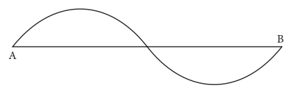
The actual length of the path travelled by a moving body irrespective of the direction is called the distance travelled by the body. It is measured in metre in SI system. It is a scalar quantity having magnitude only.
It is defined as the change in position of a moving body in a particular direction. It is a vector quantity having both magnitude and direction. It is also measured in metre in SI system.
Box item open
Observe the motion of a car as shown in the figure and answer the following questions: Compare the distance covered by the car through the path ABC and AC. What do you observe question mark Which path gives the shortest distance to reach D from A Question mark Is it the path ABCD or the path ACD or the path AD question mark box item ends
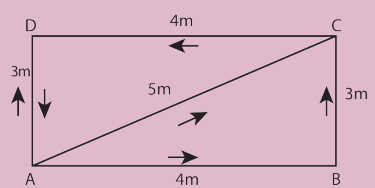
Speed is the quantity which shows how fast the body is moving but velocity is the quantity which shows the speed as well as the direction of the moving body.
Speed is the rate of change of distance or the distance travelled in unit time. It is a scalar quantity. The SI unit of speed is m s power minus 1.
Speed = Distance travelled divided by Time taken
box item open
An object travels 16 m in 4 second and then another 16 m in 2 second. What is the average speed of the object question mark
Solution:
Total distance travelled by the object = 16 m plus 16 m = 32 m
Total time taken = 4 second plus 2 second = 6 second
Average speed = total distance travelled by total time taken =32 m by 6 s =5.33 m s power minus 1
Therefore, the average speed of the object is 5.33 m s power minus 1 box item ends
box item open
A sound is heard 5 s later than the lightning is seen in the sky on a rainy day. Find the distance of location of lightning question mark Given the speed of sound = 346 m s power minus 1
Solution:
Speed = Distance by time taken Distance = Speed into Time = 346 into 5 = 1730 m box item ends
Thus, the distance of location of lightning is 1730 m.
Velocity is the rate of change of displacement. It is the displacement in unit time. It is a vector quantity. The SI unit of velocity is m s power minus 1
Velocity = Displacement by Time taken
Acceleration is the rate of change of velocity or it is the change of velocity in unit time. It is a vector quantity. The SI unit of acceleration is m s power minus 2.
Acceleration
= Change in velocity by Time
= bracket open Final velocity minus Initial velocity bracket closed by Time
a = bracket open v minus u bracket closed by t
Consider a situation in which a body moves in a straight line without reversing its direction. From the above equation if v is greater than u, That is, if final velocity is greater than initial velocity, the velocity increases with time and the value of acceleration is positive.
If v is less than u, That is, if final velocity is less than initial velocity, the velocity decreases with time and the value of acceleration is negative. It is called negative acceleration. Negative acceleration is called retardation or deceleration. If the acceleration has a value of minus 2 m s power minus 2, we say that deceleration is 2 m s power minus 2.
Plotting the distance by displacement or speed divided by velocity on a graph helps us to understand certain things about time and position.
Consider the Table 2.1 which shows the distance walked by a person at different times.
Table 2.1 Uniform motion
Time bracket open minute bracket closed |
Distance bracket open metre bracket closed |
0 |
0 |
5 |
500 |
10 |
1000 |
15 |
1500 |
20 |
2000 |
25 |
2500 |
A graph is drawn by taking time along X-axis and distance along Y-axis. The graph is known as distance – time graph.
Figure 2.2 The distance hyphan– time graph for Uniform motion image was given below
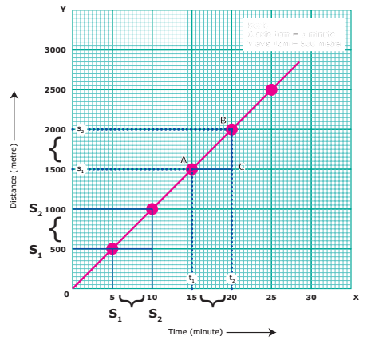
When we look at the distance hyphan time graph, we notice few things. First, it is a straight line. We also notice that the person covers equal distances in equal intervals of time. We can therefore conclude that he walked at a constant speed. Can you find the speed at which he walked, from the graph question mark Yes, you can. The parameter is referred as the slope of the line.
Speed = Distance covered by Time taken= Slope of the straight line = BC by AC bracket open From the graph bracket closed
= 500 by 5 = 100 m per min
Steeper the slope bracket open in other words the larger value bracket closed the greater is the speed.
Let us take a look at the distance hyphan – time graphs of three different people – hyphan Asher walking, Saphira cycling and Kanishka going in a car, along the same path Bracket OPEN Fig 2.3bracket closed. We know that cycling can be faster than walking and a car can go faster than a cycle. The distance hyphan – time graph of the three would be as given in the following graph. The slope of the line on the distance hyphan – time graph becomes steeper and steeper as the speed increases.
Figure 2.3 Comparison of speed image was given below
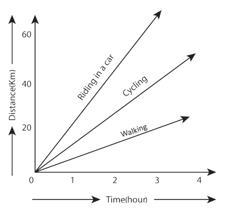
We can also plot the distance – time graph for accelerated motion non-uniform motion. Table 2.2 shows the distance travelled by a car in a time interval of two seconds.
Table 2.2 Non-uniform motion
Time Bracket OPENminute bracket closed |
Distance Bracket OPENmetre bracket closed |
0 |
0 |
5 |
500 |
10 |
1000 |
15 |
1500 |
20 |
2000 |
25 |
2500 |
If we plot a graph between the distance travelled and the time taken, it would be as shown in Figure 2.4.
Figure 2.4 The distance time graph for Non-uniform motion image was given below
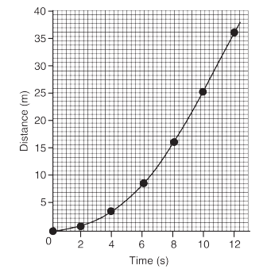
Note that the graph is not a straight line as we got in the case of uniform motion. This nature of the graph shows non–linear variation of the distance travelled by the car with time. Thus, the graph represents motion with non uniform speed.
The variation in velocity of an object with time can be represented by velocity – time graph. In the graph, time is represented along the X – axis and the velocity is represented along the Y – axis. If the object moves at uniform velocity, a straight line parallel to X-axis is obtained. This graph shows the velocity hyphan– time graph for a car moving with uniform velocity of 40 km per hour.
We know that the product of velocity and time gives displacement of an object moving with uniform velocity. Thus, the area under the velocity hyphan – time graph is equal to the magnitude of the displacement. So, the distance Bracket OPEN displacement bracket closed, S covered by the car in a time interval of t can be expressed as, S = AC × CD
S = Area of the rectangle ABCD Bracket OPEN shaded portion in the graph bracket closed
Figure 2.5 Velocity – Time graph image was given below
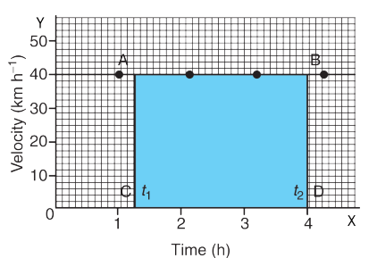
We can also study about uniformly accelerated motion by plotting its velocity – time graph. Consider a car being driven along a straight road. Its velocity for every 5 seconds is noted from the speedometer of the car. The velocity of the car in m s power minus 1 at different instants of time is shown in the Table 2.3.
Table 2.3 Uniformly accelarated motion
Time Bracket OPEN Second bracket closed |
Velocity of the Car Bracket OPENm s power minus 1 bracket closed |
Time 0 Bracket OPEN Second bracket closed |
Velocity of the Car 0Bracket OPENm s power minus 1 bracket closed |
Time 5 Bracket OPEN Second bracket closed |
Velocity of the Car 9Bracket OPENm s power minus 1 bracket closed |
Time 10 Bracket OPEN Secondbracket closed |
Velocity of the Car 18Bracket OPENm s power minus 1 bracket closed |
Time 15 Bracket OPEN Secondbracket closed |
Velocity of the Car 27Bracket OPENm s power minus 1 bracket closed |
Time 20 Bracket OPEN Secondbracket closed |
Velocity of the Car 36Bracket OPEN m s power minus 1 bracket closed |
Time 25Bracket OPEN Second bracket closed |
Velocity of the Car 45Bracket OPEN m s power minus 1 bracket closed |
Time 30 Bracket OPEN Second bracket closed |
Velocity of the Car 54Bracket OPEN m s power minus 1 bracket closed |
In this case, the velocity hyphan – time graph for the motion of the car is shown in Figure 2.6 bracket open straight line bracket closed. The nature of the graph shows that the velocity changes by equal amounts in equal intervals of time. Thus, for all uniformly accelerated motion, the velocity hyphan – time graph is a straight line.
Figure 2.6 Velocity hyphan Time graph for uniform acceleration image was given below
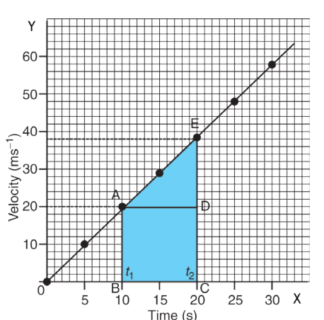
One can also determine the distance moved by the car from its velocity – time graph. The area under the velocity hyphan – time graph gives the distance bracket open magnitude of displacement bracket closed moved by the car in a given interval of time.
Since the magnitude of the velocity of the car is changing due to acceleration, the distance, S travelled by the car will be given by the area ABCDE under the velocity hyphan – time graph. That is,
S = Area ABCDE
= Area of the rectangle ABCD plus Area of the triangle ADE
S = Bracket OPEN AB into BC Bracket closed plus half of Bracket OPEN AD into DE Bracket closed
Area of the quadrangle ABCDE can also be calculated by calculating the area of trapezium ABCDE. It means,
S = Area of trapezium ABCDE
= 1/2 into Sum of length of parallel sides into Distance between parallel sides
S = 1/2 into Bracket OPENA.B. plus CE bracket closed into BC
In the case of non-uniformly accelerated motion, distance – time graph and velocity hyphan – time graphs can have any shape as shown in Figure 2.7.
Box item open
Figure 2.7 Velocity hyphan – Time graph for Non-uniform acceleration image was given below
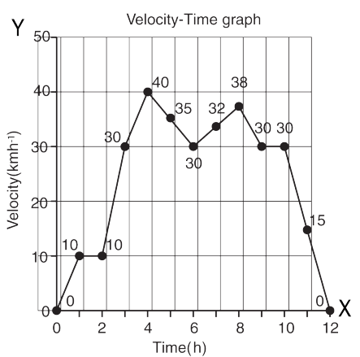
Newton studied the motion of an object and gave a set of three equations. These equations relate displacement, velocity, acceleration and time of an object under motion. An object in motion with initial velocity, u attains a final velocity, v in time, t due to acceleration, a and reaches a distance, s. Three equations can be written for this motion.
v = u plus a t
s = ut plus 1/2 a t power 2
v power 2 = u power 2 plus 2as
Let us try to derive these equations by graphical method.
Figure 2.8 shows the change in velocity with time for an uniformly accelerated object. The object starts from the point D in the graph with velocity, u. Its velocity keeps increasing and after time, t it reaches the point B on the graph.
Figure 2.8 Equations of Motion image was given below
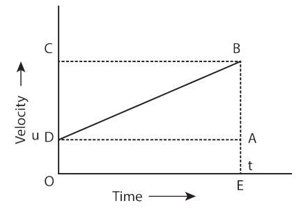
The initial velocity of the object = u = O D = E A
The final velocity of the object = v = O C = E B
Time = t = O E = D A
From the graph we know that, A.B. = D C
By definition, Acceleration
= Change in velocity divided by Time
= bracket open Final velocity minus Initial velocity bracket closed by Time
= bracket open O C minus O Dbracket closed bracket closed by O E
= D C by O E
a = D C by t
D C = A.B. = a.t.
From the graph E B = E A plus A.B.
v = u plus a.t. equationBracket OPEN1bracket closed
This is the first equation of motion.
From the graph the distance covered by the object during time, t is given by the area of quadrangle D O E B
s = Area of the quadrangle D O E B
= Area of the rectangle D O E A plus Area of the triangle D A B
= bracket open AE into OE bracket closed plus Bracket OPEN1 by 2 into A.B. into DAbracket closed
s = ut plus 1 by 2 a.t. power 2 equation (2bracket closed
This is the second equation of motion.
We see that the distance covered by the object during time, t is given by the area of the quadrangle D O E B. Here, D O E B is a trapezium. Then,
s = Area of trapezium D O E B
= 1 by 2 into Sum of length of parallel side into Distance between parallel sides
= 1 by 2 into bracket open O D plus B E bracket closed into OE
s = 1 by 2 into bracket open Bracket OPENu plus vbracket closed bracket closed into t
Since, a= bracket open v minus u bracket closed by t or t = bracket open v minus ubracket closed bracket closed by a
s = 1 by 2 into bracket open v plus ubracket closed bracket closed into bracket open v minus ubracket closed bracket closed by a
2 a s = v power 2 minus u power 2
v power 2 = u power 2 plus 2 a s equation bracket open 3 bracket closed
This is the third equation of motion.
box item open
The brakes applied to a car produce an acceleration of 6 m s power minus 2 in the opposite direction to the motion. If the car takes 2 s to stop after the application of brakes, calculate the distance travelled during this time.
Solution: We have been given a = minus 6 m s power minus 2, t = 2 s and v = 0
From the equation of motion,
v = u plus a t
0 = u plus Bracket OPEN minus 6 into 2bracket closed
0 = u minus 12u = 12 m s power minus 1
s = ut plus 1 by 2 a t power 2
= Bracket OPEN12 into 2bracket closed plus 1 by 2 Bracket OPEN minus 6 into 2 into 2bracket closed
= 24 minus 12 = 12m Thus, the car will move 12 m before it stops after the application of brakes.
box item ends
Box item open
Take a large stone and a small eraser. Stand on the top of a table and drop them simultaneously from the same height. What do you observe question mark Now, take a small eraser and a sheet of paper. Drop them simultaneously from the same height. What do you observe question mark This time, take two sheets of paper having same mass and crumple one of the sheets into a ball. Now, drop the sheet and the ball from the same height. What do you observe question mark Box item ends
From Activity 4, you can observe that, both the stone and the eraser reach the surface of the earth almost at the same time. When you drop the eraser and paper, the eraser reaches first and the sheet of paper reaches later. You can also observe that the paper crumpled into a ball reaches ground first and plain sheet of paper reaches later, although they have equal mass. Do you know the reason question mark
When all these objects are dropped in the absence of air medium Bracket OPEN vacuum bracket closed, all would have reached the ground at the same time. In air medium, air offers some resistance to the motion of freely falling objects. But, it is negligibly small when compared to the gravitational pull acting on the stone and rubber. Hence, they reach the ground at the same time.
It can be seen from these activities that the magnitude of air resistance depends on the area of objects exposed to air. We know that an object experiences acceleration during free fall. This acceleration experienced by an object is independent of mass. This means that all objects hollow or solid, big or small, should fall at the same rate.
The equation of motion for a freely falling body can be obtained by replacing ‘a’ in equations with g, the acceleration due to gravity. For a freely falling body which is initially at rest,
u = 0. Thus, we get the following equations.
v = g t, s = 1by 2 g t power 2, v power 2 = 2gh
box item open
DO YOU KNOW
Can a body have zero velocity and finite accelerationquestion mark Yes, when a body is thrown vertically upwards in space, at the highest point, the body has zero velocity but it has acceleration due to the gravity.box item ends
When we throw an object vertically upwards, it moves against the acceleration due to gravity. Hence, ‘a’ is taken to be minus g and when moving downwards ‘a’ is taken as plus g.
Take a piece of thread and tie a small piece of stone at one of its ends. Rotate the stone to describe a circular path with constant speed by holding the thread at the other end. Now, release the thread and let the stone go. Can you tell the direction in which the stone moves after it is released question mark box item ends
If you carefully observe, on being released the stone moves along a straight line tangential to the circular path. This is because once the stone is released, it continues to move along the direction it has been moving at that instant. This shows that the direction of motion changes at every point when the stone was moving along the circular path.
When an object is moving with a constant speed along a circular path, the velocity changes due to the change in direction. Hence, it is an accelerated motion. For example, revolution of earth around the sun, revolution of moon around the earth and the tip of the second’s hand of a clock are all accelarated motions.
If an object, moving along a circular path of radius, r takes time, T to come back to its starting position, then the speed, v is given by,
Speed = Circumference by Time taken
V = 2 pi r by T
A body is said to be accelerated, if the velocity of the body changes either in magnitude or in direction. So, the motion of a stone in circular path with constant speed and continous change of direction is an accelerated motion. In this case, there must be an acceleration acting along the string directed inwards, which makes the stone to move in circular path.
Figure 2.9 Centripetal acceleration and Centripetal force image was given below
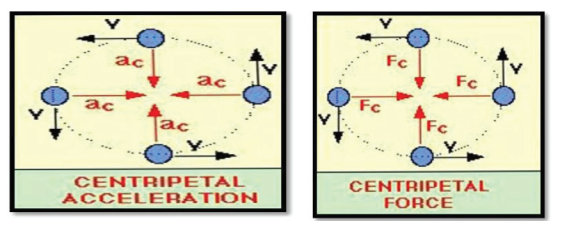
This acceleration is known as centripetal acceleration and the force is known as centripetal force. Since the centripetal acceleration is directed radially towards the centre of the circle, the centripetal force must act on the object radially towards the centre.
Let us consider an object of mass m, moving along a circular path of radius r, with a velocity, v. Its centripetal acceleration is given by
a = v power 2 by r
The magnitude of centripetal force is given by,
F = Mass into Centripetal acceleration
F = mv power 2 by r
Box item open
A 900 kg car moving at 10 m s power minus 1 takes a turn around a circle with a radius of 25 m. Determine the acceleration and the net force acting upon the car.
Solution:
When the car turns around circle, it experiences centripetal acceleration, a = v power 2 by r
a = 10 power 2 by 25 = 100 by 25 = 4 m s power minus 2
Net force acting upon the car,
F = m a = 900 into 4 = 3600 N
Box item ends
Box item open
Any force like gravitational force, frictional force, magnetic force, electrostatic force etc., may act as a centripetal force. Box item ends
Box item open
Take a piece of rope and tie a small stone at one end. Hold the other end of the rope and rotate it such that the stone follows a circular path. Do you experience any pull or push in your hand Question mark Box item ends
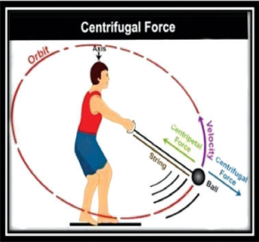
In this activity, a pulling force that acts away from the centre is experienced. This is called as centrifugal force. Force acting on a body away from the centre of circular path is called centrifugal force. Thus, centrifugal force acts in a direction which is opposite to the direction of centripetal force. Its magnitude is same as that of centripetal force. The dryer in a washing machine is an example for the application of centrifugal force.
Box item open
When you go for a ride in a merry-go-round in amusement parks, you will experience an outward pull as merry-go round rotates about vertical axis. This is due to centrifugal force. Box item ends
Motion is a change of position, which can be described in terms of the distance moved or the displacement.
Motion of an object could be uniform or non-uniform depending on its velocity.
Speed of an object is the distance covered per unit time and velocity is the displacement per unit time.
Rate of change of velocity is called acceleration
The motion of an object at uniform acceleration can be described with the help of three equations, namely:
v = u plus a t; s = ut plus 1 by 2 a t power 2 ; v power 2 = u power 2 plus 2 a s
For a freely falling body, the acceleration, a is replaced by g.
An object under uniform circular motion experiences centripetal force.
Centrifugal force acts in a direction which is opposite to the direction of the centripetal force.
Motion An object’s change in its position.
Distance. Length of an object has covered during its motion.
Displacement Change in the position of an object measuring from its starting position to the final position only.
Speed Rate of motion at which the object moves Bracket OPEN distance/time bracket closed
Velocity Speed of an object in a particular direction.
Acceleration Change in magnitude or direction of velocity.
Circular motion Movement of an object along the circumference of a circle or rotation along a circular path.
Centripetal force Force which acts on a body moving in a circular path and directed towards the centre.
Centrifugal force Force, arising from the body’s inertia, which appears to act on a body moving in a circular path and is directed away from the centre.
Gravity Force of attraction between an object and the centre of Earth, due to their masses.

1. The area under velocity – time graph represents the
A bracket closed velocity of the moving object.
B bracket closed displacement covered by the moving object.
C bracket closed speed of the moving object.
D bracket closed acceleration of the moving object.
2. Which one of the following is most likely not a case of uniform circular motion question mark
A bracket closed Motion of the Earth around the Sun.
B bracket closed Motion of a toy train on a circular track.
C bracket closed Motion of a racing car on a circular track.
D bracket closed Motion of hours hand on the dial of the clock.
3. Which of the following graph represents uniform motion of a moving particle question mark

4. The centrifugal force is
abracket closed a real force.
bbracket closed the force of reaction of centripetal force.
cbracket closed a virtual force.
dbracket closed directed towards the centre of the circular path.
1. Speed is a dash quantity whereas velocity is a dash quantity.
2. The slope of the distance Hyphan time graph at any point gives dash
3. Negative acceleration is called dash
4. Area under velocity Hyphan time graph shows dash
1. The motion of a city bus in a heavy traffic road is an example for uniform motion.
2. Acceleration can get negative value also.
3. Distance covered by a particle never becomes zero but displacement becomes zero.
4. The velocity Hyphan time graph of a particle falling freely under gravity would be a straight line parallel to the x axis.
5. If the velocity Hyphan time graph of a particle is a straight line inclined to X-axis then its displacement Hyphan time graph will be a straight line.
Mark the correct choice as:
a. If both assertion and reason are true and reason is the correct explanation of assertion.
b. If both assertion and reason are true but reason is not the correct explanation of assertion.
c. If assertion is true but reason is false.
d. If assertion is false but reason is true.
1. Assertion: The accelerated motion of an object may be due to change in magnitude of velocity or direction or both of them.
Reason: Acceleration can be produced only by change in magnitude of the velocity. It does not depend the direction.
2. Assertion: The Speedometer of a car or a motor-cycle measures its average speed. Reason: Average velocity is equal to total displacement divided by total time taken.
3. Assertion: Displacement of a body may be zero when distance travelled by it is not zero.
Reason: The displacement is the shortest distance between initial and final position.
List 1 |
List 2 |
1. Motion of a bodycovering equaldistances in equalinterval of time |
|
2. Motion with non uniformacceleration
|
|
3.Constant retardation |
|
4.Uniformacceleration |
|
1. Define velocity.
2. Distinguish distance and displacement.
3. What do you mean by uniform motion Question mark
4. Compare speed and velocity.
5. What do you understand about negative acceleration Question mark
6. Is the uniform circular motion accelerated Question mark Give reasons for your answer.
7. What is meant by uniform circular motion Question mark Give two examples of uniform circular motion.
1. Derive the equations of motion by graphical method.
2. Explain different types of motion.
1. A ball is gently dropped from a height of 20 m. If its velocity increases uniformly at the rate of 10 m s power minus 2 with what velocity will it strike the groundquestion mark After what time will it strike the ground Question mark
2. An athlete completes one round of a circular track of diameter 200 m in 40 s. What will be the distance covered and the displacement at the end of 2 m and 20 s Question mark
3. A racing car has a uniform acceleration of 4 m s power minus 2 What distance it covers in 10 s after the start Question mark
1. Advanced Physics by: M. Nelkon and P. Parker, C.B.S publications, Chennai
2. College Physics by: R.L.Weber, K.V. Manning, Tata McGraw Hill, New Delhi.
3. Principles of Physics Bracket OPENExtendedbracket closed - Halliday, Resnick and Walker, Wiley publication, New Delhi.
http://www.ducksters.com/science/physics/ motion_glossary_and_terms.php
http://www.physicsclassroom.com/ Class/1DKin/U1L1d.cfm
http://www.physicsclassroom.com/ Class/1DKin/U1L1e.cfm
https://brilliant.org/wiki/uniform-circularmotion-easy/Centrifugal force


FORCE AND MOTION
Newton’s second law says a force acting on the object either change it’s direction or acceleration or both. F=ma This activity proves that:
Step 1. Type the following URL in the browser or scan the QR code from your mobile.You can see a wheel barrow full of load on the screen. Below that you can see two sets of people also.
Step 2. Place different number of peoples on both the side of the rope.
Click go. According to the force given by the people the wheel barrow moves to anyone of the side. If the number of people is equal on both the sides the load will not move.
Step 3. By changing the number of people you can see the force and motion.
https://phet.colorado.edu/en/simulation/forces-and-motion-basics
After completing this lesson, students will be able to
define pressure in terms of weight.
explain the variation of pressure with respect to depth in a fluid.
learn the fact that liquid exerts an upward force on objects immersed in it.
calculate the density of a liquid when pressure and altitude are given.
learn the formula for finding the relative density of an object and apply the same.
understand the behaviour of floating bodies.
A small iron nail sinks in water, whereas a huge ship of heavy mass floats on sea water. Astronauts have to wear a special suit while travelling in space. All these have a common reason called ‘pressure’. If the pressure increases in a solid, based on its inherent properties, it experiences tension and ultimately deforms or breaks. In the case of fluids it causes them to flow rather than to deform. Although liquids and gases share some common characteristics, they have many distinctive characteristics on their own. It is easy to compress a gas whereas liquids are incompressible. Learning of all these facts helps us to understand pressure better. In this lesson you will study about pressure in fluids, density of fluids and their application in practical life.
Pushing a pin into a board by its head is difficult. But pushing it by the pointed end is easy. Why Question mark. Have you ever wondered why a camel can run in a desert easily Question mark Why a truck or a motorbus has wider tyre Question mark. Why cutting tools have sharp edges Question mark . In order to answer these questions and understand the phenomena involved, we need to learn about two interrelated physical concepts called thrust and pressure.
Box item open
Stand on loose sand. Your feet go deep into the sand. Now, lie down on the sand. What happens Question mark. You will find that your body will not go that deep into the sand. Why Question mark. box item ends
In both the cases of the above activity, the force exerted on the sand is the weight of your body which is the same. This force acting perpendicular to the surface is called thrust. When you stand on loose sand, the force is acting on an area equal to the area of your feet. When you lie down, the same force acts on an area of your whole body, which is larger than the area of your feet. Therefore, the effect of thrust, depends on the area on which it acts. The effect of thrust on sand is larger while standing than while lying.
The force per unit area acting on an object concerned is called pressure. Thus, we can say thrust on an unit area is pressure.
Pressure = thrust divided by area of contact
For the same given force, if the area is large pressure is low and vice versa. This is shown in Figure 3.1.
Pressure depends on area of application image was given below
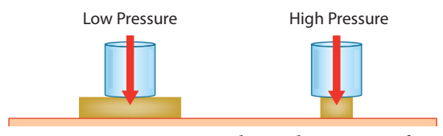
In SI units, the unit of thrust is newton Bracket open.denoted as N bracket closed. The unit of pressure is newton per square metre or newton metre power minus 2 Bracket open.denoted as Nm power minus 2 bracket closed. In the honour of the great French scientist, Blaise Pascal, 1 newton per square metre is called as, 1 pascal denoted as Pa.
1 Pa = 1 N m power minus 2
Box item open
If a single nail pricks our body it is very painful. How is it possible for people to lie down on a bed of nails, still remain unhurt question mark It is because, area of contact is more. box item ends
Box item open
A man whose mass is 90 kg stands on his feet on a floor. The total area of contact of his two feet with the floor is 0.036 m power 2 Bracket open Take, g = 10 m s power minus 2 bracket closed. How much is the pressure exerted by him on the floor question mark
Solution:
The weight of the man Bracket open thrust bracket closed bracket closed,
F = mg = 90 kg into 10 m s power minus 2 = 900 N
Pressure, P = F by A = 900 N BY 0.036 m power 2 = 25000 Pa box item ends
All the flowing substances, both liquids and gases are called fluids. Like solids, fluids also have weight and therefore exert pressure. When filled in a container, the pressure of the fluid is exerted in all directions and at all points of the fluid. Since the molecules of a fluid are in constant, rapid motion, particles are likely to move equally in any direction. Therefore, the pressure exerted by the fluid acts on an object from all directions. It is shown in Figure 3.2. Pressure in fluids is calculated as shown below.
Fluid Pressure = total force exerted by the fluid divided by area over which the force is exerted = F by A
Figure 3.2 Collision of molecules gives rise to pressure.image was given below
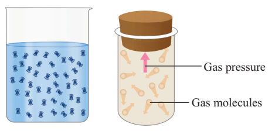
We shall first learn about the pressure exerted by liquids and then learn about the pressure exerted by gases.
The force exerted due to the pressure of a liquid on a body submerged in it and on the walls of the container is always perpendicular to the surface. In Figure 3.3 (abracket closed we can see the pressure acting on all sides of the vessel.
When an air filled balloon is immersed inside the water in a vessel it immediately comes up and floats on water. This shows that water Bracket open or liquid bracket closed exerts pressure in the upward direction. It is shown in Figure 3.3(bbracket closed.
Pressure due to fluids.image was given below
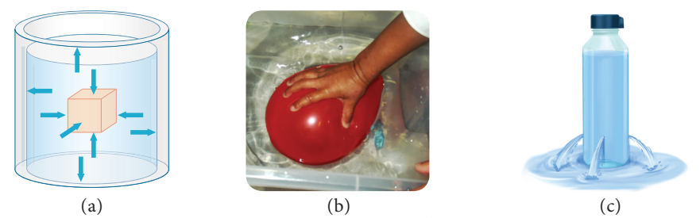
Similarly, liquid pressure acts in lateral sides also. When a bottle having water is pierced on the sides we can see water coming out with a speed as in Figure 3.3 (cbracket closed. This is because liquid exerts lateral pressure on the walls the container.
Box item open
Take a transparent plastic pipe. Also take a balloon and tie it tightly over one end of the plastic pipe. Pour some water in the pipe from the top. What happens question mark The balloon tied at the bottom stretches and bulges out. It shows that the water poured in the pipe exerts a pressure on the bottom of its container.
An image of plastic pipe and balloon experiment was given below box item ends
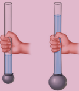
Pressure exerted by a liquid at a point is determined by,
1bracket closed depth of the liquid Bracket open h. bracket closed
2bracket closed density of the liquid Bracket open rho bracket closed
3bracket closed acceleration due to gravity bracket open g.bracket closed.
Box item open
Take a large plastic can. Punch holes with a nail in a vertical line on the side of the can as shown in figure. Then fill the can with water. The water may just dribble out from the top hole, but with increased speed at the bottom holes as depth causes the water to squirt out with more pressure. box item ends
Factors determining liquid pressure in liquids image was given below
From this activity we can infer that pressure varies as depth increases. But, it is same at a particular depth independent of the direction.
Box item open
Take two liquids of different densities say water and oil to a same level in two plastic containers. Make holes in the two containers at the same level. What do you see question mark It can be seen that water is squirting out with more pressure than oil. This indicates that pressure depends on density of the liquid. box item ends
Image of activity 4 pressure depends on density of the liquid was given below
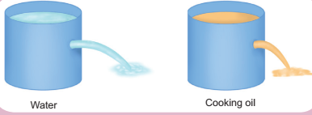
A tall beaker is filled with liquid so that it forms a liquid column. The area of cross section at the bottom is A. The density of the liquid is rho . The height of the liquid column is h. In other words the depth of the water from the top level surface is 'h' as shown in Figure 3.4 The image Pressure due to a liquid column was given below
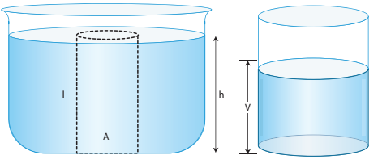
We know that, thrust at the bottom of the column bracket open F bracket closed = weight of the liquid.
Therefore, F = mg equation (1bracket closed
We can get the mass of the liquid by multiplying the volume of the liquid and its density.
Mass, m = rho V..equation (2bracket closed
Volume of the liquid column,
V = Area of cross section Bracket openA bracket closed into Height Bracket open (hbracket closed bracket closed = A h equation (3bracket closed
Substituting (3bracket closed in (2bracket closed Mass m = rho A h equation 4
Substituting (4bracket closed in (1bracket closed
Force = mg = rho A h g
Pressure, P = thrust bracket open F bracket closed divided by Area bracket open A
bracket closed
= mg by A = rho Bracket open A h bracket closed g by A = rho h g
Therefore, Pressure due to a liquid column, P = h rho g
This expression shows that pressure in a liquid column is determined by depth, density of the liquid and the acceleration due to gravity. Interestingly, the final expression for pressure does not have the term area A in it. Thus, pressure in liquid depends on depth only.
Box item open
Calculate the pressure exerted by a column of water of height 0.85 m Bracket open density of water, rho subscript of w = 1000 kg m power minus 3 bracket closed and kerosene of same height Bracket open density of kerosene, rho subscript of k = 800 kg m power minus 3bracket closed
Solution:
Pressure due to water = h rho subscript w g
= 0.85 m into 1000 kg m power minus 3 into 10 m s power minus 2 = 8500 Pa.
Pressure due to kerosene = h rho subscript k. g
= 0.85 m into 800 kg m power minus 3 into 10 m s power minus 2 = 6800 Pa. box item closed
Earth is surrounded by a layer of air up to certain height Bracket open nearly 300 km bracket closed and this layer of air around the earth is called atmosphere of the earth. Since air occupies space and has weight, it also exerts pressure. This pressure is called atmospheric pressure. The atmospheric pressure we normally refer is the air pressure at sea level.
Figure 3.5 shows that air gets 'thinner' with increasing altitude. Hence, the atmospheric pressure decreases as we go up in mountains. On the other hand air gets heavier as we go down below sea level like mines.
Figure 3.5 Atmospheric pressure acts like a column. Image was given below
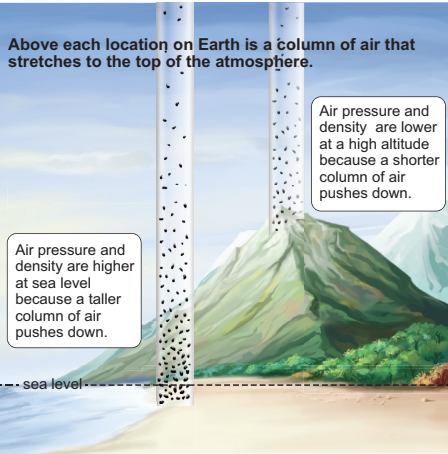
Box item open
Human lung is well adapted to breathe at a pressure of sea level Bracket open 101.3 k Pa. bracket closed. As the pressure falls at greater altitudes, mountain climbers need special breathing equipments with oxygen cylinders. Similar special equipments are used by people who work in mines where the pressure is greater than that of sea level. box item ends
The instrument used to measure atmospheric pressure is called barometer. A mercury barometer, first designed by an Italian Physicist Torricelli, consists of a long glass tube bracket open closed at one end, open at the other bracket closed filled with mercury and turned upside down into a container of mercury. This is done by closing the open end of the mercury filled tube with the and then opening it after immersing it in to a trough of mercury Bracket open Figure 3.6 bracket closed.
Figure 3.6 Mercury barometer image was given below
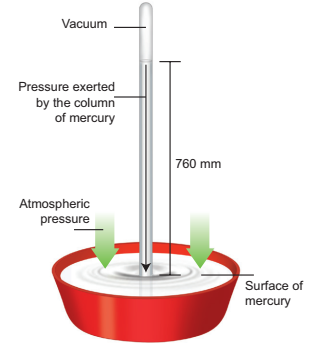
The barometer works by balancing the mercury in the glass tube against the outside air pressure. If the air pressure increases, it pushes more of the mercury up into the tub and if the air pressure decreases, more of the mercury drains from the tube. As there is no air trapped in the space between mercury and the closed end, there is vacuum in that space. Vacuum cannot exert any pressure. So the level of mercury in the tube provides a precise measure of air pressure which is called atmospheric pressure. This type of instrument can be used in a lab or weather station.
On a typical day at sea level, the height of the mercury column is 760 mm. Let us calculate the pressure due to the mercury column of 760 mm which is equal to the atmospheric pressure. The density of mercury is 13600 kg m power minus 3.
Pressure, P = h rho g
= Bracket open 760 into 10 power minus 3 m bracket closed into Bracket open 13600 kg m power minus 3bracket closed into Bracket open 9.8 m s power minus 2bracket closed
= 1.013 into 10 power 5 Pa.
This pressure is called one atmospheric pressure Bracket open atm bracket closed. There is also another unit called Bracket open bar bracket closed that is also used to express such high values of pressure.
1 atm = 1.013 into 10 power 5 Pa.
1 bar = 1 into 10 power 5 Pa.
Hence, 1 atm = 1.013 bar.
Expressing the value in kilopascal gives 101.3 k Pa. This means that, on each 1 m power 2 of surface, the force acting is 1.013 k N.
A mercury barometer in a physics laboratory shows a 732 mm vertical column of mercury. Calculate the atmospheric pressure in pascal. Bracket open Given density of mercury rho = 1.36 into 10 power 4 kg m power minus 3 g = 9.8 m s power minus 2 bracket closed
Solution:
Atmospheric pressure in the laboratory,
P = h rho g = 732 into 10 power minus 3 into 1.36 into 10 power 4 into 9.8
= 9.76 into 10 power 4 Pa Bracket open or bracket closed 0.976 into 10 power 5 Pa box item ends
Our daily activities are happening in the atmospheric pressure. We are so used to it that we do not even realise. When tyre pressure and blood pressure are measured using instruments Bracket open gauges bracket closed they show the pressure over the atmospheric pressure. Hence, absolute pressure is zero-referenced against a perfect vacuum and gauge pressure is zero-referenced against atmospheric pressure.
For pressures higher than atmospheric pressure,
absolute pressure = atmospheric pressure plus gauge pressure
For pressures lower than atmospheric pressure
absolute pressure = atmospheric pressure minus gauge pressure
We have seen that liquid column exerts pressure. So the pressure inside the sea will be more. This is more than twice the atmospheric pressure. Parts of our body, especially blood vessels and soft tissues cannot withstand such high pressure. Hence, scuba divers always wear special suits and equipment to protect them Bracket open Figure 3.7 bracket closed .
Figure 3.7 Scuba divers with special protecting equipment image was given below
Box item open
In petrol bunks, the tyre pressure of vehicles is measured in a unit called p s i. It stands for pascal per inch, an old system of unit for measuring pressure. box item ends
Pascal's principle is named after Blaise Pascal Bracket open 1623 to 1662 bracket closed a French mathematician and physicist. The law states that the external pressure applied on an incompressible liquid is transmitted uniformly throughout the liquid. Pascal’s law can be demonstrated with the help of a glass vessel having holes all over its surface. Fill it with water. Push the piston. The water rushes out of the holes in the vessel with the same pressure. The force applied on the piston exerts pressure on water. This pressure is transmitted equally throughout the liquid in all directions Bracket open Figure 3.8 bracket closed . This principle is applied in various machines used in our daily life.
Figure 3.8 Demonstration of Pascal’s Law image was given below
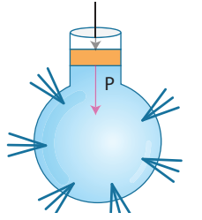
Pascal's law became the basis for one of the important machines ever developed, the hydraulic press. It consists of two cylinders of different cross-sectional areas as shown in Figure 3.9. They are fitted with pistons of cross-sectional areas “a” and ' A'. The object to be lifted is placed over the piston of large cross-sectional area A. The force F1 is applied on the piston of small cross-sectional area 'a'. The pressure P produced by small piston is transmitted equally to large piston and a force F2 acts on A which is much larger than F1.
Pressure on piston of small area ‘a’ is given by,
P = F1 by A1 equation Bracket open 1 bracket closed
Applying Pascal’s law, the pressure on large piston of area A will be the same as that on small piston.
Therefore, P = F2 by A2 Bracket open 2 bracket closed
Comparing equations Bracket open 1 bracket closed and Bracket open 2 bracket closed we get
F1 by A1 = F2 by A2 or F2 = F1 into A2 by A1
Figure 3.9 Hydraulic press image was given below
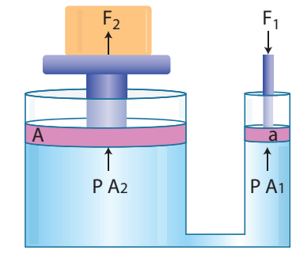
Since, the ratio A2 by A1 is greater than 1, the force F2 that acts on the larger piston is greater than the force F1 acting on the smaller piston. Hydraulic systems working in this way are known as force multipliers.
Box item open
A hydraulic system is used to lift a 2000 kg vehicle in an auto garage. If the vehicle sits on a piston of area 0.5 m square, and a force is applied to a piston of area 0.03 m square, what is the minimum force that must be applied to lift the vehicle question mark
Given: Area covered by the vehicle on the piston A1 = 0.5 m square,
Weight of the vehicle, F1 = 2000 kg into 9.8 m s power minus 2
Area on which force F2 is applied, A2 = 0.03 m power 2
Solution: P1 = P2;F1 by A1= F2 by A2 and F2 = F1 by A1 into A2F2 = Bracket open 2000 into 9.8 bracket closed 0.03 by 0.5 = 1176 N box item ends
Box item open
Take two identical flasks and fill one flask with water to 250 cubic centimeter mark and the other with kerosene to the same 250 cubic cm mark. Measure them in a balance. The flask filled with water will be heavier than the one filled with kerosene. Why question mark The answer is in finding the mass per unit volume of kerosene and water in respective flasks. box item ends
Image of 2 bottle with water and kerosene was given below
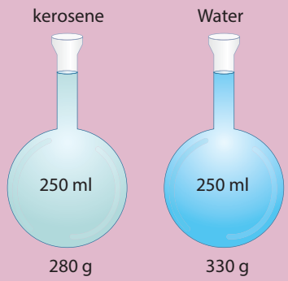
To understand density better, let us assume that the mass of the flask be 80 g. So, the mass of the flask filled with water is 330 g and the mass of flask filled with kerosene is 280 g. Mass of water only is 250 g and kerosene only is 200 g. Mass per unit volume of water is 250 by 250 cubic cm . This is 1 g per cubic cm . Mass per unit volume of kerosene is 200 g by 250 cubic cm. This is 0.8 g per cubic cm .The result 1 g per cubic cm and 0.8 g cubic cm are the densities of water and kerosene respectively. Therefore, the density of a substance is the mass per unit volume of a given substance.
The SI unit of density is kilogram per meter cubic Bracket open kg per cubic m bracket closed also gram per cubic centimeter Bracket open g per cubic cm bracket closed. The symbol for density is rho Bracket open symbol rho bracket closed.
We can compare the densities of two substances by finding their masses. But, generally density of a substance is compared with the density of water at 4 degree Celsius because density of water at that temperature is 1 g per cubic cm. Density of any other substance with respect to the density of water at 4 degree C is called the relative density. Thus relative density of a substance is defined as ratio of density of the substance to density of water at 4 degree C. Mathematically, relative density Bracket open R.D.bracket closed = density of the substance divided by density of water at 4 degree C
We know that, Density = mass per volume
Therefore Relative density = mass of the substance or volume of the substance divided by mass of water or volume of water
Since the volume of the substance is equal to the volume of water,
Relative density = mass of certain volume of the substance divided by mass of equal volume of water at 4 degree C
Thus, the ratio of the mass of a given volume of a substance to the mass of an equal volume of water at 4 degree C also denotes relative density.
Relative density can be measured using Pycnometer also called density bottle. It consists of ground glass stopper with a fine hole through it. The function of the hole in a stopper is that, when the bottle is filled and the stopper is inserted, the excess liquid rises through the hole and runs down outside the bottle. By this way the bottle will always contain the same volume of whatever the liquid is filled in, provided the temperature remains constant. Thus, the density of a given volume of a substance to the density of equal volume of referenced substance is called relative density or specific gravity of the given substance. If the referenced substance is water then the term specific gravity is used.
Whether an object will sink or float in a liquid is determined by the density of the object compared to the density of the liquid. If the density of a substance is less than the density of the liquid it will float. For example a piece of wood which is less dense than water will float on it. Any substance having more density than water Bracket open for example, a stone bracket closed, will sink into it.
Box item open
You have a block of a mystery material, 12 cm long, 11 cm wide and 3.5 cm thick. Its mass is 1155 grams. Bracket open a bracket closed
What is its density question mark
Bracket open b bracket closed
Will it float in a tank of water, or sink question mark
Solution:
Bracket open a bracket closed
Density = mass by volume= 1155 g divided by 12 cm into 11 cm into 3.5 cm
=1155 g by 462 cubic cm = 2.5 g cm power minus 3
Bracket open b bracket closed
The mystery material is denser than the water. So it sinks. box item ends
A direct-reading instrument used for measuring the density or relative density of the liquid is called hydrometer. Hydrometer is based on the principle of flotation, That is the weight of the liquid displaced by the immersed portion of the hydrometer is equal to the weight of the hydrometer.
Hydrometer consists of a cylindrical stem having a spherical bulb at its lower end and a narrow tube at its upper end. The lower spherical bulb is partially filled with lead shots or mercury. This helps hydrometer to float or stand vertically in liquids. The narrow tube has markings so that relative density of a liquid can be read directly.
The liquid to be tested is poured into the glass jar. The hydrometer is gently lowered in to the liquid until it floats freely. The reading against the level of liquid touching the tube gives the relative density of the liquid.
Figure 3.10 Hydrometer image was given below
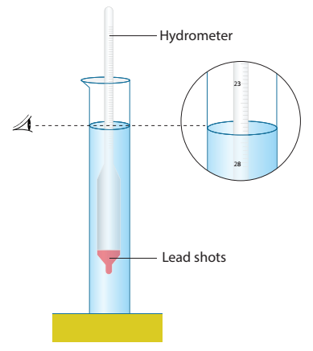
Hydrometers may be calibrated for different uses such as lactometers for measuring the density Bracket open creaminess bracket closed of milk, saccharometer for measuring the density of sugar in a liquid and alcoholometer for measuring higher levels of alcohol in spirits.
One form of hydrometer is a lactometer, an instrument used to check the purity of milk. The lactometer works on the principle of gravity of milk.
The lactometer consists of a long graduated test tube with a cylindrical bulb with the graduation ranging from 15 at the top to 45 at the bottom. The test tube is filled with air. This air chamber causes the instrument to float. The spherical bulb is filled with mercury to cause the lactometer to sink up to the proper level and to float in an upright position in the milk.
Inside the lactometer there may be a thermometer extending from the bulb up into the upper part of the test tube where the scale is located. The correct lactometer reading is obtained only at the temperature of 60 °F. A lactometer measures the cream content of milk. More the cream, lower the lactometer floats in the milk. The average reading of normal milk is 32. Lactometers are used at milk processing units and dairies.
We already saw that a body experiences an upward force due to the fluid surrounding, when it is partially or fully immersed in to it. We also know that pressure is more at the bottom and less at the top of the liquid. This pressure difference causes a force on the object and pushes it upward. This force is called buoyant force and the phenomenon is called buoyancy Bracket OPEN Figure3.11 bracket closed.
Most buoyant objects are those with a relatively high volume and low density. If the object weighs less than the amount of water it has displaced Bracket OPEN density is lessbracket closed, buoyant force will be more and it will float Bracket OPEN such object is known as positively buoyantbracket closed. But if the object weighs more than the amount of water it has displaced Bracket OPEN density is more bracket closed, buoyant force is less and the object will sink Bracket OPEN such object is known as negatively buoyant bracket closed.
Figure 3.11 Buoyant force image was given below
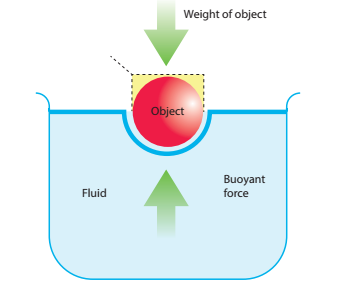
Box item open
Salt water provides more buoyant force than fresh water, because, buoyant force depends as much on the density of fluids as on the volume displaced. box item ends
Cartesian diver is an experiment that demonstrates the principle of buoyancy. It is a pen cap with clay. The Cartesian diver contains just enough liquid that it barely floats in a bath of the liquid; its remaining volume is filled with air. When pressing the bath, the additional water enters the diver, thus increasing the average density of the diver, and thus it sinks.
Figure 3.12 Cartesian diver image was given below
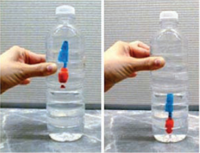
Archimedes principle is the consequence of Pascal’s law. According to legend, Archimedes devised the principle of the 'hydrostatic balance' after he noticed his own apparent loss in weight while sitting in his bath. The story goes that he was so enthused with his discovery that he jumped out of his bath and ran through the town, shouting 'eureka'. Archimedes principle states that ‘a body immersed in a fluid experiences a vertical upward buoyant force equal to the weight of the fluid it displaces’
When a body is partially or completely immersed in a fluid at rest, it experiences an upthrust which is equal to the weight of the fluid displaced by it. Due to the upthrust acting on the body, it apparently loses a part of its weight and the apparent loss of weight is equal to the upthrust.
The image Figure 3.13 Upthrust is equal to the weight of the fluid displaced was given below
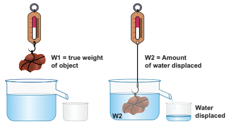
Thus, for a body either partially or completely immersed in a fluid,
Upthrust = Weight of the fluid displaced = Apparent loss of weight of the body
Apparent weight of an object = True weight of an object in air minus Up thrust Bracket OPEN weight of water displaced bracket closed
Laws of flotation are
1. The weight of a floating body in a fluid is equal to the weight of the fluid displaced by the body.
2. The centre of gravity of the floating body and the centre of buoyancy are in the same vertical line.
The point through which the force of buoyancy is supposed to act is known as centre of buoyancy. It is shown in Figure 3.14.image of Centre of buoyancy was given below
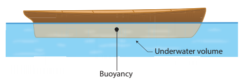
Box item open
Flotation therapy uses water that contains Epsom salts rich in magnesium. As a floater relaxes, he or she is absorbing this magnesium through the skin. Magnesium helps the body to process insulin, which lowers a person’s risk of developing Type 2 Diabetes. box item ends
The force which produces compression is called thrust. Its S.I. unit is newton.
Thrust acting normally to a unit area of a surface is called pressure. Its S.I. unit is pascal.
The pressure exerted by the atmospheric gases on its surroundings and on the surface of the earth is called atmospheric pressure. 1 atm is the pressure exerted by a vertical column of mercury of 76 cm height.
Barometer is an instrument used to measure atmospheric pressure.
The upward force experienced by a body when partly or fully immersed in a fluid is called upthrust or buoyant force.
Cartesian diver is an experiment which demonstrates the principle of buoyancy and the ideal gas law.
Pascal’s law states that an increase in pressure at any point inside a liquid at rest is transmitted equally and without any change, in all directions to every other point in the liquid.
Archimedes’ principle states that when a body is partially or wholly immersed in a fluid, it experiences an up thrust or apparent lose of weight, which is equal to the weight of the fluid displaced by the immersed part of the body.
Density is known as mass per unit volume of a body. Its S.I. unit is kg m power minus 3
Relative density is the ratio between the density of a substance and density of water. Relative density of a body is a pure number and has no unit.
Hydrometer is a device used to measure the relative density of liquids based on the Archimedes’ principle.
Lactometer is a device used to check the purity of milk by measuring its density using Archimedes’ principle.
Altitude Vertical distance in the up direction.
Astronaut Person who is specially trained to travel into outer space.
Axes Simple machine to cut, shape and split wood.
Deformation Changes in an object's shape or form due to the application of a force or forces.
Iceberg Large piece of ice floating in water.
Hydraulic systems Device that uses fluids and work under the fluid pressure to control valves.
Incompressible No change in volume if a pressure is applied.
Meteorological Weather condition.
Piston Movable disc fitted inside a cylinder.
Propellers Fan that transmits power in the form of thrust by rotation.
Syringe Simple pump made of plastic or glass to inject or withdraw fluid.
Therapy Treatment given for healing sickness.
Velocity Speed of objects with direction.
1. The size of an air bubble rising up in water
Bracket OPEN a bracket closed decreases
Bracket OPEN b bracket closed increases
Bracket OPEN c bracket closed remains same Bracket OPEN d bracket closed may increase or decrease
2. Clouds float in atmosphere because of their low
Bracket OPEN a bracket closed density
Bracket OPEN b bracket closed pressure
Bracket OPEN c bracket closed velocity
Bracket OPEN d bracket closed mass
3. In a pressure cooker, the food is cooked faster because
Bracket OPEN a bracket closed pressure lowers the boiling point.
Bracket OPEN b bracket closed increased pressure raises the boiling point.
Bracket OPEN c bracket closed decreased pressure raises the boiling point.
Bracket OPEN d bracket closed increased pressure lowers the melting point.
4. An empty plastic bottle closed with an airtight stopper is pushed down into a bucket filled with water. As the bottle is pushed down, there is an increasing force on the bottom. This is because,
Bracket OPEN a bracket closed more volume of liquid is displaced. Bracket OPEN b bracket closed more weight of liquid is displaced.
Bracket OPEN c bracket closed pressure increases with depth. Bracket OPEN d bracket closed All the above.
1. The weight of the body immersed in a liquid appears to be dash than its actual weight.
2. The instrument used to measure atmospheric pressure is dash
3. The magnitude of buoyant force acting on an object immersed in a liquid depends on dash of the liquid.
4. A drinking straw works on the existence of dash
1. The weight of fluid displaced determines the buoyant force on an object.
2. The shape of an object helps to determine whether the object will float or not.
3. The foundations of high-rise buildings are kept wide so that they may exert more pressure on the ground.
4. Archimedes’ principle can also be applied to gases.
5. Hydraulic press is used in the extraction of oil from oil seeds.
Density h rho g
Pascal’s law Milk
Pressure exerted by a fluid mass per volume
Lactometer Pressure
1. On what factors the pressure exerted by the liquid depends on question mark
2. Why does a helium balloon float in air question mark
3. Why it is easy to swim in sea water than in river water question mark
4. What is meant by atmospheric pressure question mark
5. State Pascal’s law question mark.
1. With an appropriate illustration prove that the force acting on a smaller area exerts a greater pressure.
2. Describe the construction and working of mercury barometer.
3. How does an object’s density determine whether the object will sink or float in water question mark
4. Explain the construction and working of a hydrometer with diagram.
5. State the laws of flotation.
Mark the correct answer as:
1. Assertion: To float, body must displace liquid whose weight is equal to the actual weight.
Reason: The body will experience no net downward force in that case.
2. Assertion: Pascal’s law is the working principle of a hydraulic lift.
Pressure is thrust per unit area.
Bracket OPEN a bracket closed If both assertion and reason are true and reason is the correct explanation of assertion.
Bracket OPEN b bracket closed If both assertion and reason are true but reason is not the correct explanation of assertion.
Bracket OPEN c bracket closed If assertion is true but reason is false.
Bracket OPEN d bracket closed If assertion is false but reason is true.
1. A block of wood of weight 200 g floats on the surface of water. If the volume of block is 300 cubic cm, calculate the upthrust due to water.
2. Density of mercury is 13600 kg m power minus 3. Calculate the relative density.
3. The density of water is 1 g cm power minus 3. What is its density in S.I. units question mark
4. Calculate the apparent weight of wood floating on water if it weighs 100 g in air.
1. How high does the mercury level in barometer stand on a day when atmospheric pressure is 98.6 k Pa question mark
2. How does a fish manage to rise up and move down in water question mark
3. If you put one ice cube in a glass of water and another in a glass of alcohol, what would you observe question mark Explain your observations.
4. Why does a boat with a hole in the bottom would eventually sink question mark
1.Fundamentals of Physics - By David Halliday and Robert Resnick.
2. I C S E Concise Physics - By Selina publisher.
3. Physics - By Tower, Smith Tuston and Cope.
https://www.teachengineering.org/lessons/view/cub_airplanes_lesson04 http://www.cyberphysics.co.uk/topics/earth/atmosphr/atmospheric_pressure.htm http://discovermagazine.com/2003/mar/featscienceof http://northwestfloatcenter.com/how-flotationcan-help-your-heart/
concept map image was given below

Fluid
Experiment with fluid Pressure and Flow using virtual simulator

Steps
Type the given URL to reach “pHET Simulation” page and download the “java” file of“Fluid Pressure and Flow”.
Open the “java” file. Open the water tap and observe the “Pressure” fluctuations by increasing“Fluid density” and “Gravity”.
Select the third picture and drop down a weight scales to transform weight into pressure.
Switch to “Flow” tab from the top to simulate fluid motion under a given shape and pressure. Click the “red” button to drop dots into the fluid and alter the pipe shape by dragging the yellow holders.


Step 1 Step 2 Step 3 Step 4images given below
Fluid Pressure and Flow Simulator

URL: https://phet.colorado.edu/en/simulation/fluid-pressure-and-flow or Scan the QR Code.

After completing this lesson, students will be able to
understand the electric charge, electric field and Coulomb’s law.
explain the concepts of electric current, voltage, resistance and Ohm’s law.
draw electrical circuit diagrams for series and parallel circuits.
explain the effects of electric current like. heating or thermal effect, chemical effect, and magnetic effect.
understand direct and alternating currents.
know the safety aspects related to electricity.
Like mass and length, electric charge also is a fundamental property of all matter. We know that matter is made up of atoms and molecules. Atoms have particles like electrons, protons and neutrons. By nature, electrons and protons have negative and positive charge respectively and neutrons do not have charge. An electric current consists of moving electric charges. Electricity is an important source of energy in the modern times. In this lesson, we will study about electric charges, electric current, electric circuit diagram and the effects of electric current.
Inside each atom there is a nucleus with positively charged protons and chargeless neutrons and negatively charged electrons orbiting the nucleus. Usually there are as many electrons as there are protons and the atoms themselves are neutral.
If an electron is removed from the atom, the atom becomes positively charged. Then it is called a positive ion. If an electron is added in excess to an atom then the atom is negatively charged and it is called negative ion.
When you rub a plastic comb on your dry hair, the comb obtains power to attract small pieces of paper, is it not questionmark
When you rub the comb vigorously, electrons from your hair leave and accumulate on the edge of the comb. Your hair is now positively charged as it has lost electrons and the comb is negatively charged as it has gained electrons.
Electric charge is measured in coulomb and the symbol for the same is C. The charge of an electron is numerically a very tiny value. The charge of an electron Bracket OPEN represented as e bracket closed is the fundamental unit with a charge equal to 1.6 × 10 power minus 19 C. This indicates that any charge Bracket OPEN q bracket closed has to be an integral multiple Bracket OPEN n bracket closed of this fundamental unit of electron charge Bracket OPEN e bracket closed.
q = ne. Here, n is a whole number
box item open
How many electrons will be there in one coulomb of charge question mark
Solution:
Charge on 1 electron, e = 1.6 into 10 power minus 19 C
Q = ne or n= q by e
Therefore number of electrons in 1 coulomb = 1 by 1.6 × 10 power minus 19
= 6.25 × 10 power 18 electrons box item ends
Practically, we have mew C Bracket OPEN micro coulomb bracket closed, nC Bracket OPEN nano coulomb bracket closed and pC Bracket OPEN pico coulomb bracket closed as units of electric charge.
1 mew C = 10 power minus 6 C, 1 nC = 10 power minus 9 and 1 pC = 10 power minus 12 C
Electric charge is additive in nature. The total electric charge of a system is the algebraic sum of all the charges located in the system. For example, let us say that a system has two charges plus 5C and minus 2C. Then the total or net charge on the system is,
Bracket OPEN plus 5C bracket closed plus Bracket OPEN minus 2C bracket closed = plus 3C.
box item open
Electrostatic forces between two point charges obey Newton’s third law. The force on one charge is the action and on the other is reaction and vice versa. box item ends
Among electric charges, there are two types of electric force Bracket OPEN F bracket closed: one is attractive and the other is repulsive. The like charges repel and unlike charges attract. The force existing between the charges is called as ‘electric force’. These forces can be experienced even when the charges are not in contact.
Figure 4.1 Electrostatic forces images was given below
 .
.
The region in which a charge experiences electric force forms the ‘electric field’ around the charge. Often electric field Bracket OPEN E bracket closed is represented by lines and arrowheads indicating the direction of the electric field Bracket OPEN Figure 4.2 bracket closed. The direction of the electric field is the direction of the force that would act on a small positive charge. Therefore the lines representing the electric field are called ‘electric lines of force’. The electric lines of force are straight or curved paths along which a unit positive charge tends to move in the electric field. Electric lines of force are imaginary lines. The strength of an electric field is represented by how close the field lines are to one another.
For an isolated positive charge the electric lines of force are radially outwards and for an isolated negative charge they are radially inwards.
Figure 4.2 Electric lines of force image was given below

Electric field at a point is a measure of force acting on a unit positive charge placed at that point. A positive charge will experience force in the direction of electric field and a negative charge will experience in the opposite direction of electric field.
Though there is an electric force Bracket OPEN either attractive or repulsive bracket closed existing among the charges, they are still kept together, is it not questionmark. We now know that in the region of electric charge there is an electric field. Other charges experience force in this field and vice versa. There is a work done on the charges to keep them together. This results in a quantity called ‘electric potential.
Electric potential is a measure of the work done on unit positive charge to bring it to that point against all electrical forces.
Figure 4.3 Electric potential and Electric field image was given below

When the charged object is provided with a conducting path, electrons start to flow through the path from higher potential to lower potential region. Normally, the potential difference is produced by a cell or battery. When the electrons move, we say that an electric current is produced. That is, an electric current is formed by moving electrons
Before the discovery of the electrons, scientists believed that an electric current consisted of moving positive charges. Although we know this is wrong, the idea is still widely held, as the discovery of the flow of electrons did not affect the basic understanding of the electric current.
Figure 4.4 Electric current image was given below

The movement of the positive charge is called as ‘conventional current’. The flow of electrons is termed as ‘electron current’. This is depicted in Figure 4.4.
In electrical circuits the positive terminal is represented by a long line and negative terminal as a short line. Battery is the combination of more than one cell Bracket OPEN Figure 4.5 bracket closed.
Figure 4.5 Cell and battery image was given below

We can measure the value of current and express it numerically. Current is the rate at which charges flow past a point on a circuit. That is, if q is the quantity of charge passing through a cross section of a wire in time t, quantity of current Bracket OPEN I bracket closed is represented as, I = q by t
The standard SI unit for current is ampere with the symbol A. Current of 1 ampere means that there is one coulomb Bracket OPEN1 C bracket closed of charge passing through a cross section of a wire every one second Bracket OPEN 1 s bracket closed.
1 ampere = 1 coulomb by 1 second Bracket OPEN or bracket closed 1 A = 1 C by 1 s = 1C s power minus 1
Ammeter is an instrument used to measure the strength of the electric current in an electric circuit.
The ammeter is connected in series in a circuit where the current is to be found. The current flows through the positive Bracket OPEN plus bracket closed red terminal of ammeter and leaves from the negative Bracket OPEN minus bracket closed black terminal.
Figure 4.6 Ammeter in a circuit image was given below

Box item open
If, 25 C of charge is determined to pass through a wire of any cross section in 50 s, what is the measure of current. question mark
Solution:
I = q by t = Bracket OPEN 25 C bracket closed by Bracket OPEN 50 s bracket closed = 0.5 C by s = 0.5 A box item ends
Box item open
The current flowing through a lamp is 0.2 A. If the lamp is switched on for one hour, what is the total electric charge that passes through the lamp question mark
Solution:
I = q by t; q = I into t
1 hr = 1 into 60 into 60 s = 3600 s
q = I into t = 0.2 A into 3600 s = 720 C box item ends

Imagine that two ends of a water pipe filled with water are connected. Although filled with water, the water will not move or circle around the tube on its own. Suppose, you insert a pump in between and the pump pushes the water, then the water will start moving in the tube. Now the moving water can be used to produce some work. We can insert a water wheel in between the flow and make it to rotate and further use that rotation to operate machinery.
Likewise if you take a circular copper wire, it is full of free electrons. However, they are not moving in a particular direction. You need some force to push the electrons to move in a direction. The water pump and a battery are compared in Figure 4.7.
Figure 4.7 Battery is analogues to water pump image was given below

Devices like electric cells and other electrical energy sources act like pump, ‘pushing’ the charges to flow through a wire or conductor. The ‘pumping’ action of the electrical energy source is made possible by the ‘electromotive force, Bracket OPEN e.m.f.bracket closed. The electromotive force is represented as Bracket OPEN epsilon bracket closed. The e.m.f. of an electrical energy source is the work done Bracket OPEN W bracket closed by the source in driving a unit charge Bracket OPEN q bracket closed around the complete circuit
Epsilon = W by q where, W is the work done. The SI unit of e.m.f. is joules per coulomb Bracket OPEN J C power minus 1 bracket closed or volt Bracket OPEN V bracket closed. In other words the e.m.f. of an electrical energy source is one volt if one joule of work is done by the source to drive one coulomb of charge completely around the circuit.
box item open
The e m f of a cell is 1.5 V. What is the energy provided by the cell to drive 0.5 C of charge around the circuit question mark
Solution:
Epsilon = 1.5 V and q = 0.5C
Epsilon = W by q; W = Epsilon into q;
Therefore W = 1.5 into 0.5 = 0.75 J box item ends
One does not just let the circuit connect one terminal of a cell to another. Often we connect, say a bulb or a small fan or any other electrical device in an electric circuit and use the electric current to drive them. This is how a certain amount of electrical energy provided by the cell or any other source of electrical energy is converted into other form of energy like light, heat, mechanical and so on. For each coulomb of charge passing through the light bulb Bracket OPEN or any appliances bracket closed the amount of electrical energy converted to other forms of energy depends on the potential difference across the electrical device or any electrical component in the circuit. The potential difference is represented by the symbol V
V = W by q
where, W is the work done That is, the amount of electrical energy converted into other forms of energy measured in joule and q is amount of charge measured in coulomb. The SI unit for both e. m. f and potential difference is the same That is, volt Bracket OPEN V bracket closed.
Box item open
A charge of 2 into 10 power 4 C flows through an electric heater. The amount of electrical energy converted into thermal energy is 5 into 10 power 6 J.
Compute the potential difference across the ends of the heater.
Solution:
V = W by q
that is 5 into 10 power 6 J by 2 into 10 power 4 C = 250 V box item ends
Voltmeter is an instrument used to measure the potential difference. To measure the potential difference across a component in a circuit, the voltmeter must be connected in parallel to it. Say, you want to measure the potential difference across a light bulb, you need to connect the voltmeter as given in Figure 4.8. Connection of voltmeter in a circuit was given below

Note the positive Bracket OPEN plus bracket closed red terminal of the voltmeter is connected to the positive side of circuit and the negative Bracket OPEN minus bracket closed black terminal is connected to the negative side of the circuit across a component Bracket OPEN light bulb in the above illustration bracket closed.
The Resistance Bracket OPEN R bracket closed is the measure of opposition offered by the component to the flow of electric current through it. Different electrical components offer different electrical resistance.
Metals like copper, aluminium etc., have very much negligible resistance. That is why they are called good conductors. On the other hand, materials like nicrome, tin oxide etc., offer high resistance to the electric current. We also have a category of materials called insulators; they do not conduct electric current at all Bracket OPEN glass, polymer, rubber and paper bracket closed. All these materials are needed in electrical circuits to have usefulness and safety in electrical circuits.
The SI unit of resistance is ohm with the symbol Bracket OPEN ohm bracket closed. One ohm is the resistance of a component when the potential difference of one volt applied across the component drives a current of one ampere through it.
We can also control the amount of flow of current in a circuit with the help of resistance. Such components used for providing resistance are called as ‘resistors’. The resistors can be fixed or variable.
Figure 4.9 Circuit symbol for resistor image was given below

Fixed resistors have fixed value of resistance, while the variable resistors like rheostats can be used to obtain desired value of resistance Bracket OPEN Figure 4.9 bracket closed.
Box item open
As both e m f and potential difference are measured in volt, they may appear the same. But they are not. The e m f refers to the voltage developed across the terminals of an electrical source when it does not produce current in the circuit. Potential difference refers to the voltage developed between any two points Bracket OPEN even across electrical devices bracket closed in an electric circuit when there is current in the circuit.Box item ends
To represent an electrical wiring or solve problem involving electric circuits, the circuit diagrams are made.
The four main components of any circuits namely, Bracket OPEN 1 bracket closed cell, Bracket OPEN 2 bracket closed connecting wire, Bracket OPEN 3 bracket closed switch and Bracket OPEN 4 bracket closed resistor or load are given above. In addition to the above many other electrical components are also used in an actual circuit. A uniform system of symbols has been evolved to describe them. It is like learning a sign language, but useful in understanding circuit diagrams. Some common symbols in the electrical circuit are shown in Table 4.1.
Figure 4.10 Typical electric circuit image was given below

Box item open
Take a condemned electronic circuit board in a TV remote or old mobile phone. Look at the electrical symbols used in the circuit. Find out the meaning of the symbols known to you. Box item ends
Table 4.1 Common symbols in electrical circuits was given below

Look at the two circuits, shown in Figure 4.11. In Figure A two bulbs are connected in series and in Figure B they are connected in parallel. Let us look at each of these separately.
Figure 4.11 Series and parallel connections image A and B was given below

Let us first look at the current in a series circuit. In a series circuit the components are connected one after another in a single loop. In a series circuit there is only one pathway through which the electric charge flow. From the above we can know that the current I all along the series circuit remain same. That is in a series circuit the current in each point of the circuit is same.
In parallel circuits, the components are connected to the e.m.f. source in two or more loops. In a parallel circuit there is more than one path for the electric charge to flow. In a parallel circuit the sum of the individual current in each of the parallel branches is equal to the main current flowing into or out of the parallel branches. Also, in a parallel circuit the potential difference across separate parallel branches are same.
When current flows in a circuit it exhibits various effects. The main effects are heating, chemical and magnetic effects.
Box item open

Cut an arrow shaped strip from aluminium foil. Ensure that the head is a fine point. Keep the arrow shaped foil on a wooden board. Connect a thin pin to two lengths of wire. Connect the wires to the terminals of electric cell, may be of 9V. Press one pin onto the pointed tip and other pin at a point about one or two millimeters away. Can you see that the tip of aluminium foil starts melting question mark box item ends
Box item open
When the flow of current is ‘resisted’ generally heat is produced. This is because the electrons while moving in the wire or resistor suffer resistance. Work has to be done to overcome the resistance which is converted in to heat energy. This conversion of electrical energy into heating energy is called ‘Joule heating’ as this effect was extensively studied by the scientist Joule. This forms the principle of all electric heating appliances like iron box, water heater, toaster etc. Even connecting wires offer a small resistance to the flow of current. That is why almost all electrical appliances including the connecting wires are warm when used in an electric circuit.
Box item open
Copper plates and carbon rod in a beaker image was given below

Take a beaker half filled with copper sulphate solution. Take a carbon rod from a used dry cell. Wind a wire on its upper end. Take a thick copper wire, clean it well and flatten it with a hammer. Immerse both the copper wire and carbon rod in the copper sulphate solution. Connect the carbon rod to the negative terminal of an electric cell and copper wire to the positive terminal of the cell. Also ensure that the copper and the carbon rod do not touch each other, but are close enough. Wait and watch. After some time you would find fine copper deposited over the carbon rod. This is called as electroplating. This is due to the chemical effect of current. box item ends
So far we have come across the cases in which only the electrons can conduct electricity. But, here when current passes through electrolyte like copper sulphate solution, both the electron and the positive copper ion conduct electricity. The process of conduction of electric current through solutions is called ‘electrolysis’. The solution through which the electricity passes is called ‘electrolyte’. The positive terminal inserted in to the solution is called ‘anode’ and the negative terminal ‘cathode’. In the above experiment, copper wire is anode and carbon rod is cathode.
Box item open
Extremely weak electric current is produced in the human body by the movement of charged particles. These are called synaptic signals. These signals are produced by electro-chemical process. They travel between brain and the organs through nervous system. Box item ends
Figure 4.12 Direction of current and magnetic field image was given below

A wire or a conductor carrying current develops a magnetic field perpendicular to the direction of the flow of current. This is called magnetic effect of current. The discovery of the scientist Oyersted and the ‘right hand thumb rule’ are detailed in the chapter on Magnetism and Electromagnetism in this book.
Direction of current is shown by the right hand thumb and the direction of magnetic field is shown by other fingers of the same right hand Bracket OPEN Figure 4.12 bracket closed.
There are two distinct types of electric currents that we encounter in our everyday life: direct current Bracket OPEN dc bracket closed and alternating current Bracket OPEN ac bracket closed.
We know current in electrical circuits is due to the motion of positive charge from higher potential to lower potential or electron from lower to higher electrical potential. Electrons move from negative terminal of the battery to positive of the battery. Battery is used to maintain a potential difference between the two ends of the wire. Battery is one of the sources for dc current. The dc is due to the unidirectional flow of electric charges. Some other sources of dc are solar cells, thermo couples etc. The graph depicting the direct current is shown in Figure 4.13.
Figure 4.13 Wave form of dc image was given below

Many electronic circuits use dc. Some examples of devices which work on dc are cell phones, radio, electric keyboard, electric vehicles etc
If the direction of the current in a resistor or in any other element changes its direction alternately, the current is called an alternating current. The alternating current varies sinusoidally with time. This variation is characterised by a term called as frequency. Frequency is the number of complete cycle of variation, gone through by the ac in one second. In ac, the electrons do not flow in one direction because the potential of the terminals vary between high and low alternately. Thus, the electrons move to and fro in the wire carrying alternating current. It is diagrammatically represented in Figure 4.14.
Figure 4.14 Wave form of ac image was given below

Domestic supply is in the form of ac. When we want to use an electrical device in dc, then we have to use a device to convert ac to dc. The device used to convert ac to dc is called rectifier. Colloquially it is called with several names like battery eliminator, dc adaptor and so on. The device used to convert dc into ac is called inverter. The symbols used in ac and dc circuits are shown in Figure 4.15. The symbol used in AC and DC circuit diagrams was given below

The voltage of ac can be varied easily using a device called transformer. The ac can be carried over long distances using step up transformers. The loss of energy while distributing current in the form of ac is negligible. Direct current cannot be transmitted as such. The ac can be easily converted into dc and generating ac is easier than dc. The ac can produce electromagnetic induction which is useful in several ways.
Electroplating, electro refining and electrotyping can be done only using dc. Electricity can be stored only in the form of dc.
In India, the voltage and frequency of ac used for domestic purpose is 220 V and 50 Hz respectively where as in United States of America it is 110 V and 60 Hz respectively. Box item ends
The following are the possible dangers as for as electric current is concerned.
Damaged insulation: Do not touch the bare wire. Use safety glowves and stand on insulating stool or rubber slippers while handling electricity.
Overload of power sockets: Do not connect too many electrical devices to a single electrical socket.
Inappropriate use of electrical appliances: Always use the electrical appliances according to the power rating of the device like ac point, TV point, microwave oven point etc.
Environment with moisture and dampness: Keep the place, where there is electricity, out of moisture and wetness as it will lead to leakage of electric current.
Beyond the reach of children: The electrical sockets are to be kept away from the reach of little children who do not know the dangers of electricity.
Box item open
Resistance of a dry human body is about 100000 ohm. Because of the presence of water in our body the resistance is reduced to few hundred ohm. Thus, a normal human body is a good conductor of electricity. Hence, precautions are required while doing electrical work. Box item ends
Electric charge is a fundamental property of all matter.
Like charges repel and unlike charges attract.
Electric field Bracket OPEN E bracket closed is represented by lines and arrowheads indicating the direction of the electric filed.
Electric current flows from higher electric potential to lower electric potential.
The movement of the positive charge is called as ‘conventional current’. The flow of electrons is termed as ‘electron current’.
The opposition to the flow of current is called resistance.
The SI unit of resistance is ohm with the symbol ohm.
The four main components of any circuit are: cell, connecting wire, switch and resistor.
In a parallel circuit there is more than one path for the electric charge to flow.
The main effects when current flows in a circuit are heating, chemical and magnetic effects.
There are two distinct types of electric currents that we encounter in our everyday life
direct current Bracket OPEN dc bracket closed and alternating current Bracket OPEN ac bracket closed.
Electric charge It is the fundamental property of matter.
Electric field The Region around a charge in which another charge experiences electric force.
Electric lines of force The electric lines of force are straight or curved paths along which a unit positive charge tends to move in the electric field.
Electric potential Measure of the work done on unit positive charge to bring it to that point against all electrical forces.
Electric current Electric current is the rate at which charges flow across a conductor in a circuit.
Ammeter An instrument used for measuring the amount of electric current.
e m f Work done by the electrical energy source in driving a unit charge around the complete circuit.
Voltmeter An instrument used to measure the potential difference.
Resistance The measure of opposition offered by the component to the flow of electric current through it.
Resistors Components used for providing resistance.
Electrolyte The solution through which electric current flows.
Anode The positive terminal in the electrolyte.
Cathode The negative terminal in the electrolyte.
Alternating current Current in a resistor or in any other element which changes its direction alternately.

1 In current electricity, a positive charge refers to,
a bracket closed presence of electron
b bracket closed presence of proton
c bracket closed absence of electron d bracket closed absence of proton
2. Rubbing of comb with hair
a bracket closed creates electric charge
b bracket closed transfers electric charge
c bracket closed either Bracket OPEN a bracket closed or Bracket OPEN b bracket closed
d bracket closed neither Bracket OPEN a bracket closed nor Bracket OPEN b bracket closed
3. Electric field lines dash from positive charge and dash in negative charge.
a bracket closed start semicolon start b bracket closed start semicolon end c bracket closed end colon start
d bracket closed end semicolon end
4. Potential near a charge is the measure of its to bring a positive charge at that point.
a bracket closed force
b bracket closed ability
c bracket closed tendency
d bracket closed work
5. Heating effect of current is called,
a bracket closed Joule heating
b bracket closed Coulomb heating
c bracket closed Voltage heating
d bracket closed Ampere heating
6. In an electrolyte the current is due to the flow of
a bracket closed electrons
b bracket closed positive ions
c bracket open both a and b
d bracket closed neither bracket open a. bracket closed nor Bracket open b bracket closed
7. Electroplating is an example for
a bracket closed heating effect
b bracket closed chemical effect
c bracket closed flowing effect
d bracket closed magnetic effect
8. Resistance of a wire depends on
a bracket closed temperature
b bracket closed geometry
c bracket closed nature of material
d bracket closed all the above
1. Electric charge
Bracket OPEN a bracket closed ohm
2. Potential difference Bracket OPEN b bracket closed ampere
3. Electric field Bracket OPEN c bracket closed coulomb
4. Resistance Bracket OPEN d bracket closed newton per coulomb
5. Electric current Bracket OPEN e bracket closed volt
1. Electrically neutral means it is either zero or equal positive and negative charges.
2. Ammeter is connected in parallel in any electric circuit.
3. The anode in electrolyte is negative.
4. Current can produce magnetic field.
1. Electrons move from dash potential to dash potential.
2. The direction opposite to the movement of electron is called dash current.
3. The e m f of a cell is analogues to dash of a pipe line.
4. The domestic electricity in India is an ac with a frequency of dash Hz.
1. A bird sitting on a high power electric line is still safe. How question mark
2. Does a solar cell always maintain the potential across its terminals constant question mark Discuss.
3. Can electroplating be possible with alternating current question mark
1. On what factors does the electrostatic force between two charges depend question mark
2. What are electric lines of force question mark
3. Define electric field.
4. Define electric current and give its unit.
5. State Ohm’s law.
6. Name any two appliances which work under the principle of heating effect of current.
7. How are the home appliances connected in general, in series or parallel. Give reasons.
8. List the safety features while handling electricity.
1. Rubbing a comb on hair makes the comb get minus 0.4C.
Bracket OPEN a bracket closed Find which material has lost electron and which one gained it.
Bracket OPEN b bracket closed Find how many electrons are transferred in this process.
2. Calculate the amount of charge that would flow in 2 hours through an element of an electric bulb drawing a current of 2.5 A.
3. The values of current Bracket OPEN I bracket closed flowing through a resistor for various potential differences V across the resistor are given below. What is the value of resistor question mark
I Bracket OPEN ampere bracket closed |
0.5 |
1.0 |
2.0 |
3.0 |
4.0 |
V Bracket OPEN volt bracket closed |
1.6 |
3.4 |
6.7 |
10.2 |
13.2 |
Bracket OPEN Hint colon plot V-I a graph and take slope bracket closed
Fundamentals of Physics K.L Gomber and K. L.Gogia
Concepts of Physics H.C Verma
General Physics W.L. White ley
http://www.qrg.northwestern.edu/projects/vss/
docs/propulsion/1-what-is-an-ion.html
https://www.explainthatstuff.com/batteries.html
https://www.woodies.ie/tips-n-advice/how the-fuse box-works-in-the-home-new
concept map image was given below

Ohm's Law Verification
This activity enables to learn the relationship between current and potential difference

Step 1
Type the URL link given below in the browser OR scan the QR code.
You can vary the value of V and R to know the change the current flowing across the conductor
On the right you can do the changes in V and R to learn the variations.


Browse in the link:

After completing this lesson, students will be able to
understand the concept of magnetic field.
know the properties of magnetic field lines.
calculate the force exerted on a current carrying conductor in a magnetic field.
understand the force between two parallel current carrying conductors.
know the concept of electromagnetic induction and apply it in the case of generators.
appreciate how voltage can be increased or decreased using transformers.
understand the applications of electromagnet and apply the knowledge in constructing devices using electromagnets.
Have you ever played with magnets question mark Do you wonder why it attracts iron question mark Magnets are always attractive objects for the humans. Infact famous scientist Einstein has mentioned that he was always attracted by magnets in his childhood. In the olden days magnets were used in the ships. Captains of the ships effectively used the magnets to identify the direction of the ship in the sea.
There are two kinds of magnets that we can see around us: Natural magnet and Artificial magnet. Natural magnets exist in the nature. These kind of magnets can be found in rocks and sandy deposits in various parts of the world. The strongest natural magnet is lodestone magnetite.
The magnetic property in the natural magnets is permanent. It never gets destroyed. The lodestones were used to make compasses in the olden days. Artificial magnets are made by us. The magnets available in the shops are basically artificial magnets. In this lesson we shall study about properties of magnets, magnetic effect of current, electromagnetic induction and applications of electromagnets.
Box item open
Activity 1
Put a magnet on a table and place some paper clips nearby. If you push the magnet slowly towards the paper clips, there will be a point at which the paper clips jump across and stick to the magnet. What do you understand from this question mark box item ends
From the above activity we notice that magnets have an invisible field all around them which attracts magnetic materials. In this space we can feel the force of attraction or repulsion due to the magnet. Thus, magnetic field is the region around the magnet where its magnetic influence can be felt. It is denoted by B and its unit is Tesla.
The direction of the magnetic field around a magnet can be found by placing a small compass in the magnetic field Bracket OPEN Figure 5.1 bracket closed Compass showing direction of magnetic field image was given below

Magnetic field can penetrate through all kinds of materials, not just air. The Earth produces its own magnetic field, which shields the earth's ozone layer from the solar wind and it is important for navigation also.
A magnetic field line is defined as a curve drawn in the magnetic field in such a way that the tangent to the curve at any point gives the direction of the magnetic field. They start at north pole and ends at south pole. In Figure 5.2 the arrow mark indicates the direction of magnetic field at points A, B and C. Note carefully that the magnetic field at a point is tangential to the magnetic field lines.
Figure 5.2 Magnetic field lines image was given below

Figure 5.3 Magnetic flux image was given below

The number of magnetic field lines crossing unit area kept normal to the direction of field lines is called magnetic flux density. It is shown in Figure 5.4. Its unit is Wb by m power 2
Figure 5.4 Magnetic flux density image was given below

Box item open
Sea turtle image was given below

Some sea turtles Bracket OPEN loggerhead sea turtle bracket closed return to their birth beach many decades after they were born, to nest and lay eggs. In a research, it is suggested that the turtles can perceive variations in magnetic parameters of Earth such as magnetic field intensity and remember them. This memory is what helps them in returning to their homeland. box item ends
Magnetic lines of force are closed, continuous curves, extending through the body of the magnet.
Magnetic lines of force start from the North Pole and end at the South Pole.
Magnetic lines of force never intersect.
They magnetic field strength will be maximum at the poles than at the equator.
The tangent drawn at any point on the curved line gives the direction of magnetic field.
It was on 21st April 1820, Hans Christian Oersted, a Danish Physicist was giving a lecture. He was demonstrating electrical circuits in that class. He had to often switch on and off the circuit during the lecture. Accidentally, he noticed the needle of the magnetic compass that was on the table. It deflected whenever he switched on and the current was flowing through the wire. The compass needle moved only slightly, so that the audience didn’t even notice. But, it was clear to Oersted that something significant was happening. He conducted many experiments to find out a startling effect, the magnetic effect of current.
Oersted aligned a wire XY such that they were exactly along the North-South direction. He kept one magnetic compass above the wire at A and another under the wire at B. When the circuit was open and no current was flowing through it, the needle of both the compass was pointing to north. Once the circuit was closed and electric current was flowing, the needle at A pointed to east and the needle at B to the west as shown in Figure 5.5. This showed that current carrying conductor produces magnetic field around it.
The direction of the magnetic lines around a current carrying conductor can be easily understood using the right hand thumb rule. Hold the wire with four fingers of your right hand with thumbs-up position. If the direction of the current is towards the thumb then the magnetic lines curl in the same direction as your other four fingers as shown in Figure 5.6. This shows that the magnetic field is always perpendicular to the direction of current.
The strength of the magnetic field at a point due to current carrying wire depends on:
Bracket OPEN 1 bracket closed the current in the wire,
Bracket OPEN 2 bracket closed distance of the point from the wire,
Bracket OPEN 3 bracket closed the orientation of the point from the wire and
Bracket OPEN 4 bracket closed the magnetic nature of the medium. The magnetic field lines are stronger near the current carrying wire and it diminishes as you go away from it. This is represented by drawing magnetic field lines closer together near the wire and farther away from the wire.
Figure 5.5 Current produces magnetic field image a and b was given below

Figure 5.6 Right hand thumb rule image was given below

H.A. Lorentz found that a charge moving in a magnetic field, in a direction other than the direction of magnetic field, experiences a force. It is called the magnetic Lorentz force. Since charge in motion constitutes a current, a conductor carrying moving charges, placed in magnetic field other than the direction of magnetic field, will also experience a force and can produce motion in the conductor.
Box item open
Take a cardboard and thread a wire perpendicular through it. Connect the wire such that current flows up the wire. Switch on the circuit. Let the current flow. Place a magnetic compass on the cardboard and mark the position. Now move magnet and mark the new position. If you join all the points you will find that it is a circle. Reverse the direction of the current, you will find the magnetic circles are clockwise. Box item ends
From this activity, we infer that current carrying wire has a magnetic field perpendicular to the wire Bracket OPEN by looking at the deflection of the compass needle in the vicinity of a current carrying conductor bracket closed. The deflection of the needle implies that the current carrying conductor exerts a force on the compass needle. In 1821, Michael Faraday discovered that a current carrying conductor also gets deflected when it is placed in a magnetic field. In Figure 5.7, we can see that the magnetic field of the permanent magnet and the magnetic field produced by the current carrying conductor interact and produce a force on the conductor. The view perpendicular to the direction of current is shown in Figure 5.8.
Figure 5.7 Deflection of current carrying wire in magnetic field image was given below

Figure 5.8 Force on a current carrying conductor kept in magnetic field image was given below

If a current, I is flowing through a conductor of length, L kept perpendicular to the magnetic field B, then the force F experienced by it is given by the equation,
F = I L B
The above equation indicates that the force is proportional to current through the conductor, length of the conductor and the magnetic field in which the current carrying conductor is kept.
Note: The angle of inclination between the current and magnetic field also affects the magnetic force. When the conductor is perpendicular to the magnetic field, the force will be maximum Bracket OPEN=BIL bracket closed. When it is parallel to the magnetic field, the force will be zero.
The force is always a vector quantity. A vector quantity has both magnitude and direction. It means we should know the direction in which the force would act. The direction is often found using what is known as Fleming’s Left hand Rule Bracket OPEN formulated by the scientist John Ambrose Fleming bracket closed.
Figure 5.9 Fleming’s left hand rule image was given below

The law states that while stretching the three fingers of left hand in perpendicular manner with each other, if the direction of the current is denoted by the middle finger of the left hand and the second finger is for direction of the magnetic field, then the thumb of the left hand denotes the direction of the force or movement of the conductor Bracket OPEN Figure 5.9bracket closed
Box item open
A conductor of length 50 cm carrying a current of 5 A is placed perpendicular to a magnetic field of induction 2 into 10 power minus 3 T.
Find the force on the conductor.
Solution: Force on the conductor = ILB
= 5 into 50 into 10 power minus 2 into 2 into 10 power minus 3 = 5 into 10 power minus 3 N
Box item ends
Box item open
A current carrying conductor of certain length, kept perpendicular to the magnetic field experiences a force F. What will be the force if the current is increased four times, length is halved and magnetic field is tripled question mark
Solution: F = I L B = Bracket OPEN 4I bracket closed into Bracket OPEN L by 2 bracket closed into Bracket OPEN 3 B bracket closed = 6 F
Therefore, the force increases six times Box item ends
We have seen that a current carrying conductor has a magnetic field around it. If we place another conductor carrying current parallel to the first one, the second conductor will experience a force due to the magnetic field of the first conductor. Similarly, the first conductor will experience a force due to the magnetic field of the second conductor. These two forces will be equal in magnitude and opposite in direction.
Figure 5.10 Attractive and repulsive force on current carrying wires image was given below

Using Fleming’s left hand rule we can find that the direction of the force on each wire would be towards each other when the current in both of them are flowing in the same direction That is the wires would experience an attractive force. However if the direction of the flow of current is in opposite direction, then the force on each of the wire will be in opposite direction. These are shown in Figure 5.10 and the perpendicular view of the same is shown in Figure 5.11.
Before 18th century people thought that magnetism and electricity were separate subjects of study. After Oersted's experiment the electricity and magnetism were united and became a single subject called ‘Electromagnetism’.
When there is current, the magnetic field is produced and the current carrying conductor behaves like a magnet. You may now wonder how was it possible for a lodestone to behave like a magnet when there was no current passing through it. Only in the twentieth century, we understood that the magnetic property arises due to the motion of electrons in the lodestone. In the circuit the electrons flow from negative of the battery to positive of the battery and constitutes current. As a result it produces magnetic field. In natural magnets and artificial magnets that we buy in shops, the electrons move around the nucleus constitutes current which leads to magnetic property. Here, every orbiting electron in its orbit is like a current carrying loop. Even though in all the materials electrons orbit around the nucleus, only for certain special type of material called magnetic material the motion of electrons around the nucleus gets added up and as a result we have permanent magnetic field
Figure 5.11 Force on current carrying conductors when viewed perpendicular to the direction of current image was given below


An electric motor is a device which converts electrical energy into mechanical energy. Electric motors are crucial in modern life. They are used in water pump, fan, washing machine, juicer, mixer, grinder etc. We have already seen that when electric current is passed through a conductor placed normally in a magnetic field, a force is acting on the conductor and this force makes the conductor to move. This is harnessed to construct an electric motor.
To understand how a motor works, we need to understand how a current carrying coil experiences a turning effect when placed inside a permanent magnetic field.
Figure 5.12 Turning effect in a coil image was given below

In Figure. 5.12, a simple coil is placed inside two poles of a magnet. Now look at the current carrying conductor segment AB. The direction of the current is towards B, whereas in the conductor segment CD the direction is opposite. As the current is flowing in opposite directions in the segments AB and CD, the direction of the motion of the segments would be in opposite directions according to Fleming’s left hand rule. When two ends of the coil experience force in opposite direction, they rotate.
Figure 5.13 Principle of electric motor image was given below

If the current flow is along the line ABCD, then the coil will rotate in clockwise direction first and then in anticlockwise direction. If we want to make the coil rotate in any one direction, say clockwise, then the direction of the current should be along ABCD in the first half of the rotation and along DCBA in the second half of the rotation. To change the direction of the current, a small device called split ring commutator is used.
When the gap in the split ring commutator is aligned with terminals X and Y, there is no flow of current in the coil. But, as the coil is moving, it continues to move forward bringing one of the split ring commutator in contact with the carbon brushes X and Y. The reversing of the current is repeated at each half rotation, giving rise to a continuous rotation of the coil.
The speed of rotation of coil can be increased by
1. Increasing the strength of current in the coil.
2. Increasing the number of turns in the coil.
3. Increasing the area of the coil and
4. Increasing the strength of the magnetic field.
When it was shown by Oersted that magnetic field is produced around a conductor carrying current, the reverse effect was also attempted. In 1831, Michael Faraday explained the possibility of producing an e.m.f. across the conductor when the magnetic flux linked with the conductor is changed. In order to demonstrate this, Faraday conducted few experiments.
In this experiment, two coils were wound on a soft iron ring Bracket OPEN separated from each other bracket closed. The coil on the left is connected to a battery and a switch K. A galvanometer is attached to the coil on the right. When the switch is put ‘on’, at that instant, there is a deflection in the galvanometer. Likewise, when the switch is put ‘off’, again there is a deflection – but in the opposite direction. This proves the generation of current.
Figure 5.14 Electromagnetic induction in a current carrying coil image was given below

In this experiment, current Bracket OPEN or voltage bracket closed is generated by the movement of the magnet in and out of the coil. The greater the number of turns, the higher is the voltage generated.
Figure 5.15 Electromagnetic induction by moving the magnet image was given below

Figure 5.16 Electromagnetic induction by moving the coil image was given below

All these observations made Faraday to conclude that whenever there is a change in the magnetic flux linked with a closed circuit an emf is produced and the amount of emf induced varies directly as the rate at which the flux changes. This emf is known as induced emf and the phenomenon of producing an induced emf due to change in the magnetic flux linked with a closed circuit is known as electromagnetic induction.
Note: The direction of the induced current was given by Lenz’s law, which states that the induced current in the coil flows in such a direction as to oppose the change that causes it. The direction of induced current can also be given by another rule called Fleming’s Right Hand Rule.
Box item open
You are given a long iron nail, insulation coated copper wire and a battery. Can you make your own electromagnet question mark box item ends
Box item open

Michael Faraday Bracket OPEN22nd Sep,1791–25th Aug, 1867bracket closed was a British Scientist who contributed to the study of electromagnetism and electrochemistry. His main discoveries include the principles underlying electro magnetic induction, diamagnetism and electrolysis. box item ends
Stretch the thumb, fore finger and middle finger of your right hand mutually perpendicular to each other. If the fore finger indicates the direction of magnetic field and the thumb indicates the direction of motion of the conductor, then the middle finger will indicate the direction of induced current. Fleming’s Right hand rule is also called 'generator rule'.
Figure 5.17 Fleming’s right hand rule image was given below


An alternating current Bracket OPEN AC bracket closed generator, as shown in Figure 5.18, consists of a rotating rectangular coil ABCD called armature placed between the two poles of a permanent magnet. The two ends of this coil are connected to two slip rings S1 and S2 . The inner sides of these rings are insulated. Two conducting stationary brushes B1 and B2 are kept separately on the rings S1 and S2 respectively. The two rings S1 and S2 are internally attached to an axle. The axle may be mechanically rotated from outside to rotate the coil inside the magnetic field. Outer ends of the two brushes are connected to the external circuit.
Figure 5.18 AC generator image was given below

When the coil is rotated, the magnetic flux linked with the coil changes. This change in magnetic flux will lead to generation of induced current. The direction of the induced current, as given by Fleming’s Right Hand Rule, is along ABCD in the coil and in the outer circuit it flows from B2 to B1 . During the second half of rotation, the direction of current is along DCBA in the coil and in the outer circuit it flows from B1 to B2. As the rotation of the coil continues, the induced current in the external circuit is changing its direction for every half a rotation of the coil.
To get a direct current Bracket OPEN DC bracket closed, a split ring type commutator must be used. With this arrangement, one brush is at all times in contact with the arm moving up in the field while the other is in contact with the arm moving down. Thus, a unidirectional current is produced. The generator is thus called a DC generator Bracket OPEN Figure 5.19 bracket closed.
Figure 5.19 Comparison of AC and DC generators image was given below

Transformer is a device used for converting low voltage into high voltage and high voltage into low voltage. It works on the principle of electromagnetic induction. It consists of primary and secondary coil insulated from each other. The alternating current flowing through the primary coil induces magnetic field in the iron ring. The magnetic field of the iron ring induces a varying emf in the secondary coil.
Figure 5.20 Step up and step down transformers image was given below

Depending upon the number of turns in the primary and secondary coils, we can step-up or step-down the voltage in the secondary coil as shown in Figure 5.20.
Step up transformer: The transformer used to change a low alternativing voltage to a high alternating voltage is called a step up transformer. that is Vs is greater than Vp. In a step up transformer, the number of turns in the secondary coil is more than the number of turns in the primary coil Bracket OPEN Ns is greater than Np bracket closed.
Step down transformer: The transformer used to change a high alternating voltage to a low alternating voltage is called a step down transformer Bracket OPEN Vs is less than Vp bracket closed. In a step down transformer, the number of turns in the secondary coils are less than the number of turns in the primary coil Bracket OPEN Ns is less than Np bracket closed.
The formulae pertaining to the transformers are given in the following equations.
Number of primary turns Np by Number of secondary turns Ns = primary voltage Vp by secondary voltage Vs
Number of secondary turns Ns by Number of primary turns Np = primary current Ip by secondary current I s
A transformer cannot be used with the direct current Bracket OPEN DC bracket closed source because, current in the primary coil is constant Bracket OPEN that is, DC bracket closed. Then there will be no change in the number of magnetic field lines linked with the secondary coil and hence no emf will be induced in the secondary coil.
Box item open
The primary coil of a transformer has 800 turns and the secondary coil has 8 turns. It is connected to a 220 V ac supply. What will be the output voltage question mark
Solution: In a transformer, E subscript of s by E subscript of p = N subscript of s by N subscript of p
E subscript of s = N subscript of s by N subscript of p into E subscript of p = 8 by 800 into 220 = 220 by 100 = 2.2 volt box item ends
Electromagnetism has created a great revolution in the field of engineering applications. In addition, this has caused a great impact on various fields such as medicine, industries, space etc.
Inside the speaker, an electromagnet is placed in front of a permanent magnet. The permanent magnet is fixed firmly in position whereas the electromagnet is mobile. As pulses of electricity pass through the coil of the electromagnet, the direction of its magnetic field is rapidly changed. This means that it is in turn attracted to and repelled from the permanent magnet vibrating back and forth. The electromagnet is attached to a cone made of a flexible material such as paper or plastic which amplifies these vibrations, pumping sound waves into the surrounding air towards our ears.
Magnetic levitation Bracket OPEN Maglev bracket closed is a method by which an object is suspended with no support other than magnetic fields. In maglev trains two sets of magnets are used, one set to repel and push the train up off the track, then another set to move the floating train ahead at great speed without friction. In this technology, there is no moving part. The train travels along a guideway of magnets which controls the train’s stability and speed using the basic principles of magnets.
Figure 5.21 Magnetic Levitation Trains image was given below

Nowadays electromagnetic fields play a key role in advanced medical equipments such as hyperthermia treatments for cancer, implants and magnetic resonance imaging Bracket OPEN MRI bracket closed. Sophisticated equipments working based on electromagnetism can scan even minute details of the human body
Figure 5.22 MRI Scanning machine image was given below

Many of the medical equipments such as scanners, x-ray equipments and other equipments also use the principle of electromagnetism for their functioning
When current passes through a wire a magnetic field is set up around the wire. This is called magnetic effect of current.
The space surrounding a bar magnet in which its influence in the form of magnetic force can be detected, is called magnetic field.
The path along which a free magnetic north pole will move in a magnetic field is called magnetic field lines.
The magnetic field set up by a current carrying conductor is always at right angles to the direction of flow of current.
Two parallel wires carrying current in the same directions attract each other.
Two parallel wires carrying current in the opposite directions repel each other.
Direction of the force in a current carrying conductor is determined by Fleming’s Left Hand Rule.
Electric motor is a device which converts electrical energy into mechanical energy.
The phenomenon of producing induced current in a closed circuit due to the change in magnetic field in the circuit is known as electromagnetic induction.
Direction of induced current in a conductor is determined by Fleming’s Right Hand Rule.
Electric generator is a device used to convert mechanical energy into electrical energy.
Electric generator works on the principle of electromagnetic induction.
Transformer converts low alternating current to high alternating current and vice versa.
Magnetic field The region surrounding a magnet in which the force of the magnet can be detected.
Magnetic line of force The path followed by a magnetic needle in a magnetic field.
Dynamo Device which converts mechanical energy into electrical energy.
Motor Device which converts electrical energy into mechanical energy.
Electromagnetic induction
The phenomenon of producing an induced emf due to change in the magnetic lines of forces associated with a conductor.
Transformer
Device which converts low alternating current to high alternating current and vice versa.
MRI Devise used to obtain images of the internal parts of our body.

1. Which of the following converts electrical energy into mechanical energy question mark
A bracket closed Motor
B bracket closed Battery
C bracket closed Generator
D bracket closed Switch
2. Transformer works on
A bracket closed AC only
B bracket closed DC only
C bracket closed Both AC and DC
3. The part of the AC generator that passes the current from the armature coil to the external circuit is
A bracket closed field magnet
B bracket closed split rings
C bracket closed slip rings
D bracket closed brushes
4. The unit of magnetic flux density is
A bracket closed Weber
b bracket closed weber/metre
c bracket closed weber/square meter d bracket closed weber dot square meter
1. The SI Unit of magnetic field induction is dash
2. Devices which is used to convert high alternating current to low alternating current is dash
3. An electric motor converts dash
4. A device for producing electric current is dash
1. Magnetic material Bracket OPEN a bracket closed Oersted
2. Non-magnetic material Bracket OPEN b bracket closed Iron
3. Current and magnetism Bracket OPEN c bracket closed Induction
4. Electromagnetic induction Bracket OPEN d bracket closed Wood
5. Electric generator Bracket OPEN e bracket closed Faraday
1. A generator converts mechanical energy into electrical energy.
2. Magnetic field lines always repel each other and do not intersect.
3. Fleming’s Left hand rule is also known as Dynamo rule.
4. The speed of rotation of an electric motor can be increased by decreasing the area of the coil.
5. A transformer can step up direct current.
6. In a step down transformer the number of turns in primary coil is greater than that of the number of turns in the secondary coil.
1. State Fleming’s Left Hand Rule.
2. Define magnetic flux density.
3. List the main parts of an electric motor.
4. Draw and label the diagram of an AC generator.
5. State the advantages of ac over dc.
6. Differentiate step up and step down transformer.
7. A portable radio has a built in transformer so that it can work from the mains instead of batteries. Is this a step up or step down transformer question mark Give reason.
8. State Faraday’s laws of electromagnetic induction.
1. Explain the principle, construction and working of a dc motor.
2. Explain two types of transformer.
3. Draw a neat diagram of an AC generator and explain its working.
Advanced Physics by Keith Gibbs – Cambridge University Press.
Principles of physics Bracket OPEN Extended bracket closed – Halliday Resnick and Walker. Wiley publication, New Delhi.
Fundamental University Physics – M. Alonso, E. J. Finn Addimon Wesley Bracket OPEN1967bracket closed
https://science.howstuffworks.com
http://arvindguptatoys.com/films.html

Magnetism and Electromagnetism
Explore this activity to know about the various properties in magnetism 
Steps
Copy and paste the link given below or type the URL in the browser. Click the option Magnet and Compass.
You can find six activities and three videos related to magnets and loudspeaker. Browse in the link:
Click any one of the six activities to simulate and understand the process.
Click any one of the three videos to understand the concepts related to loudspeaker and magnets. Try all the other activities and videos as well. 


Browse in the link:
URL: http://www.edumedia-sciences.com/en/node/75-magnetism
Pictures are indicative only

After completing this lesson, students will be able to:
apply the laws of reflection for plane mirrors and spherical mirrors.
draw ray diagrams to find the position and size of the image for spherical mirrors.
distinguish between real and virtual images.
apply the mirror equation to calculate position, size and nature of images for spherical mirrors.
identify the direction of bending when light passes from one medium to another.
solve problems using Snell’s law.
predict whether light will be refracted or undergo total internal reflection.
Light is a form of energy which travels as electromagnetic waves. The branch of physics that deals with the properties and applications of light is called optics. In our day to day life we use number of optical instruments. Microscopes are inevitable in science laboratories. Telescopes, binoculars, cameras and projectors are used in educational, scientific and entertainment fields.
In this lesson, you will learn about spherical mirrors Bracket OPEN concave and convex bracket closed. Also, you will learn about the properties of light, namely reflection and refraction and their applications.
Light falling on any polished surface such as a mirror, is reflected. This reflection of light on polished surfaces follows certain laws and you have studied about them in your lower classes. Let us study about them little elaborately here.
Consider a plane mirror MM dash as shown in Figure 6.1. Let AO be the light ray incident on the plane mirror at O. The ray AO is called incident ray. The plane mirror reflects the incident ray along OB. The ray OB is called reflected ray. Draw a line ON at O perpendicular to MM dash. This line ON is called normal.
Figure 6.1 Plane mirror image was given below

The angle made by the incident ray with the normal Bracket OPEN i = angle AON bracket closed is called angle of incidence. The reflected ray OB makes an angle Bracket OPEN r = angle NOB bracket closed with the normal and this is called angle of reflection. From the figure you can observe that the angle of incidence is equal to the angle of reflection. That is, angle of i = angle of r. Also, the incident ray, the reflected ray and the normal at the point of incidence all lie in the same plane. These are called the laws of reflection. Laws of reflection are given as:
The incident ray, the reflected ray and the normal at the point of incidence, all lie in the same plane.
The angle of incidence is equal to angle of reflection.
Box item open
The most common usage of mirror writing can be found on the front of ambulances, where the word "AMBULANCE" is often written in very large mirrored text. box item ends
You might have heard about inversion. But what is lateral inversion question mark The word lateral comes from the Latin word latus which means side. Lateral inversion means sidewise inversion. It is the apparent inversion of left and right that occurs in a plane mirror.
Why do plane mirrors reverse left and right, but they do not reverse up and down question mark Well, the answer is surprising. Mirrors do not actually reverse left and right and they do not reverse up and down also. What actually mirrors do is reverse inside out.
Look at the image below Bracket OPEN Figure 6.2 bracket closed and observe the arrows, which indicate the light ray from the object falling on the mirror. The arrow from the object’s head is directed towards the top of the mirror and the arrow from the feet is directed towards the bottom. The arrow from left hand goes to the left side of the mirror and the arrow from the right hand goes to the right side of the mirror. Here, you can see that there is no switching. It is an optical illusion. Thus, the apparent lateral inversion we observe is not caused by the mirror but the result of our perception.
Figure 6.2 Lateral inversion Image was given below

If the light rays coming from an object actually meet, after reflection, the image formed will be a real image and it is always inverted. A real image can be produced on a screen.
When the light rays coming from an object do not actually meet, but appear to meet when produced backwards, that image will be virtual image. The virtual image is always erect and cannot be caught on a screen Bracket OPEN Figure 6.3 bracket closed.
Figure 6.3 Real and virtual image was given below

Box item open
Stand before the mirror in your dressing table or the mirror fixed in a steel almairah. Do you see your whole body question mark To see your entire body in a mirror, the mirror should be at least half of your height. Height of the mirror = Your height by 2.box item ends

We studied about laws of reflection. These laws are applicable to all types of reflecting surfaces including curved surfaces. In your earlier classes, you have studied that there are many types of curved mirrors, such as spherical and parabolic mirrors. The most commonly used type of curved mirror is spherical mirror.
In curved mirrors, the reflecting surface can be considered to form a part of the surface of a sphere. Such mirrors whose reflecting surfaces are spherical are called spherical mirrors.
In some spherical mirrors the reflecting surface is curved inwards, that is, it faces towards the centre of the sphere. They are called concave mirrors. In some other mirrors, the reflecting surface is curved outward. They are called convex mirror.
Box item open
Hold a concave mirror in your hand Bracket OPEN or place it in a stand bracket closed. Direct its reflecting surface towards the sun. Direct the light reflected by the mirror onto a sheet of paper held not very far from the mirror. Move the sheet of paper back and forth gradually until you find a bright, sharp spot of light on the paper. Position the mirror and the paper at the same location for few moments. What do you observe question mark Why does the paper catches fire question mark box item ends
We saw that the parallel rays of sun light could be focused at a point using a concave mirror. Now let us place a lighted candle and a white screen in front of the concave mirror. Adjust the position of the screen. Move the screen front and back. Note the size of the image and its shape. You can see a small and inverted image.
Slowly bring the candle closer to the mirror. What do you observe question mark As you bring the object closer to the mirror the image becomes bigger. Try to locate the image when you bring the candle very close to the mirror. Are you able to see an image on the screen question mark Now look inside the mirror. What do you see question mark An erect magnified image of the candle is seen. In some positions of the object an image is obtained on the screen. However, at some positions of the object no image is obtained. It is clear that the behaviour of the concave mirror is much more complicated than the plane mirror.
However, with the use of geometrical technique we can simplify and understand the behaviour of the image formed by a concave mirror. In the case of plane mirror, we used only two rays to understand how to get full image of a person. But, for understanding the nature of image formed by a spherical mirrors we need to look at four specific rules.
To find the position and nature of the image formed by a spherical mirror, we need to know the following rules.
Rule 1: A ray passing through the centre of curvature is reflected back along its own path Bracket OPEN Figure 6.4bracket closed.
Figure 6.4 Ray passing through centre of curvature image was given below

Rule 2: A ray parallel to the principal axis passes through or appears to be coming from the principal focus Bracket OPEN in case of convex mirror bracket closed after reflection Bracket OPEN Figure 6.5bracket closed.
Figure 6.5 Ray parallel to principal axis image was given below

Rule 3: A ray passing through the focus gets reflected and travels parallel to the principal axis Bracket OPEN Figure 6.6 bracket closed.
Figure 6.6 Ray travelling through the principal focus image was given below

Rule 4: A ray incident at the pole of the mirror gets reflected along a path such that the angle of incidence Bracket OPEN APC bracket closed is equal to the angle of reflection Bracket OPEN BPC bracket closed Bracket OPEN Figure 6.7 bracket closed.
Figure 6.7 Angle of incidence equal to angle of reflection image was given below

We shall now find the position, size and nature of image by drawing the ray diagram for a small linear object placed on the principal axis of a concave mirror at different positions.
Case 1: When the object is far away Bracket OPEN at infinity bracket closed, the rays of light reaching the concave mirror are parallel to each other Bracket OPEN Figure 6.8 a bracket closed.
Position of the Image: The image is formed at the principal focus F.
Nature of the Image: It is real, inverted and highly diminished in size.
Case 2: When the object is beyond the centre of curvature Bracket OPEN Figure 6.8bbracket closed.
Position of the image: Between the principal focus F and centre of curvature C.
Nature of the image: Real inverted and smaller than object.
Case 3: When the object is at the centre of curvature Bracket OPEN Figure 6.8 c bracket closed.
Position of the image: The image is at the centre of curvature itself.
Nature of the image: It is real, inverted and same size as the object.
Case 4: When the object is in between the centre of curvature C and principal focus F Bracket OPEN Figure 6.8 d bracket closed.
Position of the image: The image is beyond C
Nature of the image:It is real inverted and magnified.
Case 5: When the object is at the principal focus F Bracket OPEN Figure 6.8 e bracket closed.
Nature of the image: No image can be captured on the screen nor any virtual image can be seen.
Case 6: When the object is in between the focus F and the pole P Bracket OPEN Figure 6.8 f bracket closed.
Position of the image: The image is behind the mirror.
Nature of the image: It is virtual, erect and magnified.
Figure 6.8 Ray diagram for the images formed by concave mirror image was given below

We follow a set of sign conventions called the cartesian sign convention to measure distances in ray diagram. In this convention, the pole Bracket OPEN P bracket closed of the mirror is taken as the origin. The principal axis is taken as the X-axis of the coordinate system Bracket OPEN Figure 6.9bracket closed.
The object is always placed on the left side of the mirror.
All distances are measured from the pole of the mirror
Distances measured in the direction of incident light are taken as positive and those measured in the opposite direction are taken as negative.
All distances measured perpendicular to and above the principal axis are considered to be positive.
All distances measured perpendicular to and below the principal axis are considered to be negative.
Figure 6.9 Sign convention for spherical mirrors image was given below

Table 6.1 Sign convention for spherical mirrors.was given below

The expression relating the distance of the object Bracket OPEN u bracket closed, distance of the image Bracket OPEN v bracket closed and the focal length Bracket OPEN f bracket closed of a spherical mirror is called the mirror equation. It is given as:
1 by f = 1 by u plus 1 by v
Magnification produced by a spherical mirror gives how many times the image of an object is magnified with respect to the object size.
It can be defined as the ratio of the height of the image Bracket OPEN hi bracket closed to the height of the object Bracket OPEN ho bracket closed
m = hi by ho
The magnification can be related to object distance Bracket OPEN u bracket closed and the image distance Bracket OPEN v bracket closed
m = minus v by u
That is, m = hi by ho = minus v by u
Note: A negative sign in the value of magnification indicates that the image is real. A positive sign in the value of magnification indicates that the image is virtual.
Box item open
Find the size, nature and position of the image formed when an object of size 1 cm is placed at a distance of 15 cm from a concave mirror of focal length 10 cm.
Solution:
Object distance, u = minus 15 cm Bracket OPEN to the left of mirror bracket closed
Image distance, v = question mark
Focal length, f = minus 10 cm Bracket OPEN concave mirror bracket closed
Using mirror formula
1 by v plus 1 by u = 1 by f
1 by v plus 1 by minus 15 = 1 by minus 10
1 by v minus 1 by 15 = minus 1 by 10
1 by v = minus 1 by 10 plus 1 by 15 = minus 3 plus 2 by 30 = minus 1 by 30
Thus, image distance, v = minus 30 cm Bracket OPEN negative sign indicates that the image is on the left side of the mirror bracket closed.
Therefore Position of image is 30 cm in front of the mirror. Since the image is in front of the mirror, it is real and inverted.
To find the size of the image, we have to calculate the magnification.
M = minus v by u = minus of minus 30 by minus 15 = minus 2
We Know that, m = h2 by h1
Here, height of the object h1 = 1 cm
minus 2 = h2 by 1
h2 = minus 2 into 1 = minus 2 cm
The height of image is 2 cm Bracket OPEN negative sign shows that the image is formed below the principal axis bracket closed. box item ends
Box item open
An object 2 cm high is placed at a distance of 16 cm from a concave mirror which produces a real image 3 cm high. Find the position of the image.
Solution:
Height of object h1 = 2 cm
Height of real image h2 = minus 3 cm
Magnification
m = h2 by h1 = minus 3 by 2 = minus 1.5
We know that, m = minus v by u
Here, object distance u = minus 16 cm
Substituting the value, we get
minus 1.5 = minus v by bracket open minus 16 bracket closed
minus 1.5 = v by 16
v = 16 × Bracket OPEN minus 1.5 bracket closed = minus 24 cm
The position of image is 24 cm in front of the mirror Bracket OPEN negative sign indicates that the image is on the left side of the mirror bracket closed. Box item ends
Dentist’s head mirror: In dentist’s head mirror, a parallel beam of light is made to fall on the concave mirror. This mirror focuses the light beam on a small area of the body Bracket OPEN such as teeth, throat etc. bracket closed.
Make-up mirror: When a concave mirror is held near the face, an upright and magnified image is seen. Here, our face will be seen magnified.
Other applications: Concave mirrors are also used as reflectors in torches, head lights in vehicles and search lights to get powerful beams of light. Large concave mirrors are used in solar heaters.
Box item open
Stellar objects are at an infinite distance. Therefore, the image formed by a concave mirror would be diminished, and inverted. Yet, astronomical telescopes use concave mirrors. box item ends
Any two rays can be chosen to draw the position of the image in a convex mirror Bracket OPEN Figure 6.10 bracket closed: a ray that is parallel to the principal axis Bracket OPEN rule 1bracket closed and a ray that appears to pass through the centre of curvature Bracket OPEN rule 2bracket closed.
Note: All rays behind the convex mirror shall be shown with dotted lines
Figure 6.10 Image formation in a convex mirror image was given below

The ray OA parallel to the principal axis is reflected along AD. The ray OB retraces its path. The two reflected rays diverge but they appear to intersect at I when produced backwards. Thus I I dash is the image of the object O O dash. It is virtual, erect and smaller than the object.
Box item open

Take a convex mirror. Hold it in one hand. Hold a pencil close to the mirror in the upright position in the other hand. Observe the image of the pencil in the mirror. Is the image erect or inverted question mark Is it diminished or enlarged question mark Move the pencil slowly away from the mirror. Does the image become smaller or larger question mark What do you observe question mark Box item ends
Convex mirrors are used as rear-view mirrors in vehicles. It always forms a virtual, erect, small-sized image of the object. As the vehicles approach the driver from behind, the size of the image increases. When the vehicles are moving away from the driver, then image size decreases. A convex mirror provides a much wider field of view Bracket OPEN it is the observable area as seen through eye / any optical device such as mirror bracket closed compared to plane mirror.
Convex mirrors are installed on public roads as traffic safety device. They are used in acute bends of narrow roads such as hairpin bends in mountain passes where direct view of oncoming vehicles is restricted.It is also used in blind spots in shops.
In the rear view mirror, the following sentence is written. “Objects in the mirror are closer than they appear”. Why question mark Box item ends
A car is fitted with a convex mirror of focal length 20 cm. Another car is 6 m away from the first car. Find the position of the second car as seen in the mirror of the first. What is the size of the image if the second car is 2 m broad and 1.6 m high question mark
Solution:
Focal length = 20 cm Bracket OPEN convex mirror bracket closed
Object distance = minus 6 m = minus 600 cm
Image distance v = question mark
1 by f = 1 by u plus 1 by v
1 by 20 = 1 by minus 600 plus 1 by v
1 by v = 1 by 20 minus 1 by minus 600 = 1 by 20 plus 1 by 600
1 by v = 30 plus 1 by 600 = 31 by 600
V = 600 by 31 = 19.35 cm
B bracket closed Size of the image
m = minus v by u = minus v by minus u = minus 600 by 31 × 1 by minus 600 = 1 by 31
Breadth of image = 1 by 31 × 200 cm = 6.45 cm
Height of image = 1 by 31 × 160 cm = 5.16 cm
Box item ends
In early seventeenth century, the Italian scientist Galileo Galilee Bracket OPEN1564 to 1642bracket closed tried to measure the speed of light
In 1665, the Danish astronomer Ole Roemer first estimated the speed of light by observing one of the twelve moons of the planet Jupiter. He estimated the speed of light to be about 220,000 km per second.
Box item open
Some organisms can make their own light too question mark This ability is called bioluminescence. Worms, fish, squid, starfish and some other organisms that live in the dark sea habitat glow or flash light to scare off predators. Box item ends
In 1849, the first land based estimate was made by Armand Fizeau. Today the speed of light in vacuum is known to be almost exactly 300,000 km per second.
Box item open
Refraction of light at air – water interface
An image was given below

Put a straight pencil into a tank of water or beaker of water at an angle of 45° and look at it from one side and above. How does the pencil look now question mark The pencil appears to be bent at the surface of water. Box item ends
This activity explains the refraction of light. The bending of light rays when they pass obliquely from one medium to another medium is called refraction of light. Light rays get deviated from their original path while entering from one transparent medium to another medium of different optical density. This deviation Bracket OPEN change in direction bracket closed in the path of light is due to the change in velocity of light in the different medium. The velocity of light depends on the nature of the medium in which it travels. Velocity of light is more in a rarer medium Bracket OPEN low optical density bracket closed than in a denser medium Bracket OPEN high optical density bracket closed.
When a ray of light travels from optically rarer medium to optically denser medium, it bends towards the normal. Bracket OPEN Figure 6.11abracket closed.
When a ray of light travels from an optically denser medium to an optically rarer medium it bends away from the normal. Bracket OPEN Figure 6.11 b bracket closed.
A ray of light incident normally on a denser medium, goes without any deviation. Bracket OPEN Figure 6.11 c bracket closed.
Laws of refraction, also known as Snell’s law of refraction are given below as:
The incident ray, the refracted ray and the normal to the interface of two transparent media at the point of incidence, all lie in the same plane.
The ratio of the sine of the angle of incidence to the sine of the angle of refraction is a constant for a light of given colour and for the given pair of media.
If i is the angle of incidence and r is the angle of refraction, then sine i by sine r = constant
This constant is called the refractive index of the second medium with respect to the first medium. It is generally represented by the Greek letter, 1mew2 Bracket OPEN mew bracket closed.
Note: The refractive index has no unit as it is the ratio of two similar quantities.
The refractive index of a medium is also defined in terms of speed of light in different media.
Mew = speed of light in vacuum or air Bracket OPEN c bracket closed by speed of light in medium Bracket OPEN v bracket closed
In general 1 mew 2 = speed of light in medium 1 by speed of light in medium 2
Box item open
The speed of light in air is 3 × 10 power 8 m s power minus 1 and in glass it is 2 × 10 power 8 m s power minus 1. What is the refractive index of glass question mark
Solution:
a mew g = 3 × 10 power 8 by 2 × 10 power 8 = 3 by 2 = 1.5
box item ends
Box item open
Light travels from a rarer medium to a denser medium. The angles of incidence and refraction are respectively 45 degree and 30 degree. Calculate the refractive index of the second medium with respect to the first medium.
Solution:
1 mew 2 = sine i by sine r = sine 45 degree by sine 30 degree = 1 by root 2 divided by ½ = root 2 =1.414
box item ends
Figure 6.11 Refraction of light from a plane transparent surface image was given below
![Refraction of light from a plane transparent surface:
(a) A ray of light falls at a point separation of upper air medium and cover water medium at an angle i with normal drawn at that point, deviates towards the normal inside water is the angle between normal and reflected ray.
(b) When a ray of object passes from water to air at a point of separation at an angle i deviates away from normal drawn at that point is between normal and refracted ray.
(c) When a ray of light passes perpendicular to the length side of a rectangular glass slab refracts undeviated to the other length side.](images/image250.png)
When light travels from denser medium into a rarer medium, it gets refracted away from the normal. While the angle of incidence in the denser medium increases the angle of refraction also increases and it reaches a maximum value of r = 90 degree for a particular value. This angle of incidence is called critical angle Bracket OPEN Figure 6.12bracket closed. The angle of incidence at which the angle of refraction is 90 degree is called the critical angle. At this angle, the refracted ray grazes the surface of separation between the two media.
Figure 6.12 Critical angle image was given below

When the angle of incidence exceeds the value of critical angle, the refracted ray is not possible. Since r is greater than 90 degree the ray is totally reflected back to the same mediumBracket OPEN water bracket closed. This is called as total internal reflection.
In order to achieve total internal refelection the following conditions must be met.
Light must travel from denser medium to rarer medium. Bracket OPEN Example: From water to air bracket closed.
The angle of incidence inside the denser medium must be greater than that of the critical angle.
Mirage: On hot summer days, patch of water may be on the road. This is an illusion. In summer, the air near the ground becomes hotter than the air at higher levels. Hotter air is less dense, and has smaller refractive index than the cooler air.
Thus, a ray of light bends away from the normal and undergoes total internal reflection. Total internal reflection is the main cause for the spectacular brilliance of diamonds and twinkling of stars.
Figure 6.13 Mirage image was given below

Optical fibres: Optical fibres are bundles of high-quality composite glass/quartz fibres. Each fibre consists of a core and cladding. The refractive index of the material of the core is higher than that of the cladding. Optical fibres work on the phenomenon of total internal reflection. When a signal in the form of light is directed at one end of the fibre at a suitable angle, it undergoes repeated total internal reflection along the length of the fibre and finally comes out at the other end.
Optical fibres are extensively used for transmitting audio and video signals through long distances. Moreover, due to their flexible nature, optical fibres enable physicians to look and work inside the body through tiny incisions without having to perform surgery.
Figure 6.14 Optical fibres was given below

Box item open
An Indian-born physicist Narinder Kapany is regarded as the Father of Fibre Optics box item ends
Light is a form of energy which produces the sensation of sight.
Laws of reflection:
1 bracket closed Angle of incidence is equal to the angle of reflection
2 bracket closed The incident ray, the normal to the point of incidence and the reflected ray, all lie in the same plane.
The distance between the pole and the principal focus of the spherical mirror is called focal length. f = R by 2, where R is the radius of curvature of the mirror.
Mirror equation: The relation between u, v and f of a spherical mirror is known as mirror formula
1 by u plus 1 by v =1 by f
Magnification: m = height of the image h2 by height of the object h1
Laws of refraction: The incident ray, the refracted ray and the normal to the surface separating two medium lie in the same plane. The ratio of the sine of the incident angle Bracket OPEN I bracket closed to the sine of the refracted angle Bracket OPEN r bracket closed is constant
That is, mew = sine i by sine r = constant
The bending of light when it passes obliquely from transparent medium to another is called refraction.
When the angle of incidence exceeds the value of critical angle the refracted ray is impossible. Since r is greater than 90 degree refraction is impossible and the ray is totally reflected back to the same medium Bracket OPEN denser medium bracket closed. This is called as total internal reflection.
Spherical Mirror
A reflecting surface which is a part of a sphere whose inner or outer surface is reflecting.
Concave Mirror
Part of a hollow sphere whose outer part is silvered and/or inner part is the reflecting surface.
Convex Mirror
Part of a hollow sphere whose inner part is silvered and/or outer part is the reflecting surface.
Centre of curvature
The centre of the hollow sphere of which the spherical mirror forms a part.
Radius of curvature
The radius of the hollow sphere of which the spherical mirror forms a part.
Pole
The midpoint of the spherical mirror.
Aperture
The diameter of the circular rim of the mirror.
Principal axis
The normal to the centre of the mirror is called the principal axis.
Principal focus
The point on the principal axis of the spherical mirror where the rays of light parallel to the principal axis meet or appear to meet after reflection from the spherical mirror.

1. Choose the correct answer.
1. A ray of light passes from one medium to another medium. Refraction takes place when angle of incidence is dash
A bracket closed 0 degree b bracket closed 45 degree c bracket closed 90 degree
2. dash is used as reflectors in torch light.
A bracket closed Concave mirror b bracket closed Plane mirror c bracket closed Convex mirror
3. We can create enlarged, virtual images with dash
a bracket closed concave mirror
b bracket closed plane mirror
c bracket closed convex mirror
4. When the reflecting surface is curved outwards the mirror formed will be dash
a bracket closed concave mirror
b bracket closed convex mirror
c bracket closed plane mirror
5. When a beam of white light passes through a prism it gets dash
a bracket closed reflected
b bracket closed only deviated
c bracket closed deviated and dispersed
6. The speed of light is maximum in dash
a bracket closed vacuum
b bracket closed glass
c bracket closed diamond
1. The angle of deviation depends on the refractive index of the glass.
2. If a ray of light passes obliquely from one medium to another, it does not suffer any deviation.
3. The convex mirror always produces a virtual, diminished and erect image of the object.
4. When an object is at the centre of curvature of concave mirror the image formed will be virtual and erect.
5. The reason for brilliance of diamonds is total internal reflection of light.
1. In going from a rarer to denser medium, the ray of light bends dash.
2. The mirror used in search light is dash.
3. The angle of deviation of light ray in a prism depends on the angle of dash.
4. The radius of curvature of a concave mirror whose focal length is 5cm is dash.
5. Large dash mirrors are used to concentrate sunlight to produce heat in solar furnaces.
1. Ratio of height of image to height of object Concave mirror
2. Used in hairpin bends in mountains Total internal reflection
3. Coin inside water appearing slightly raised Magnification
4. Mirage Convex mirror
5. Used as Dentist’s mirror Refraction
Mark the correct choice as:
A bracket closed If both assertion and reason are true and reason is the correct explanation.
B bracket closed If both assertion and reason are true and reason is not the correct explanation.
C bracket closed If assertion is true but reason is false.
D bracket closed If assertion is false but reason is true.
1. Assertion: For observing the traffic at a hairpin bend in mountain paths a plane mirror is preferred over convex mirror and concave mirror.
Reason: A convex mirror has a much larger field of view than a plane mirror or a concave mirror.
2. Assertion: Incident ray is directed towards the centre of curvature of spherical mirror. After reflection it retraces its path.
Reason: Angle of incidence Bracket OPEN I bracket closed = Angle of reflection Bracket OPEN r bracket closed = 0degree
1. According to cartesian sign convention, which mirror and which lens has negative focal length question mark
2. Name the mirror Bracket OPEN s bracket closed that can give
Bracket OPEN 1 bracket closed an erect and enlarged image
Bracket OPEN 2 bracket closed same sized, inverted image.
3. If an object is placed at the focus of a concave mirror, where is the image formed question mark
4. Why does a ray of light bend when it travels from one medium to another question mark
5. What is the speed of light in vacuum question mark
6. Concave mirrors are used by dentists to examine teeth. Why question mark
1. a bracket closed Complete the diagram to show how a concave mirror forms the image of the object.
B bracket closed What is the nature of the image question mark

2. Pick out the concave and convex mirrors from the following and tabulate them. Rear-view mirror, Dentist’s mirror, Torchlight mirror, Mirrors in shopping malls, Make-up mirror.
3. State the direction of incident ray which after reflection from a spherical mirror retraces its path. Give reason for your answer.
4. What is meant by magnification question mark Write its expression. What is its sign for real image and virtual image question mark
5. Write the spherical mirror formula and explain the meaning of each symbol used in it.
1. a bracket closed Draw ray diagrams to show how the image is formed using a concave mirror, when the position of object is: I bracket closed at C ii bracket closed between C and F iii bracket closed between F and P of the mirror.
B bracket closed Mention the position and nature of image in each case.
2. Explain with diagrams how refraction of incident light takes place from
A bracket closed rarer to denser medium b bracket closed denser to rarer medium c bracket closed normal to the surface separating the two media.
1. A concave mirror produces three times magnified real image of an object placed at 7 cm in front of it. Where is the image located question mark Bracket OPEN Answer: 21 cm in front of the mirror bracket closed
2. Light enters from air into a glass plate having refractive index 1.5. What is the speed of light in glass question mark Bracket OPEN Answer: 2 into 10 power 8 m s power minus 1 bracket closed
3. The speed of light in water is 2.25 × 10 power 8 m s power minus 1. If the speed of light in vacuum is 3 into 10 power 8 m s power minus 1, calculate the refractive index of water. Bracket OPEN Answer: 1.33 bracket closed
1. Light ray emerges from water into air. Draw a ray diagram indicating the change in its path in water.
2. When a ray of light passes from air into glass, is the angle of refraction greater than or less than the angle of incidence question mark
3. What do you conclude about the speed of light in diamond. if the refractive index of diamond is 2.41 question mark
1.Optics – Brijlal and Subramaniam Bracket OPEN 1999 bracket closed Sultan chand Publishers.
2. Optics – Ajay Ghotak Dharyaganj Publishing circle, New Delhi.
3. Physics for entertainment – Book 2 Yakov Perelman, Mir Publishers.
www.Physics.org
https://www.geogebra.org/m/aJuUDA9Z
http://www.animations.physics.unsw.edu.
au/light/geometrical-optics/ http://www.splung.com/content/sid/4/ page/snellslaw

ICT CORNER LIGHT - REFRACTION
Refraction is bending of light when travel from one medium to another
This activity enable the students to learn about the different mediums and its role in refraction of light

Step 1. Type the following URL in the browser or scan the QR code from your mobile. You can see“Bending light” on the screen. Click intro
Step 2. Now you can see light beam from the torch. Options are there in the four corners. Select options of your choice and then press the button in the torch. You can see the phenomeno of refraction. The angles of refraction differ for different medium.
You can check it with the protractor
Step 3. Next select prism. Now explore with given tools and different mediums and come out with different
https://phet.colorado.edu/sims/html/bending-light/latest/bending-light_en.html

After completing this lesson, students will be able to:
understand the nature and the effects of heat.
differentiate the conducting powers of various substances.
list out good and bad conductors of heat and their uses.
explain conduction using kinetic theory.
describe the experiments to show convection in fluids.
understand the concept of radiation.
define specific heat capacity and thermal capacity.`
describe the concept of change of state
define specific latent heat of fusion and specific latent heat of vaporisation.
All substances in our surrounding are made up of molecules. These molecules are generally at motion and posses kinetic energy. At the same time each molecule exerts a force of attraction on other molecules and so they posses potential energy. The sum of the kinetic and potential energy is called the internal energy of the molecules. This internal energy, when flows out, is called heat energy. This energy is more in hot substances and less in cold substances and flows from hot substances to cold substances. In this lesson you will study about how this heat transfer takes place. Also you will study about the effect of heat, heat capacity, change of state and latent heat.
When a substance is heated, the following things can happen.
Expansion: When heat is added to a substance, the molecules gain energy and vibrate and force other molecules apart. As a result, expansion takes place. You would have seen some space being left in railway tracks. It is because, during summer time, more heat causes expansion in tracks. Expansion is greater for liquids than solids and it is maximum in gases
Figure 7.1 Gap in railway track image was given below

Change in State: When you heat ice cubes, they become water and water on further heating changes into vapour. So, solid becomes liquid and liquid becomes gas, when heat is added. The reverse takes place when heat is removed.
Change in Temperature: When heat energy is added to a substance, the kinetic energy of its particles increases and so the particles move at higher speed. This causes rise in temperature. When a substance is cooled, that is, when heat is removed, the molecules lose heat and its temperature falls.
Chemical changes: Since heat is a form of energy it plays a major role in chemical changes. In some cases, chemical reactions need heat to begin and also heat determines the speed at which reactions occur. When we cook food, we light the wood and it catches fire and the food particles become soft because of the heat energy. These are all the chemical changes taking place due to heat.
Box item open
Activity 1
Take a glass of water and put some ice cubes into it. Observe it for some time. What happens question mark The ice cubes melt and disappear. Why did it happen question mark It is because heat energy in the water is transferred to the ice.box item ends
Heat does not stay where we put it. Hot things get colder and cold things get hotter. Heat is transferred from one place to another till their temperatures become equal. Heat transfer takes place when heat energy flows from an object with higher temperature to an object with lower temperature Bracket OPEN Figure 7.2 bracket closed.
Figure 7.2 Hot and cold surroundings image was given below

Cooler Surroundings Warmer Surroundings
Box item open
When a dog keeps out its tongue and breathes hard, the moisture on the tongue turns into water and it evaporates. Since, heat energy is needed to turn a liquid into a gas, heat is removed from dog’s tongue. This helps to cool the body of the dog. box item ends
Heat transfer takes place in three ways:
1. Conduction,
2. Convection,
3. Radiation
In solids, molecules are closely arranged so that they cannot move freely. When one end of the solid is heated, molecules at that end absorb heat energy and vibrate fast at their own positions. These molecules in turn collide with the neighbouring molecules and make them vibrate faster and so energy is transferred. This process continues till all the molecules receive the heat energy.
The process of transfer of heat in solids from a region of higher temperature to a region of lower temperature without the actual movement of molecules is called conduction.

Conduction in daily life
1. Metals are good conductors of heat. So, aluminium is used for making utensils to cook food quickly.
2. Mercury is used in thermometers because, it is a good conductor of heat.
3. We wear woollen clothes is winter to keep ourselves warm. Air, which is a bad conductor, does not allow our body heat to escape.
Box item open
Take metal rods of copper, aluminium, brass and iron. Fix a match stick to one end of each rod using a little melted wax. When the temperature of the far ends reach the melting point of wax, the matches drop off. It is observed that the match stick on the copper rod would fall first, showing copper as the best conductor followed by aluminum, brass and iron. box item ends
Box item open

Drop a few crystals of potassium permanganate down to the bottom of a beaker containing water. When the beaker is heated just below the crystals, by a small flame, purple streaks of water rise upwards and fan outwards. box item ends
In this activity, water molecules at the bottom of the beaker receive heat energy and move upward and replace the molecules at the top. Same thing happens in air also. When air is heated, the air molecules gain heat energy allowing them to move further apart. Warm air being less dense than cold air will rise. Cooler air moves down to replace the air that has risen. It heats up, rises and is again replaced by cooler air, creating a circular flow.
Figure 7.3 Convection in air image was given below

Convection is the flow of heat through a fluid from places of higher temperature to places of lower temperature by movement of the fluid itself.
Hot air balloons: Air molecules at the bottom of the balloon get heated by a heat source and rise. As the warm air rises, cold air is pushed downward and it is also heated. When the hot air is trapped inside the balloon, it rises.
Figure 7.4 Hot air balloon image was given below

Breezes: During day time, the air in contact with the land becomes hot and rises. Now the cool air over the surface of the sea replaces it. It is called sea breeze. During night time, air above the sea is warmer. As the warmer air over the surface of the sea rises, cooler air above the land moves towards the sea. It is called land breeze.
Figure 7.5 Land breeze and sea breeze image was given below


Winds: Air flows from area of high pressure to area of low pressure. The warm air molecules over hot surface rise and create low pressure. So, cooler air with high pressure flows towards low pressure area. This causes wind flow.
Chimneys: Tall chimneys are kept in kitchen and industrial furnaces. As the hot gases and smoke are lighter, they rise up in the atmosphere.
Radiation is a method of heat transfer that does not require particles to carry the heat energy. In this method, heat is transferred in the form of waves from hot objects in all direction. Radiation can occur even in vacuum whereas conduction and convection need matter to be present. Radiation consists of electromagnetic waves travelling at the speed of light. Thus, radiation is the flow of heat from one place to another by means of electromagnetic waves.
Transfer of heat energy from the sun reaches us in the form of radiation. Radiation is emitted by all bodies above 0 K. Some objects absorb radiation and some other objects reflect them
Box item open
While firing wood, we can observe all the three ways of heat transfer. Heat in one end of the wood will be transfered to other end due to conduction. The air near the wood will become warm and replace the air above. This is convection. Our hands will be warm because heat reaches us in the form of radiation box item ends
1. White or light coloured clothes are good reflectors of heat. They keep us cool during summer.
2. Base of cooking utensils is blackened because black surface absorbs more heat from the surrounding.
3. Surface of airplane is highly polished because it helps to reflect most of the heat radiation from the sun.
Temperature is the degree of hotness or coolness of a body. Hotter the body, higher is its temperature.
The SI unit of temperature is kelvin Bracket OPEN K bracket closed. For day to day applications, Celsius Bracket OPEN degree C bracket closed is used. Temperature is measured with a thermometer.
There are three scales of temperature.
1. Fahrenheit scale
2. Celsius or Centigrade scale
3. Kelvin or Absolute scale
In Fahrenheit scale, 32 degree F and 212 degree F are the freezing point and boiling point respectively. Interval has been divided into 180 parts.
In Celsius scale, also called centigrade scale, 0°C and 100 °C are the freezing point and boiling point respectively. Interval has been divided into 100 parts. The formula to convert a Celsius scale to Fahrenheit scale is
F = 9 by 5 C plus 32
The formula for converting a Fahrenheit scale to Celsius scale is:
C = 5 by 9 bracket open f minus 32 bracket closed
Kelvin scale is known as the absolute scale. On the Kelvin scale 0 K represents absolute zero, the temperature at which the molecules of a substance have their lowest possible energy. The solid, liquid, gaseous phases of water can coexist in equilibrium at 273.16 K. Kelvin is defined as 1 by 273.16 of the triple point temperature. The formula for converting a Celsius scale to Kelvin scale is: K = C plus 273.15
Figure 7.6 Types of temperature scales image was given below

The temperature at which the pressure and volume of a gas theoretically reaches zero is called absolute zero. This is shown in Figure 7.7.
Figure 7.7 Variation of pressure Bracket OPEN P bracket closed with temperature Bracket OPEN T bracket closed.image was given below

For all gases, the pressure extrapolates to zero at the temperature minus 273.15 degree C. It is known as absolute zero or 0 K. Some base line temperatures in the three temperature scales are shown in Table 7.1. Table.
Table 7.1 Baseline temperatures in three scales
Temperature |
Kelvins Bracket OPEN K bracket closed |
Degrees Celcius °C bracket closed |
Degrees Fahrenheit Bracket OPEN °F bracket closed |
Boiling point of water |
373.15 |
100 |
212 |
Melting point of ice |
273.15 |
0 |
32 |
Absolute zero |
0 |
Minus 273 |
Minus 460 |
Box item open
Convert the following
Roman 1. 25 degree C to Kelvin
Roman 2. 200 K to degree C
Solution:
Roman 1. T subscript of k = T degree C plus 273.15
T subscript k = 25 plus 273.15 = 298.15 K
Roman 2. T degree subscript of C = T subscript of k minus 273.15
T degree subscript of C = 200 minus 273.15 = minus 73.15 degree C
Box item ends
Box item open
Convert the following
Roman 1 35 degree C to Fahrenheit Bracket OPEN degree F bracket closed
Roman 2. 14 degree F to degree C
Solution:
Roman 1. T degree F = T degree subscript of C × 1.8 plus 32
T degree F = 25 degree C × 1.8 plus 32 = 77 degree F
Roman 2.T degree C = T degree F minus 32 by 1.8
T degree C = 14 degree F minus 32 by 1.8 = minus 10 degree C
Box item ends
You might have felt that the land is cool in the morning and hot during day time. But, water in a lake will be almost at a particular temperature both in the morning as well as in the afternoon. Both are subjected to same amount of heat energy from the Sun, but they react differently. It is because both of them have different properties. In general, the amount of heat energy absorbed or lost by a body is determined by three factors.
1. Mass of the body
2. Change in temperature of the body
3. Nature of the material of the body
We can understand this from the following observations.
Observation: 1
Quantity of heat required to raise the temperature of 1 litre of water will be more than the heat required to raise the temperature of 500 ml of water. If Q is the quantity of heat absorbed and m is the mass of the body, then Q is directly proportional to m Bracket OPEN 7.1 bracket closed
Observation: 2
Quantity of heat energy Bracket OPEN Q bracket closed required to raise the temperature of 250 ml of water to 100°C is more than the heat energy required to raise the temperature to 50 degree C. Here, Q is directly proportional to delta T, where delta T is the change in temperature of the body.
Thus, heat lost or gained by a substance when its temperature changes by delta T
Is Q is directly proportional to m delta T
Q = m C delta T Bracket OPEN 7.2 bracket closed
From the above equations, the absolute temperature and energy of a system are proportional to each other. The proportionality constant is the specific heat capacity Bracket OPEN C bracket closed of the substance.
Therefore C = Q by m delta T
Thus, specific heat capacity of a substance is defined as the amount of heat required to raise the temperature of 1 kg of the substance by 1 degree C or 1 K. The SI unit of specific heat capacity is J kg power minus 1 K power minus 1. The most commonly used units of specific heat capacity are J by kg degree C and J by g degree C.
Among all the substances, water has the highest specific heat capacity and its value is 4200 J by kg degree K. So, water absorbs a large amount of heat for unit rise in temperature. Thus, water is used as a coolant in car radiators and factories to keep engines and other machinery parts cool. It is because of this same reason, temperature of water in the lake does not change much during day time.
Box item open
Calculate the heat energy required to raise the temperature of 2 kg of water from 10 degree C to 50 degree C. Specific heat capacity of water is 4200 J Kg power minus 1 K power minus 1.
Solution:
Given m = 2 Kg, delta T = Bracket OPEN 50 degree minus 10 degree bracket closed = 40 °C In terms of Kelvin,
delta T = Bracket OPEN 323.15 minus 283.15 bracket closed = 40K,
C = 4200 J Kg power minus 1 K power minus 1
Therefore Heat energy required, Q = m × C × delta T = 2 × 4200 × 40 = 336,000 J box item ends
Box item open
Water in its various form, has different specific heat capacities.
Water Bracket OPEN Liquid state bracket closed = 4200 J Kg power minus 1 K power minus 1
Ice Bracket OPEN Solid state bracket closed = 2100 J Kg power minus 1 K power minus 1
Steam Bracket OPEN Gaseous state bracket closed= 460 J Kg power minus 1 K power minus 1 box item ends
Now, you are familiar with specific heat capacity. It is the heat required to raise the temperature of a unit mass of a body by 1 degree C. But, heat capacity is the heat required to raise the temperature of the entire mass of the body by 1 degree C. Thus, heat capacity or thermal capacity is defined as the amount of heat energy required to raise the temperature of a body by 1 degree C. It is denoted by C.
Heat Capacity = Quantity of heat required by Raise in Temperature
C power 1 = Q by T
SI unit of heat capacity is J by K. It is also expressed in cal by degree C, k cal by degree C or J by degree C.
Box item open
An iron ball requires 5000 J heat energy to raise its temperature by 20K. Calculate the heat capacity of the iron ball.
Solution:
Given, Q = 5000 J, delta T = 20 K
Heat Capacity, C = Heat energy required Q by Rise in temperature delta T= 5000 by 20 = 250 J K power minus 1 box item ends
The process of changing of a substance from one physical state to another at a definite temperature is known as change of state.
For example, water molecules are in liquid state at normal temperature. When water is heated to 100 degree C it becomes steam which is a gaseous state of matter. On reducing the temperature of the steam it becomes water again. If we reduce the temperature further to 0°C, it becomes ice which is a solid state of water. Ice on heating, becomes water again. Thus, water changes its state when there is a change in temperature. There are different such processes in the change of state in matter. Figure 7.8 shows various processes of change of state.
Figure 7.8 Change of state of matter image was given below

The process in which a solid is converted to liquid by absorbing heat is called melting or fusion. The temperature at which a solid changes its state to liquid is called melting point. The reverse of melting is freezing. The process in which a liquid is converted to solid by releasing heat is called freezing. The temperature at which a liquid changes its state to solid is called freezing point. In the case of water, melting and freezing occur at 0 degree C.
The process in which a liquid is converted to vapor by absorbing heat is called boiling or vaporization. The temperature at which a liquid changes its state to gas is called boiling point. The process in which a vapor is converted to liquid by releasing heat is called condensation. The temperature at which vapour changes its state to liquid is called condensation point. Boiling point as well as condensation point of water is 100 degree C.
Some solids like dry ice, iodine, frozen carbon dioxide and naphthalene balls change directly from solid state to gaseous state without becoming liquid. The process in which a solid is converted to gaseous state is called sublimation.
Various stages of conversion of state of matter by heat with the corresponding change in temperature is shown in Figure 7.9
Figure 7.9 Various stages of conversion of state of matter image was given below

The word, ‘latent’ means hidden. So, latent heat means hidden heat or hidden energy. In order to understand latent heat, let us do the activity given below.
Box item open
Take some crushed ice cubes in a beaker and note down the temperature using thermometer. It will be 0°C. Now heat the ice in the beaker. You can observe that ice is melting to form water. Record the temperature at regular intervals and it will remain at 0°C until whole ice is converted to liquid. Now heat the beaker again and record the temperature. You can notice that the temperature will rise up to 100 °C and it will retain the same even after continuous heating until the whole mass of water in the beaker is vaporized. box item ends
In the above activity, temperature is constant at 0°C until entire ice is converted into liquid and again constant at 100°C until all the ice is converted into vapor. Why question mark It is because, when a substance changes from one state to another, a considerable amount of heat energy is absorbed or liberated. This energy is called latent heat. Thus, latent heat is the amount of heat energy absorbed or released by a substance during a change in its physical states without any change in its temperature.
Figure 7.10 Latent heat image was given below

Heat energy is absorbed by the solid during melting and an equal amount of heat energy is liberated by the liquid during freezing, without any temperature change. It is called latent heat of fusion. In the same manner, heat energy is absorbed by a liquid during vaporization and an equal amount of heat energy is liberated by the vapor during condensation, without any temperature changes. This is called latent heat of vaporization.
Latent heat, when expressed per unit mass of a substance, is called specific latent heat. It is denoted by the symbol L. If Q is the amount of heat energy absorbed or liberated by ‘m’ mass of a substance during its change of phase at a constant temperature, then specific latent heat is given as L = Q by m.
Thus, specific latent heat is the amount of heat energy absorbed or liberated by unit mass of a substance during change of state without causing any change in temperature. The SI unit of specific latent heat is J by kg
Box item open
How much heat energy is required to melt 5 kg of ice question mark Bracket OPEN Specific latent heat of ice = 336 J g power minus 1 bracket closed
Solution:
Given, m = 5 Kg = 5000 g, L = 336 J g power minus 1
Heat energy required = m into L
= 5000 into 336
= 1680000 J or 1.68 into 10 power 6 J box item ends
How much boiling water at 100°C is needed to melt 2 kg of ice so that the mixture which is all water is at 0°C question mark
[Specific heat capacity of water = 4.2 J Kg power minus 1 and Specific latent heat of ice = 336 Jg power minus 1].
Solution:
Given, mass of ice = 2 kg = 2000 g.
Let ‘m’ be the mass of boiling water required.
Heat lost = Heat gained.
m into c into delta t = m into L
m into 4.2 into Bracket OPEN 100 minus 0 bracket closed = 2000 into 336
m = 2000 into 336 by 4.2 into 100
= 1600 g or 1.6 kg box item ends
Heat is transferred from hot region to cold region.
Heat is transferred in three forms: conduction, convection and radiation.
Conduction takes place in solids and convection takes place in liquids and gases.
Radiation takes place in the form of electromagnetic waves.
There are three scales of temperature: Fahrenheit scale, Celsius or Centigrade scale and Kelvin or Absolute scale.
Amount of heat energy absorbed or lost by a body is determined by three factors: mass of the body, change in temperature of the body, nature of the material of the body.
The SI unit of specific heat capacity is J kg power minus 1 K power minus 1
Among all the substances, water has the highest specific heat capacity.
SI unit of heat capacity is J by K.
Depending upon the temperature, pressure and transfer of heat, matter is converted from one state to another
Conduction
Process of transfer of heat in solids from a region of higher temperature to a region of lower temperature without the actual movement of molecules.
Convection
Flow of heat through a fluid from places of higher temperature to places of lower temperature by movement of the fluid itself.
Radiation
Flow of heat from one place to another by means of electromagnetic waves.
Temperature It is the degree of hotness or coolness of a body.
Specific heat capacity
The amount of heat required to raise the temperature of 1 kg of the substance by 1 by degree C or 1 K.
Heat capacity
The amount of heat energy required to raise the temperature of a body by 1°C.
Melting or fusion Process in which a solid is converted to liquid by absorbing heat.
Freezing Process in which a liquid is converted to solid by releasing heat.
Vaporization Process in which a liquid is converted to vapour by absorbing heat.
Condensation Process in which a vapor is converted to liquid by releasing heat.
Latent heat
Amount of heat energy absorbed or released by a substance during a change in its physical state without any change in its temperature.
Specific latent heat
Amount of heat energy absorbed or liberated by unit mass of substance during change of state without causing any change in temperature.

1. Calorie is the unit of
A bracket closed heat
b bracket closed work
c bracket closed temperature
d bracket closed food
2. SI unit of temperature is
A bracket closed fahrenheit
B bracket closed joule
c bracket closed Celsius
d bracket closed kelvin
3. Two cylindrical rods of same length have the area of cross section in the ratio 2:1. If both the rods are made up of same material, which of them conduct heat faster question mark
A bracket closed Both rods
B bracket closed Rod-2
c bracket closed Rod-1
d bracket closed None of them
4. In which mode of transfer of heat, molecules pass on heat energy to neighbouring molecules without actually moving from their positions question mark
A bracket closed Radiation
B bracket closed Conduction
c bracket closed Convection
d bracket closed Both B and C
5. A device in which the loss of heat due to conduction, convection and radiation is minimized is
A bracket closed solar cell
B bracket closed solar cooker
c bracket closed thermometer
d bracket closed thermos flask
2. Fill in the blanks.
1. The fastest mode of heat transfer is dash
2. During day time, air blows from dash to dash
3. Liquids and gases are generally dash conductors of heat
4. The fixed temperature at which matter changes state from solid to liquid is called dash
Mark the correct choice as:
a. If both assertion and reason are true and reason is the correct explanation of assertion.
b. If both assertion and reason are true but reason is not the correct explanation of assertion.
c. If assertion is true but reason is false.
d. If assertion is false but reason is true.
1. Assertion: Food can be cooked faster in vessels with copper bottom. Reason: Copper is the best conductor of heat.
2. Assertion: Maximum sunlight reaches earth’s surface during the noon time.
Reason: Heat from the sun reaches earth’s surface by radiation.
3. Assertion: When water is heated up to 100 degree C, there is no raise in temperature until all water gets converted into water vapour.
Reason: Boiling point of water is 10 degree C.
1. Define conduction.
2. Ice is kept in a double-walled container. Why question mark
3. How does the water kept in an earthen pot remain cool question mark
4. Differentiate convection and radiation.
5. Why do people prefer wearing white clothes during summer question mark
6. What is specific heat capacity question mark
7. Define thermal capacity.
8. Define specific latent heat capacity.
1. Explain convection in daily life.
2. What are the changes of state in water question mark Explain.
3. How can you experimentally prove water is a bad conductor of heat question mark How is it possible to heat water easily while cooking question mark
1. What is the heat in joules required to raise the temperature of 25 grams of water from 0 degree C to 100 degree C question mark What is the heat in Calories question mark Bracket OPEN Specific heat of water = 4.18 J by g degree C bracket closed Bracket OPEN Answer. 10450 J bracket closed
2. What could be the final temperature of a mixture of 100 g of water at 90 degree C and 600g of water at 20 degree C. Bracket OPEN Answer. 30 degree C bracket closed
3.How much heat energy is required to change 2 kg of ice at 0 degree C into water at 20 degree C question mark Bracket OPEN Specific latent heat of fusion of water = 3,34,000 J by kg, Specific heat capacity of water = 4200 J Kg power minus 1 K power minus 1bracket closed. Bracket OPEN Answer. 8,36,000 J bracket closed
1. Mike Crundell, Geoff Goodwin and Chris Mee Bracket OPEN 2016 bracket closed. Cambridge International. AS and A Level physics, Second edition. Hodder Education, London.
2. Tom Duncon and Heather Kenneth Bracket OPEN 2017 bracket closed. Cambridge IGCSE Physics, Third edition. Hodder education, London.
3. Goyal R.P., and Tripathi S.P Bracket OPEN 2016bracket closed. Concise physics, Selena publishers, New Delhi.
4. Frank New Certificate Physics. Frank Bros and co, Chennai.
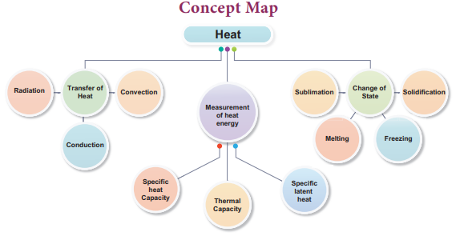
States of Matter - Effects of Heat changes
Steps
Copy and paste the link given below or type the URL in the browser. Click the option States.
You can find Atom & Molecules with four options – Neon, Argon, Oxygen and Water. You can also find Solid, Liquid and Gas options.
Click any one of the Atoms & Molecules to stimulate by holding the Heat or Cool option under the simulation chamber.
You can also try the simulation by changing the Solid, Liquid and Gas options too.
The temperature option can be changed to Fahrenheit or Celsius.
Browse in the link:
URL: https://phet.colorado.edu/sims/html/states-of-matter/latest/states-of-matter_en.html
Pictures are indicative only

After completing this lesson, students will be able to
understand the properties of sound.
know that sound requires a medium to travel.
understand that sound waves are longitudinal in nature.
explain the characteristics of sound.
gain knowledge about reflection of sound.
explain ultrasonic sound and understand the applications of ultrasonic sound.
Sound is a form of energy which produces sensation of hearing in our ears. Some sounds are pleasant to hear and some others are not. But, all sounds are produced by vibrations of substances. These vibrations travel as disturbances in a medium and reach our ears as sound. Human ear can hear only a particular range of frequency of sound that too with a certain range of energy. We are not able to hear sound clearly if it is below certain intensity. The quality of sound also differs from one another. What are the reasons for all these question mark It is because sound has several qualities. In this lesson we are going to learn about production and propagation of sound along with its various other characteristics. We will also study about ultrasonic waves and their applications in our daily life.
In your daily life you hear different sounds from different sources. But, have you ever thought how sound is produced question mark To understand the production of sound, let us do an activity.
Box item open
Take a tuning fork and strike its prongs on a rubber pad. Bring it near your ear. Do you hear any sound question mark Now touch the tuning fork with your finger. What do you feel question mark Do you feel vibrations question mark box item ends
When you strike the tuning fork on the rubber pad, it starts vibrating. These vibrations cause the nearby molecules to vibrate. Thus, vibrations produce sound.
Sound needs a material medium like air, water, steel etc., for its propagation. It cannot travel through vacuum. This can be demonstrated by the Bell Jar experiment.
An electric bell and an airtight glass jar are taken. The electric bell is suspended inside the airtight jar. The jar is connected to a vacuum pump, as shown in Figure 8.1. If the bell is made to ring, we will be able to hear the sound of the bell. Now, when the jar is evacuated with the vacuum pump, the air in the jar is pumped out gradually and the sound becomes feebler and feebler. We will not hear any sound, if the air is fully removed Bracket OPEN if the jar has vacuum bracket closed.
Figure 8.1 Bell-Jar experiment image was given below


Sound moves from the point of generation to the ear of the listener through a medium. When an object vibrates, it sets the particles of the medium around to vibrate. But, the vibrating particles do not travel all the way from the vibrating object to the ear. A particle of the medium in contact with the vibrating object is displaced from its equilibrium position. It then exerts a force on an adja cent particle. As a result of which the adjacent particle gets displaced from its position of rest. After displacing the adjacent particle the first particle comes back to its original position. This process continues in the medium till the sound reaches our ears. It is to be noted that only the disturbance created by a source of sound travels through the medium not the particles of the medium. All the particles of the medium restrict themselves with only a small to and fro motion called vibration which enables the disturbance to be carried forward. This disturbance which is carried forward in a medium is called wave.
Box item open
Take a coil or spring and move it forward and backward. What do you observe question mark You can observe that in some parts of the coil the turns will be closer and in some other parts the turns will be far apart. Sound also travels in a medium in the same manner. We will study about this now.
A coil of spring image was given below

Box item ends
From the above activity you can see that in some parts of the coil, the turns are closer together. These are regions of compressions. In between these regions of compressions we have regions where the coil turns are far apart called rarefactions. As the coil oscillates, the compressions and rarefactions move along the coil. The waves that propagates with compressions and rarefactions are called longitudinal waves. In longitudinal waves the particles of the medium move to and fro along the direction of propagation of the wave.
Figure 8.2 Sound is a wave image was given below

Sound also is a longitudinal wave. Sound can travel only when there are particles which can be compressed and rarefied. Compressions are the regions where particles are crowded together. Rarefactions are the regions of low pressure where particles are spread apart. A sound wave is an example of a longitudinal mechanical wave. Figure 8.2 represents the longitudinal nature of sound wave in the medium.
Box item open
Listen to the audio of any musical instrument like flute, nathaswaram, tabla, drums, veena etc. Tabulate the differences between the sounds produced by the various sources. Box item ends
A sound wave can be described completely by five characteristics namely amplitude, frequency, time period, wavelength and velocity or speed.
Figure 8.3 Characteristics of sound wave image was given below

The maximum displacement of the particles of the medium from their original undisturbed positions, when a wave passes through the medium is called amplitude of the wave. If the vibration of a particle has large amplitude, the sound will be loud and if the vibration has small amplitude, the sound will be soft. Amplitude is denoted as A. Its SI unit is meter Bracket OPEN m bracket closed.
The number of vibrations Bracket OPEN complete waves or cycles bracket closed produced in one second is called frequency of the wave. It is denoted as n. The SI unit of frequency is s power minus 1 Bracket OPEN or bracket closed hertz Bracket OPEN Hz bracket closed. Human ear can hear sound of frequency from 20 Hz to 20,000 Hz. Sound with frequency less than 20 Hz is called infrasonic sound. Sound with frequency greater than 20,000 Hz is called ultrasonic sound. Human beings cannot hear infrasonic and ultrasonic sounds.
The time required to produce one complete vibration Bracket OPEN wave or cycle bracket closed is called time period of the wave. It is denoted as T. The SI unit of time period is second Bracket OPEN s bracket closed. Frequency and time period are reciprocal to each other Bracket OPEN T = 1 by n bracket closed.
The minimum distance in which a sound wave repeats itself is called its wavelength. In a sound wave, the distance between the centers of two consecutive compressions or two consecutive rarefactions is also called wavelength. The wavelength is usually denoted as lamda Bracket OPEN Greek letter, lambda bracket closed. The SI unit of wavelength is metre Bracket OPEN m bracket closed.
Velocity or speed Bracket OPEN v bracket closed
The distance travelled by the sound wave in one second is called velocity of the sound. The SI unit of velocity of sound is m s power minus 1.
Sounds can be distinguished from one another in terms of the following three different factors.
1. Loudness
2. Pitch
3. Timbre Bracket OPEN or quality bracket closed
Loudness is a quantity by virtue of which a sound can be distinguished from another one, both having the same frequency. Loudness or softness of sound depends on the amplitude of the wave. If we strike a table lightly, we hear a soft sound because we produce a sound wave of less amplitude. If we hit the table hard we hear a louder sound. Loud sound can travel a longer distance as loudness is associated with higher energy. A sound wave spreads out from its source. As it move away from the source its amplitude decreases and thus its loudness decreases. Figure 8.4 shows the wave shapes of a soft and loud sound of the same frequency
Figure 8.4 Soft and loud sound image was given below

The loudness of a sound depends on the intensity of sound wave. Intensity is defined as the amount of energy crossing per unit area per unit time perpendicular to the direction of propagation of the wave.
Figure 8.5 Intensity level of sound image was given below

The intensity of sound heard at a place depends on the following five factors.
1. Amplitude of the source.
2. Distance of the observer from the source.
3. Surface area of the source.
4. Density of the medium.
5. Frequency of the source.
The unit of intensity of sound is decibel Bracket OPEN dB bracket closed. It is named in honour of the Scottish-born scientist Alexander Graham Bell who invented telephone.
Pitch is one of the characteristics of sound by which we can distinguish whether a sound is shrill or base. High pitch sound is shrill and low pitch sound is flat. Two music sounds produced by the same instrument with same amplitude, will differ when their vibrations are of different frequencies. Figure 8.6 consists of two waves representing low pitch and high pitch sounds.
Figure 8.6 Low pitch and high pitch sounds image was given below

Timbre is the characteristic which distinguishes two sounds of same loudness and pitch emitted by two different instruments. A sound of single frequency is called a tone and a collection of tones is called a note. Timbre is then a general term for the distinguishable characteristics of a tone.
The speed of sound is defined as the distance travelled by a sound wave per unit time as it propagates through an elastic medium.
Speed Bracket OPEN v bracket closed = distance by time
If the distance travelled by one wave is taken as one wavelength Bracket OPEN lamda bracket closed, and the time taken for this propagation is one time period Bracket OPEN T bracket closed, then
Speed v = one wavelength Bracket OPEN lamda bracket closed by one time period Bracket OPEN T bracket closed or V = Lamda by T
As T = 1 by n, the speed Bracket OPEN v bracket closed of sound is also written as, v = n lamda.
The speed of sound remains almost the same for all frequencies in a given medium under the same physical conditions.
Box item open
A sound wave has a frequency of 2 kHz and wavelength of 15 cm. How much time will it take to travel 1.5 km question mark
Solution:
Speed, v = n lamda
Here, n = 2 kHz = 2000 Hz
lamda = 15 cm = 0.15 m
v = 0.15 × 2000 = 300 m s power minus 1
Time Bracket OPEN t bracket closed = distance Bracket OPEN d bracket closed by velocity Bracket OPEN V bracket closed
t = 1500 divided by 300 = 5 s
The sound will take 5 s to travel a distance of 1.5 km. box item ends
Box item open
What is the wavelength of a sound wave in air at 20 degree C with a frequency of 22 MHz question mark
Solution:
lamda = v by n
Here, v = 344 m s power minus 1.
n = 22 MHz = 22 into 10 power 6 Hz
lamda = 344/22 into 10 power 6
= 15.64 into 10 power minus 6
m = 15.64 mew m
box item ends
Sound propagates through a medium at a finite speed. The sound of thunder is heard a little later than the flash of light is seen. So, we can make out that sound travels with a speed which is much less than the speed of light. The speed of sound depends on the properties of the medium through which it travels.
The speed of sound is less in gaseous medium compared to solid medium. In any medium the speed of sound increases if we increase the temperature of the medium. For example the speed of sound in air is 330 m s power minus 1 at 0 degree C and 340 m s power minus 1 at 25 degree C .The speed of sound at a particular temperature in various media is listed in Table 8.1
Table 8.1 Speed of sound in different media at 25 degree C.
State |
Medium |
Speed in ms power minus 1 |
Solids |
Aluminum |
6420 |
|
Nickel |
6040 |
|
Steel |
5960 |
|
Iron |
5950 |
|
Brass |
4700 |
|
Glass |
3980 |
Liquids |
Water Bracket OPEN Sea bracket closed |
1531 |
|
Water Bracket OPEN distilled bracket closed |
1498 |
|
Ethanol |
1207 |
|
Methanol |
1103 |
Gases |
Hydrogen |
1284 |
|
Helium |
965 |
|
Air |
340 |
|
Oxygen |
316 |
|
Sulphur dioxide |
213 |
Box item open
Sonic boom: When the speed of any object exceeds the speed of sound in air Bracket OPEN 330 m s power minus 1bracket closed it is said to be travelling at supersonic speed. Bullets, jet, aircrafts etc., can travel at supersonic speeds. When an object travels at a speed higher than that of sound in air, it produces shock waves. These shock waves carry a large amount of energy. The air pressure variations associated with this type of shock waves produce a very sharp and loud sound called the ‘sonic boom’. The shock waves produced by an aircraft have energy to shatter glass and even damage buildings. Box item ends
Box item open
Sound travels about 5 times faster in water than in air. Since the speed of sound in sea water is very large Bracket OPEN being about 1530 m s power minus 1 which is more than 5500km/h power minus 1bracket closed, two whales in the sea which are even hundreds of kilometres away can talk to each other very easily through the sea water. Box item ends
Sound bounces off a surface of solid or a liquid medium like a rubber ball that bounces off from a wall. An obstacle of large size which may be polished or rough is needed for the reflection of sound waves. The laws of reflection are:
The angle in which the sound is incident is equal to the angle in which it is reflected.
Direction of incident sound, the reflected sound and the normal are in the same plane.
Megaphones, loud speakers, horns, musical instruments such as nathaswaram, shehnai and trumpets are all designed to send sound in a particular direction without spreading it in all directions. In these instruments, a tube followed by a conical opening reflects sound successively to guide most of the sound waves from the source in the forward direction towards the audience.
Figure 8.7 Megaphone or horn image was given below

Stethoscope is a medical instrument used for listening to sounds produced in the body. In stethoscopes, these sounds reach doctor’s ears by multiple reflections that happen in the connecting tube.

Use of ear phones for long hours can cause infection in the inner parts of the ears, apart from damage to the ear drum. Your safety is in danger if you wear ear phones while crossing signals, walking on the roads and travelling. Using earphones while sleeping is all the more dangerous as current is passing in the wires. It may even lead to mental irritation. Hence, you are advised to deter from using earphones as far as possible. box item ends
When we shout or clap near a suitable reflecting surface such as a tall building or a mountain, we will hear the same sound again a little later. This sound which we hear is called an echo. The sensation of sound persists in our brain for about 0.1 s.
Hence, to hear a distinct echo the time interval between the original sound and the reflected sound must be at least 0.1 s. Let us consider the speed of sound to be 340 m s power minus 1at 25 degree C. The sound must go to the obstacle and return to the ear of the listener on reflection after 0.1 s. The total distance covered by the sound from the point of generation to the reflecting surface and back should be at least 340 m s power minus 1 into 0.1 s = 34 m.
Thus, for hearing distinct echoes, the minimum distance of the obstacle from the source of sound must be half of this distance That is, 17 m. This distance will change with the temperature of air. Echoes may be heard more than once due to successive or multiple
Figure 8.8 Echo image was given below

reflections. The roaring of thunder is due to the successive reflections of the sound from a number of reflecting surfaces, such as the clouds at different heights and the land.
Box item open
A man fires a gun and hears its echo after 5 s. The man then moves 310 m towards the hill and fires his gun again. If he hears the echo after 3 s, calculate the speed of sound.
Solution:
Distance Bracket OPEN d bracket closed = velocity Bracket OPEN v bracket closed into time Bracket OPEN t bracket closed
Distance travelled by sound when gun fires first time, 2d = v into 5 equation Bracket OPEN 1 bracket closed
Distance travelled by sound when gun fires second time, 2d minus 620 = v into 3 equation Bracket OPEN 2 bracket closed
Rewriting equation Bracket OPEN 2 bracket closed as, 2d = Bracket OPEN v into 3 bracket closed plus 620
Equating Bracket OPEN 1 bracket closed and Bracket OPEN 3 bracket closed, 5v = 3v plus 620 equation Bracket OPEN 3 bracket closed
2v = 620
Velocity of sound, v = 310 m s power minus 1
Box item ends
A sound created in a big hall will persist by repeated reflection from the walls until it is reduced to a value where it is no longer audible. The repeated reflection that results in this persistence of sound is called reverberation. In an auditorium or big hall excessive reverberation is highly undesirable. To reduce reverberation, the roof and walls of the auditorium are generally covered with sound absorbing materials like compressed fiber board, flannel cloths, rough plaster and draperies. The seat materials are also selected on the basis of their sound absorbing properties.
Figure 8.9 Reverberation of sound in an auditorium image was given below

There is a separate branch in physics called acoustics which takes these aspects of sound in to account while designing auditoria, opera halls, theaters etc.
Ultrasonic sound is the term used for sound waves with frequencies greater than 20,000Hz. These waves cannot be heard by the human ear, but the audible frequency range for other animals includes ultrasound frequencies. For example, dogs can hear ultrasonic sound. Ultrasonic whistles are used in cars to alert deer to oncoming traffic so that they will not leap across the road in front of cars.
An important use of ultrasound is in examining inner parts of the body. The ultrasonic waves allow different tissues such as organs and bones to be ‘seen’ or distinguished by bouncing of ultrasonic waves by the objects examined. The waves are detected, analysed and stored in a computer. An echogram is an image obtained by the use of reflected ultrasonic waves. It is used as a medical diagnostic tool. Ultrasonic sound is having application in marine surveying also
Box item open
Ultrasounds can be used in cleaning technology. Minute foreign particles can be removed from objects placed in a liquid bath through which ultrasound is passed.
Ultrasounds can also be used to detect cracks and flaws in metal blocks.
Ultrasonic waves are made to reflect from various parts of the heart and form the image of the heart. This technique is called ‘echo cardiography
Ultrasound may be employed to break small ‘stones’ formed in the kidney into fine grains. These grains later get flushed out with urine.
SONAR stands for Sound Navigation And Ranging. Sonar is a device that uses ultrasonic waves to measure the distance, direction and speed of underwater objects. Sonar consists of a transmitter and a detector and is installed at the bottom of boats and ships.
The transmitter produces and transmits ultrasonic waves. These waves travel through water and after striking the object on the seabed, get reflected back and are sensed by the detector. The detector converts the ultrasonic waves into electrical signals which are appropriately interpreted. The distance of the object that reflected the sound wave can be calculated by knowing the speed of sound in water and the time interval between transmission and reception of the ultrasound.
Let the time interval between transmission and reception of ultrasound signal be‘t’. Then, the speed of sound through sea water is 2dby t = v.
Box item open
A ship sends out ultrasound that returns from the seabed and is detected after 3.42 s. If the speed of ultrasound through sea water is 1531 m s power minus 1, what is the distance of the seabed from the ship question mark
Solution:
We know, distance = speed into time 2d = speed of ultrasound into time
2d = 1531 into 3.42
Therefore d = 5236 by 2 = 2618 m
Thus, the distance of the seabed from the ship is 2618 m or 2.618 km box item ends
This method is called echo-ranging. Sonar technique is used to determine the depth of the sea and to locate underwater hills, valleys, submarine, ice bergs etc.
The electrocardiogram Bracket OPEN ECG bracket closed is one of the simplest and oldest cardiac investigations available. It can provide a wealth of useful information and remains an essential part of the assessment of cardiac patients. In ECG, the sound variation produced by heart is converted into electric signals. Thus, an ECG is simply a representation of the electrical activity of the heart muscle as it changes with time. Usually it is printed on paper for easy analysis. The sum of this electrical activity, when amplified and recorded for just a few seconds is known as an ECG.
How do we hear question mark We are able to hear with the help of an extremely sensitive device called the ear. It allows us to convert pressure variations in air with audible frequencies into electric signals that travel to the brain via the auditory nerve. The auditory aspect of human ear is discussed below.
The outer ear is called ‘pinna’. It collects the sound from the surroundings. The collected sound passes through the auditory canal. At the end of the ear is eardrum or tympanic membrane. When a compression of the medium reaches the eardrum the pressure on the outside of the membrane increases and forces the eardrum inward. Similarly, the eardrum moves outward when a rarefaction reaches it. In this way the eardrum vibrates. The vibrations are amplified several times by three bones Bracket OPEN the hammer, anvil and stirrup bracket closed in the middle ear. The middle ear transmits the amplified pressure variations received from the sound wave to the inner ear. In the inner ear, the pressure variations are turned into electrical signals by the cochlea. These electrical signals are sent to the brain via the auditory nerve and the brain interrupts them as sound.
Figure 8.10 Human ear image was given below

Sound is produced due to vibration.
Sound cannot travel through vacuum.
Sound travels as a longitudinal wave through a material medium.
Sound travels as successive compressions and rarefactions in the medium.
In sound propagation, it is the energy of the sound that travels and not the particles of the medium.
The speed Bracket OPEN v bracket closed, frequency Bracket OPEN n bracket closed, and wavelength Bracket OPEN lamda bracket closed, of sound are related by the equation, v = n lamda.
The law of reflection of sound:
Bracket OPEN 1 bracket closed The angle of incidence, the angle of reflection and normal drawn at the point of incidence all lie in the same plane
Bracket OPEN 2 bracket closed The angle of incidence Bracket OPEN I bracket closed and the angle of reflection Bracket OPEN r bracket closed are always equal.
The speed of sound depends primarily on the nature and the temperature of the transmitting medium.
For hearing distinct echo sound, the time interval between the original sound and the reflected sound must be at least 0.1 s.
The persistence of hearing sound in an auditorium is the result of repeated reflections of sound and is called reverberation.
The amount of sound energy passing each second through unit area is called the intensity of sound.
The audible range of hearing for average human being is in the frequency range of 20 Hz to 20000 Hz
Sound waves with frequencies below audible range are termed as 'Infrasonics' and those above audible range are termed as 'Ultrasonics'.
The SONAR technique is used to determine the depth of the sea and to locate under water hills, valleys, submarines, icebergs, etc.
Amplitude The maximum displacement of a particle.
Compressions The region of increased pressure.
Echo The repetition of sound caused by the reflection of sound.
Frequency Number of waves produced in one second.
Longitudinal wave The wave that propagates with compressions and rarefactions.
Pitch Characteristics of sound based on frequency.
Rarefactions The region of decreased pressure.
Reverberation The repeated reflection that results in persistence of sound is called reverberation.
Timbre Bracket OPENor qualitybracket closed Characteristic which distinguishes the two sounds of same loudness and pitch emitted by two different instruments.
Time period Time taken to produce one wave.
Ultrasonic sound Sound waves with frequencies greater than 20,000Hz.
Wave The propagating disturbance that travels in a medium.
Wavelength The minimum distance in which a sound wave repeats itself

1. Which of the following vibrates when a musical note is produced by the cymbals in a orchestra question mark
A bracket closed stretched strings
b bracket closed stretched membranes c bracket closed air columns d bracket closed metal plates
2. Sound travels in air:
A bracket closed if there is no moisture in the atmosphere.
B bracket closed if particles of medium travel from one place to another.
C bracket closed if both particles as well as disturbance move from one place to another.
D bracket closed if disturbance moves.
3. A musical instrument is producing continuous note. This note cannot be heard by a person having a normal hearing range. This note must then be passing through
A bracket closed wax b bracket closed vacuum c bracket closed water d bracket closed empty vessel
4. The maximum speed of vibrations which produces audible sound will be in
A bracket closed sea water b bracket closed ground glass c bracket closed dry air d bracket closed human blood
5. The sound waves travel faster
A bracket closed in liquids b bracket closed in gases c bracket closed in solids d bracket closed in vacuum
1. Sound is a dash wave and needs a material medium to travel.
2. Number of vibrations produced in one second is dash.
3. The velocity of sound in solid is dash than the velocity of sound in air.
4. Vibration of object produces dash.
5. Loudness is proportional to the square of the dash.
6. dash is a medical instrument used for listening to sounds produced in the body.
7. The repeated reflection that results in persistence of sound is called dash.
Tunning fork |
The Point where density air is maximum |
Sound |
Maximum displacement from the equilibrium position |
Compressions |
The sound Whose frequency is greater than 20,000 Hz |
Amplitude |
Longitudinal wave |
Ultrasonics |
Production of sound |
1. Through which medium sound travels faster, iron or water question mark Give reason.
2. Name the physical quantity whose SI unit is ‘hertz’. Define.
3. What is meant by supersonic speed question mark
4. How does the sound produced by a vibrating object in a medium reach your ears question mark
5. You and your friend are on the moon. Will you be able to hear any sound produced by your friend question mark
1. Describe with diagram, how compressions and rarefactions are produced.
2. Verify experimentally the laws reflection of sound.
3. List the applications of sound.
4. Explain how does SONAR work question mark
1. The frequency of a source of sound is 600 Hz. Calculate the number of times it vibrates in a minute question mark
2. A stone is dropped from the top of a tower 750 m high into a pond of water at the base of the tower. Calculate the number of seconds for the splash to be heard question mark
Bracket OPEN Given g = 10 m s power minus 2 and speed of sound = 340 m s power minus 1bracket closed
1. Applied Physics – Rajasekaran S and others – Vikas Publishing House Pvt Ltd.
2. Fundamentals of Physics – Halliday, Resnick and Walker, Wiley India Pvt Ltd. NewDelhi.
www.britannica.com/science/ultrasonics
https://www.soundwaves.com/

ICT CORNER
Sound
Steps
Type the given URL to reach “pHET Simulation” page and download the “java” file of Sound.
Open the “java” file and plug in your headphone. Click “Audio enabled” box from right side to hear the sound waves.
Switch the tabs from the top to simulate various properties of sound waves. Watch the longitudinal sound waves from different interfaces by altering “Frequency” and “Amplitude”.
Alter “Air Density” and observe its effect on the sound waves. Use “Reset” to repeat the experiment.

Sound Simulator
URL: https://phet.colorado.edu/en/simulation/legacy/sound or Scan the QR Code.
After completing this lesson, students will be able to
Know the evolution of the universe.
understand the building blocks of the universe.
know more about solar system.
know Kepler’s laws of motion.
calculate the orbital velocity and the time-period of satellites.
know about International Space Station.
In the earlier days, before the invention of astronomical instruments, people thought that Earth is the centre of all the objects in the space. This was known as the geocentric model, held by Greek astronomer Ptolemy Bracket OPEN 2nd Century bracket closed, Indian astronomer Aryabhatta Bracket OPEN 5th Century bracket closed and many astronomers around the world. Later Polish astronomer Nicolaus Copernicus proposed the heliocentric model Bracket OPEN helios = Sun bracket closed, with Sun at the centre of the solar system. Invention of the telescope in the Netherlands, in 1608, created a revolution in astronomy. In this lesson, we will study about the building blocks of the universe, Kepler's laws of motion, time period of satellites and International Space Station Bracket OPEN ISS bracket closed.
The basic constituent of the universe is luminous matter That is, galaxies which are really the collection of billions of stars. The universe contains everything that exists including the Earth, planets, stars, space, and galaxies. This includes all matte ,energy and even time. No one knows how big the universe is. It could be infinitely large. Scientists, however, measure the size of the universe by what they can see. This is called the ‘observable universe’. The observable universe is around 93 billion light years Bracket OPEN 1 light year = the distance that light travels in one year, which is 9.4607 into 10 power 12 k m bracket closed across.
One of the interesting things about the universe is that it is currently expanding. It is growing larger and larger all the time. Not only is it growing larger, but the edge of the universe is expanding at a faster and faster rate. However, most of the universe what we think of is empty space. All the atoms together only make up around four percent of the universe. The majority of the universe consists of something scientists call dark matter and dark energy.
Box item open
Form a team of three to four students. Prepare a poster about the astronomers.
box item ends
Scientists think that the universe began with the start of a massive explosion called the Big Bang. According to Big Bang theory, all the matter in the universe was concentrated in a single point of hot dense matter. About 13.7 billion years ago, an explosion occurred and all the matter were ejected in all directions in the form of galaxies. Nearly all of the matter in the universe that we understand is made of hydrogen and helium, the simplest elements, created in the Big Bang. The rest, including the oxygen, the carbon, calcium, and iron, and silicon are formed in the cores of stars. The gravity that holds these stars together generally keeps these elements deep inside their interiors. When these stars explode, these fundamental building blocks of planetary systems are liberated throughout the universe.
Immediately after the Big Bang, clouds of gases began to compress under gravity to form the building blocks of galaxies. A galaxy is a massive collection of gas, dust, and billions of stars and their solar systems. Scientists believe that there are one hundred billion Bracket OPEN 10 power 11bracket closed galaxies in the observable universe. Galaxies are also in different shapes. Depending on their appearance, galaxies are classified as spiral, elliptical, or irregular. Galaxies occur alone or in pairs, but they are more often parts of groups, clusters, and super clusters. Galaxies in such groups often interact and even merge together.
Our Sun and all the planets in the solar system are in the Milky Way galaxy. There are many galaxies besides our Milky Way. Andromeda galaxy is our closest neighbour ring galaxy. The Milky Way galaxy is spiral in shape.
Figure 9.1 Formation of the universe image was given below
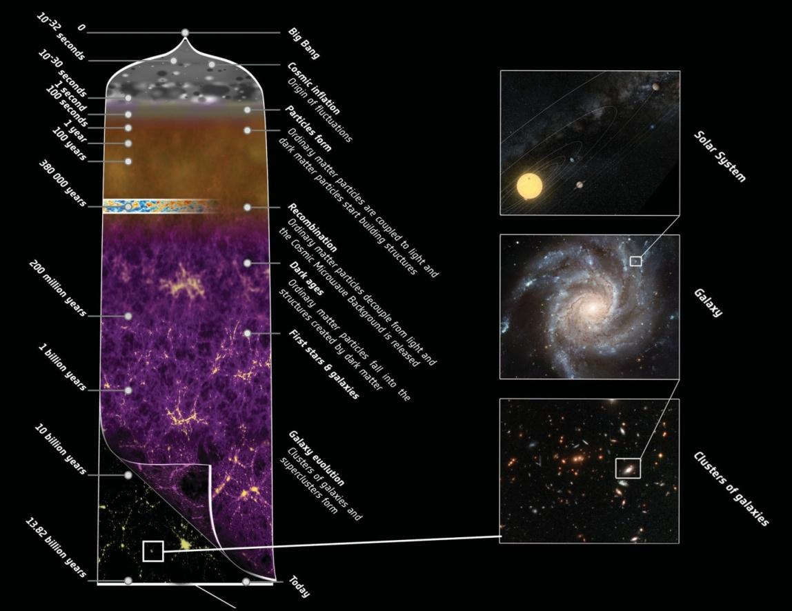
It is called Milky Way because it appears as a milky band of light in the sky. It is made up of approximately 100 billion stars and its diameter is 1,00,000 light years. Our solar system is 25,000 light years away from the centre of our galaxy. Just as the Earth goes around the Sun, the Sun goes around the centre of the galaxy and it takes 250 million years to do that.
Figure 9.2 Milky Way Galaxy image was given below
Box item open
The distance of Andromeda, our nearest galaxy is approximately 2.5 million light-years. If we move at the speed of the Earth Bracket OPEN 30 km/s bracket closed, it would take us 25 billion years to reach it! box item ends
Stars are the fundamental building blocks of galaxies. Stars were formed when the galaxies were formed during the Big Bang. Stars produce heat, light, ultraviolet rays, x-rays, and other forms of radiation. They are largely composed of gas and plasma Bracket OPEN a superheated state of matter bracket closed. Stars are built by hydrogen gases. Hydrogen atoms fuse together to form helium atoms and in the process they produce large amount of heat. In a dark night we can see nearly 3,000 stars with the naked eye. We don’t know how many stars exist. Our universe contains more than 100 billion galaxies, and each of those galaxies may have more than 100 billion stars.
Though the stars appear to be alone, most of the stars exist as pairs. The brightness of a star depends on their intensity and the distance from the Earth. Stars also appear to be in different colours depending on their temperature. Hot stars are white or blue, whereas cooler stars are orange or red in colour. They also occur in many sizes.
A group of stars forms an imaginary outline or meaningful pattern on the space. They represent an animal, mythological person or creature, a god, or an object. This group of stars is called constellations. People in different cultures and countries adopted their own sets of constellation outlines. There are 88 formally accepted constellations. Aries, Gemini, Leo, Orion, Scorpius and Cassiopeia are some of the constellations.
Figure 9.3 Constellations image was given below
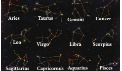
Box item open
Observe the sky keenly during night. Can you see group of stars question mark Can you figure out any shape question mark Discuss with your teachers and find out their name box item ends
Sun and the celestial bodies which revolve around it form the solar system. It consists of large number of bodies such as planets, comets, asteroids and meteors. The gravitational force of attraction between the Sun and these objects keep them revolving around it.
The Sun is a medium sized star, a very fiery spinning ball of hot gases. Three quarters of the Sun has hydrogen gas and one quarter has helium gas. It is over a million times as big as the Earth. Hydrogen atoms combine or fuse together to form helium under enormous pressure. This process, called nuclear fusion releases enormous amount of energy as light and heat. It is this energy which makes Sun shine and provide heat. Sun is situated at the centre of the solar system. The strong gravitational fields cause other solar matter, mainly planets, asteroids, comets, meteoroids and other debris, to orbit around it. Sun is believed to be more than 4.6 billion years old.
At the time of the Big Bang, hydrogen gas condensed to form huge clouds, which later concentrated and formed the numerous galaxies. Some of the hydrogen gas was left free and started floating around in our galaxy. With time, due to some changes, this free-floating hydrogen gas concentrated and paved way for the formation of the Sun and solar system. Gradually, the Sun and the solar system turned into a slowly spinning molecular cloud, composed of hydrogen and helium along with dust. The cloud started to undergo the process of compression, as a result of its own gravity. Its excessive and high-speed spinning ultimately resulted in its flattening into a giant disc.
A planet revolves around the Sun along a definite curved path which is called an orbit. It is elliptical. The time taken by a planet to complete one revolution is called its period of revolution.
Besides revolving around the Sun, a planet also rotates on its own axis like a top. The time taken by a planet to complete one rotation is called its period of rotation. The period of rotation of the Earth is 23 hours and 56 minutes and so the length of a day on Earth is taken as 24 hours. Table 9.1 tells about the length of a day on each planet.
The planets are spaced unevenly. The first four planets are relatively close together and close to the Sun. They form the inner solar system. Farther from the Sun is the outer solar system, where the planets are much more spread out. Thus the distance between Saturn and Uranus is much greater Bracket OPEN about 20 times bracket closed than the distance between the Earth and the Mars.
The four planets grouped together in the inner solar system are Mercury, Venus, Earth and Mars. They are called inner planets. They have a surface of solid rock crust and so are called terrestrial or rocky planets. Their insides, surfaces and atmospheres are formed in a similar way and form similar pattern. Our planet, Earth can be taken as a model of the other three planets.
The four large planets Jupiter, Saturn, Uranus and Neptune spread out in the outer solar system and slowly orbit the Sun are called outer planets. They are made of hydrogen, helium and other gases in huge amounts and have very dense atmosphere. They are known as gas giants and are called gaseous planets. The four outer planets Jupiter, Saturn, Uranus and Neptune have rings whereas the four inner planets do not have any rings. The rings are actually tiny pieces of rock covered with ice. Now let us learn about each planet in the solar system.
Table 9.1 Length of a day on each planet
Planets |
Length of a day |
Mercury |
58.65 days |
Venus |
243 days |
Earth |
23.93 hours |
Mars |
24.62 hours |
Jupiter |
9.92 hours |
Saturn |
10.23 hours |
Uranus |
17 hours |
Neptune |
18 hours |
Mercury: Mercury is a rocky planet nearest to the Sun. It is very hot during day but very cold at night. Mercury can be easily observed thorough telescope than naked eye since it is very faint and small. It always appears in the eastern horizon or western horizon of the sky.
Venus: Venus is a special planet from the Sun, almost the same size as the Earth. It is the hottest planet in our solar system. After our moon, it is the brightest heavenly body in our night sky. This planet spins in the opposite direction to all other planets. So, unlike Earth, the Sun rises in the west and sets in the east here. Venus can be seen clearly through naked eye. It always appears in the horizon of eastern or western sky.
The Earth: The Earth where we live is the only planet in the solar system which supports life. Due to its right distance from the Sun it has the right temperature, the presence of water and suitable atmosphere and a blanket of ozone. All these have made continuation of life possible on the Earth. From space, the Earth appears bluish green due to the reflection of light from water and land mass on its surface.
Mars: The first planet outside the orbit of the Earth is Mars. It appears slightly reddish and therefore it is also called the red planet. It has two small natural satellites Bracket OPEN Deimos and Phobos bracket closed.
Jupiter: Jupiter is called as Giant planet. It is the largest of all planets Bracket OPEN about 11 times larger and 318 times heavier than Earth bracket closed. It has 3 rings and 65 moons. Its moon Ganymede is the largest moon of our solar system.
Saturn: Known for its bright shiny rings, Saturn appears yellowish in colour. It is the second biggest and a giant gas planet in the outer solar system. At least 60 moons are present - the largest being Titan. Titan is the only moon in the solar system with clouds. Having least density of all Bracket OPEN 30 times less than Earth bracket closed, this planet is so light.
Uranus: Uranus is a cold gas giant and it can be seen only with the help of large telescope. It has a greatly tilted axis of rotation. As a result, in its orbital motion it appears to roll on its side. Due to its peculiar tilt, it has the longest summers and winters each lasting 42 years.
Neptune: It appears as Greenish star. It is the eighth planet from the Sun and is the windiest planet. Every 248 years, Pluto crosses its orbit. This situation continues for 20 years. It has 13 moons – Triton being the largest. Triton is the only moon in the solar system that moves in the opposite direction to the direction in which its planet spins.
Box item open
Watch the sky in the early morning. Do you see any planet question mark What is its name question mark Find out with the help of your teacher. Box item ends
Besides the eight planets, there are some other bodies which revolve around the Sun. They are also members of the solar system.
There is a large gap in between the orbits of Mars and Jupiter. This gap is occupied by a broad belt containing about half a million pieces of rocks that were left over when the planets were formed and now revolve around the Sun. These are called asteroids. The biggest asteroid is Ceres – 946 km across. Every 50 million years, the Earth is hit by an asteroid nearing 10 km across. Asteroids can only be seen through large telescope.
Comets are lumps of dust and ice that revolve around the Sun in highly elliptical orbits. Their period of revolution is very long. When approaching the Sun, a comet vaporizes and forms a head and tail. Some of the biggest comets ever seen had tails 160 million Bracket OPEN 16 crores bracket closed km long. This is more than the distance between the Earth and the Sun. Many comets are known to appear periodically. One such comet is Halley’s Comet, which appears after nearly every 76 years. It was last seen in 1986. It will next be seen in 2062.
Meteors are small piece of rocks scattered throughout the solar system. Traveling with high speed, these small pieces come closer to the Earth’s atmosphere and are attracted by the gravitational force of Earth. Most of them are burnt up by the heat generated due to friction in the Earth’s atmosphere. They are called meteors. Some of the bigger meteors may not be burnt completely and they fall on the surface of Earth. These are called meteorites.
Figure 9.4 Meteors and Meteorites image was given below
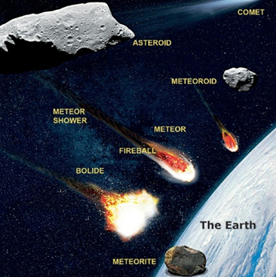
A body moving in an orbit around a planet is called satellite. In order to distinguish them from the man made satellites Bracket OPENcalled as artificial satellitesbracket closed, they are called as natural satellites or moons. Satellite of the Earth is called Moon Bracket OPENother satellites are written as moonbracket closed. We can see the Earth’s satellite Moon, because it reflects the light of the Sun. Satellite moves around the planets due to gravity, and the centripetal force. Among the planets in the solar system all the planets have moons except Mercury and Venus.
The Sun travelling at a speed of 250 km per second Bracket OPEN 9 lakh km/h bracket closed takes about 225 million years to complete one revolution around the Milky Way. This period is called a cosmic year. Box item ends
We saw that there are natural satellites moving around the planets. There will be gravitational force between the planet and satellites. Nowadays many artificial satellites are launched into the Earth’s orbit. The first artificial satellite Sputnik was launched in 1956. India launched its first satellite Aryabhatta on April 19, 1975. Artificial satellites are made to revolve in an orbit at a height of few hundred kilometres. At this altitude, the friction due to air is negligible. The satellite is carried by a rocket to the desired height and released horizontally with a high velocity, so that it remains moving in a nearly circular orbit.
The horizontal velocity that has to be imparted to a satellite at the determined height so that it makes a circular orbit around the planet is called orbital velocity
Figure 9.5 Orbital velocity image was given below
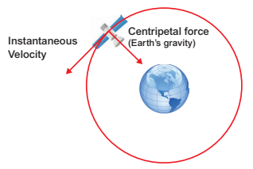
The orbital velocity of the satellite depends on its altitude above Earth. Nearer the object to the Earth, the faster is the required orbital velocity. At an altitude of 200 kilometres, the required orbital velocity is little more than 27,400 kph. That orbital speed and distance permit the satellite to make one revolution in 24 hours. Since Earth also rotates once in 24 hours, a satellite stays in a fixed position relative to a point on Earth’s surface. Because the satellite stays over the same spot all the time, this kind of orbit is called ‘geostationary’. Orbital velocity can be calculated using the following formula.
V is equal to square root of GM by R plus h where,
G = Gravitational constant Bracket OPEN 6.673 into 10 power minus 11 Nm power 2 kg power minus 2bracket closed
M = Mass of the Earth Bracket OPEN 5.972 into 10 power 24 k g bracket closed
R = Radius of the Earth Bracket OPEN 6371 k m bracket closed
h = Height of the satellite from the surface of the Earth.
Box item open
Can you calculate the orbital velocity of a satellite orbiting at an altitude of 500 k m question mark
Data: G = 6.673 into 10 power minus 11 SI units;
M = 5.972 into 10 power 24 kg; R = 6371000 m;
h = 500000 m
Solution:
v = square root of 6.673 into 10 power minus 11 into 115.972 into 10 power 24 by 6371000 plus 500000
Ans: v = 7613 m s power minus 1 or 7.613 k m s power minus 1 box item ends
Box item open
Microgravity is the condition in which people or objects appear to be weightless. The effects of microgravity can be seen when astronauts and objects float in space. Micro- means very small, so microgravity refers to the condition where gravity ‘seems’ to be very small. Box item ends
Time taken by a satellite to complete one revolution round the Earth is called time period
Time period, T = Distance covered by orbital velocity T = 2 pi r by v
Substituting the value of v, we get
T = 2 pi Bracket OPEN R plus h bracket closed by square root of GM by R plus H
Box item open
At an orbital height of 500 km, find the orbital period of the satellite.
Solution:
h = 500 into 10 power 3 m, R = 6371 into 10 power 3 m,
v = 7616 into 10 power 3 k m s power minus 1
T = 2 pi Bracket OPENR plus h bracket closed by v =2 into 22 by 7 into 6371 plus 500 by 7616
= 5.6677 into 10 power 3 s = 5667 s.
This is T = 95 min Bracket OPEN approximately bracket closed box item ends
Box item open
All stars appear to us as moving from east to west, where as there is one star which appears to us stationary in its position. It has been named as Pole star. The pole star appears to us as fixed in space at the same place in the sky in the north direction because it lies on the axis of rotation of the Earth which itself is fixed and does not change its position in space. It may be noted that the pole star is not visible from the southern hemisphere Box item ends
Box item open
Prepare a list of Indian satellites from Aryabhatta to the latest along with their purposes. Box item ends
In the early 1600s, Johannes Kepler proposed three laws of planetary motion. Kepler was able to summarize the carefully collected data of his mentor, Tycho Brahe with three statements that described the motion of planets in a Sun-centered solar system. Kepler’s efforts to explain the underlying reasons for such motions are no longer accepted; nonetheless, the actual laws themselves are still considered an accurate description of the motion of any planet and any satellite. Kepler’s three laws of planetary motion can be described as below.
All planets revolve around the Sun in elliptical orbits with Sun at one of their foci.
Figure 9.6 The Law of Ellipses image was given below
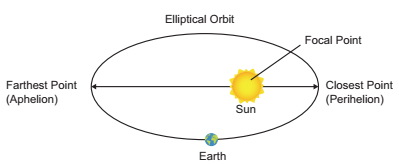
The line connecting the planet and the Sun covers equal areas in equal intervals of time.
Figure 9.7 The Law of Equal Area image was given below
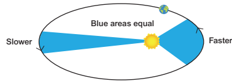
The square of time period of revolution of a planet around the Sun is directly proportional to the cube of the distance between sun and the planets.
Figure 9.8 The Law of Harmonicsimage was given below
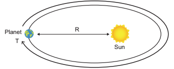
ISS is a large spacecraft which can house astronauts. It goes around in low Earth orbit at approximately 400 km distance. It is also a science laboratory. Its very first part was placed in orbit in 1998 and its core construction was completed by 2011. It is the largest man-made object in space which can also be seen from the Earth through the naked eye. The first human crew went to the ISS in 2000. Ever since that, it has never been unoccupied by humans. At any given instant, at least six humans will be present
Figure 9.9 International Space Station image was given below
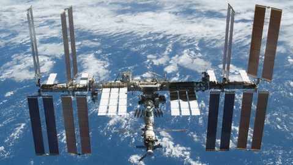
in the ISS. According to the current plan, ISS will be operated until 2024, with a possible extension until 2028. After that, it could be de orbited, or recycled for future space stations.
According to NASA, the following are some of the ways in which the ISS is already benefitting us or will benefit us in the future.
Using the technology developed for the ISS, areas having water scarcity can gain access to advanced water filtration and purification systems. The water recovery system Bracket OPEN WRS bracket closed and the oxygen generation system Bracket OPEN OGS bracket closed developed for the ISS have already saved a village in Iraq from being deserted due to lack of clean water.
The Eye Tracking Device, built for a microgravity experiment, has proved ideal to be used in many laser surgeries. Also, eye tracking technology is helping disabled people with limited movement and speech. For example, a kid who has severe disability in body movements can use his eye-movements alone and do routine tasks and lead an independent life.
Robotic arms developed for research in the ISS are providing significant help to the surgeons in removing inoperable tumours Bracket OPEN Example, brain tumours bracket closed and taking biopsies with great accuracies. Its inventors say that the robot could take biopsies with remarkable precision and consistency.
Apart from the above-mentioned applications, there are many other ways in which the researches that take place in the ISS are helpful. They are: development of improved vaccines, breast cancer detection and treatment, ultrasound machines for remote regions etc,
As great as the ISS’ scientific achievements are, no less in accomplishment is the international co-operation which resulted in the construction of the ISS. An international collaboration of five different space agencies of 16 countries provides maintains and operates the ISS. They are: NASA Bracket OPEN USA bracket closed, Roskosmos Bracket OPEN Russia bracket closed, ESA Bracket OPEN Europe bracket closed JAXA Bracket OPEN Japan bracket closed and CSA Bracket OPEN Cananda bracket closed. Belgium, Brazil, Denmark, France, Germany, Italy, Holland, Norway, Spain, Sweden, Switzerland and the UK are also part of the consortium.
The basic constituent of universe is galaxies which are really the collection of billions of stars.
Scientists think that the universe began with the start of a massive explosion called the Big Bang
Depending on their appearance, galaxies are classified as spiral, elliptical, or irregular.
Our Sun and all the planets in the solar system are in the Milky Way galaxy.
A group of stars forms an imaginary outline or meaningful pattern on the space, called constellations.
The Sun and celestial bodies which revolve around it form the solar system.
Due to its right distance from the Sun, Earth has the right temperature, the presence of water and suitable atmosphere and a blanket of ozone.
Millions of pieces of rocks that were left over when the planets were formed and now revolve around the Sun are called asteroids.
A body moving in an orbit around a planet is called satellite.
The ISS is intended to act as a scientific laboratory and observatory. Its main purpose is to provide an international lab for conducting experiments in space
Asteroid Small, rocky object orbiting the Sun.
Comet A chunk of dirty, dark ice, mixed with dust which revolves around the Sun.
Constellation A group of stars that can be seen as a pattern from Earth.
Galaxy A group of stars, nebulae, star clusters, globular clusters and other matter. Meteor A meteoroid that travels through the Earth’s atmosphere.
Meteorite A meteor that hits the Earth’s surface.
Milky Way A broad band of light that looks like a trail of spilled milk in the night sky.
Moon Any natural object which orbits a planet.
Planet A relatively large object that revolves around a star, but which is not itself a star.
Satellite Any object in outer space that orbits another object.
Space station A large, manned satellite in space used as a base for space exploration.
Star A ball of constantly exploding gases, giving off light and heat.
Universe Everything in space, including the galaxies and stars, the Milky Way and the Solar System.
1. Who proposed the heliocentric model of the universe question mark
Bracket OPEN a bracket closed Tycho Brahe Bracket OPEN b bracket closed Nicolaus Copernicus Bracket OPEN c bracket closed Ptolemy Bracket OPEN d bracket closed Archimedes
2. Which of the following is not a part of outer solar system question mark
Bracket OPEN a bracket closed Mercury Bracket OPEN b bracket closed Saturn Bracket OPEN c bracket closed Uranus Bracket OPEN d bracket closed Neptune
3. Ceres is a dash
Bracket OPEN a bracket closed Meteor Bracket OPEN b bracket closed Star Bracket OPEN c bracket closed Planet Bracket OPEN d bracket closed Astroid
4. The period of revolution of planet A around the Sun is 8 times that of planet B. How many times is the distance of planet A as great as that of planet B question mark
Bracket OPEN a bracket closed 4 Bracket OPEN b bracket closed 5 Bracket OPEN c bracket closed 2 Bracket OPEN d bracket closed 3
5. The Big Bang occurred dash years ago.
Bracket OPEN a bracket closed 13.7 billion Bracket OPEN b bracket closed 15 million Bracket OPEN c bracket closed 15 billion Bracket OPEN d bracket closed 20 million
1. The speed of Sun in km/s is dash.
2. The rotational period of the Sun near its poles is dash.
3. India’s first satellite is dash.
4. The third law of Kepler is also known as the Law of dash.
5. The number of planets in our Solar System is dash.
1. ISS is a proof for international cooperation.
2. Halley’s comet appears after nearly 67 hours.
3. Satellites nearer to the Earth should have lesser orbital velocity.
4. Mars is called the red planet.
1. What is solar system question mark
2. Define orbital velocity.
3. Define time period of a satellite.
4. What is a satellite question mark What are the two types of satellites question mark
5. Write a note on the inner planets.
6. Write about comets.
7. State Kepler’s laws.
8. What factors have made life on Earth possible question mark
1. Give an account of all the planets in the solar system.
2. Discuss the benefits of ISS.
3. Write a note on orbital velocity.
1. Why do some stars appear blue and some red question mark
2. How is a satellite maintained in nearly circular orbit question mark
3. Why are some satellites called geostationary question mark
4. A man weighing 60 kg in the Earth will weigh 1680 kg in the Sun. Why question mark
1. Calculate the speed with which a satellite moves if it is at a height of 36,000 km from the Earth’s surface and has an orbital period of 24 hr Bracket OPEN Take R = 6370 k m bracket closed [Hint: Convert hr into seconds before doing calculation]
2. At an orbital height of 400 km, find the orbital period of the satellite.
1. Big Bang - By Simon Singh.
2. What are the stars question mark - By G. Srinivas.
3. An introduction to Astronomy - By Baidyanath Basu.
https://www.space.com/52-the-expanding
universe-from-the-big-bang-to-today.html
https://phys.org/news/2016-06-star-black-hole.html
Universe image was given below

ICT CORNER Building Blocks of Universe
Steps
Type the given URL to reach interactive universe and allow the browser to play “JAVA Script”, if asked.
Click and drag the “Scale Pointer” present in the right side of the page or scroll the mouse to zoom into the universe.
Click and drag the mouse pointer to North-South Bracket OPEN up-down bracket closed axis to observe the fabricating structure of the galaxy.
Zoom in on to extreme close up to view the solar system and to view the name of the objects present in the galaxy
 Interactive Universe’s
Interactive Universe’s
URL: http://stars.chromeexperiments.com/ or Scan the QR Code.

After completing this lesson, students will be able to
classify substances as elements, compounds and mixtures based on their chemical composition.
group mixtures as homogeneous and heterogeneous.
identify suitable method to separate components of a mixture.
classify solutions based on the size of the solute particles and compare the true solutions, colloids and suspensions based on their properties.
differentiate colloids based on the nature of dispersed phase and dispersion medium.
compare o/w and w/o emulsions.
discuss some important examples and uses of colloids.
We use the term matter to cover all substances and materials from which the universe is composed. Matter is everything around us. The air we breathe, the food we eat, the pen we write, clouds, stones, plants, animals, a drop of water or a grain of sand everything is matter. Samples of any of these materials have two properties in common. They have mass and they occupy space.
Figure 10.1 Examples to show Matter has mass image was given below


Figure 10.2 Examples to show Matter occupies space image was given below


Thus, we say that matter is anything that has mass and occupies space.

In class 8, You have studied the classification of matter on the basis of their physical states. Now let us see how we can classify matter on the basis of chemical composition. Broadly speaking, it has been classified into pure substances and mixtures. From the point of view of chemistry, pure substances are those which contain only one kind of particles whereas impure substances Bracket OPEN mixtures bracket closed contain more than one kind of particles.
The flow chart given below will help us to understand the chemical classification of matter in detail.
Box item OPEN
Not all things that we see or feel are matter. For example, sunlight, sound, force and energy neither occupy space nor have any mass. They are not matter.box item ends

Box item open
1. Is air a pure substance or Mixture question mark Justify
2. You must have seen brass statues in museums and places of worship. Brass is an alloy made up of approx. 30 percent zinc and 70 percent copper. Is Brass a pure substance or a mixture or compound question mark box item ends
Most of you may be interested in music, and some of you may know how it is composed. Music is the combination of a few basic musical notes That is Saaa, Reee, Gaaa Thus, the building blocks of music are the musical notes
Saaa, Reee, Gaaa, Maaa, Paaa. |
Building blocks of music |
Likewise, all substances on earth are made up of certain simple substances called elements. Plants, cats, apples, rocks, cars and even our bodies contain elements. Thus, elements are the building block of all materials.
Box item open
In the modern periodic table there are 118 elements known to us, 92 of which are naturally occurring while the remaining 26 have been artificially created. But from these 118 elements, crores of compounds are formed-some naturally occurring and some artificial. Isn’t that amazing question mark box item ends
H, He, Li……. 118 elements |
Building block of all materials |
Robert boyle used the name element for any substance that cannot be broken down further, into a simpler substance. This definition can be extended to include the fact that each element is made up of only one kind of atom. For example, aluminium is an element which is made up of only aluminium atoms. It is not possible to obtain a simpler substance chemically from the aluminium atoms. You can only make more complicated substances from it, such as aluminium oxide, aluminium nitrate and aluminium sulphate.
Box item open
Atom: The smallest unit of an element which may or may not have an independent existence, but always takes part in a chemical reaction is called atom.
Molecules: The smallest unit of a pure substance, which always exists independently and can retain physical and chemical properties of that substance is called a molecule.
Examples: Hydrogen molecule consists of two hydrogen atoms Bracket OPEN H2 bracket closed
Water molecule consists of two hydrogen atoms Bracket OPEN H2 bracket closed and one oxygen atom Bracket OPEN O bracket closed. box item ends
All elements can be classified according to various properties. A simple way to do this is to classify them as metals, non metals and metalloids.

When two or more elements combine chemically to form a new substance, the new substance is called a compound. For example, cane sugar is made up of three elements carbon, hydrogen and oxygen. The chemical formula of cane sugar is C12H22O11. A compound has properties that are different from those of the elements from which it is made. Common salt, also known as sodium chloride, is a compound. It is added to give taste to our food. It is a compound made up of a metal, sodium and a non-metal, chlorine.
Box item open
Make models of the molecules of compounds by using match sticks and clay balls as shown below,


Box item ends
Box item open
Compounds of phosphorous, nitrogen and potassium are used in fertilizers. Silicon compounds are of immense importance in the computer industry. Compounds of fluorine are used in our toothpastes as they strengthen our teeth. Box item ends
Table 10.1 Difference between elements and compounds.
Element |
Compound |
Made up of only one kind of atom. |
Made up of more than one kind of atom. |
The smallest particle that retains all its properties is an atom. |
The smallest particle that retains all its properties is the molecule. |
Cannot be broken down into simpler substances. |
Can be broken down into elements by chemical methods. |
A mixture is an impure substance. It contains two or more kinds of elements or compounds or both physically mixed together in any ratio.For example, tap water is a mixture of water and some dissolved salts. Lemonade is a mixture of lemon juice, sugar and water. Air is a mixture of nitrogen, oxygen, carbon dioxide, water vapour and other gases. Soil is a mixture of clay, sand and various salts. Milk, ice cream, rock salt, tea, smoke, wood, sea water, blood, tooth paste and paint are some other examples of mixtures. Alloys are mixtures of metals.
Figure 10.3 Mixtures image was given below

Image was given below

LPG – Liquefied Petroleum Gas
It is highly inflammable hydrocarbon gas. It contains mixture of butane and propane gases. LPG, liquefied through pressurisation, is used for heating, cooking, auto fuel excetra . box item ends
There are differences between compounds and mixtures. This can be shown by the following activity
Box item open
Take some powdered iron filings and mix it with sulphur.
1. Divide the mixture into two equal halves.
2. Keep the first half of the mixture as it is, but heat the second half of the mixture.
3. On heating you will get a black brittle compound.
Image of mixture of iron and sulphur and iron sulphide compound was given below

Box item ends
The black compound is Iron Bracket OPEN 2 bracket closed sulphide.
Iron plus sulphur on heating gives Iron sulphide
The Iron sulphide formed has totally different properties to the mixture of iron and sulphur as tabulated below:
Substance |
Appearance |
Effect of magnet |
Iron Bracket OPEN element bracket closed |
Dark grey powder |
Attracted to it |
Sulphur Bracket OPEN element bracket closed |
Yellow powder |
None |
Iron plus Sulphur Bracket OPEN Mixture bracket closed |
Dirty yellow powder |
Iron powder attracted to it |
Iron sulphide Bracket OPEN compound bracket closed |
Black solid |
No effect |
From the above experiment, we can summarise the major differences between mixtures and compounds
Box item open
Blood is not a pure substance. It is a mixture of various components such as platelets, red and white blood corpuscles and plasma. box item ends
Table 10.2 Difference between mixtures and compounds.
Mixture |
Compound |
It contains two or more substances |
It is a single substance |
The constituent may be present in any proportion. |
The constituents are present in definite proportions. |
They show the properties of their constituents. |
They do not show the properties of the constituent elements. |
The components may be separated easily by physical methods. |
The constituents can only be separated by one or more chemical reactions. |
Box item
Identify whether the given substance is mixture or compound and justify your answer.1.Sand and water 2.Sand and iron filings 3. Concrete 4. Water and oil 5. Salad 6. Water 7. Carbon dioxide 8. Cement 9. Alcohol.
box item ends
Most of the substances that we use in our daily life are mixtures. In some we will be able to see the components with our naked eyes but in most others the different components are not visible. Based on this mixture can be classified as below

A mixture in which the components cannot be seen separately is called a homogeneous mixture. It has a uniform composition and every part of the mixture has the same properties. Tap water, milk, air, ice cream, sugar syrup, ink, steel, bronze and salt solution Bracket OPEN Figure 10.4 a bracket closed are homogeneous mixtures.
A mixture in which the components can be seen separately is called a heterogeneous mixture. It does not have a uniform composition and properties. Soil, a mixture of iodine and common salt, a mixture of sugar and sand, a mixture of oil and water, a mixture of sulphur and iron filings and a mixture of milk and cereals Bracket OPEN Figure 10.4 b bracket closed are heterogeneous mixture.
Figure 10.4 Bracket OPEN a bracket closed Homogeneous and Bracket OPEN b bracket closed Heterogeneous mixture image was given below


Figure 10.4 Bracket OPEN a bracket closed Homogeneous and Bracket OPEN b bracket closed Heterogeneous mixture
Many mixtures contain useful substances mixed with unwanted material. In order to obtain these useful substances, chemists often have to separate them from the impurities. The choice of a particular method to separate components of a mixture will depend on the properties of the components of the mixture as well as their physical states Bracket OPEN as shown in Table 10.3 bracket closed.
Certain solid substances when heated change directly from solid to gaseous state without attaining liquid state. The vapours when cooled give back the solid substance. This process is known as sublimation. Examples: Iodine, camphor, ammonium chloride etc.,
Figure 10.5 Sublimation image was given below

The powdered mixture of Ammonium chloride and sand is taken in a china dish and covered with a perforated asbestos sheet. An inverted funnel is placed over the asbestos sheet as shown in Figure 10.5. The open end of the stem of the funnel is closed using cotton wool and the china dish is heated. The pure vapours of the volatile solid pass through the holes in the asbestos sheet and condense on the inner sides of the funnel. The non-volatile impurities remain in the china dish.
BOX ITEM OPEN
The air freshners are used in toilets. The solid slowly sublimes and releases the pleasant smell in the toilet over a certain period of time. Moth balls, made of naphthalene are used to drive away moths and some other insects. These also sublime over time. Camphor, is a substance used in Indian household. It sublimes to give a pleasant smell and is sometimes used as a freshner. box item ends
Table 10.3 Methods of separating substances from mixtures
Type of mixtures
|
Mixtures |
Methods of separation |
Heterogeneous |
Solid and solid |
Handpicking, sieving, winnowing, magnetic separation, sublimation. |
Insoluble solid and liquid |
Sedimentation and decantation,loading, filtration, centrifugation |
|
Two immiscible liquids |
Decantation, solvent extraction |
|
Homogeneous |
Soluble solid and liquid |
Evaporation, distillation, crystallisation |
Two miscible liquids |
Fractional distillation |
|
Solution of two or more solids in a liquid |
Chromatography |
Centrifugation is the process by which fine insoluble solids from a solid- liquid mixture can be separated in a machine called a centrifuge. A centrifuge rotates at a very high speed. On being rotated by centrifugal force, the heavier solid particles move down and the lighter liquid remains at the top.
Figure 10.6 Centrifugation image was given below

In milk diaries, centrifugation is used to separate cream from milk. In washing machines, this principle is used to squeeze out water from wet clothes. Centrifugation is also used in pathological laboratories to separate blood cells from a blood sample.
Two immiscible liquids can be separated by solvent extraction method. This method works on the principle of difference in solubility of two immiscible liquids in a suitable solvent. For example, mixture of water and oil can be separated using a separating funnel. Solvent extraction method is used in pharmaceutical and petroleum industries.
Figure 10.7 Solvent extraction image was given below

Box item open
Solvent extraction is an old practice done for years. It is the main process in perfume
development and it is also used to obtain dyes from various sources. box item ends
Distillation is a process of obtaining pure liquid from a solution. It is actually a combination of evaporation and condensation That is, Distillation = Evaporation plus Condensation
In this method, a solution is heated in order to vapourise the liquid. The vapours of the liquid on cooling, condense into pure liquid. For example, sea water in many countries is converted into drinking water by distillation. This method is also used to separate two liquids whose boiling points differ more than 25 K
A distillation flask is fixed with a water condenser. A thermometer is introduced into the distillation flask through an one-holed stopper. The bulb of the thermometer should be slightly below the side tube.
Figure 10.8 Solvent extraction image was given below

The brackish water Bracket OPEN sea water bracket closed to be distilled is taken in the distillation flask and heated for boiling. The pure water vapour passes through the inner tube of the condenser. The vapours on cooling condense into pure water Bracket OPEN distillate bracket closed and are collected in a receiver.The salt are left behind in the flask as a residue.
To separate two or more miscible liquids which do not differ much in their boiling points Bracket OPEN difference in boiling points is less than 25 K bracket closed fractional distillation is employed.
Fractional distillation is used in petrochemical industry to obtain different fractions of petroleum, to separate the different gases from air, to distill alcohols etc
Figure 10.9 Fractional distillation image was given below

Before we discuss the technique we will take a look at the difference between the two important terms: Absorption and Adsorption
Adsorption is the process in which the particles of a substance is concentrated only at the surface of another substance.
Absorption is the process in which the substance is uniformly distributed throughout the bulk of another substance.
For example, when a chalk stick is dipped in ink, the surface retains the colour of the ink due to adsorption of coloured molecules while the solvent of the ink goes deeper into the stick due to absorption. Hence, on breaking the chalk stick, it is found to be white from inside.
Chromatography is also a separation technique. It is used to separate different components of a mixture based on their different solubilities in the same solvent. There are several types of chromatography based on the above basic principles. The simplest type is paper chromatography.
Figure 10.10 Paper chromatography image was given below


This method is used to separate the different coloured dyes in a sample of ink. A spot of the ink Bracket OPEN Example black ink bracket closed is put on to a piece of chromatography paper. This paper is then set in a suitable solvent as shown in figure 10.10. The black ink separates into its constituent dyes. As the solvent moves up the paper, the dyes are carried with it and begin to separate. They separate because they have different solubility in the solvent and are adsorbed to different extents by the chromatography paper. The chromatogram shows that the black ink contains three dyes.
A solution is a homogeneous mixture of two or more substances. In a solution, the component present in lesser amount by weight is called solute and the component present in larger amount by weight is called solvent.
In short, a solution can be represented as follows:
solute plus solvent gives solution
Example: salt plus water gives salt solution
Based on the particle size of the solute, the solutions are divided into three types. Let us study them through an activity.
BOX ITEM OPEN
Take bottles containing sugar, starch and wheat flour. Add one tea spoon full of each one to a glass of water and stir well. Leave it aside for about ten minutes. What do you observe question mark Image was given below

box item ends
We can see that in the case of sugar we get a clear solution and the particles never settle down. This mixture is called as true solution. In the case of starch and water we get a cloudy mixture. This mixture is called as colloidial solution In the case of wheat flour mixed with water we get a very turbid mixture and fine particles slowly settle down at the bottom after some time. This mixture is called as suspension.
Box item open
What are the differences among True solutions, colloids and suspensions question mark The major difference is the particle size of the solute. In fact interconversions of these mixtures are possible by varying the particle sizes by certain chemical and physical methods
Different Solutions image was given below

Box item ends

A colloidal solution is a heterogeneous system consisting of the dispersed phase and the dispersion medium. Dispersed phase or the dispersion medium can be a solid, or liquid or gas. There are eight different combinations possible Bracket OPEN Table 10.4 bracket closed. The combination of gas in gas is not possible because gas in gas always forms a true solution.
When colloidal solution are viewed under powerful microscope, it can be seen that colloidal particles are moving constantly and rapidly in zig-zag directions. The Brownian movement of colloidal particles is due to the unbalanced bombardment of the particles by the molecules of dispersion medium.
Figure 10.11 Brownian movement Image was given below

Tyndall Bracket OPEN 1869 bracket closed observed that when a strong beam of light is focused on a colloidal solution the path of the beam becomes visible. This phenomenon is known as Tyndall effect and the illuminated path is called Tyndall cone. This phenomenon is not observed in case of true solution
Box item open
The beam of light coming from headlights of vehicles is due to Tyndall effect. Blue colour of sky is also due to Tyndall effect. Box item ends
Table 10.4 Classification of colloids based on physical state of dispersed phase and dispersion medium
Serial number |
Dispersed Phase Bracket OPEN Solute bracket closed |
Dispersion Medium Bracket OPEN Solvent bracket closed |
Name |
Examples |
Serial number 1 |
Solid |
Solid |
Solid sol |
Alloys, gems, coloured glass |
Serial number 2 |
Solid |
Liquid |
Sol |
Paints, inks, egg white |
Serial number 3 |
Solid |
Gas |
Aerosol |
Smoke, dust |
Serial number 4 |
Liquid |
Solid |
Gel |
Curd, Cheese, jelly |
Serial number 5 |
Liquid |
Liquid |
Emulsion |
Milk, butter, oil in water |
Serial number 6 |
Liquid |
Gas |
Aerosol |
Mist, fog, clouds |
Serial number 7 |
Gas |
Solid |
Solid foam |
Cake, bread |
Serial number 8 |
Gas |
Liquid |
Foam |
Soap lather, Aerated water |
Differences between the types of solutions.
Property |
Suspension |
Colloidal sol. |
Solution |
Particle Size |
is greater than 100 nm |
1 to 100 nm |
Is less than 1nm |
Filtration separation |
Possible |
Impossible |
Impossible |
Settling of particles |
Settle on their own |
Settle on centrifugation |
Do not Settle |
Appearance |
Opaque |
Translucent Bracket OPEN or bracket closed Semi transparent |
Transparent |
Scatterting of light |
Does not penetrate |
Scatters |
Does not Scatter |
Diffusion of particles |
Do not diffuse |
Diffuse Slowly |
Diffuse rapidly |
Brownian movement |
May show |
Shows |
Does not Show |
Nature |
Heterogeneous |
Heterogeneous |
Homogeneous |
Figure 10.12 Tyndall effect image was given below

Box item open
1. Why whole milk is white question mark
2. Why ocean is blue question mark
3. Why sun looks yellow when it is really not question mark
Box item ends
An emulsion is a colloid of two or more immiscible liquids where one liquid is dispersed in another liquid. This means one type of liquid particles get scattered in another liquid. In other words, an emulsion is a special type of mixture made by combining two liquids that normally don’t mix. The word emulsion comes from the Latin word meaning “to milk” Bracket OPEN milk is one example of an emulsion of fat and water bracket closed. The process of turning a liquid mixture into an emulsion is called emulsification. Milk, butter, cream, egg yolk, paints, cough syrups, facial creams, pesticides etc. are some common examples of emulsions.
The two liquids mixed can form different types of emulsions. For example, oil and water can form an oil in water emulsion Bracket OPEN O/W-Example cream bracket closed, where the oil droplets are dispersed in water, or they can form a water in oil emulsion Bracket OPEN W/O-Example butter bracket closed, with water dispersed in oil.
Figure 10.13 Emulsions image was given below

Emulsions find wide applications in food processing, pharmaceuticals, metallurgy and many other important industries.
Box item open

Have you seen colourful patches on a wet road question mark When oil drops in water on road, it floats over water and forms a colourful film. Find out why. Box item ends
Depending upon the chemical composition, matter is classified into elements, compounds and mixtures
Elements and compounds are considered to be pure substances as they contain only one kind of particles whereas mixtures contain more than one type of particles and they are considered as impure substances
In a homogenous mixture Bracket OPEN true solution bracket closed the components are uniformly mixed and it will have single phase
A heterogeneous mixture are not mixed thoroughly or uniformly and it will have more than single phase
Based on the size of the solute particles heterogeneous mixtures can be classified as colloidal solutions and suspensions
Elements A substance composed of atoms having an identical number of protons in each nucleus.
Compounds A pure, macroscopically homogeneous substance consisting of atoms or ions of two or more different elements in definite proportions.
Mixtures A composition of two or more substances that are not chemically combined with each other and are capable of being separated.
Solution Homogeneous mixture composed of two or more substances.
Colloid A system in which finely divided particles, which are approximately 1 to 100 nm in size, are dispersed within a continuous medium in a manner that prevents them from being filtered easily or settled rapidly.
Suspension A suspension is a heterogeneous mixture in which solute-like particles settle out of a solvent-like phase sometime after their introduction
Emulsion A colloid in which both phases are liquids: an oil-in-water emulsion. Absorption Process by which atoms, molecules, or ions enter a bulk phase Bracket OPEN liquid, gas, solid bracket closed
Adsorption Adhesion of atoms, ions or molecules from a gas, liquid or dissolved solid to a surface
Centrifugation Sedimentation of particles under the influence of the centrifugal force and it is used for separation of superfine suspensions.

1. The separation of denser particles from lighter particles done by rotation at high speed is called dash.
A bracket closed Filtration
b bracket closed sedimentation
C bracket closed decantation
d bracket closed centrifugation
2. Among the following dash is a mixture
A bracket closed Common Salt b bracket closed Juice
C bracket closed Carbon dioxide d bracket closed Pure Silver
3. When we mix a drop of ink in water we get a dash.
A bracket closed Heterogeneous Mixture
B bracket closed Compound
C bracket closed Homogeneous Mixture
d bracket closed Suspension
4. dash is essential to perform separation by solvent extraction method.
A bracket closed Separating funnel
b bracket closed filter paper
c bracket closed centrifuge machine
d bracket closed sieve
5. dash has the same properties throughout the sample
A bracket closed Pure substance
b bracket closed Mixture
c bracket closed Colloid
d bracket closed Suspension
1. Oil and water are immiscible with each other.
2. A compound cannot be broken into simpler substances chemically.
3. Liquid hyphan liquid colloids are called gel.
4. Buttermilk is an example of heterogeneous mixture.
5. Aspirin is composed of 60 percent Carbon, 4.5 percent Hydrogen and 35.5 percent Oxygen by mass. Aspirin is a mixture.
Element |
Settles down on standing |
Compound |
Impure substance |
Colloid |
Made up of molecules |
Suspension |
Pure substance |
Mixture |
Made up of atoms |
Roman 4. Fill in the blanks.
1. A dash mixture has no distinguishable boundary between its components.
2. An example of a substance that sublimes is dash.
3. Alcohol can be separated from water by dash.
4. In petroleum refining, the method of separation used is dash.
5. Chromatography is based on the principle of dash.
1. Differentiate between absorption and adsorption.
2. Define Sublimation.
3. A few drops of ‘Dettol’ when added to water the mixture turns turbid. Why question mark
4. Name the apparatus that you will use to separate the components of mixtures containing two, 1. miscible liquids, ii. immiscible liquids.
5 Name the components in each of the following mixtures.
1. Ice cream 2. Lemonade 3. Air
4. Soil
1. Which of the following are pure substances question mark Ice, Milk, Iron, Hydrochloric acid, Mercury, Brick and Water.
2. Oxygen is very essential for us to live. It forms 21 percent of air by volume. Is it an element or compound question mark
3. You have just won a medal made of 22-carat gold. Have you just procured a pure substance or impure substance question mark
4. How will you separate a mixture containing saw dust, naphthalene and iron filings question mark
5. How are homogenous solutions different from heterogeneous solution question mark Explain with examples.
1. Write the differences between elements and compounds and give an example for each.
2. Explain Tyndall effect and Brownian movement with suitable diagram.
3 How is a mixture of common salt, oil and water separated question mark You can use a combination of different methods
1. A Textbook of Physical Chemistry, K.K. Sharma and L.K. Sharma S.Chand publishing.
2. Materials, Matter and Particles A Brief History By Bracket OPEN author bracket closed: Michael M Woolfson Bracket OPEN University of York, UK bracket closed
3. Suresh S, Keshav A. “Textbook of Separation Processes”, Studium Press Bracket OPEN India bracket closed Pvt. Ltd.
1. http://www.worldscientific.com/ world sci books/10.1142/P671
2. http://www.chemteam.info/ ChemTeamIndex.html
3.http://www.chem4kids.com/files/matter_ solution2.html
4. https://www.youtube.com/ watch question mark v=loakplUEZYQ


After studying this chapter, students will be able to
understand Rutherford’s gold foil experiment.
identify the limitations of Rutherford’s model.
explain the main postulates of Bohr’s atomic model.
compare the charge and mass of sub-atomic particles.
calculate number of protons, neutrons and electrons from the given atomic number and mass number of an element.
draw the atomic structure of first 20 elements.
differentiate isotopes, isobars and isotones.
assign valency of various elements based on the number of valence electrons.
recognize the significance of quantum numbers.
state and illustrate the laws of multiple proportion, reciprocal proportion and combining volumes .
Just as a small child wants to take a toy apart to find out what is inside, scientists have for long been curious about the internal structure of an atom. They wanted to find out what are the particles present inside an atom and how are these particles arranged in an atom. For explaining this many scientists proposed various atomic models.
We have learnt Dalton’s atomic theory and J.J. Thomson’s model in class VIII. Now we will learn about sub-atomic particles and the other atomic models to explain how these particles are arranged within an atom.
In 1911, Lord Rutherford, a scientist from New Zealand, performed his famous experiment of bombarding a thin gold foil with very small positively charged particles called alpha particles. He selected a gold foil because, he wanted as thin layer as possible and gold is the most malleable metal.
He observed that:
1. Most of the alpha particles passed straight through the foil.
2. Some alpha particles were slightly deflected from their straight path.
3. Very few alpha particles completely bounced back.
Figure 11.1 Deflected alpha -particle image was given

Figure 11.2 Deflection of alpha -particle by a gold leaf image was given below

Later, Rutherford generalized these results of alpha particles scattering experiment and suggested a model of the atom that is known as Rutherford’s Atomic model.
According to this model
1. The atom contains large empty space.
2. There is a positively charged mass at the centre of the atom, known as nucleus.
3. The size of the nucleus of an atom is very small compared to the size of an atom.
4. The electrons revolve around the nucleus in close circular paths called orbits.
5. An atom as a whole is electrically neutral, That is, the number of protons and electrons in an atom are equal.
Figure 11.3 Rutherford's model of the atom was some what like that of the solar system image was given below

Rutherford’s model of atomic structure is similar to the structure of the solar system. Just as in the solar system, the Sun is at the centre and the planets revolve around it, similarly in an atom the nucleus present at the centre and the electrons revolve around it in orbits or shells.
According to Electromagnetic theory, a moving electron should accelerate and continuously lose energy. Due to the loss of energy, path of electron may reduce and finally the electron should fall into the nucleus. If it happens so, atom becomes unstable. But atoms are stable. Thus, Rutherford’s model failed to explain the stability of an atom.
Figure 11.4 Showing an atom losing energy image was given below

In 1913, Neils Bohr, a Danish physicist, explained the causes of the stability of the atom in a different manner. The main postulates are:
1. In atoms, the electron revolve around the nucleus in stationary circular paths called orbits or shells or energy levels.
2. While revolving around the nucleus in an orbit, an electron neither loses nor gains energy.
3. An electron in a shell can move to a higher or lower energy shell by absorbing or releasing a fixed amount of energy.
4. The orbits or shells are represented by the letters K,L,M,N, so on or the numbers, n = 1,2,3,4 and so on
Figure 11.5 Energy levels around the nucleus of an atom: Bohr's model .image was given below

The orbit closest to the nucleus is the K shell. It has the least amount of energy and the electrons present in it are called K electrons, and so on with the successive shells and their electrons. These orbits are associated with fixed amount of energy so Bohr called them as energy level or energy shells.
One main limitation was that this model was applicable only to hydrogen and hydrogen like ions Bracket OPEN example H e plus, L i 2 plus B e 3 plus and so on bracket closed. It could not be extended to multi electron nucleus.
In 1932 James Chadwick observed when Beryllium was exposed to alpha particles, particles with about the same mass as protons were emitted.
Beryllium plus alpha ray gives carbon plus neutron
These emitted particles carried no electrical charges. They were called as neutrons. It is denoted by 0 n1 .The superscript 1 represents its mass and subscript 0 represents its electric charge.
1. This particle was not found to be deflected by any magnetic or electric field, proving that it is electrically neutral.
2. Its mass is equal to 1.676 × 10 power minus 24 g Bracket OPEN 1 amu bracket closed.
In 1920 Rutherford predicted the presence of another particle in the nucleus as neutral. James Chadwick, the inventor of neutron was student of Rutherford box item ends
The atom is built up of a number of subatomic particles. The three sub-atomic particles of great importance in understanding the structure of an atom are electrons, protons and neutrons, the properties of which are given in Table 11.1
Table 11.1 Properties of sub-atomic particles
Particle |
Symbol |
Charge Bracket OPEN electronic units bracket closed |
mass Bracket OPEN amu bracket closed |
mass Bracket OPEN grams bracket closed |
Electron |
e with minus 1 in subscript and superscript 0. |
Minus 1 |
1 by 1837 |
9.1 into 10 power minus 28 |
Proton |
H with subscript 1 and superscript 1 |
plus 1 |
1 |
1.6 into 10 power minus 24 |
Neutron |
n with subscript 0 and superscript 1 |
0 |
1 |
1.6 into 10 power minus 24 |
There are two structural parts of an atom, the nucleus and the empty space in which there are imaginary paths called orbits
Figure 11.6 Showing structure of an atom image was given below

Nucleus: The protons and neutrons [collectively called nucleons] are found in the nucleus of an atom.
Orbits: Orbit is defined as the path, by which electrons revolve around the nucleus
Box item open
Besides the fundamental particles like protons, electrons and neutrons some more particles are discovered in the nucleus of an atom. They include mesons, neutrino, antineutrino, positrons etc. box item ends
Only hydrogen atoms have one proton in their nuclei. Only helium atoms have two protons. Indeed, only gold atoms have 79 protons. This shows that the number of protons in the nucleus of an atom decides which element it is. This very important number is known as the atomic number Bracket OPEN proton number, given the symbol Z bracket closed of an atom.
Atomic number Bracket OPEN Z bracket closed = Number of protons = Number of electrons
Protons alone do not make up all of the mass of an atom. The neutrons in the nucleus also contribute to the total mass. The mass of the electron can be regarded as so small that it can be ignored. As a proton and a neutron have the same mass, the mass of a particular atom depends on the total number of protons and neutrons present. This number is called the mass number Bracket OPEN or nucleon number, given the symbol A bracket closed of an atom.
Mass number = Number of protons plus Number of neutrons
For any element, the atomic numbers are shown as subscripts and mass number are shown as superscripts.
For example, nitrogen is written as N with superscript 14 subscript 7 Image was given below

Here 7 is its atomic number and 14 is its mass number.
Box item open
Symbolically represent the following atoms using atomic number and mass number. [Refer table 11.1]
A bracket closed Carbon b bracket closed Oxygen c bracket closed Silicon d bracket closed Beryllium. box item ends
The difference between the mass number of an element and its atomic number gives the number of neutrons present in one atom of the element.
Number of neutrons Bracket OPEN n bracket closed = Mass number Bracket OPEN A bracket closed minus Atomic Number Bracket OPEN Z bracket closed
For example, the number of neutrons in one atom of mg with superscript 24 subscript 12 is
Number of neutrons Bracket OPEN n bracket closed = 24 Bracket OPEN That is A bracket closed minus 12 Bracket OPEN That is Z bracket closed = 12
Box item open
Calculate the number of neutrons in the following atoms:
A bracket closed Al with superscript 27 subscript 13 b bracket closed P with superscript 31 subscript 15
C bracket closed Os with superscript 190 subscript 76
D bracket closed Cr with superscript 54 subscript 24
Box item ends
Box item open
Atomic number is designated as Z why question mark
Z stands for Zahl, which means NUMBER in German.
Z can be called Atom zahl or atomic number A is the symbol recommened in the ACS style guide instead of M Bracket OPEN massenzahl in German bracket closed. Box item ends
Box item open
Calculate the atomic number of an element whose mass number is 39 and number of neutrons is 20. Also find the name of the element.
Solution
Mass Number = Atomic number plus Number of neutrons
Atomic Number = Mass number minus Number of neutrons = 39 minus 20
Atomic Number = 19
Element having atomic number 19 is Potassium Bracket OPEN K bracket closed Box item ends
You already know that electrons occupy different energy levels called orbits or shells. The distribution of electrons in different shells is called electronic configuration. This distribution of electrons is governed by certain rules or conditions, known as Bohr and Bury Rules of electronic configuration.
Rule 1: The maximum number of electrons that can be accommodated in a shell is equal to 2 n power 2 where ‘n’ is the serial number of the shell from the nucleus.
Shell |
Value of Bracket OPEN n bracket closed |
Maximum number of electrons Bracket OPEN 2 n square bracket closed |
K |
1 |
2 into 1 square = 2 |
L |
2 |
2 into 2 square = 8 |
M |
3 |
2 into 3 square = 18 |
N |
4 |
2 into 4 square = 32 |
Rule 2: Shells are filled in a step wise manner in the increasing order of energy.
Rule 3: The outermost shell of an atom cannot have more than 8 electrons even if it has capacity to accomodate more electrons. For example, electronic arrangement in calcium having 20 electrons is,
K L M N
2 8 8 2
What is the Electronic configuration of Aluminium question mark
Solution
Electronic configuration of Aluminium atom:
Bracket OPEN Z = 13bracket closed K shell = 2 L shell = 8 and M shell = 3 electron.
So its electronic configuration is 2, 8, 3
box item ends
The forces between the protons and the neutrons in the nucleus are of special kind called Yukawa forces. This strong force is more powerful than gravity box item ends
Geometric Representation of atomic structure of elements
Knowing the mass number and atomic number of an element we can represent atomic structure.
Geometric Representation of oxygen atom O with superscript 16 subscript 8
Mass number A = 16
Atomic number Z = 8
Number of neutrons = A minus Z = 16 minus 8 = 8
Number of protons = 8
Number of electron = 8
Electronic configuration = 2 comma 6

Box item open
Atoms are so tiny their mass number cannot be expressed in grams but expressed in amu Bracket OPEN atomic mass unit bracket closed. New unit is U. Size of an atom can be measured in nano metre Bracket OPEN 1 nm = 10 power minus 9 m bracket closed Even though atom is an invisible tiny particle now-a-days atoms can be viewed through SEM that is Scanning Electron Microscope.Box item ends
In the above example, we can see that there are six electrons in the outermost shell of oxygen atom. These six electrons are called as valence electrons.
The outermost shell of an atom is called valence shell and the electrons present in the valence shell are known as valence electrons. The chemical properties of elements are decided by these valence electrons, since they are the ones that take part in chemical reactions.
The elements with same number of electrons in the valence shell show similar properties and those with different number of valence electrons show different chemical properties. Elements, which have 1 or 2 or 3 valence electrons Bracket OPEN except Hydrogen bracket closed are metals. Elements with 4 to 7 electrons in their valence shell are non-metals.

Valency of an element is the combining capacity of the element with other elements and is equal to the number of electrons that take part in a chemical reaction. Valency of the elements having valence electrons 1, 2, 3, 4 is 1, 2, 3, 4 respectively.
Valency of an element with 5, 6 and 7 valence electrons is 3, 2 and 1 Bracket OPEN 8 valence electrons bracket closed respectively. Because 8 is the number of electrons required by an element to attain stable electronic configuration. Elements having completely filled outermost shell show Zero valency.
For example: The electronic configuration of Neon is 2,8 Bracket OPEN completely filled bracket closed. So valency is 0.
Find the valency of Magnesium and Sulphur.
Solution
Electronic configuration of magnesium is 2, 8, 2. So valency is 2.
Electronic configuration of sulphur is 2, 8, 6. So valency is 2 That is, Bracket OPEN 8 minus 6 bracket closed. Box item ends
Assign the valency for Phosphorus, Chlorine, Silicon and Argon Box item ends
Table 11.2 Arrangement of electrons in atoms of elements having atomic number
from 1 to 20
Electronic configuration
Elements |
Symbol |
Atomic Number Bracket OPEN Z bracket closed Number of protons/ Number of electrons |
Mass Number Bracket OPEN A bracket closed Number of protons plus neutrons |
Number of neutrons Bracket OPEN A minus Z bracket closed |
1st or K shell |
2nd or L-shell |
3rd or M-shell |
4th or N-shell |
Valency |
Metal/ non-metal/ noble gas |
Hydrogen |
H |
1 |
1 |
nil |
K 1 |
|
|
|
1 |
Non-metal |
Helium |
H e |
2 |
4 |
2 |
2 |
|
|
|
0 |
Noble gas |
Lithium |
L i |
3 |
7 |
4 |
2 |
1 |
|
|
1 |
Metal |
Beryllium |
B e |
4 |
9 |
5 |
2 |
2 |
|
|
2 |
Metal |
Boron |
B |
5 |
11 |
6 |
2 |
3 |
|
|
3 |
Non-metal |
Carbon |
C |
6 |
12 |
6 |
2 |
4 |
|
|
4 |
Non-metal |
Nitrogen |
N |
7 |
14 |
7 |
2 |
5 |
|
|
3 |
Non-metal |
Oxygen |
O |
8 |
16 |
8 |
2 |
6 |
|
|
2 |
Non-metal |
Fluorine |
F |
9 |
19 |
10 |
2 |
7 |
|
|
1 |
Non-metal |
Neon |
Ne |
10 |
20 |
10 |
2 |
8 |
|
|
0 |
Noble gas |
Sodium |
Na |
11 |
23 |
12 |
2 |
8 |
1 |
|
1 |
Metal |
Magnesium |
Mg |
12 |
24 |
12 |
2 |
8 |
2 |
|
2 |
Metal |
Aluminium |
A l |
13 |
27 |
14 |
2 |
8 |
3 |
|
3 |
Metal |
Silicon |
Si |
14 |
28 |
14 |
2 |
8 |
4 |
|
4 |
Non-metal |
Phosphorus |
P |
15 |
31 |
16 |
2 |
8 |
5 |
|
3 |
Non-metal |
Sulphur |
S |
16 |
32 |
16 |
2 |
8 |
6 |
|
2 |
Non-metal |
Chlorine |
Cl |
17 |
35, 37 |
18, 20 |
2 |
8 |
7 |
|
1 |
Non-metal |
Argon |
Ar |
18 |
40 |
22 |
2 |
8 |
8 |
|
0 |
Noble gas |
Potassium |
K |
19 |
39 |
20 |
2 |
8 |
8 |
1 |
1 |
Metal |
Calcium |
Ca |
20 |
40 |
20 |
2 |
8 |
8 |
2 |
2 |
Metal |
Geometric representation of atoms of the first twenty elements

Box item open
Look at the model given below. Make groups of five. Each group can make models of 4 elements by using available materials like balls, beads, string etc.
Image was given below

Box item ends
In nature, a number of atoms of elements have been identified, which have the same atomic number but different mass numbers. For example, take the case of hydrogen atom, it has three atomic species as shown below:
Figure 11.9 Isotopes image was given below

The atomic number of all the three isotopes is 1, but the mass number is 1,2 and 3, respectively. Other such examples are: 1. Carbon C with superscript 12 subscript 6, C with superscript 13 subscript 6
2. Chlorine Cl with superscript 35 subscript 17 Cl with superscript 37 subscript 17
On the basis of these examples, isotopes are defined as the different atoms of the same element, having same atomic number but different mass numbers. There are two types of isotopes: stable and unstable. The isotopes which are unstable, as a result of the extra neutrons in their nuclei are radioactive and are called radioisotopes. For example, uranium-235, which is a source of nuclear reactors, and cobalt-60, which is used in radiotherapy treatment are both radioisotopes
Box item open
Draw the structures of the isotopes of oxygen O 16 and O 18
Atomic number of oxygen = 8
Box item ends
Let us consider two elements calcium Bracket OPEN atomic number 20bracket closed, and argon Bracket OPEN atomic number 18 bracket closed.
Figure 11.10 Isobars image was given below

They have Bracket OPEN Figure 11.10 bracket closed different number of protons and electrons. But, the mass number of both these elements is 40. It follows that the total number of nucleons in both the atoms are the same. They are called isobars. Atoms of different elements with different atomic numbers, and same mass number are known as isobars.
Box item open
Thumb rule for isotopes and isobars. Remember t for top and b for bottom.
Isotope: Top value changes - Atomic mass
Isobars: Bottom value changes - Atomic number
Box item ends
Figure 11.11 Isotones image was given below

Number of neutrons in boron = 11 minus 5 = 6
Number of neutrons in carbon = 12 minus 6 = 6
The above pair of elements Boron and Carbon has the same number of neutrons but different number of protons and hence different atomic numbers. Atoms of different elements with different atomic numbers and different mass numbers, but with same number of neutrons are called isotones
Box item open
Draw the model of the following pairs of isotones:
Bracket OPEN 1 bracket closed Fluorine and Neon
Bracket OPEN 2 bracket closed Sodium and Magnesium
Bracket OPEN 3 bracket closed Aluminium and Silicon
Box item ends
In the seventeenth century, scientists had been trying to find out methods for converting one substance into another. During their studies of chemical changes, they made certain generalisations. These generalisations are known as laws of chemical combination. These are
1. Law of conservation of mass
2. Law of constant proportions
3. Law of multiple proportions
4. Law of reciprocal proportions
5. Gay Lussac’s law of gaseous volumes
Out of these five laws you have already learnt the first two laws in class 8. Let us see the next three laws in detail in this chapter.
This law was proposed by John Dalton in 1804. It states that, "When two elements A and B combine together to form more than one compound, then different masses of A which separately combine with a fixed mass of B are in simple ratio".
To illustrate the law let us consider the following example. Carbon combines with oxygen to form two different oxides, carbon monoxide Bracket OPEN C O bracket closed and carbon dioxide Bracket OPEN C O2 bracket closed. The ratio of masses of oxygen in C O and C O2 for fixed mass of carbon is 1 is to 2.
|
Mass of carbon Bracket OPEN g bracket closed |
Mass of oxygen Bracket OPEN g bracket closed |
Ratio of O in C O to O in C O2 |
C O |
12 |
16 |
1 is to 2 |
C O2 |
12 |
32 |
|
Let us take one more example, Sulphur combines with oxygen to form sulphur dioxide and sulphur trioxide. The ratio of masses of oxygen in S O2 and S O3 for fixed mass of Sulphur is 2 is to 3.
The law of reciprocal proportions was proposed by Jeremias Ritcher in 1792. It states that, “If two different elements combine separately with the same weight of a third element, the ratio of the masses in which they do so are either same or a simple multiple of the mass ratio in which they combine among themselves.”
Consider the three elements hydrogen, oxygen and water as image shown below:

Here, hydrogen and oxygen combine separately with the same weight of carbon to form methane Bracket OPEN CH4 bracket closed and carbon dioxide Bracket OPEN CO2 bracket closed
Compounds |
Combining elements |
|
Combining weights |
|
CH4 |
C |
H |
12 |
4 |
C O2 |
C |
O |
12 |
32 |
Ratio of different mass of hydrogen Bracket OPEN 4g bracket closed and oxygen Bracket OPEN 32g bracket closed that combines with same mass of carbon 4 is to 32 or 1 is to 8 equation 1
Now, hydrogen and oxygen combine to form water Bracket OPEN H2O bracket closed.
Ratio of mass of hydrogen to Oxygen = 2 is to 16 Bracket OPEN or bracket closed 1 is to 8 equation Bracket OPEN 2 bracket closed
From 1 and 2, the ratio is the same as that of the first obtained. Thus, the law of reciprocal proportion is illustrated.
According to Gay Lussac’s Law, whenever gases react together, the volumes of the reacting gases bear a simple ratio, and the ratio is extended to the product when the product is also in gaseous state, provided all the volumes are measured under similar conditions of temperature and pressure.
This law may be illustrated by the following example.
It has been experimentally observed that one volume of hydrogen reacts with one volume of chlorine to form two volumes of Hydrogen Chloride as shown in the figure 11.12
The ratio of volume which gases bears is 1 is to 1 is to 2 which is a simple whole number ratio.
Box item open
Nitrogen combines with hydrogen to form ammonia Bracket OPENNH3bracket closed. Illustrate Gay Lussac’s law using this example. box item ends
When you specify the location of a building, you usually list which country it is in, which state and city it is in that country.
Just like we have four ways of defining the location of a building Bracket OPEN country, state, city, and street address bracket closed, we have four ways of defining the properties of an electron That is four quantum numbers.
Thus, the numbers which designate and distinguish various atomic orbitals and electrons present in an atom are called quantum numbers.
Four types of Quantum number are as follows:
Quantum Number |
Symbol |
Information conveyed |
Principal quantum number |
n |
Main energy level |
Azimuthal quantum number |
l |
Sub shell/ shape of orbital |
Magnetic quantum number |
m |
Orientation of orbitals |
Spin quantum number |
s |
Spin of the electron |
You will learn more details about this in higher classes.
Figure 11.12 One volume of hydrogen react with one volume of chlorine to give two volumes of hydrogen chloride. image was given below

Rutherford’s alpha-particle scattering experiment led to the discovery of the atomic nucleus.
J. Chadwick discovered the presence of neutrons in the nucleus.
Mass number of an element is the total number of protons and neutrons.
Valence electrons are the electrons in the outermost orbit.
Valency is the combining capacity of an atom.
Isotopes are atoms of the same element, which have same atomic number but different mass numbers.
Isobars are the atoms of the different element with same mass number but different atomic number.
Isotones are the atoms of different elements having same number of neutron but different atomic number and mass number.
Atom The smallest component of an element which takes part in a chemical reaction.
Electron A stable subatomic particle with a charge of negative electricity, found in all atoms and acting as the primary carrier of electricity in solids.
Neutron
A subatomic particle of about the same mass as a proton but without an electric charge, present in all atomic nuclei except those of ordinary hydrogen.
Orbitals
Atomic orbitals are region of space around the nucleus of an atom where an electron is likely to be found.
Proton
A stable subatomic particle occurring in all atomic nuclei, with a positive electric charge equal in magnitude to that of an electron.
Quantum numbers
The numbers which designate and distinguish various atomic orbitals and electrons present in an atom.
1. Among the following the odd pair is
A BRACKET closed O with superscript 18 subscript 8 comma F with superscript 19 subscript 9
B bracket closed Ar with superscript 40 subscript 18 comma N with superscript 14 subscript 7
C bracket closed Si with superscript 30 subscript 14 comma P with superscript 31 subscript 15
D bracket closed Cr with superscript 40 subscript 20 comma k with superscript 39 subscript 19
2. Change in the number of neutrons in an atom changes it to
A bracket closed an ion b bracket closed an isotope c bracket closed an isobar d bracket closed another element
3. The term nucleons refer to
A bracket closed protons and electrons b bracket closed only neutrons
C bracket closed electrons and neutrons d bracket closed protons and neutrons
4. The number of protons, neutrons and electrons present respectively in Br with superscript 80 subscript 35 are
A bracket closed 80 comma 80 comma 35 b bracket closed 35 comma 55 comma80 c bracket closed 35 comma 35 comma 80 d bracket closed 35 comma 45 comma 35
5. The correct electronic configuration of potassium is
A bracket closed 2 comma 8 comma 9
b bracket closed 2 comma8 comma 1
c bracket closed 2 comma 8 comma 8 comma 1
d bracket closed 2 comma 8 comma 8 comma 3
1. In an atom, electrons revolve around the nucleus in fixed orbits.
2. Isotopes of an element have different atomic numbers.
3. Electrons have negligible mass and charge.
4. Smaller the size of the orbit, lower is the energy of the orbit.
5. The maximum number of electron in L Shell is 10.
1. Calcium and Argon are examples of a pair of dash
2. Total number of electrons that can be accommodated in an orbit is given by dash
3. dash isotope is used in the nuclear reactors.
4. The number of neutrons present in Li with superscript 7 subscript 3 is dash
5. The valency of Argon is dash
4. Match the following.
A bracket closed Dalton |
1. Hydrogen atom model |
B bracket closed Chadwick |
2. Discovery of nucleus |
C bracket closed Rutherford |
3. First atomic theory |
D bracket closed Neils Bohr |
4. Plum pudding model |
|
5. Discovery of neutrons |
Atomic Number |
Mass Number |
Number of Neutrons |
Number of Protons |
Number of Electrons |
Name of the Element |
9 |
dash |
10 |
dash |
dash |
dash |
16 |
dash |
16 |
dash |
dash |
dash |
dash |
24 |
dash |
dash |
12 |
Magnesium |
dash |
2 |
dash |
1 |
dash |
dash |
dash |
1 |
0 |
1 |
1 |
dash |
1. Name an element which has the same number of electrons in its first and second shell.
2. Write the electronic configuration of K and Cl
3. Write down the names of the particles represented by the following symbols and explain the meaning of superscript and subscript numbers attached.
1H1, 0n1, minus 1e0
4. For an atom ‘X’, K, L and M shells are completely filled. How many electrons will be present in it question mark
5. What is the same about the electron structures of:
a. Lithium, Sodium and Potassium.
b. Beryllium, Magnesium and Calcium.
1. How was it shown that atom has empty space question mark
2. Why do Cl with superscript 35 subscript 17 and Cl with superscript 37 subscript 17 have the same chemical properties question mark In what respect do these atoms differ question mark
3. Draw the structure of oxygen and sulphur atoms.
4. Calculate the number of neutrons, protons and electrons: Bracket OPEN 1 bracket closed atomic number 3 and mass number 7 Bracket OPEN2bracket closed atomic number 92 and mass number 238.
5. What are nucleons question mark How many nucleons are present in Phosphorous question mark Draw its structure
1. What conclusions were made from the observations of Gold foil experiment question mark
2. Explain the postulates of Bohr’s atomic model.
3. State the Gay Lussac’s law of combining volumes. Explain with an illustration.
1. Atomic Structure Rebecca L. Johnson Twenty-First Century Books.
2. Atomic structure and Periodicity Jack Barrett. Royal Society of Chemistry.
3. Chemistry for Degree Students Bracket OPEN B.Sc. Sem.-1 As per CBCS bracket closed R L Madan.
https://www.youtube.com/ watch question mark v=t4xgvlNFQ3c
https://www.youtube.com/ watch question mark v=P6DMEgE8CK8
https://www.youtube.com/ watch question mark v=YURReI6OJsg
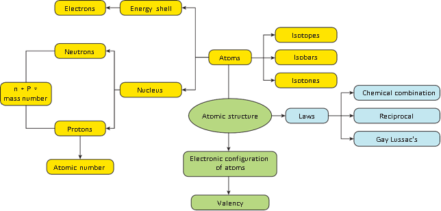
ICT CORNER
ATOMIC STRUCTURE
Atoms are building blocks. They are made of neutrons, protons and electrons.
This activity help the students to explore more about atoms and its components.
Step 1. Type the following URL in the browser or scan the QR code from your mobile.You can see on the screen. Click that.
Step 2. Select atom. Atomic orbit you can see with multiple options. Select protons, neutrons and electrons to their respective places. According to their numbers name of the elements appear on the periodic table. You can also find out whether the selected element is neutral or charged Bracket OPEN ions bracket closed
Step 3. click“ symbol” now. When you arrange electrons, neutrons and protons on the orbits you can see the name of the element, it’s atomic number, atomic mass and number of electrons.
Step 4. Third option is games. It’s an evaluation one to test your understanding
URL: https://phet.colorado.edu/sims/html/build-an-atom/latest/build-an-atom_en.html
After completing this lesson, students will be able to
know the concept of classification of elements in early days.
understand the postulates, advantages and limitations of modern periodic table.
understand the classification of elements based on the electronic configuration.
learn about the position of hydrogen in the periodic table.
study about the position of rare gases Bracket OPEN Noble gases bracket closed in the periodic table.
distinguish between metals and non-metals.
know about metalloids and alloys.
We live in the world of substances with great diversity. Substances are formed by the combination of various elements. All the elements are unique in their nature and property. To categorize these elements according to their properties, scientists started to look for a way. In 1800, there were only 31 known elements. By 1865, their number became 63. Now 118 elements have been discovered. As different elements were being discovered, scientists gathered more and more information about the properties of these elements. They found it difficult to organize all that was known about the elements. They started looking for some pattern in their properties, on the basis of which they could study such a large number of elements with ease. Let us discuss the concepts of classification of elements proposed by various scientists from early to modern period.
In 1817, Johann Wolfgang Dobereiner, a German chemist, suggested a method of grouping elements based on their relative atomic masses. He arranged the elements into groups containing three elements each. He called these groups as ‘triads’ Bracket OPEN tri – three bracket closed.
Dobereiner showed that when the three elements in a triad are arranged in the ascending order of their atomic masses, the atomic mass of the middle element is nearly the same as average of atomic masses of other two elements. This statement is called the Dobereiner’s law of triads. Table 12.1 shows the law of triads proposed by Dobereiner.
Example: In the triad group Bracket OPEN 1 bracket closed, arithmetic mean of atomic masses of 1st and 3rd elements,
Table 12.1 Dobereiner's law of triads
Triad Group Bracket OPEN 1 bracket closed |
Triad Group Bracket OPEN 2 bracket closed |
Triad Group Bracket OPEN 3 bracket closed |
|||
Element |
Atomic Mass |
Element |
Atomic Mass |
Element |
Atomic Mass |
Li |
6.9 |
Cl |
35.5 |
Ca |
40.1 |
Na |
23 |
Br |
79.9 |
Sr |
87.6 |
K |
39.1 |
I |
126.9 |
Ba |
137.3 |
Bracket OPEN 6.9 plus 39.1bracket closed divided by 2 = 23. So the atomic mass of Na Bracket OPEN middle element bracket closed is 23.
Dobereiner could identify only three triads from the elements known at that time and all elements could not be classified in the form of triads.
The law was not applicable to elements having very low and very high atomic mass.
In 1866, John Newlands arranged 56 known elements in the increasing order of their atomic mass. He observed that every eighth element had properties similar to those of the first element like the eighth note in an octave of music is similar to the first. This arrangement was known as 'law of octaves'.
The octave of Indian music system is sa, re, ga, ma, pa, da, ni, sa. The first and last notes of this octave are same That is, sa. Likewise, in the Newlands’ table of octaves, the element ‘F’ is eighth from the element ‘H’, thus they have similar properties.
BOX ITEM open
Find the pair of elements having similar properties by applying Newlands’ law of Octaves Bracket OPEN Example: Mg and Ca bracket closed:
Set 1 F, Mg, C, O, B
Set 2 Al, Si, S, Cl, Ca
Box item ends
There are instances of two elements being fitted into the same slot, Example cobalt and nickel.
Some elements, totally dissimilar in their properties, were fitted into the same group. Bracket OPEN Arrangement of Co, Ni, Pd, Pt and Ir in the row of halogens bracket closed
The law of octaves was not valid for elements that had atomic masses higher than that of calcium.
Newlands table was restricted to only 56 elements and did not leave any room for new elements.
Discovery of inert gases Bracket OPEN Neon. Argon.bracket closed at later stage made the 9th element similar to the first one. Example: Neon between Fluorine and Sodium.
In 1869, Russian chemist, Dmitri Mendeleev observed that the elements of similar properties repeat at regular intervals when the elements are arranged in the order of their atomic masses. Based on this, he proposed the law of periodicity which states that “the physical and chemical properties of the elements are the periodic functions of their atomic masses”. He arranged 56 elements known at that time according to his law of periodicity. This was best known as the short form of periodic table.
It has eight vertical columns called ‘groups’ and seven horizontal rows called ‘period’.
Each group has two subgroups ‘A’ and ‘B’. All the elements appearing in a group were found to have similar properties.
For the first time, elements were comprehensively classified in such a way that elements of similar properties were placed in the same group.
Table 12.2 Newland’s table of octaves Bracket OPEN oct- eight bracket closed
H |
1 |
F |
8 |
Cl |
15 |
Co and Ni |
22 |
Br |
29 |
Pd |
36 |
I |
42 |
Pt and Ir |
50 |
Li |
2 |
Na |
9 |
K |
16 |
Cu |
23 |
Rb |
30 |
Ag |
37 |
Cs |
44 |
Os |
51 |
G |
3 |
Mg |
10 |
Ca |
17 |
Zn |
24 |
Sr |
31 |
Cd |
38 |
Ba and V |
45 |
Hg |
52 |
Bo |
4 |
Al |
11 |
Cr |
19 |
Y |
25 |
Ce and La |
33 |
U |
40 |
Ta |
46 |
Ti |
53 |
C |
5 |
Si |
12 |
Ti |
18 |
In |
26 |
Zr |
32 |
Sn |
39 |
W |
47 |
Pb |
54 |
N |
6 |
P |
13 |
Mn |
20 |
As |
27 |
Di and Mo |
34 |
Sb |
41 |
Nb |
48 |
Bi |
55 |
O |
7 |
S |
14 |
Fe |
21 |
Se |
28 |
Ro and Ru |
35 |
To |
43 |
Au |
49 |
Th |
56 |
It was noticed that certain elements could not be placed in their proper groups in this manner. The reason for this was wrongly determined atomic masses. Consequently those wrong atomic masses were corrected. Example: The atomic mass of beryllium was known to be 14. Mendeleev reassessed it as 9 and assigned beryllium a proper place.
Columns were left vacant for elements which were not known at that time and their properties also were predicted. This gave motivation to experiment in Chemistry. Example: Mendeleev gave names Eka Aluminium and Eka Silicon to those elements which were to be placed below Aluminium and Silicon respectively in the periodic table and predicted their properties. The discovery of Germanium later on, during his life time, proved him correct.
Bracket OPEN b bracket closed Limitations:
Elements with large difference in properties were included in the same group. Example Hard metals like copper Bracket OPEN Cu bracket closed and silver Bracket OPEN Ag bracket closed were included along with soft metals like sodium Bracket OPEN Na bracket closed and potassium Bracket OPEN K bracket closed.
Table 12.3 Mendeleev’s Periodic Table
Group |
1 |
2 |
3 |
4 |
5 |
6 |
7 |
8 |
Oxide: Hydride: |
R 2 O R H |
R O R H4 |
R 2 O3 R H 4 |
R O 2 R H4 |
R 2 O5 R H3 |
R O3 R H2 |
R 2 O7 RH |
R O4 |
Periods |
A B |
A B |
A B |
A B |
A B |
A B |
A B |
Transition series |
1 |
H 1.008 |
nil |
nil |
nil |
nil |
nil |
nil |
nil |
2 |
L i 6.939 |
B e 9.012 |
B 10.81 |
C 12.011 |
N 14.007 |
O 15.999 |
F 18.988 |
nil |
3 |
N a 22.99 |
M g 22.99 |
A l 24.31 |
S i 28.09 |
P 30.974 |
S 32.06 |
C l 35.453 |
nil |
4 First Series Second series |
K 39.102
C u 63.54 |
C a 40.08
Z n 65.54 |
S c 44.96
G a 69.72 |
T i 47.90
G e 72.59 |
V 50.94
A s 74.92 |
C r 50.20
S e 78.96 |
M n 54.94
Br 79.909 |
F e 55.85
C o 58.93
N i 58.71 |
5 First Series Second series |
R b 85.47
A g 107.87 |
S r 87.62
C d 112.40 |
Y 88.91
I n 114.82 |
Z r 91.22
S n 118.69 |
N b 92.91
S b 121.60 |
M o 95.94
T e 127.60 |
T c 99
I 126.90 |
R u 101.07
R h 102.91
P d 106.4 |
6 First Series Second series |
C s 132.90 A u 196.97 |
B a 137.34 H g 200.59 |
L a 138.91 T l 204.37 |
H f 178.40 P b 207.19 |
T a 180.95 B i 208.98 |
W 183.85 |
nil |
O s 190.2
I r 192.2
P t 195.05 |
7 |
R n 222 |
F r 223 |
R a 226 |
A c 227 |
T h 232 |
P a 231 |
U 238 |
nil |
No proper position could be given to the element hydrogen. Non-metallic hydrogen was placed along with metals like lithium Bracket OPEN L i bracket closed, sodium Bracket OPEN N a bracket closed and potassium Bracket OPEN K bracket closed.
The increasing order of atomic mass was not strictly followed throughout. Example C o and Ni, Te and I.
No place for isotopes in the periodic table.
Table 12.4 Properties of Germanium
Property |
Mendeleev’s prediction Bracket OPEN 1871 bracket closed |
Actual property Bracket OPEN 1886 bracket closed |
Atomic Mass |
About 72 |
72.59 |
Specific Gravity |
5.5 |
5.47 |
Colour |
Dark grey |
Dark grey |
Formula of Oxide |
E s O2 |
GeO2 |
Nature of Chloride |
E s Cl4 |
GeCl4 |
In 1913, the English Physicist Henry Moseley, through his X-ray diffraction experiments, proved that the properties of elements depend on the atomic number and not on the atomic mass. Consequently, the modern periodic table was prepared by arranging elements in the increasing order of their atomic number.
This modern periodic table is the extension of the original Mendeleev’s periodic table and known as the long form of periodic table.
Atomic number of an element Bracket OPEN Z bracket closed indicates the number of protons Bracket OPEN positive charge bracket closed or the number of electrons Bracket OPEN negative charge bracket closed. The physical and chemical properties of elements depend not only on the number of protons but also on the number of electrons and their arrangements Bracket OPEN electronic configuration bracket closed in atoms. Hence, the modern periodic law can be stated as follows: “The chemical and physical properties of the elements are the periodic functions of their atomic numbers”. Based on the modern periodic law, the modern periodic table is derived.
All the elements are arranged in the increasing order of their atomic number.
The horizontal rows are called periods. There are seven periods in the periodic table.
The elements are placed in periods based on the number of shells in their atoms.
Vertical columns in the periodic table starting from top to bottom are called groups. There are 18 groups in the periodic table
Based on the physical and chemical properties of elements, they are grouped into various families.
Table 12.5 Groups in modern periodic table
Group |
Families |
1 |
Alkali metals |
2 |
Alkaline earth metals |
3 to 12 |
Transition metals |
13 |
Boron Family |
14 |
Carbon Family |
15 |
Nitrogen Family |
16 |
Oxygen Family Bracket OPEN or bracket closed Chalcogen Family |
17 |
Halogens |
18 |
Noble gases |
We know that the electrons in an atom are accommodated in shells around the nucleus. Each shell consists of one or more subshells in which the electrons are distributed in certain
Periodic table of the elements Image was given below
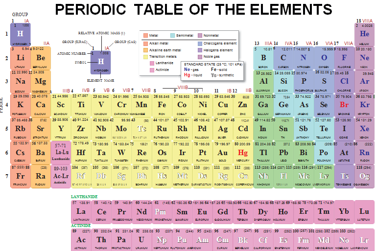
manner. These subshells are designated as s, p, d, and f. Based on the arrangement of electrons in subshells, the elements of periodic table are classified into four blocks namely s, p, d and f blocks.
Bracket OPEN 1 bracket closed s-Block Elements: It includes group 1 Bracket OPEN alkali metals bracket closed and group 2 Bracket OPEN alkaline earth metals bracket closed elements. They are also called as representative elements. The elements of group 1 Bracket OPEN except hydrogen bracket closed are metals. They react with water to form solutions that change the colour of a litmus paper from red to blue. These solutions are said to be highly alkaline or basic. Hence they are called alkali metals.
The elements of group 2 are also metals. They combine with oxygen to form oxides, formerly called 'earths', and these oxides produce alkaline solutions when they are dissolved in water. Hence, these elements are called alkaline earth metals.
Bracket OPEN2bracket closed p-Block Elements: These elements are in group 13 to 18 in the periodic table. They include boron, carbon, nitrogen, oxygen, fluorine families in addition to noble gases Bracket OPEN Except helium bracket closed. They are also called as representative elements. The p-block is home to the biggest variety of elements and is the only block that contains all three types of elements: metals, non metals, and metalloids.
Bracket OPEN 3 bracket closed d-Block Elements: It includes group 3 to group 12 elements. They are found in the centre of the periodic table. Their properties are intermediate to that of s block and p block elements and so they are called transition elements.
Bracket OPEN 4 bracket closed f – Block Elements: It includes 14 elements after Bracket OPEN Lanthanum bracket closed La Bracket OPEN 57 bracket closed, called Lanthanoides and 14 elements after Bracket OPEN Actinium bracket closed Ac Bracket OPEN 89 bracket closed, called Actinoides. They are placed at the bottom of the periodic table. They are also called as inner Transition elements.
The table is based on a more fundamental property That is, atomic number.
It correlates the position of the element with its electronic configuration more clearly.
The completion of each period is more logical. In a period, as the atomic number increases, the energy shells are gradually filled up until an inert gas configuration is reached.
It is easy to remember and reproduce.
Each group is an independent group and the idea of subgroups has been discarded.
One position for all isotopes of an element is justified, since the isotopes have the same atomic number.
The position of the eighth group Bracket OPEN in Mendeleev‘s table bracket closed is also justified in this table. All transition elements have been brought in the middle as the properties of transition elements are intermediate between left portion and right portion elements of the periodic table.
The table completely separates metals from non metals. The non metals are present in upper right corners of the periodic table.
The positions of certain elements which were earlier misfit Bracket OPEN interchanged bracket closed in the Mendeleev’s periodic table are now justified because it is based on atomic number of the elements.
Justification has been offered for placing lanthanides and actinides at the bottom of the periodic table.
Hydrogen is the lightest, smallest and first element of the periodic table. Its electronic configuration Bracket OPEN 1 s superscript 1 bracket closed is the simplest of all the elements. It occupies a unique position in the periodic table. It behaves like alkali metals as well as halogens in its properties.
Table 12.6 Number of electrons in subshell
Shell number Bracket OPEN Symbol bracket closed |
1Bracket OPEN K bracket closed |
2Bracket OPEN L bracket closed |
3 Bracket OPEN M bracket closed |
4 Bracket OPEN N bracket closed |
||||||
Sub shell |
1 s |
2 s |
2p |
3 s |
3p |
3d |
4 s |
4p |
4d |
4f |
Maximum number of electrons in each sub shell |
2 |
2 |
6 |
2 |
6 |
10 |
2 |
6 |
10 |
14 |
Maximum number of electrons in each shell |
2 |
8 |
18 |
32 |
||||||
In the periodic table, it is placed at the top of the alkali metals.
Bracket OPEN 1 bracket closed Hydrogen can lose its only one electron to form a hydrogen ion Bracket OPEN H plus bracket closed like alkali metals.
Bracket OPEN 2 bracket closed It can also gain one electron to form the hydride ion Bracket OPEN H minus bracket closed like halogens.
Bracket OPEN 3 bracket closed Alkali metals are solids while hydrogen is a gas.
Hence the position of hydrogen in the modern periodic table is still under debate as the properties of hydrogen are unique.
The elements Helium, Neon, Argon, Krypton, Xenon and Radon of group 18 in the periodic table are called as Noble gases or Rare gases. They are monoatomic gases and do not react with other substances easily, due to completely filled subshells. Hence they are called as inert gases. They are found in very small quantities and hence they are called as rare gases.
Metals are typically hard, shiny, malleable Bracket OPEN can be made as sheet bracket closed, fusible and ductile Bracket OPEN can be drawn into wire bracket closed with good electrical and thermal conductivity. Except mercury, most of the metals are solids at room temperature. Metals occupy larger area in the periodic table and are categorized as:
Bracket OPEN 1 bracket closed Alkali metals. Example Lithium to Francium Bracket OPEN top to bottom bracket closed
Bracket OPEN 2 bracket closed Alkaline earth metals. Example Beryllium to Radium Bracket OPEN top to bottom bracket closed
Bracket OPEN 3 bracket closed Transition Metals. Group 3 to 12
Bracket OPEN 4 bracket closed p-block metals. Example Al, Ga, In, Tl, Sn, Pb and Bi.
A non-metal is an element that does not have the characters like hardness, shiny, malleable, suitable and ductile. In other words, a non-metal is an element that does not have the properties of metal. All non metals are arranged in p-block only. Example C, N, O, P, S, Se, Halogen Bracket OPENF, Cl, Br and I bracket closed and inert gases Bracket OPEN He to Rn bracket closed.
Elements which have the properties of both metals and non-metals are called as metalloids. Bracket OPEN example bracket closed Boron, Arsenic.
During 3500 BC Bracket OPEN BCE bracket closed, people used an alloy named ‘bronze’. The idea of making an alloy was quite old. The majority of the metallic substances used today are alloys. Alloys are mixtures of two or more metals and are formed by mixing molten metals thoroughly. Rarely non metals are also mixed with metals to produce alloys.
It is generally found that alloying produces a metallic substance that has more useful properties than the original pure metals from which it is made. For example, the alloy brass is made from copper and zinc.
Alloys do not get corroded or get corroded to very less extent.
They are harder and stronger than pure metals Bracket OPEN Example: Gold is mixed with copper and it is harder than pure gold bracket closed.
They have less conductance than pure metals Bracket OPEN Example: Copper is good conductor of heat and electricity where as brass and bronze are not good conductors bracket closed.
Some alloys have lower melting point than pure metals Bracket OPEN Example: Solder is an alloy of lead and tin which has lower melting point than each of the metals bracket closed.
When metal is alloyed with mercury, it is called amalgam.
Dobereiner grouped the elements based on their relative atomic masses in a group of three Bracket OPEN triads bracket closed.
John Newlands arranged 56 known elements in the increasing order of their atomic mass.
Dmitri Mendeleev proposed the law of periodicity.
Mendeleev’s Periodic Table has eight vertical columns called ‘groups’ and seven horizontal rows called ‘period’.
In the modern periodic table all the elements are arranged in the increasing order of their atomic number.
There are seven periods and 18 groups in the modern periodic table.
The elements are placed in periods based on the number of shells in their atoms.
Based on the common characteristics of elements in each group, they are grouped as various families.
Dobereiner’s Law of Triads
The atomic mass of the middle element is nearly the same as average of atomic masses of other two elements.
Newlands’ Law of Octaves
Every eighth element had properties similar to those of the first element like the eighth note in an octave of music is similar to the first.
Mendeleev’s Law of Periodicity
The physical and chemical properties of the elements are the periodic functions of their atomic masses.
Modern Periodic Law The chemical and physical properties of the elements are the periodic functions of their atomic numbers.
Periods Horizontal rows in the modern periodic table.
Columns Vertical columns in the modern periodic table
s block elements Elements whose valence electrons are added to s subshell.
p block elements Elements whose valence electrons are filled in p subshells.
d block elements Elements having their valence electrons in the d subshells.
f block elements Elements having their valence electrons in the f subshells.

1. If Dobereiner is related with ‘law of triads’, then Newlands is related with
A bracket closed Modern periodic law b bracket closed Hund’s rule
C bracket closed Law of octaves d bracket closed Pauli’s Exclusion principle
2. Modern periodic law states that the physical and chemical properties of elements are the periodic functions of their
A bracket closed atomic numbers b bracket closed atomic masses c bracket closed similarities d bracket closed anomalies
3. Elements in the modern periodic table are arranged in dash groups and dash periods.
A bracket closed 7, 18
b bracket closed 18, 7
c bracket closed 17, 8
d bracket closed 8, 17
1. In Dobereiner’s triads, the atomic weight of the middle element is the dash of the atomic masses of first and third elements.
2. Noble gases belong to dash group of the periodic table.
3. The basis of the classifications proposed by Dobereiner, Newlands and Mendeleev was dash
4. Example for liquid metal is dash
Triads |
Newlands |
Alkali metal |
Calcium |
Law of octaves |
Henry Moseley |
Alkaline earth metal |
Sodium |
Modern Periodic Law |
Dobereiner |
1. Newlands’ periodic table is based on atomic masses of elements and modern periodic table is based on atomic number of elements.
2.Metals can gain electrons.
3. Alloys bear the characteristics of both metals and non metals.
4. Lanthanides and actinides are kept at the bottom of the periodic table because they resemble each other but they do not resemble with any other group elements.
5. Group 17 elements are named as Halogens.
Statement: Elements in a group generally possess similar properties but elements along a period have different properties.
Reason: The difference in electronic configuration makes the element differ in their chemical properties along a period.
A bracket closed Statement is true and reason explains the statement.
B bracket closed Statement is false but the reason is correct.
1. State modern periodic law.
2. What are groups and periods in the modern periodic table question mark
3. What are the limitations of Mendeleev's periodic table question mark
4. State any five features of modern periodic table.
1. CONCISE Inorganic chemistry 5th Edition by J.D. Lee
2. Inorganic Chemistry by P.L.Soni
3. The Periodic table: Its story and its significance: Eric R. Scerri
2. https://iupac.org/what-we-do/periodictable-of-elements/
4.https://sciencestruck.com/periodic-table facts
5. https://ww.teachbeside.com/memorizeperiodictable

Periodic Classification

Steps
1.Type the URL link given below in the browser OR scan the QR code .You can also download the “Royal society of chemistry” mobile app from the given app URL.
2. Click the element from the table and explore the properties of the element you want to learn.
3. On the right top corner click option as shown to learn the uses and properties.
4. For every element we can understand the uses and the properties of elements.
URL: https://play.google.com/store/apps/detailsquestion markid=org.rsc.periodictable or Scan the QR Code.

After completing this lesson, student will be able to
understand how molecules are formed and what is a chemical bond.
explain Octet rule.
draw Lewis dot structure of atoms.
understand different types of bonds.
differentiate the characteristics of ionic bond, covalent bond and coordinate bond.
understand redox reactions.
find out the oxidation number of different elements.
We already know that atoms are the building blocks of matter. Under normal conditions no atom exists as an independent Bracket OPEN single bracket closed entity in nature, except noble gases. However, a group of atoms is found to exist together as one species. Such a group of atoms is called molecule. Obviously there should be a force to keep the constituent atoms together as the thread holds the flowers together in a garland. This attractive force which holds the atoms together is called a bond.
Figure. 13.1 Flowers held together by thread image was given below

Figure. 13.2 Atoms held together by bond image was given below

A chemical bond may be defined as the force of attraction between the atoms that binds them together as a unit called molecule. In this unit, we will study about Kossel Lewis approach to chemical bonds, Lewis dot structure and different types of reactions.
Atoms of various elements combine together in different ways to form chemical compounds. This phenomenon raised many questions.
Why do atoms combine question mark
How do atoms combine question mark
Why do certain atoms combine while others do not question mark
To answer such questions different theories have been put forth from time to time and one of such theories which explained the formation of molecules is Kossel-Lewis theory.
Kossel and Lewis gave successful explanation based upon the concept of electronic configuration of noble gases about why atoms combine to form molecules. Atoms of noble gases have little or no tendency to combine with each other or with atoms of other elements. This means that these atoms must be having stable electronic configurations. The electronic configurations of noble gases are given in Table 13.1.
Table 13.1 The electronic configurations of noble gases
Name of the element |
Atomic number |
Shell electronic configuration |
Helium Bracket OPEN He bracket closed |
2 |
2 |
Neon Bracket OPEN Ne bracket closed |
10 |
2,8 |
Argon Bracket OPEN Ar bracket closed |
18 |
2,8,8 |
Krypton Bracket OPEN Kr bracket closed |
36 |
2,8,18,8 |
Xenon Bracket OPEN Xe bracket closed |
54 |
2,8,18,18,8 |
Radon Bracket OPEN Rn bracket closed |
86 |
2,8,18,32,18,8 |
Except Helium, all other noble gases have eight electrons in their valence shell. Even helium has its valence shell completely filled and hence no more electrons can be added. Thus, by having stable valence shell electronic configuration, the noble gas atoms neither have any tendency to gain nor to lose electrons and hence their valency is zero. They are so inert that they even do not form diatomic molecules and exist as monoatomic gaseous atoms.
Box item OPEN
The number of electrons lost from a metal atom is the valency of the metal and the number of electrons gained by a non metal is the valency of the non-metal box item ends
Based on the noble gas electronic configuration, Kossel and Lewis proposed a theory in 1916 to explain chemical combination between atoms and this theory is known as ‘Electronic theory of valence’ or Octet rule. According to this, atoms of all elements, other than inert gases, combine to form molecules because they have incomplete valence shell and tend to attain a stable electronic configuration similar to noble gases. Atoms can combine either by transfer of valence electrons from one atom to another or by sharing of valence electrons in order to achieve the stable outer shell of eight electrons.
The tendency of atoms to have eight electrons in the valence shell is known as the ‘Octet rule’ or the Rule of eight’
For example, sodium with atomic number 11 will readily loose one electron to attain neon’s stable electronic configuration Bracket OPEN Figure 13.3bracket closed. Similarly, chlorine has electronic configuration 2,8,7. To get the nearest noble gas Bracket OPEN That is argon bracket closed configuration, it need one more electron. So, chlorine readily gains one electron from other atom and obtains stable electronic configuration Bracket OPEN Figure 13.4bracket closed. Thus elements tend to have stable valence shell Bracket OPEN eight electrons bracket closed either by losing or gaining electrons.
Figure. 13.3 Formation of sodium ion image was given below

Image figure 5.4 formation of chloride ion was given below

Which atoms tend to lose electrons question mark Which are tend to gain electrons question mark Atoms that have 1, 2, 3 electrons in their valence shell tend to lose electrons whereas atoms having 5, 6, 7 valence electrons tend to gain electrons.
Table 13.2 Unstable electronic configuration
Element |
Atomic number |
Electron distribution |
Valence electrons |
Boron |
5 |
2, 3 |
3 |
Nitrogen |
7 |
2, 5 |
5 |
Oxygen |
8 |
2,6 |
6 |
Sodium |
11 |
2, 8, 1 |
1 |
When atoms combine to form compounds, their valence electrons involve in bonding. Therefore, it is helpful to have a method to depict the valence electrons in the atoms. This can be done using Lewis dot symbol method. The Lewis dot structure or electron dot symbol for an atom consists of the symbol of the element surrounded by dots representing the electrons of the valence shell of the atom. The unpaired electron in the valence shell is represented by a single dot whereas the paired electrons are represented by a pair of dots.
Symbols other than dots, like crosses or circles may be used to differentiate the electrons of the different atoms in the molecule.
Table 13.3 Lewis dot structure
Element |
Atomic number |
Electron distribution |
Valence electrons |
Lewis dot structure |
Hydrogen |
1 |
1 |
1 |
|
Helium |
2 |
2 |
2 |
|
Beryllium |
4 |
2, 2 |
2 |
|
Carbon |
6 |
2, 4 |
4 |
|
Nitrogen |
7 |
2, 5 |
5 |
|
Oxygen |
8 |
2,6 |
6 |
|
Box item OPEN
Note that dots are placed one to each side of the letter symbol until all four sides are occupied. Then the dots are written two to a side until all valence electrons are accounted for. The exact placement of the single dots is immaterial. Box item ends
All the elements have different valence shell electronic configuration. So the way in which they combine to form compounds also differs. Hence, there are different types of chemical bonding possible between atoms which make the molecules. Depending on the type of bond, they show different characteristics or properties. Such types of bonding, that are considered to exist in molecules, are categorized as shown Figure 13.5. Among these, let us learn about the Ionic bond, Covalent bond and Coordinate bond in this chapter and other types of bond in the higher classes.

An ionic bond is a chemical bond formed by the electrostatic attraction between positive and negative ions. The bond is formed between two atoms when one or more electrons are transferred from the valence shell of one atom to the valence shell of the other atom. The atom that loses electrons will form a cation Bracket OPEN positive ion bracket closed and the atom that gains electrons will form an anion Bracket OPEN negative ion bracket closed. These oppositely charged ions come closer to each other due to electrostatic force of attraction and thus form an ionic bond. As the bond is between the ions, it is called Ionic bond and the attractive forces being electrostatic, the bond is also called Electrostatic bond. Since the valence concept has been explained in terms of electrons, it is also called as Electrovalent bond.
Let us consider two atoms A and B. Let atom A has one electron in excess and atom B has one electron lesser than the stable octet electronic configuration. If atom A transfer one electron to atom B, then both the atoms will acquire stable octet electronic configuration. As the result of this electron transfer, atom A will become positive ion Bracket OPEN cation bracket closed and atom B will become negative ion Bracket OPEN anion bracket closed. These oppositely charged ions are held together by electrostatic force of attraction which is called Ionic bond or Electrovalent bond.
In general, ionic bond is formed between a metal and non-metal. The compounds containing ionic bonds are called ionic compounds. Elements of Group 1 and 2 in periodic table, That is, alkali and alkaline earth metals form ionic compounds when they react with non-metals.
Box item open
The number of electrons that an atom of an element loses or gains to form an electrovalent bond is called its Electrovalency. Box item ends
The atomic number of Sodium is 11 and its electronic configuration is 2, 8, 1. It has one electron excess to the nearest stable electronic configuration of a noble gas - Neon. So sodium has a tendency to lose one electron from its outermost shell and acquire a stable electronic configuration forming sodium cation Bracket OPEN Na plus bracket closed.
The atomic number of chlorine is 17 and its electronic configuration is 2, 8, 7. It has one electron less to the nearest stable electronic configuration of a noble gas - Argon. So chlorine has a tendency to gain one electron to acquire a stable electronic configuration forming chloride anion Bracket OPEN Cl minus bracket closed.
Figure. 13.5 Classification of chemical bonding image was given below

chemical bonding is classified as strong bond and weak bond. Strong bond is further classified as ionic bond, covalent bond, coordinate bond, metallic bond. Weak bond is classified as hydrogen bond and vander walls interaction.
Image was given below

When an atom of sodium combines with an atom of chlorine, an electron is transferred from sodium atom to chlorine atom forming sodium chloride molecule thus both the atoms attain stable octet electronic configuration.
Figure. 13.6 Formation of ionic bond in sodium chloride image was given below

The atomic number of magnesium is 12 and the electronic configuration is 2, 8, 2. It has two electron excess to the nearest stable electronic configuration of a noble gas Neon. So magnesium has a tendency to lose two electrons from its outermost shell and acquire a stable electronic configuration forming magnesium cation Bracket OPENMg2 plus bracket closed.
As explained earlier two chlorine atoms will gain two electrons lost by the magnesium atom forming magnesium chloride molecule Bracket OPEN MgCl2 bracket closed as shown in Figure 13.7.
The nature of bonding between the atoms of a molecule is the primary factor that determines the properties of compounds. By this way, in ionic compounds the atoms are held together by a strong electrostatic force that makes the compounds to have its characteristic features as follows:
Physical state: These compounds are formed because of the strong electrostatic force between cations and anions which are arranged in a well-defined geometrical pattern. Thus ionic compounds are crystalline solids at room temperature.
Electrical conductivity: Ionic compounds are crystalline solids and so their ions are tightly held together. The ions, therefore, cannot move freely, and they do not conduct electricity in solid state. However, in molten state their aqueous solutions conduct electricity.
Melting point: The strong electrostatic force between the cations and anions hold the ions tightly together, so very high energy is required to separate them. Hence ionic compounds have high melting and boiling points.
Solubility: Ionic compounds are soluble in polar solvents like water. They are insoluble in non-polar solvents like benzene Bracket OPEN C6H6 bracket closed, carbon tetra chloride Bracket OPEN CCl4 bracket closed.
Density, hardness and brittleness: Ionic compounds have high density and they are quite hard because of the strong electrostatic force between the ions. But they are highly brittle.
Reactions: Ionic compounds undergo ionic reactions which are practically rapid and instantaneous
Figure. 13.7 Formation of ionic bond in magnesium chloride image was given below

Atoms can combine with each other by sharing the unpaired electrons in their outermost shell. Each of the two combining atoms contributes one electron to the electron pair which is needed for the bond formation and has equal claim on the shared electron pair. According to Lewis concept, when two atoms form a covalent bond between them, each of the atoms attains the stable electronic configuration of the nearest noble gas. Since the covalent bond is formed because of the sharing of electrons which become common to both the atoms, it is also called as atomic bond.
Let us consider two atoms A and B. Let atom A has one valence electron and atom B has seven valence electrons. As these atoms approach nearer to each other, each atom contributes one electron and the resulting electron pair fills the outer shell of both the atoms. Thus both the atoms acquire a completely filled valence shell electronic configuration which leads to stability.
Figure. 13.8 Schematic representation of covalent bond image was given below

Box item open
Covalent bonds are of three types:
2. Double covalent bond represented by a double line Bracket OPEN parallel horizontal line bracket closed between the two atoms. Example O double bond O
3. Triple covalent bond represented by a triple line Bracket OPEN 3 horizontal parallel lines bracket closed between the two atoms. Example N triple bond N box item ends
Hydrogen molecule is formed by two hydrogen atoms. While forming the molecule, both hydrogen atoms contribute one electron each to the shared pair and both atoms acquire stable and completely filled electronic configuration Bracket OPEN resemble H e bracket closed.
Figure. 13.9 Formation of covalent bond in H2 molecule image was given below

Chlorine molecule is formed by two chlorine atoms. Each chlorine atom has seven valence electrons Bracket OPEN 2,8,7bracket closed. These two atoms achieve a stable completely filled electronic configuration Bracket OPEN octet bracket closed by sharing a pair of electrons.
Figure. 13.10 Formation of covalent bond in Cl2 molecule was given below 
Mee thane molecule is formed by the combination of one carbon and four hydrogen atoms. The carbon atom has four valence electrons Bracket OPEN 2, 4 bracket closed. These four electrons are shared with four atoms of hydrogen to achieve a stable electronic configuration Bracket OPEN octet bracket closed by sharing a pair of electrons.
Figure. 13.11 Formation of covalent bond in mee thane molecule image was given below

Oxygen molecule is formed by two oxygen atoms. Each oxygen atom has six valence electrons Bracket OPEN 2, 6 bracket closed. These two atoms achieve a stable electronic configuration Bracket OPEN octet bracket closed by sharing two pair of electrons. Hence a double bond is formed in between the two atoms.
Figure. 13.12 Formation of covalent bond in oxygen molecule image was given below

Nitrogen molecule is formed by two nitrogen atoms. Each nitrogen atom has five valence electrons Bracket OPEN 2, 5bracket closed. These two atoms achieve a stable completely filled electronic configuration Bracket OPEN octet bracket closed by sharing three pair of electrons. Hence a triple bond is formed in between the two atoms.
Figure. 13.13 Formation of covalent bond in nitrogen molecule image was given below

As said earlier, the properties of compounds depend on the nature of bonding between their constituent atoms. So the compounds containing covalent bonds possess different characteristics when compared to ionic compounds.
Physical state: Depending on force of attraction between covalent molecule the bond may be weaker or stronger. Thus covalent compounds exists in gaseous, liquid and solid form. Example Oxygen-gas; Water-liquid: Diamond-solid.
Electrical conductivity: Covalent compounds do not contain charged particles Bracket OPEN ions bracket closed, so they are bad conductors of electricity.
Melting point: Except few covalent compounds Bracket OPEN Diamond, Silicon carbide bracket closed, they have relatively low melting points compared to ionic compounds.
Solubility: Covalent compounds are readily soluble in non-polar solvents like benzene Bracket OPEN C6H6 bracket closed, carbon tetra chloride Bracket OPEN CCl4 bracket closed. They are insoluble in polar solvents like water.
Hardness and brittleness: Covalent compounds are neither hard nor brittle. But they are soft and waxy.
Reactions: Covalent compounds undergo molecular reactions in solutions and these reactions are slow.
Box item open
Polar solvents contain bonds between atoms with very different electro negativities, such as oxygen and hydrogen. Ionic compounds are soluble in polar solvents. Ex: water, ethanol, acetic acid, ammonia.
Non polar solvents contain bonds between atoms with similar electro negativities, such as carbon and hydrogen. Covalent compounds are soluble in nonpolar solvents. Ex: acetone, benzene, toluene, turpentine box item ends
As we know, a metal combines with a non metal through ionic bond. The compounds so formed are called ionic compounds. A compound is said to be ionic when the charge of the cation and anion are completely separated. But in 1923, Kazimierz Fajans found, through his X-Ray crystallographic studies, that some of the ionic compounds show covalent character. Based on this, he formulated a set of rules to predict whether a chemical bond is ionic or covalent. Fajan’s rules are formulated by considering the charge of the cation and the relative size of the cation and anion.
When the size of the cation is small and that of anion is large, the bond is of more covalent character
Greater the charge of the cation, greater will be the covalent character a table was given below
Ionic |
Covalent |
Low positive charge |
High positive charge |
Large cation |
Small cation |
Small anion |
Large anion |
For example, in sodium chloride, low positive charge Bracket OPEN plus 1bracket closed, a fairly large cation and relatively small anion make the charges to separate completely. So it is ionic. In aluminium triiodide, higher is the positive charge Bracket OPEN plus 3bracket closed, larger is the anion and thus no complete charge separation. So is covalent. The following picture depicts the relative charge separation of ionic compounds.
Figure. 13.14 Relatice charge separation of ionic compounds image was given below

In the formation of normal covalent bond each of the two bonded atoms contribute one electron to form the bond. However, in some compounds, the formation of a covalent bond between two atoms takes place by the sharing of two electrons, both of which comes from only one of the combining atoms. This bond is called Coordinate covalent bond or Dative bond.
Mostly the lone pair of electrons from an atom in a molecule may be involved in the dative bonding. The atom which provides the electron pair is called donor atom while the other atom which accepts the electron pair is called acceptor atom. The coordinate covalent bond is represented by an arrow Bracket OPEN→bracket closed which points from the donor to the acceptor atom.
Let us consider two atoms A and B. Let atom A has an unshared lone pair of electrons and atom B is in short of two electrons than the octet in its valence shell. Now atom A donates its lone pair while atom B accepts it. Thus the lone pair of electrons originally belonged to atom A are now shared by both the atoms and the bond formed by this mutual sharing is called Coordinate covalent bond. Bracket OPEN A to Bbracket closed.
image was given below

Examples Bracket OPEN NH4 plus ,NH3 to BF3 bracket closed
In some cases, the donated pair of electrons comes from a molecule as a whole which is already formed to another acceptor molecule. Here the molecule ammonia Bracket OPEN NH3 bracket closed gives a lone pair of electrons to Boron tri fluoride Bracket OPEN BF3 bracket closed molecule which is electron deficient. Thus, a coordinate covalent bond is formed between NH3 Bracket OPEN donor molecule bracket closed and BF3 Bracket OPEN acceptor molecule bracket closed and is represented by NH3 to BF3.
Image Coordination bond between NH3 and BF3 was given below

Characteristics of coordinate covalent compounds
The compounds containing coordinate covalent bonds are called coordinate compounds.
Physical state: These compounds exist as gases, liquids or solids.
Electrical conductivity: Like covalent compounds, coordinate compounds also do not contain charged particles Bracket OPEN ions bracket closed, so they are bad conductors of electricity.
Melting point: These compounds have melting and boiling points higher than those of purely covalent compounds but lower than those of purely ionic compounds.
Solubility: Insoluble in polar solvents like water but are soluble in non-polar solvents like benzene, CCl4 , and toluene.
Reactions: Coordinate covalent compounds undergo molecular reactions which are slow.
When an apple is cut and left for sometimes, its surface turns brown. Similarly, iron bolts and nuts in metallic structures get rusted. Do you know why these are happening question mark It is because of a reaction called oxidation.
Image was given below

Oxidation: The chemical reaction which involves addition of oxygen or removal of hydrogen or loss of electrons is called oxidation.
2 Mg plus O2 gives 2 MgO Bracket OPEN addition of oxygen bracket closed
CaH2 gives Ca plus H2 Bracket OPEN removal of hydrogen bracket closed
F e2 plus turns F e3 plus plus e negative Bracket OPEN loss of electron bracket closed
Reduction: The chemical reaction which involves addition of hydrogen or removal of oxygen or gain of electrons is called reduction.
2 Na plus H2 gives 2 Na H Bracket OPEN addition of hydrogen bracket closed
Cu O plus H2 gives Cu plus H2O Bracket OPEN removal of oxygen bracket closed
Fe3 plus plus e minus gives Fe2 plus Bracket OPEN gain of electron bracket closed
Redox reactions: Generally, the oxidation and reduction occurs in the same reaction Bracket OPEN simultaneously bracket closed. If one reactant gets oxidised, the other gets reduced. Such reactions are called oxidation-reduction reactions or Redox reactions.
2 PbO plus C gives 2 Pb plus C O2
Zn plus CuSO4 gives Cu plus ZnSO4
Table was given below
Oxidation
|
Addition of oxygen |
Removal of hydrogen |
|
Loss of electron |
|
Reduction |
Removal of oxygen |
Addition of hydrogen |
|
Gain of electron |
Substances which have the ability to oxidise other substances are called oxidising agents These are also called as electron acceptors because they remove electrons from other substances. Example: H2O2 , MnO4 minus , C r O with subscript 3 , C r 2 O with subscript 7and 2 minus
Substances which have the ability to reduce other substances are called Reducing agents. These are also called as electron donors because they donate electrons to other substances.
Example: NaBH4 , L I AlH4 and metals like Palladium, Platinum.
In nature, the oxygen present in atmospheric air oxidises many things, starting from metals to living tissues.
The shining surface of metals tarnishes due to the formation of respective metal oxides on their surfaces. This is called corrosion.
The freshly cut surfaces of vegetables and fruits turn brown after some time because of the oxidation of compounds present in them.
The oxidation reaction in food materials that were left open for a long period is responsible for spoiling of food. This is called Rancidity.
Oxidation number of an element is defined as the total number of electrons that an atom either gains or loses in order to form a chemical bond with another atom. Oxidation number is also called oxidation state. If the oxidation number is positive then it means that the atom loses electron, and if it is negative it means that the atom gains electrons. If it is zero then the atom neither gains nor loses electrons. The sum of oxidation numbers of all the atoms in the formula for a neutral compound is ZERO. The sum of oxidation numbers of an ion is the same as the charge on that ion. Negative oxidation number in a compound of two unlike atoms is assigned to the more electronegative atom.
Box item open
Electronegativity is the tendency of an atom in a molecule to attract towards itself the shared pair of electrons. box item ends
Oxidation number of K and B r in KBr molecule is plus 1 and minus 1 respectively.
Oxidation number of N in NH3 molecule is minus 3.
Oxidation number of H is plus 1 Bracket OPEN except hydrides bracket closed.
Oxidation number of oxygen in most cases is minus 2.
Problems on determination of Oxidation Number
O N Bracket OPEN Oxidation Number bracket closed of neutral molecule is always zero
Oxidation Number of H and O in H2 O
Let us take O N of H = plus 1 and O N of O = minus 2
2 into Bracket OPEN plus 1 bracket closed plus 1 into Bracket OPEN minus 2 bracket closed = 0
Bracket OPEN plus 2 bracket closed plus Bracket OPEN minus 2 bracket closed = 0
Thus, O N of H is plus 1 and O N of O is minus 2
Illustration 2
Oxidation Number of S in H2 S O 4
Let O N of S be x and we know O N of H = plus 1 and O = minus 2
2 into Bracket OPEN plus 1bracket closed plus x plus 4 into Bracket OPEN minus 2bracket closed = 0
Bracket OPEN plus 2 bracket closed plus x plus Bracket OPEN minus 8 bracket closed = 0
x = plus 6
Therefore, O N of S is plus 6
Illustration 3
Oxidation Number of Cr in K2 Cr2 O7
Let O N of Cr be x and we know O N of K = plus 1 and O = –2
2 into Bracket OPEN plus 1 bracket closed plus 2 into x plus 7 into Bracket OPEN minus 2 bracket closed = 0
Bracket OPEN plus 2 bracket closed plus 2 x plus Bracket OPEN minus 14 bracket closed = 0
2 x = plus 12
x = plus 6 Therefore, O N of C r in K2 C r2 O7 is plus 6
Oxidation Number of F e in F e SO4
Let O N of Fe be x and we know O N of S = plus 6 and O = minus 2
x plus 1 into Bracket OPEN plus 6 bracket closed plus 4 into Bracket OPEN minus 2bracket closed = 0
x plus Bracket OPEN plus 6 bracket closed plus Bracket OPEN minus 8bracket closed = 0
x = plus 2 Therefore, O N of Fe in Fe SO4 is plus 2
1. Find the oxidation number of Mn in KMnO4
2. Find the oxidation number of Cr in Na2 Cr2 O7
3. Find the oxidation number of C u in CuSO4
4. Find the oxidation number of F e in F e O
The tendency of atoms to have eight electrons in the valence shell is known as the ‘Octet rule’ or the ‘Rule of eight’
The Lewis dot structure or electron dot symbol for an atom consists of the symbol of the element surrounded by dots representing the electrons of the valence shell of the atom.
There are different types of chemical bonding possible between atoms which make the molecules. Depending on the type of bond they show different characteristics or properties.
An ionic bond is formed by the electrostatic attraction between positive and negative ions. It is also called as Electrochemical bond.
The covalent bond is formed because of the sharing of electrons which become common to both the atoms. It is also called as Atomic bond.
In some compounds the formation of a covalent bond between two atoms takes place by the sharing of two electrons, both of which comes from only one of the combining atoms. This bond is called Coordinate covalent bond or Dative bond.
Substances which have the ability to oxidise other substances are called Oxidising agents. These are also called as electron acceptors because they remove electrons form other substances.
Substances which have the ability to reduce other substances are called Reducing agents. These are also called as electron donors because they donate electrons to other substances.
Oxidation number also called Oxidation State
Chemical bond |
Force of attraction between the two atoms that binds them together as a unit. |
Coordinate covalent bond |
Bond formed between atoms by mutual sharing of electrons which are supplied by one atom. |
Covalent bond |
Bond formed between atoms by the mutual sharing of electrons. |
Ionic / Electrovalent bond |
Bond formed between cation and anion because of the transfer of electrons from one atom to other atom. |
Octet rule or Rule of eight |
The tendency of atoms to have eight electrons in the valence shell. |
Oxidation |
Chemical reaction which involves in the addition of oxygen or removal of hydrogen or loss of electrons. |
Oxidation number |
The formal charge which an atom has when electrons are counted. |
Oxidising agents |
Substances which have the ability to oxidise other substances. |
Redox reaction |
Oxidation and reduction occurs in the same reaction simultaneously. |
Reducing agents |
Substances which have the ability to reduce other substances. |
Reduction |
Chemical reaction which involves in the addition of hydrogen or removal of oxygen or gain of electrons. |

1. Number of valence electrons in carbon is
A bracket closed 2
B bracket closed 4
C bracket closed 3
D bracket closed 5
2. Sodium having atomic number 11, is ready to dash electron/ electrons to attain the nearest noble gas electronic configuration.
A bracket closed gain one
B bracket closed gain two
c bracket closed lose one
d bracket closed lose two
3. The element that would form anion by gaining electrons in a chemical reaction is dash
A bracket closed potassium
b bracket closed calcium
c bracket closed fluorine
d bracket closed iron
4. Bond formed between a metal and non metal atom is usually dash
A bracket closed ionic bond
b bracket closed covalent bond
c bracket closed coordinate bond
5. dash compounds have high melting and boiling points.
A bracket closed Covalent
B bracket closed Coordinate c bracket closed Ionic
6. Covalent bond is formed by dash
A bracket closed transfer of electrons
b bracket closed sharing of electrons
c bracket closed sharing a pair of electrons
7. Oxidising agents are also called as dash because they remove electrons form other substances.
A bracket closed electron donors
b bracket closed electron acceptors
8. Elements with stable electronic configurations have eight electrons in their valence shell. They are dash
A bracket closed halogens
B bracket closed metals
C bracket closed noble gases
D bracket closed non metals
1. How do atoms attain Noble gas electronic configuration question mark
2. NaCl is insoluble in carbon tetrachloride but soluble in water. Give reason.
3. Explain Octet rule with an example.
4. Write a note on different types on bonds.
5. Correct the wrong statements.
a. Ionic compounds dissolve in non polar solvents.
b. Covalent compounds conduct electricity in molten or solution state.
6. Complete the table give below.
Element |
Atomic number |
Electron distribution |
Valence electrons |
Lewis dot structure |
Lithium |
3 |
NIL |
NIL |
NIL |
Boron |
5 |
NIL |
NIL |
NIL |
Oxygen |
8 |
NIL |
NIL |
NIL |
7. Draw the electron distribution diagram for the formation of Carbon di oxide Bracket OPEN C O 2 bracket closed molecule.
8. Fill in the following table according to the type of bonds formed in the given molecule. CaCl2 , H2 O, Ca O, C O, K Br, HCl, CCl4 , HF, C O2 , A l 2 Cl6
Table
Ionic bond |
Covalent bond |
Coordinate covalent bond |
|
|
|
|
|
|
|
|
|
9. The property which is characteristics of an Ionic compound is that
a. it often exists as gas at room temperature.
b. it is hard and brittle.
c. it undergoes molecular reactions.
d. it has low melting point.
10. Identify the following reactions as oxidation or reduction
a. Na gives Na plus plus e minus
b. F e3 plus plus 2 e minus gives F e plus
11. Identify the compounds as Ionic/ Covalent/Coordinate based on the given characteristics.
a. Soluble in non polar solvents
b. Undergoes faster/instantaneous reactions
c. Non conductors of electricity
d. Solids at room temperature
12. An atom X with atomic number 20 combines with atom Y with atomic number 8. Draw the dot structure for the formation of the molecule XY.
13. Considering MgCl2 as ionic compound and CH4 as covalent compound give any two differences between these two compounds.
14. Why are Noble gases inert in nature question mark
1. List down the differences between Ionic and Covalent compounds.
2. Give an example for each of the following statements.
a. A compound in which two Covalent bonds are formed.
b. A compound in which one ionic bond is formed.
c. A compound in which two Covalent and one Coordinate bonds are formed.
d. A compound in which three covalent bonds are formed.
e. A compound in which coordinate bond is formed.
3. Identify the incorrect statement and correct them.
a. Like covalent compounds, coordinate compounds also contain charged particles Bracket OPEN ions bracket closed. So they are good conductors of electricity.
b. Ionic bond is a weak bond when compared to Hydrogen bond.
c. Ionic or electrovalent bonds are formed by mutual sharing of electrons between atoms.
d. Loss of electrons is called Oxidation and gain of electron is called Reduction.
e. The electrons which are not involved in bonding are called valence electrons.
4. Discuss in brief about the properties of coordinate covalent compounds.
5. Find the oxidation number of the elements in the following compounds.
a. C in C O2
b. Mn in MnSO4
c. N in HNO3
1. Modern Inorganic Chemistry -R.D.Madan.
2. Textbook of Inorganic Chemistry -Soni, P.L. and Mohan Katyal.
1. https://youtu.be/G08rZ6xiIuA
2. https://youtu.be/LkAykOv1foc
3. https://youtu.be/DEdRcfyYnSQ

ICT CORNER Chemical Bonding
Explore this activity to know about the various types of Chemical bonding in compounds and to learn chemical bonding 
Steps
Copy and paste the link given below or type the URL in the browser.
In the Simulations section, scroll down and select Ionic & Covalent Bonding option.
Select any two elements which are highlighted in the periodic table.
Once selected, two options called Ionic Bond or Covalent Bond will appear. In it, click any one of the options to find number of atoms option. Select the numbers and submit the answers to verify. 


Step 1 Step 2 Step 3 Step 4

Browse in the link:
URL: https://teachchemistry.org/periodical/simulations or Scan the QR Code.

After completing this lesson, students will be able to
know about formation, properties and uses of acids, bases and salts.
know the importance of acids, bases and salts in daily life.
understand how to identify the nature of a solution by using indicators and pH paper.
know the strength of acid or base solutions.
define pH scale and explain the significance of pH in everyday life.
know aquaregia and its properties.
We know that the physical world around us is made of large number of chemicals. Soil, air, water, all the life forms and the materials that they use are all consist of chemicals. Out of such chemicals, acids, bases and salts are mostly used in everyday life. Let it be a fruit juice or a detergent or a medicine, they play a key role in our day-to-day activities. Our body metabolism is carried out by means of hydrochloric acid secreted in our stomach. An acid is a the compound which is capable of forming hydrogen ions Bracket OPENH plus bracket closed in aqueous solution whereas a base is a compound that forms hydroxyl ions Bracket OPENOH minus bracket closed in solution. When an acid and a base react with each other, a neutral product is formed which is called salt. In this lesson let us discuss about them in detail.
Figure 14.1 Acid, base and salt Image was given below

Look at the pictures of some of the materials used in our daily life, given below:
All these edible items taste similar That is, soar. What causes them to taste soar question mark A certain type of chemical compounds present in them gives soar taste. These are called acids. The word ‘acid’ is derived from the Latin name “acidus” which means sour taste. Substances with soar taste are called acids
Figure 14.2 Acid, base and salt in food image was given below

Table 14.1 Acid and its source
Source |
Acid Present |
Apple |
Malic acid |
Lemon |
Citric acid |
Grape |
Tartaric acid |
Tomato |
Oxalic acid |
Vinegar |
Acetic acid |
Curd |
Lactic acid |
Orange |
Ascorbic acid |
Tea |
Tannic acid |
Stomach juice |
Hydrochloric acid |
Stings of Ant, Bee |
Formic acid |
In 1884, a Swedish chemist Svante Arrhenius proposed a theory on acids and bases.According to Arrhenius theory, on acid is a substance which furnishes H plus ions or H3O plus ions in aqueous solution. They contain one or more replaceable hydrogen atoms. For example,when hydrogen chloride is dissolved in water, it gives H plus and Cl minus ions in water.
HCl Bracket OPEN aq bracket closed H plus Bracket OPEN aq bracket closed plus Cl minus Bracket OPEN aq bracket closed
What happens to an acid or a base in water question mark Do acids produce ions only in aqueous solution question mark Hydrogen ions in HCl are produced in the presence of water. The separation of H plus ion from HCl molecules cannot occur in the absence of water.
HCl plus H2 O gives H3O plus plus Cl minus
Hydrogen ions cannot exist alone, but they exist in combined state with water molecules. Thus, hydrogen ions must always be H plus Bracket OPEN or bracket closed Hydronium Bracket OPENH3 O plus bracket closed.
H plus plus H2O gives H3O plus
Box item OPEN
All acids essentially contain one or more hydrogens. But all the hydrogen containing substances are not acids. For example, methane Bracket OPEN CH4 bracket closed and ammonia Bracket OPEN NH3 bracket closed also contain hydrogen. But they do not produce H plus ions in aqueous solution box item ends
The following table enlists various acids and the ions formed by them in water.
Table 14.2 Ions formed by acids was given below
Acid |
Molecular Formula |
Ions formed |
Number of replaceable hydrogen |
|
Acetic Acid |
CH3 COOH |
H plus |
CH3 C O O minus |
1 |
Formic Acid |
H C O O H |
H plus |
H C O O minus |
1 |
Nitric Acid |
H N O3 |
H plus |
N O 3minus
|
1 |
Sulphuric Acid |
H2 SO4 |
2H plus |
S O4 2 minus |
2 |
Phosphoric Acid |
H3 P O 4 |
3H plus |
P O 4 3 minus |
3 |
Acids are classified in different ways as given below:
Organic Acids: Acids present in plants and animals Bracket OPEN living things bracket closed are organic acids.
Example: HCOOH, CH3 COOH
Inorganic Acids: Acids prepared from rocks and minerals are inorganic acids or mineral acids. Example: HCl, HNO3 H2 SO4
Monobasic Acid: Acid that contain only one replaceable hydrogen atom per molecule is called monobasic acid. It gives one hydrogen ion per molecule of the acid in solution. Example: HCl, HNO3
Box item OPEN
For acids, we use the term basicity that refers to the number of replaceable hydrogen atoms present in one molecule of an acid. For example, acetic acid Bracket OPEN CH3 COOH bracket closed has four hydrogen atoms but only one can be replaced. Hence it is monobasic. Box item ends
Dibasic Acid: An acid which gives two hydrogen ions per molecule of the acid in solution. Example: H2SO4 H2 CO3
Tribasic Acid: An acid which gives three hydrogen ions per molecule of the acid in solution.
Example: H3 PO4
Acids get ionised in water Bracket OPEN produce H plus ions bracket closed completely or partially. Based on the extent of ionisation acids are classified as below.
Strong Acids: These are acids that ionise completely in water. Example: HCl
Weak Acids: These are acids that ionise partially in water. Example: CH3 COOH.
Box item open
Ionisation is the condition of being dissociated into ions by heat or radiation or chemical reactions or electrical discharge. Box item ends
Concentrated Acid: It has relatively large amount of acid dissolved in a solvent.
Dilute Acid: It has relatively smaller amount of acid dissolved in solvent.
A bracket closed They have sour taste.
B bracket closed Their aqueous solutions conduct electricity since they contain ions.
C bracket closed Acids turns blue litmus red.
D bracket closed Acids react with active metals to give hydrogen gas. Mg plus H2 SO4 gives MgSO4 plus H2 gas
Zn plus 2HCl gives ZnCl2 plus H2 gas
Box item open
Few metals do not react with acid For example: Ag, Cu. Box item ends
E bracket closed Acids react with metal carbonate and metal hydrogen carbonate to give carbon dioxide.
Na2 C O3 plus 2HCl gives 2NaCl plus H2 O plus C O2 gas
NaHCO3 plus HCl gives NaCl plus H2 O plus C O2 gas
F bracket closed Acids react with metallic oxides to give salt and water.
CaO plus H2 SO4 gives CaSO4 plus H2 O
G bracket closed Acids react with bases to give salt and water.
HCl plus NaOH gives NaCl plus H2 O
The reaction is known as neutralisation reaction.
Box item open
Take about 10 ml of dilute hydrochloric acid in a test tube and add a few pieces of zinc granules into it. What do you observe question mark Why are bubbles formed in the solution question mark Take a burning candle near a bubble containing hydrogen gas, the flame goes off with a ‘Popping’ sound. This confirms that metal displaces hydrogen gas from the dilute acid. box item ends
Box item open
Caution: Care must be taken while mixing any concentrated inorganic acid with water. The acid must be added slowly and carefully with constant stirring to water since it generates large amount of heat. If water is added to acid, the mixture splashes out of the container and it may cause burns
box item ends
Sulphuric acid is called King of Chemicals because it is used in the preparation of many other compounds. It is used in car batteries also.
Hydrochloric acid is used as a cleansing agent in toilets.
Citric acid is used in the preparation of effervescent salts and as a food preservative.
Nitric acid is used in the manufacture of fertilizers, dyes, paints and drugs.
Oxalic acid is used to clean iron and manganese deposits from quartz crystals. It is also used as bleach for wood and removing black stains.
Carbonic acid is used in aerated drinks.
Tartaric acid is a constituent of baking powder.
Box item open
Acids show their properties only when dissolved in water. In water, they ionise to form H plus ions which determine the properties of acids. They do not ionise in organic solvents. For example, when HCl is dissolved in water it produces H plus ions and C l minus ions whereas in organic solvents like ethanol they do not ionise and remain as molecule. image was given below

Box item ends
We know that metals like gold and silver are not reactive with either HCl or HNO3 . But the mixture of these two acids can dissolve gold. This mixture is called Aquaregia. It is a mixture of hydrochloric acid and nitric acid prepared optimally in a molar ratio of 3 is to 1. It is a yellow-orange fuming liquid. It is a highly corrosive liquid, able to attack gold and other substances.
Chemical formula : 3 HCl plus HNO3
Solubility in Water : Miscible in water
Melting point minus 42 degree C Bracket OPEN minus 44 degree F, 231Kbracket closed
Boiling point 108 degree C Bracket OPEN226 degree F, 381Kbracket closed The term aquaregia is a Latin phrase meaning ‘King’s Water’. The name reflects the ability of aquaregia to dissolve the noble metals such as gold, platinum and palladium.
1. It is used chiefly to dissolve metals such as gold and platinum.
2. It is used for cleaning and refining gold.
According to Arrhenius theory, bases are substances that ionise in water to form hydroxyl ions Bracket OPEN O H minus bracket closed. There are some metal oxides which give salt and water on reaction with acids. These are also called bases. Bases that are soluble in water are called alkalis. A base reacts with an acid to give salt and water only.
Base plus Acid gives Salt plus Water
For example, zinc oxide Bracket OPEN ZnO bracket closed reacts with HCl to give the salt zinc chloride and water.
ZnO Bracket OPEN s bracket closed plus 2HCl Bracket OPEN aq bracket closed gives ZnCl2 Bracket OPEN aq bracket closed plus H2 O Bracket OPEN l bracket closed
Similarly, sodium hydroxide ionises in water to give hydroxyl ions and thus get dissolved in water. So it is an alkali.
NaOH Bracket OPEN aq bracket closed gives Na plus Bracket OPEN aq bracket closed plus OH minus Bracket OPEN aq bracket closed
Bases contain one or more replaceable oxide or hydroxyl ions in solution. Table 14.3 enlists various bases and ions formed by them in water.
Box item open
All alkalis are bases but not all bases are alkalis. For example: NaOH and KOH are alkalis whereas Al Bracket OPEN OH bracket closed 3 and Zn Bracket OPEN OH bracket closed 2 are bases. box item ends
Table14.3 Ions formed by bases in Water was given below
Base |
Molecular Formula |
Ions formed |
Number of Replaceable hydroxyl ion |
|
Calcium oxide |
CaO |
Ca2 plus |
O2 minus |
1 |
Sodium oxide |
Na2O |
Na plus |
O2 minus |
1 |
Potassium hydroxide |
KOH |
K plus |
OH minus |
1 |
Calcium hydroxide |
Ca Bracket OPEN OH bracket closed2 |
Ca2 plus |
OH minus |
2 |
Aluminium hydroxide |
A l Bracket OPEN OH bracket closed3 |
Al3 plus |
OH minus |
3 |
Monoacidic Base: It is a base that ionises in water to give one hydroxide ion per molecule. Example: NaOH, KOH
Diacidic Base: It is a base that ionises in water to give two hydroxide ions per molecule. Example: Ca Bracket OPEN O H bracket closed 2
Mg Bracket OPEN O H bracket closed2
Triacidic Base: It is a base that ionises in water to give three hydroxide ions per molecule. Example: A l Bracket OPEN O H bracket closed 3
Fe Bracket OPEN O H bracket closed 3
Bracket OPEN b bracket closed Based on concentration
Concentrated Alkali: It is an alkali having a relatively high percentage of alkali in its aqueous solution.
Dilute Alkali: It is an alkali having a relatively low percentage of alkali in its aqueous solution.
Bracket OPEN c bracket closed Based on Ionisation
Strong Bases: These are bases which ionise completely in aqueous solution.
Example: NaOH, KOH
Weak Bases: These are bases that ionise partially in aqueous solution.
Example: NH4 O H, Ca Bracket OPEN O H bracket closed2
Box item open
A bracket closed They have bitter taste.
B bracket closed Their aqueous solutions have soapy touch.
C bracket closed They turn red litmus blue.
D bracket closed Their aqueous solutions conduct electricity.
E bracket closed Bases react with metals to form salt with the liberation of hydrogen gas.
Zn plus 2 NaOH gives Na2 ZnO2 plus H2 gas
F bracket closed Bases react with non-metallic oxides to produce salt and water. Since this is similar to the reaction between a base and an acid, we can conclude that non metallic oxides are acidic in nature.
Ca Bracket OPEN O H bracket closed 2 plus C O2 gives Ca C O3 plus H2 O
G bracket closed Bases react with acids to form salt and water.
KOH plus HCl gives KCl plus H2 O
The above reaction between a base and an acid is known as Neutralisation reaction.
H bracket closed On heating with ammonium salts, bases give ammonia gas.
NaOH plus NH4 Cl gives NaCl plus H2 O plus NH3 gas
Box item open
Few metals do not react with sodium hydroxide. Example: Cu, Ag, Cr
Box item open ends
Box item open
Take solutions of hydrochloric acid or sulphuric acid. Fix two nails on a cork and place the cork in a 100 ml beaker. Connect the nails to the two terminals of a 6V battery through a bulb and a switch as shown in Figure. Now pour some dilute HCl in the beaker and switch on the current. Repeat the activity with dilute sulphuric acid, glucose and alcohol solutions. What do you observe now question mark Does the bulb glow in all cases question mark
Image was given below

Box item open ends
In the above activity you can observe that the bulb will start glowing only in the case of acids. But, you will observe that glucose and alcohol solution do not conduct electricity. Glowing of the bulb indicates that there is a flow of electric current through the solution. The electric current is carried through the solution by ions. Repeat the same activity using alkalis such as sodium hydroxide and calcium hydroxide.
Box item open
Try yourself image was given below

Box item ends
Bracket OPEN 1 bracket closed Sodium hydroxide is used in the manufacture of soap.
Bracket OPEN 2 bracket closed Calcium hydroxide is used in white washing of building.
Bracket OPEN 3 bracket closed Magnesium hydroxide is used as a medicine for stomach disorder.
Bracket OPEN 4 bracket closed Ammonium hydroxide is used to remove grease stains from cloths.
A bracket closed Test with a litmus paper:
An acid turns blue litmus paper into red. A base turns red litmus paper into blue.
B bracket closed Test with an indicator Phenolphthalein:
In acid medium, phenolphthalein is colourless. In basic medium, phenolphthalein is pink in colour.
Figure 14.3 Test for acid and base using litmus paper image was given below

C bracket closed Test with an indicator Methyl orange:
In acid medium, methyl orange is pink in colour. In basic medium, methyl orange is yellow in colour.
Figure 14.4 Test for acid and base using indicator image was given below

Table 14.4 Acid base indicator.was given below
Indicator |
Colour in acid |
Colour in base |
Litmus |
Blue to Red |
Red to Blue |
Phenolphthalein |
Colourless |
Pink |
Methyl orange |
Pink |
Yellow |
Box item open
Collect the following samples from the science laboratory – Hydrochloric acid, Sulphuric acid and Nitric acid, Sodium hydroxide, Potassium hydroxide. Take 2 ml of each solution in a test tube and test with a litmus paper and indicators phenolphthalein and Methyl orange. Tabulate your observations.
Sample Solutions |
Litmus Paper |
Indicators |
||
Blue |
Red |
Phenolphthalein |
Methyl Orange |
|
Hydrochloric acid |
|
|
|
|
Sulphuric acid |
|
|
|
|
Nitric acid |
|
|
|
|
Sodium hydroxide |
|
|
|
|
Potassium hydroxide |
|
|
|
|
Box item ends
A scale for measuring hydrogen ion concentration in a solution is called pH scale. The ‘p’ in pH stands for ‘potenz’ in German meaning power. pH scale is a set of numbers from 0 to 14 which is used to indicate whether a solution is acidic, basic or neutral.
Acids have pH less than 7
Bases have pH greater than 7
A neutral solution has pH equal to 7

When you say salt, you may think of the common salt. Sea water contains many salts dissolved in it. Sodium chloride is separated from these salts. There are many other salts used in other fields. Salts are the products of the reaction between acids and bases. Salts produce positive ions and negative ions when dissolved in water.
Acid plus base gives salt plus water
Normal Salts: A normal salt is obtained by complete neutralization of an acid by a base.
NaOH plus HCl gives NaCl plus H2 O
Acid Salts: It is derived from the partial replacement of hydrogen ions of an acid by a metal. When a calculated amount of a base is added to a polybasic acid, acid salt is obtained.
NaOH plus H2 SO4 gives NaHSO4 plus H2 O
Basic Salts: Basic salts are formed by the partial replacement of hydroxide ions of a diacidic or triacidic base with an acid radical.
Pb Bracket OPEN O H bracket closed2 plus HCl gives PbBracket OPEN O H bracket closed Cl plus H2 O
Double Salts: Double salts are formed by the combination of the saturated solution of two simple salts in equimolar ratio followed by crystallization. For example, potash alum is a mixture of potassium sulphate and aluminium sulphate. KAl Bracket OPEN SO4 bracket closed 2 12H2 O
Salts are mostly solids which melt as well as boil at high temperature.
Most of the salts are soluble in water. For example, chloride salts of potassium and sodium are soluble in water. But, silver chloride is insoluble in water
They are odourless, mostly white, cubic crystals or crystalline powder with salty taste.
Salt is hygroscopic in nature.
Many salts are found as crystals with water molecules. These water molecules are known as water of crystallisation. Salts that contain water of crystallisation are called hydrated salts. The number of molecules of water hydrated to a salt is indicated after a dot in its chemical formula. For example, copper sulphate crystal have five molecules of water for each molecule of copper sulphate. It is written as CuSO4 .5H2 O and named as copper sulphate pentahydrate. This water of crystallisation makes the copper sulphate blue. When it is heated, it loses its water molecules and becomes white.
Figure 6.7 Hydrated Salt image was given below

Salts that do not contain water of crystallisation are called anhydrous salt. They are generally found as powders. Fill in the blanks in the following table based on the concept of water of crystallisation
Box item open
Fill in the blanks in the following table based on the concept of water of crystallisation.a table was given below
Salt |
Formula of anhydrous salt |
Formula of hydrated salt |
Name of hydrated salt |
Zinc sulphate |
ZnSO4 |
ZnSO4. 7H2O |
nil |
Magnesium chloride |
MgCl2 |
|
Magnesium chloride hexahydrate |
Iron Bracket OPEN II bracket closed sulphate |
nil |
F e SO4.7H2O |
Iron Bracket OPEN 2 bracket closed sulphate heptahydrate |
Calcium chloride |
CaCl2 |
CaCl2.2H2O |
nil |
Sodium thiosulphate |
Na2S2O3 |
nil |
Sodium thiosulphate pentahydrate |
Box item ends
The physical examination of the unknown salt involves the study of colour, smell and density. This test is not much reliable.
This test is performed by heating a small amount of salt in a dry test tube. After all the water get evaporated, the dissolved salts are sedimented in the container.
Certain salts on reacting with concentrated hydrochloric acid Bracket OPEN HCl bracket closed form their chlorides. The paste of the mixture with concentrated HCl is introduced into the flame with the help of platinum wire.
Colour of the flame |
Inference |
Brick red |
Ca2 plus |
Golden Yellow |
Na plus |
Pink Violet |
K plus |
Green Fleshes |
Zn2 plus |
Bracket OPEN 4 bracket closed When HCl is added with a carbonate salt, it gives off C O 2 gas with brisk effervescence.
Common Salt Bracket OPEN Sodium Chloride – NaCl Bracket closed
It is used in our daily food and used as a preservative.
Washing Soda Bracket OPEN Sodium Carbonate-Na2C O3 bracket closed
1. It is used in softening hard water.
2. It is used in glass, soap and paper industries.
Baking Soda Bracket OPEN Sodium bicarbonate -NaHCO3 bracket closed
1. It is used in making of baking powder which is a mixture of baking soda and tartaric acid.
2. It is used in soda-acid fire extinguishers.
3. Baking powder is used to make cakes and bread, soft and spongy.
4. It neutralizes excess acid in the stomach and provides relief.
Bleaching powder Bracket OPEN Calcium Oxychloride -C a O Cl2 bracket closed
1. It is used as disinfectant.
2. It is used in textile industry for bleaching cotton and linen.
Plaster of Paris Bracket OPEN Calcium Sulphate Hemihydrate – Ca SO4 1 by 2 H2 O bracket closed
1. It is used for plastering bones.
2. It is used for making casts for statues.
Box item open
Boil about 100 ml of ground water in a vessel to dryness. After all the water get evaporated observe the inner wall of the vessel. Can you observe any deposits question mark This is the deposit of dissolved salts present in water box item ends
Acid is a substance which furnishes H plus ions or H3 O plus ions when dissolved in water.
Base is a substance which releases O H minus ions when dissolved in water.
Salt is the product of reaction between acids and bases.
Acids and bases neutralize each other to form corresponding salts and water.
Salts have various uses in everyday life.
Acidic and basic solutions in water conduct electricity because they produce hydrogen and hydroxide ions respectively
When an acid reacts with a metal, hydrogen gas is evolved and a corresponding salt is formed.
Phenolphthalein and Methyl orange are used as indicators to find out whether the given solution is acid or base.
Litmus paper is also used to find out whether the given solution is acid or base.
pH paper is used to find out the given solution whether acidic or basic in nature.
Aquaregia is a mixture of hydrochloric acid and nitric acid optimally in a molar ratio of 3 is to 1
pH Scale is used to find out the power of hydrogen ion concentration in a solution.
Acids Substance which furnishes H plus ions H3 O plus ions when dissolved in water.
Bases Substance which furnishes O H- ions when dissolved in water.
Salts Product of reaction between acids and bases.
Indicators Chemical substances used to find out whether the given solution is acid or base.
P H Scale Scale used to find out Hydrogen ion concentration in a solution.
pH Paper Paper used to find out whether the given solution is acidic or basic or neutral in nature.
Aquaregia Mixture of hydrochloric acid and nitric acid prepared optimally in a molar ratio of 3 is to 1.
Hygroscopic substance Substance which absorbs water from the surroundings.

1. Z n plus 2 H C l give ZnCl2 plus dash gas
Bracket OPEN H2 O2 C O2 bracket closed
2. Apple contains malic acid. Orange contains dash
Bracket OPEN citric acid, ascorbic acid bracket closed.
3. Acids in plants and animals are organic acids. Where as Acids in rocks and minerals are dash
Bracket OPEN Inorganic acids, Weak acids bracket closed.
4. Acids turn blue litmus paper to dash
Bracket OPEN green, red, orange bracket closed.
5. Since metal carbonate and metal bicarbonate are basic, they react with acids to give salt and water with the liberation of dash
Bracket OPEN N O2, S O2, C O2 bracket closed.
6. The hydrated salt of copper sulphate has dash colour
Bracket OPEN red, white, blue bracket closed.
1. Classify the various types of Acids based on their sources.
2. Write any four uses of acids.
3. Give the significance of pH of soil in agriculture.
4. What are the various uses of Aquaregia.
5. What are the uses of Plaster of Paris question mark
6. Two acids ‘A’ and ‘B’ are given. Acid A gives one hydrogen ion per molecule of the acid in solution. Acid B gives two hydrogen ions per molecule of the acid in solution.
Bracket OPEN 1 bracket closed Find out acid A and acid B.
Bracket OPEN 2 bracket closed Which acid is called the King of Chemicals question mark
7. Define aquaregia.
8. Correct the mistakes:
A bracket closed Washing soda is used for making cakes and bread soft, spongy.
B bracket closed Calcium sulphate hemihydrate is used in textile industry for bleaching clothes.
9. What is neutralization reaction question mark Give an example.
1. Differentiate hydrate and anhydrous salts with examples.
2. Give the tests to identify Acids and Bases.
3. Write any four uses of bases.
4. Write any five uses of salts.
5. Sulphuric acid is called King of Chemicals. Why is it called so question mark
1. Chemistry-Lakhmir Singh and Manjit Kaur
2. Practical Chemistry-Doctor. N.K. Verma Steps
1. https:/www.thoughtco.com
2. Aquaregia Wikipedia
3. https:/scienceing.com is greater than Chemistry Concept

ICT CORNER Acids, Bases and Salts
Steps
Type the URL link given below in the browser or scan the QR code. You can view “Acids and bases”.
Click the ‘pH meter’ to explore the properties based on the pH value.
Click the ‘pH paper’ to explore the properties based on the colour of pH paper .
Also you can see the nature of the acids, bases using the conductivity.

Browse in the link:
URL: https://phet.colorado.edu/en/simulation/acid-base-solutions

After completing this lesson, students will be able to
explain the special features of carbon.
know about the isomerism and allotropic forms of carbon compounds.
differentiate between the properties of graphite and diamond.
recognise the various inorganic carbon compounds with their uses.
know the common properties of carbon compounds.
identify the codes of various plastics.
understand the effects of plastics on human life and environment.
know the legal measures to prevent plastic pollution.
Carbon is one of the most important non-metallic element. Antoine Lavoisier named Carbon from the Latin word ‘Carbo’ meaning coal. This is because carbon is the main constituent of coal. Coal is a fossil fuel developed from prolonged decomposition of buried plants and animals. So, it is clear that all the life forms contain carbon. The earth’s crust contains only 0.032 percent of carbon Bracket OPEN That is, 320 parts per million by weight bracket closed in the form of minerals like carbonates, coal and petroleum and the atmosphere has only 0.03 percent of carbon dioxide Bracket OPEN That is, 300 parts per million by weight bracket closed. Even though available in small amount in nature, carbon compounds have an immense importance in everyday life.
Carbon is present in our muscles, bones, organs, blood and other components of living matter. A large number of things which we use in our daily life are made up of carbon compounds. So, without carbon there is no possibility for the existence of plants and animals including human. Thus, Carbon Chemistry is also called as Living Chemistry. In this lesson we will study about the special features of carbon, its properties and also about plastic which are the catenated long chain compounds.
Carbon has been known since ancient times in the form of soot, charcoal, graphite and diamonds. Ancient cultures did not realize, of course, that these substances were different forms of the same element.
In 1772, French scientist Antoine Lavoisier pooled resources with other chemists to buy diamond, which they placed in a closed glass jar.They focused the Sun’s rays on the diamond with a remarkable giant magnifying glass and saw the diamond burn and disappear. Lavoisier noted that the overall weight of the jar was unchanged and that when it burned, the diamond had combined with oxygen to form carbon dioxide. He concluded that diamond and charcoal were made of the same element hyphan carbon.
In 1779, Swedish scientist Carl Scheele showed that graphite also burned to form carbon dioxide. In 1796, English chemist Smithson Tennant established that diamond is pure carbon and not a compound of carbon and it burned to form only carbon dioxide. Tennant also proved that when equal weights of charcoal and diamonds were burned, they produced the same amount of carbon dioxide.
In 1855, English chemist Benjamin Brodie produced pure graphite from carbon, proving graphite is a form of carbon. Although it had been previously attempted without success, in 1955 American scientist Francis Bundy and his co-workers at 'General Electric' company finally demonstrated that graphite could be transformed into diamond at high temperature and pressure.
In 1985, Robert Curl, Harry Kroto and Richard Smalley discovered fullerenes, a new form of carbon in which the atoms are arranged in soccer-ball shapes. Graphene, consists of a single layer of carbon atoms arranged in hexagons. Graphene’s discovery was announced in 2004 by Kostya Novoselov and Andre Geim, who used adhesive tape to detach a single layer of atoms from graphite to produce the new allotrope. If these layers were stacked upon one other, graphite would be the result. Graphene has a thickness of just one atom.
Carbon is found both in free state as well as combined state in nature. In the pre-historic period, ancients used to manufacture charcoal by burning organic materials. They used to obtain carbon compounds both from living things as well as non-living matter. Thus, in the early 19th century, Berzelius classified carbon compounds based on their source as follows
Organic Carbon Compounds: These are the compounds of carbon obtained from living organisms such as plants and animals. Example Ethanol, cellulose, Starch.
Inorganic Carbon Compounds: These are the compounds containing carbon but obtained from non-living matter. Example Calcium Carbonate, Carbon Monoxide, Carbon dioxide.
There are millions of organic carbon compounds available in nature and also synthesized manually. Organic carbon compounds contain carbon connected with other elements like hydrogen, oxygen, nitrogen, sulphur etc. Thus, depending on the nature of other elements and the way in which they are connected with carbon, there are various classes of organic carbon compounds such as hydrocarbons, alcohols, aldehydes and ketones, carboxylic acids, amino acids, etc. You will study about organic carbon compounds in your higher classes.
As compared to organic compounds, the number of inorganic carbon compounds are limited. Among them oxides, carbides, sulphides, cyanides, carbonates and bicarbonates are the major classes of inorganic carbon compounds. Formation, properties and uses of some of these compounds are given in Table 15.1
The number of carbon compounds known at present is more than 5 million. Many newer carbon compounds are being isolated or prepared every day. Even though the abundance of carbon is less, the number of carbon compounds alone is more than the number of compounds of all the elements taken together. Why is it that this property is seen in carbon and in no other elements question mark Because, carbon has the following unique features.
Tabe 15.1 Inorganic carbon compounds was given below
Compounds |
Formation |
Properties |
Uses |
Carbon monoxide Bracket OPEN CO bracket closed |
Not a natural component of air. Mainly added to atmosphere due to incomplete combustion of fuels. |
Colourless, odourless, highly toxic, sparingly soluble in water. |
Main component of water gas Bracket OPEN CO plus H2 bracket closed. Reducing agent. |
Carbon dioxide Bracket OPEN C O2 bracket closed |
Occurs in nature as free and combined forms. Combined form is found in minerals like limestone, magnesite. Formed by complete combustion of carbon or coke. |
Colourless, odourless, tasteless Stable, highly soluble in water, takes part in photosynthesis. |
Fire extinguisher, preservative for fruits, making bread, to manufacture urea, carbonated water, nitrogenous fertilizers, dry ice in refrigerator |
Calcium Carbide Bracket OPEN Ca C2 bracket closed |
Prepared by heating calcium oxide and coke. |
Greyish black solid. |
To manufacture graphite and hydrogen. To prepare acetylene gas for welding. |
Carbon disulphide Bracket OPEN CS2 bracket closed |
Directly prepared from Carbon and Sulphur |
Colourless, inflammable, highly poisonous gas. |
Solvent for sulphur. To manufacture rayon, fungicide, insecticide |
Calcium Carbonate Bracket OPEN Ca C O3bracket closed |
Prepared by passing Carbon dioxide into the solution of slaked lime |
Crystalline solid, insoluble in water. |
Antacid |
Sodium bicarbonate Bracket OPEN NaHCO3 bracket closed |
Formed by treating sodium hydroxide with carbonic acid Bracket OPEN H2CO3 bracket closed |
White crystalline substance, sparingly soluble in water |
Preparation of sodium carbonate, baking powder, antacid |

Catenation is binding of an element to itself or with other elements through covalent bonds to form open chain or closed chain compounds. Carbon is the most common element which undergoes catenation and forms long chain compounds. Carbon atom links repeatedly to itself through covalent bond to form linear chain, branched chain or ring structure.
Figure 15.1 Catenation in carbon image was given below

This property of carbon itself is the reason for the presence of large number of organic carbon compounds. So organic chemistry essentially deals with catenated carbon compounds.
Box item OPEN
With the help of your teacher, try to classify the following as organic and inorganic compounds.
HCN C O2, Propane, PVC, C O, Kerosene, LPG, Coconut oil, Wood, Perfume, Alcohol, Na2 C O3, Ca C O3. MgO, Cotton, Petrol. box item ends
For example, starch and cellulose contain chains of hundreds of carbon atoms. Even plastics we use in our daily life are macro molecules of catenated carbon compounds.
Another versatile nature of carbon is its tetravalency. The shell electronic configuration of carbon is 2,4 Bracket OPEN Atomic number: 6 bracket closed. It has four electrons in its outermost orbit. According to Octet Rule, carbon requires four electrons to attain nearest noble gas Bracket OPEN Neon bracket closed electronic configuration. So carbon has the tendency to share its four electrons with other atoms to complete its octet. This is called its tetravalency. Thus, carbon can form four covalent bond with other elements.
For example, in methane, carbon atom shares its four valence electrons with four hydrogen atoms to form four covalent bonds and hence tetravalent.
image was given below

As seen above, the tetravalent carbon can form four covalent bonds. With this tetravalency, carbon is able to combine with other elements or with itself through single bond, double bond and triple bond. As we know, the nature of bonding in a compound is the primary factor which determines the physical and chemical characteristics of a compound.
So, the ability of carbon to form multiple bonds is the main reason for the existance of various classes of carbon compounds. Table 15.2 shows one of such classes of compounds called ‘hydrocarbons’ and the type of bonding in them.
When one or more hydrogen in hydrocarbons is replaced by other elements like O, N, S, halogens, etc., a variety of compounds having different functional groups are produced. You will study about them in your higher class.
Table 15.2 Hydrocarbon table was given below
Type of bond |
Example
|
Class of the compound |
Single Bond |
Methane |
Alkane |
Double Bond |
Ethene |
Alkene |
Triple Bond |
H single bond -C triple bond ≡ C single bond -H Ethyne |
Alkyne |
Aisomerism is another special feature of carbon compounds especially found in catenated organic compounds. Let us consider the molecular formula of an organic compound C2 H6O. Can you name the compound question mark You can’t. Because the molecular formula of an organic compound represents only the number of different atoms present in that compound. It does not tell about the way in which the atoms are arranged and hence its structure. Without knowing the structure, we can’t name it.
A given molecular formula may lead to more than one arrangement of atoms. Such compounds are having different physical and chemical properties. This phenomenon in which the same molecular formula may exhibit different structural arrangement is called aisomerism. Compounds that have the same molecular formula but different structural formula are called isomers Bracket OPEN Greek, aisos = equal, meros = parts bracket closed.
The given formula C2 H6 O is having two kinds of arrangement of atoms as shown below.
 Bracket OPEN a bracket closed CH3 single bond -CH2 single bond –O H
Bracket OPEN a bracket closed CH3 single bond -CH2 single bond –O H
Image was given below

Bracket OPEN b bracket closed CH3 single bond -O single bond -CH3
Both the compounds have same molecular formula but different kind of arrangements. In compound ‘a’, the oxygen atom is attached to a hydrogen and a carbon. It is an alcohol. Whereas in compound ‘b’, the oxygen atom is attached to two carbon atoms and it is an ether. These compounds have different physical and chemical properties. You will study about isomerism in detail in higher classes.
Allotropy is a property by which an element can exist in more than one form that are physically different and chemically similar. The different forms of that element are called its allotropes. The main reason for the existence of allotropes of an element is its method of formation or preparation. Carbon exists in different allotropic forms and based on their physical nature they are classified as below.

In diamond, each carbon atom shares its four valence electrons with four other carbon atoms forming four covalent bonds.
Here the atoms are arranged in repeated tetrahedral fashion which leads to a three dimensional structure accounting for its hardness and rigidity.
In graphite, each carbon atom is bonded to three other carbon atoms through covalent bonds in the same plane.
This arrangement forms hexagonal layers which are held together one over other by weak Vander Waals forces.
Since the layers are held by weak forces, graphite is softer than diamond.
The third crystalline allotrope of carbon is fullerene. The best known fullerene is Buckminster fullerene, which consists of 60 carbon atoms joined together in a series of 5- and 6- membered to form spherical molecule resembling a soccer ball. So its formula is C 60.
This allotrope was named as Buckminster fullerene after the American architect
Table 15.3 Difference between Diamond and Graphite table was given below
Diamond |
Graphite |
Each carbon has four covalent bonds. |
Each carbon has three covalent bonds. |
Hard, heavy and transparent. |
Soft slippery to touch and opaque. |
It has tetrahedral units linked in three dimension. |
It has planar layers of hexagon units. |
It is a non-conductor of heat and electricity. |
It is a conductor of heat and electricity. |
Figure 15.2 Crystalline forms of Carbon image was given below
 Buckminster fuller. Because its structure reminded the framework of dome shaped halls designed by Fuller for large international exhibitions, it is called by the pet name Bucky Ball. A large family of fullerenes exists, starting at C20 and reaching up to C540.
Buckminster fuller. Because its structure reminded the framework of dome shaped halls designed by Fuller for large international exhibitions, it is called by the pet name Bucky Ball. A large family of fullerenes exists, starting at C20 and reaching up to C540.
Box item OPEN
Take a football since it resembles to Buckminster fullerene. Count how many hexagonal and pentagonal panels are in it. Every corner is considered as one carbon. Compare your observation with fullerene and discuss with your friends. box item ends
Box item OPEN
Graphene is most recently produced allotrope of carbon which consists of honeycomb shaped hexagonal ring repeatedly arranged in a plane. Graphene is the thinnest compound known to man at one atom thick. It is the lightest material known Bracket OPEN with 1 square metre weighing around 0.77 milligrams bracket closed and the strongest compound discovered Bracket OPEN 100 to 300 times stronger than steel bracket closed. It is a best conductor of heat at room temperature. Layers of graphene are stacked on top of each other to form graphite, with an inter planar spacing of 0.335 nanometres. The separate layers of graphene in graphite are held together by Vander Waals forces. box item ends
Image was given below

In amorphous form of carbon, carbon atoms are arranged in random manner. These form of carbon are obtained when wood is heated in the absence of air. Example, charcoal
Carbon is a non-metal found in various allotropic forms from soft powder to hard solid.
All the allotropic forms of carbon are solids whereas its compounds exist in solid, liquid and gaseous state.
Amorphous forms of carbon and graphite are almost black in colour and opaque. Diamond is transparent and shiny
Its amorphous forms have low melting and boiling point compared to crystalline forms.
Carbon is insoluble in water and other common solvents. But some of its compounds are soluble in water and other solvents. Example, Ethanol, C O2 are soluble in water.
Elemental carbon undergoes no reaction at room temperature and limited number of reactions at elevated temperatures. But its compounds undergo large number of reactions even at room temperature.
Carbon combines with oxygen to form its oxides like carbon monoxide Bracket OPEN C O bracket closed and carbon dioxide Bracket OPEN C O2 bracket closed with evolution of heat. Organic carbon compounds like hydrocarbon also undergo oxidation to form oxides and steam with evolution of heat and flame. This is otherwise called combustion.
2 C with subscript Bracket OPEN s bracket closed plus O2 with subscript Bracket OPEN g bracket closed gives 2 C O with subscript Bracket OPEN g bracket closed plus heat
C with subscript Bracket OPEN s bracket closed plus O2 with subscript Bracket OPEN g bracket closed gives C O2 with subscript Bracket OPEN g bracket closed plus heat
CH4 with subscript Bracket OPEN g bracket closed plus 2 O2 with subscript Bracket OPEN g bracket closed gives CO2 with subscript Bracket OPEN g bracket closed plus 2H2 O with subscript Bracket OPEN g bracket closed plus heat
Carbon reacts with steam to form carbon monoxide and hydrogen. This mixture is called water gas.
C with subscript Bracket OPEN s bracket closed plus H2O with subscript Bracket OPEN g bracket closed gives C O with subscript Bracket OPEN g bracket closed plus H2Bracket OPEN g bracket closed
With sulphur, carbon forms its disulphide at high temperature.
C with subscript Bracket OPEN s bracket closed plus 2S with subscript Bracket OPEN g bracket closed gives C S 2 with subscript Bracket OPEN g bracket closed
At elevated temperatures, carbon reacts with some metals like iron, tungsten, titanium, etc. to form their carbides.
Tungesten plus Carbon gives Tungesten carbide
W plus C gives WC
It is impossible to think of our daily life without carbon compounds. Over time, a large number of carbon compounds have been developed for the improvement of our lifestyle and comfort. They include carbon based fuels, carbon nanomaterials, plastics, carbon filters, carbon steel, etc.
Even though carbon and its compounds are vital for modern life, some of its compounds like C O, cyanide and certain types of plastics are harmful to humans. In the following segment, let us discuss the role of plastics in our daily life and how we can become aware of the toxic chemicals that some plastics contain.
Plastics are a major class of catenated organic carbon compounds. They are made from long chain organic compounds called ‘polymer resins’ with chemical additives that give them different properties. Different kinds of polymers are used to make different types of plastics. Plastics are everywhere. They are convenient, cheap and are used in our everyday life. Plastics have changed the way we live. They have helped improve health care, transport and food safety. Plastics have allowed many breakthroughs in technologies such as smartphones, computers and the internet. It is clear that plastic has given our society many benefits. But these benefits have come at a cost.
Plastics take a very long time to fully break down in nature.
The microbes that break down plastic are too few in nature to deal with the quantity of plastics we produce.
A lot of plastic does not get recycled and ends up polluting the environment.
Some types of plastics contain harmful chemical additives that are not good for human health.
Burning of plastics releases toxic gases that are harmful to our health and contribute to climate change.
One-time use and throwaway plastics end up littering and polluting the environment.
In order to know which plastics are harmful, you will need to learn the secret ‘language’ of plastics Bracket OPEN resin codes bracket closed.
Look at the following pictures. One is a plastic sachet in which milk is distributed to consumers and the other is a plastic food container. Observe the code shown on it Bracket OPEN circled bracket closed. Do you know what this code means question mark It is called a ‘resin code’. The resin code represents the type of polymer used to make the plastic.
Figure 15.3 Plastic items used in daily life image was given below

Plastics should be recycled or disposed of safely. Certain types of plastics should be avoided so that they do not end up polluting the environment or harming our health. Each plastic is composed of a different polymer or set of molecules. Different molecules do not mix when plastics are recycled, it is like trying to recycle paper and glass together. For this reason, they need to be separated. The resin codes of plastics were designed in 1988 and are a uniform way of classifying the different types of plastic which help recyclers in the sorting process.
The secret resin codes are shown as three chasing arrows in a triangle. There is a number in the middle or letters under the triangle Bracket OPEN an acronym of that plastic type bracket closed. This is usually difficult to find. It can be found on the label or bottom of a plastic item.
The resin codes are numbered from 1 to 7. Resin codes #1 to #6 each identify a certain type of plastic that is often used in products. Resin code #7 is a category which is used for every other plastic Bracket OPEN since 1988 bracket closed that does not fit into the categories #1 to #6. The resin codes look very similar to the recycling symbol, but this does not mean that all plastics with a code can be recycled.
Figure 15.4 Resin codes image was given below

Bracket OPEN d bracket closed Where will the resin code be shown on plastic items question mark
Flip a plastic item to find the resin code on the bottom.
Image was given below

Sometimes the bottom of plastic will only have an acronym or the full name of that plastic type.
Image was given below

If you do not find it on the bottom, search for the code on the label.
Image was given below

Some plastics do not have a code. The company did not follow the rules and you do not know if it is safe to use.
Image was given below

Plastics in our everyday life can be harmful for two reasons. The first reason is that some types of plastic contain chemicals that are harmful to our health. The second reason is that a lot of plastics are designed to be used just for one time. This use and throwaway plastic causes pollution to our environment.
There are three types of plastic that use toxic and harmful chemicals. These chemicals are added to plastics to give them certain qualities such as flexibility, strength, colour and fire or UV resistance. The three unsafe plastics are: PVC Bracket OPEN resin code #3bracket closed, PS Bracket OPEN resin code #6 also commonly called Thermocol bracket closed and PC/ABS Bracket OPEN resin code #7bracket closed.
Image was given below

Heavy metals Bracket OPEN cadmium and lead bracket closed are added to PVC.
Phthalates Bracket OPEN chemical additive bracket closed copy our hormones.
Burning PVC releases dioxins Bracket OPEN one of the most toxic chemicals known to humans bracket closed.
Image was given below

Styrene is a building block of this plastic and may cause cancer.
It takes very long time to break-down Bracket OPEN 100 to 1 million years bracket closed.
Higher amounts of toxic styrene leak into our food and drinks when they are hot or oily.
PC plastic contains Bisphenol A Bracket OPEN BPA bracket closed.
BPA leaks out of PC products used for food and drinks.
BPA increases or decreases certain hormones and changes the way our bodies work.
Image was given below

Styrene causes problems for our eyes, skin, digestive system and lungs.
Brominated Flame Retardants Bracket OPEN BFRs bracket closed are often added.
Studies show that toxic chemicals leak from this plastic.
Use and throwaway plastics cause short and long-term environmental damage. Half of all the plastic made today is used for throwaway plastic items. These block drains and pollute water bodies. One-time use plastic causes health problems for humans, plants and animals. Some examples are plastic carry bags, cups, plates, straws, water pouches, cutlery and plastic sheets used for food wrapping
Figure 15.5 One-time use plastic items image was given below

These items take a few seconds to be made in a factory. You will use them for a very short time. Once you throw them away, they can stay in our environment for over a 1,000 years causing plastic pollution for future generations. We need rules and laws to protect people and the environment from plastic pollution.
As we know, the Government of India is progressively taking various legal initiatives to stop plastic pollution by making some provisions and amendments in the Environment Bracket OPEN Protection bracket closed Act, 1988. With reference to this act, Government of Tamil Nadu has taken a step forward to ban the usage of some kind of plastic items Bracket OPEN Environment and Forests Department, T.N. G.O. Number 84, dated 25/06/2018 bracket closed.
As per the government order cited above, the Tamil Nadu Government has banned the usage of one-time use and throwaway plastics from 1st January 2019. This excellent legislation is designed to protect Tamil Nadu from plastic pollution.
Rules which ban the production, storage, supply, transport, sale and distribution of onetime use plastics are extremely effective. They are successful because they target all sections of society–manufacturer, supplier, shopkeeper and customer. This progressive initiative taken by the State of Tamil Nadu leads by example for the rest of the nation.
You can find below some key aspects of the new rules along with science-based facts why these items have been banned in Tamil Nadu.
Globally we use 2 million plastic bags each minute.
97 percent of plastic bags do not get recycled.
Animals eat plastic bags by accident as they contain food. A cow was found with over 70 kilos of plastic in its stomach.
Dirty plastics Bracket OPEN like a used plate bracket closed are difficult to recycle.
Most of the one-time use plates are made from Polystyrene Bracket OPEN resin code # 6bracket closed which is harmful to our health.
Plates will be used for just 20 minutes but stay in the environment for over a 1,000 years.
Water pouches are often littered, increasing plastic pollution.
The blue print Bracket OPEN ink bracket closed on the clear plastic pouch decreases the recycling value.
Once a water pouch is used, it is difficult to recycle as it contains leftover water and gets covered in dirt.
Plastic straws are too light and small to be recycled.
Straws are one of the top 10 items which are found in the plastic pollution in oceans
90 percent of seabirds have ingested plastics such as straws.
Plastic sheets used on top of plates get dirty and cannot be recycled.
More chemicals leak from plastic into food when it is hot, spicy or oily.
Animals such as cows, goats, and dogs eat plastic by accident because it smells like food.
You play a very important role and have the power to minimise plastic pollution. Ask yourself, is this plastic safe or harmful plastic question mark If it is not a harmful plastic type, is it a onetime use plastic item question mark These questions and the science-based knowledge will help you to reduce unnecessary plastic pollution.
As a student, you can share your scientific knowledge on plastics and their effects with your parents, relatives and friends to make them aware of plastic pollution.
You can help by teaching them how to avoid harmful plastics by searching for the resin codes.
You can educate them about the new rules and how important it is to stop one-time use plastics.
Do not litter the environment by throwing plastic items.
Do not use Thermocol Bracket OPEN resin code #6 PS bracket closed for your school projects.
Do not use one-time use or throwaway plastics like plastics bags, tea cups, Thermocol plates and cups, and plastic straws.
Do not burn plastics since they release toxic gases that are harmful to our health and contribute to climate change.
Burning PVC plastic releases dioxins which are one of the most dangerous chemicals known to humans.
Do not eat hot or spicy food items in plastic containers.
Segregate your plastic waste and hand this over to the municipal authorities so that it can be recycled.
Educate at least one person per day about how to identify the resin codes and avoid unsafe plastics Bracket OPEN resin code #3 PVC, #6 PS and #7 ABS/PC bracket closed.
Carbon is an inseparable chemical entity associated with living things.
Carbon chemistry is also called as living chemistry.
Carbon is found both in free state as well as combined state in nature.
Friedrich Wohler is called Father of Modern Organic Chemistry.
Carbon atom links repeatedly to itself through covalent bond to form linear chain, branched chain or ring structure.
Charcoal, graphite and diamond are the allotropes of carbon.
In diamond atoms are arranged in repeated tetrahedral fashion.
All the allotropic forms of carbon are solids whereas its compounds exist in
solid, liquid and gaseous state.
The resin code represents the polymer used in making of plastics. The resin codes are numbered from 1 to 7.
One-time use plastic causes health problems for humans, plants and animals.
Allotropes :Different forms of an element.
Allotropy : Property by which an element can exist in more than one form.
Catenation : Binding of an element to itself or with other elements through covalent bonds.
Harmful plastics: Plastic in which toxic and harmful chemicals are used.
Isomerism : Phenomenon in which same molecular formula may exhibit different structural arrangement.
Isomers : Compounds that have same molecular formula but different structural formula.
One-time use plastic : Use and throw away plastics.
Organic carbon compounds : Compounds of carbon obtained from living organisms.
Plastics :Major class of catenated organic carbon compounds made from liquid polymers called ‘resins’ added with some additives.
Tetravalency Tendency of carbon to share its four electrons with that of atoms to complete its octet.

1. A phenomenon in which an element exists in different modification in same physical state is called
Bracket OPEN a bracket closed isomerism Bracket OPEN b bracket closed allotropy Bracket OPEN c bracket closed catenation Bracket OPEN d bracket closed crystallinity
2. Carbon forms large number of organic compounds due to
Bracket OPEN a bracket closed Allotropy Bracket OPEN b bracket closed Isomerism Bracket OPEN c bracket closed Tetravalency Bracket OPEN d bracket closed Catenation
3. Nandhini brings her lunch every day to school in a plastic container which has resin code number 5. The container is made of
Bracket OPEN a bracket closed Polystyrene Bracket OPEN b bracket closed PVC Bracket OPEN c bracket closed Polypropylene Bracket OPEN d bracket closed LDPE
4 Plastics made of Polycarbonate Bracket OPEN PC bracket closed and Acrylonitrile Butadiene Styrene Bracket OPEN ABS bracket closed are made of resin code dash
Bracket OPEN a bracket closed 2 Bracket OPEN b bracket closed 5 Bracket OPEN c bracket closed 6 Bracket OPEN d bracket closed 7
5 Graphene is one atom thick layer of carbon obtained from
Bracket OPEN a bracket closed diamond Bracket OPEN b bracket closed fullerene Bracket OPEN c bracket closed graphite Bracket OPEN d bracket closed gas carbon
6 The legal measures to prevent plastic pollution come under the dash Protection Act 1988.
Bracket OPEN a bracket closed Forest Bracket OPEN b bracket closed Wildlife Bracket OPEN c bracket closed Environment Bracket OPEN d bracket closed Human rights
1. dash named carbon.
2. Buckminster Fullerene contains dash carbon atoms .
3. Compounds with same molecular formula and different structural formula are known as dash
4 . dash is a suitable solvent for sulphur.
5 . There are dash plastic resin codes.
1. Alkyne - Bucky Ball
2. Andre Geim - Oxidation
3. C60 - Graphene
4. Thermocol - Triple bond
5. Combution - Polystyrene
1. Differentiate graphite and diamond
2. Write all possible isomers of C2H6O .
3. Carbon forms only covalent compounds. Why question mark
4. Define Allotrophy.
5. Why are one-time use and throwaway plastics harmful question mark
5. Answer in detail.
1. What is catenation question mark How does carbon form catenated compounds question mark
2. What are the chemical reactions of carbon question mark
3. Name the three safer resin codes of plastics and describe their features.
6. Higher Order Thinking Skills
1. Why do carbon exist mostly in combined state question mark
2. When a carbon fuel burns in less aerated room, it is dangerous to stay there. Why question mark
3. Explain how dioxins are formed question mark Which plastic type they are linked to and why they are harmful to humans question mark
4. Yugaa wants to buy a plastic water bottle. She goes to the shop and sees four different kinds of plastic bottles with resin codes 1, 3, 5 and 7. Which one should she buy question mark Why question mark
1. Modern Inorganic Chemistry by R.D Madan
2. Fundamentals of Organic Chemistry by B.S.Bahl et.al
3. Organic Chemistry by Paula Bruise, 6th Edition
http://www.chemicool.com/elements/carbon.html
https://en.wikipedia.org/wiki/Carbon
https://courses.lumenlearning.com/introchem/chapter/allotropes-of-carbon/
https://plastics.americanchemistry.com/Plastic-Resin-Codes-PDF/
https://www.youtube.com/watchquestion markv=8Obb982Sg84

ICT CORNER Carbon
Steps
Reach the given URL to download and install the “Avogadro” cross platform application in your computer.
Open the Avogadro application and select carbon from “Element” tab and select the available bond type “Single” or “Double” or “Triple”.
Place the mouse pointer on the black screen and click and drag the mouse to draw the carbon structure. Extend the bonding by dragging repeatedly. Build the structure of Ethane, Methane etc.
Select “Auto Rotation” from the tools and rotate the molecular structure by dragging the mouse on the bond. To view various properties of the drawn bonding go to menu View -> Properties.
Avogadro URL: https://avogadro.cc/ or Scan the QR Code.


After completing this lesson, students will able to:
understand the various branches of applied chemistry.
know the technology of Nanochemistry.
know the various types of drugs.
understand the various uses of electrochemistry.
understand the applications of radiochemistry.
understand various types of dyes and their application.
acquire knowledge about food chemistry and agricultural chemistry.
understand some basic ideas about forensic chemistry.
Food, medicines, cosmetics, dress materials and gold covering ornaments are some of the items used in our day to day life. They may differ in nature and applications. But all these are associated with chemistry. They are made of synthetic / natural chemicals.
We face lot of difficulties in different means to lead our day to day life. Such difficulties make chemists to come out of new ideas and theories. For example, when people suffered from diseases, new chemical compounds were synthesized and used as drugs. New techniques were also developed to diagnose diseases. When farmers suffered due to low crop yield and pest-related problems in crop field, chemists developed new chemical fertilizers and pesticides to combat these issues. Thus chemical principles and theories are applied to various fields in order to achieve specific results or to solve real-world problems. This is called applied chemistry. In this lesson, let us discuss various branches of applied chemistry and their significance.
We know that the size and shape of materials influence their characteristics. Scientists found that materials having size about 1 by 1,000,000,000 metre show special characteristics. Then they started producing such kind of materials and studied the effect of size on properties. Thus a new branch of chemistry called 'Nanochemistry was developed.
Nanochemistry is a branch of nanoscience, that deals with the chemical applications of nanomaterials in nanotechnology. It involves synthesis and manipulation of materials at atomic and molecular level and the study of their physical and chemical properties.
The word, Nano has been derived from the Greek word 'Nanos' which is designated to represent billionth fraction of a unit. For instance, 1 Nanometre = 1 by 1,000,000,000 metre. Can you imagine how small is a nanoparticle question mark
The following examples may help to illustrate how small the nanoscale is.
One nanometre Bracket OPEN nm bracket closed is 10 power minus 9 or 0.000000001 metre.
A nanometre and a metre can be understood as the same size-difference as between golf ball and the Earth.
Our nails grow 1 nm each second.
The virus most usually responsible for the common cold has a diameter of 30 nm.
A cell membrane is around 9 nm across.
The DNA double helix is 2 nm across.
The diameter of one hydrogen atom is around 0.2 nm.
Nanomaterials have the structural features in between those of atoms and the bulk materials. The properties of materials with nanometre dimensions are significantly different from those of atoms and bulk materials. This is mainly because the nanometre size of the materials render them, larger surface area, high surface energy, spatial confinement and reduced imperfections, which do not exist in the corresponding bulk materials. As the surface characteristics of nanoparticles are the main criteria to be considered for applications, highly sophisticated instruments like Scanning Electron Microscope Bracket OPEN SEM bracket closed, Tunneling Electron Microscope Bracket OPEN TEM bracket closed and Atomic Force Microscope Bracket OPEN AFM bracket closed are used to analyse the surface properties of a nanoparticle with high resolution.
The range of commercial products available today is very broad, including stain resistant and wrinkle-free textiles, cosmetics, sun screens, electronics, paints and varnishes. Nanochemistry is applied in all these substances. Some of them are given below.
The metallic nanoparticles can be used as very active catalysts.
Nano coatings and nanocomposites are found useful in making variety of products such as sports equipment, bicycles and automobiles etc.
Nanotechnology is applied in the production of synthetic skin and implant surgery.
Nanomaterials that conduct electricity are being used in electronics as minute conductors to produce circuits for microchips.
Nanomaterials have extensive applications in the preparation of cosmetics, deodorants and sun screen lotion.
Nanoparticle substances are incorporated in fabrics to prevent the growth of bacteria.
Nanochemistry is used in making space, defence and aeronautical devices.
Nanoparticles are unstable when they react with oxygen.
Their exothermic combustion with oxygen can easily cause explosion.
Because nanoparticles are highly reactive, they inherently interact with impurities as well.
Nanomaterials are biologically harmful and toxic.
It is difficult to synthesis, isolate and apply them.
There are no hard-and-fast safe disposal policies for nanomaterials.
Pharmaceutical chemistry is the chemistry of drugs which utilizes the general laws of chemistry to study drugs. Pharmaceutical chemistry deals with preparation of drugs and the study of chemical composition, nature, behaviour , structure and influence of the drug in an organism, condition of their storage and the therapeutic uses of the drugs. Drug discovery is the core of pharmaceutical chemistry.
Even though we use so many chemicals in our daily life, the chemicals used for treating diseases are termed as drug. The word drug is derived from the French word 'droque' which means a dry herb.
According to World Health Organisation, a drug is defined as follows: 'It is a substance or product that is used or intended to be used to modify or explore physiological systems or pathological states for the benefits of the recipient'.
A drug must possess the following characteristics:
It should not be toxic.
It should not cause any side effects.
It should not affect the receptor tissues.
It should not affect the normal physiological activities.
It should be effective in its action.
The main sources of drugs are animals and plants. The modern manufacturers adopt many chemical strategies to synthesize drugs for specialized treatments which are more uniform than natural materials. The following table shows various sources of drugs.
Table 16.1 Sources of drugs was given below
Source or Process |
Drug |
Plants |
Morphine, Quinine |
Chemical Synthesis |
Aspirin, Paracetamol |
Animal |
Insulin, Heparin |
Minerals |
Liquid Paraffin |
Microorganism |
Penicillin |
Genetic Engineering |
Human growth Hormone |
Drugs fall into two general categories:
1bracket closed The drugs that are used in the treatment and cure of any specific disease.
2bracket closed The drugs that have some characteristic effect on the animal organism, but do not have any remedial effect for a particular disease. This class includes, morphine, cocaine etc.
The drugs which cause loss of sensation are called Anaesthetics. They are given to patients when they undergo surgery.
When patients undergo a major surgery in internal organs, some anaesthetics are given so that they lose sensation completely. But when they undergo a minor surgery in a specific part of the body, anaesthetic is given to loose sensation around that particular part. Based on this, there are two classes of anaesthetics as given below.
General anaesthetics: They are the agents, which bring about loss of all modalities of sensation, particularly pain along with ‘reversible’ loss of consciousness. For example, when a surgery is carried out on internal organs, these anaesthetics are given. The patient loses consciousness for specific period of time Bracket OPEN depending on the duration of surgery bracket closed and get it back later.
Local anaesthetics: They prevent the pain sensation in localised areas without affecting the degree of consciousness. For example, dentist give patients this kind of anaesthetics when carry out a minor surgery in teeth.
There are three major chemicals which are used as anaesthetics. They are:
Nitrous Oxide Bracket OPEN N2O bracket closed: It is a colourless, nonirritating, inorganic gas. It is the safest of the anaesthetic agents. This is used after mixing general anaesthetics like ether.
Chloroform Bracket OPEN CHCl3 bracket closed: It is a volatile liquid. It has pleasant smell and sweet taste. With oxygen it forms a toxic carbonyl chloride. Hence it is not used now
Ether: Diethyl ether or simple ether Bracket OPEN C2H5 single bond –O– single bond C2H5bracket closed is a volatile liquid. This is mixed with a stabilizer, 0.002 percent propyl halide. After absorption by tissues it attacks the central nervous system and makes the patient unconscious
Analgesics are the compounds which relieve all sorts of pains without the loss of consciousness. These are also called as pain killer or pain relievers. These are effective in healing headaches, myalgia and arthralgia.
Aspirin and Novalgin are the commonly used analgesics. Aspirin acts both as antipyretic as well as analgesic. Certain narcotics Bracket OPEN which produce sleep and unconsciousness bracket closed are also used as analgesics. The analgesics are given either orally or applied externally. In general, externally applicable pain killers come as ‘gels’.
Antipyretics are the compounds which are used for the purpose of reducing fever Bracket OPEN lowering the body temperature to the normal bracket closed. They are taken orally as tablets and capsules. The most common antipyretics are, aspirin, antipyrine, phenacetin, and paracetamol.
Antiseptic is a substance that prevents infections caused by disease causing microorganisms or pathogens. Antiseptics either kill the micro-organism or prevent their growth. Antiseptics are used externally to cleanse wounds and internally to treat infections of the intestine and bladder.
Iodoform Bracket OPEN CH I 3bracket closed is used as an antiseptic and its 1 percent solution is a disinfectant.
0.2 percent solution of phenol acts as an antiseptic and its 1 percent solution is a disinfectant.
Hydrogen peroxide is a minor antiseptic mainly used for cleansing wounds.
Malaria is a vector borne disease which causes shivering and fever. It raises the body temperature to 103-106 °F. It causes physical weakness with the side-effects in liver and also causes anaemia.
Extracts of roots and stems of certain plants are extensively used as antimalarial. Quinine is a natural antimalarial obtained from Cinchona bark. The last antimalarial discovered in 1961 is pyrimethamine. However, quinine, primaquine and chloroquine are some of the best antimalarials. Chloroquine is used specially to control malarial parasites such as plasmodium ovale, plasmodium vivax etc. It is not used in curing the disease. It is used as an additive with other antimalarial drugs.
Figure 16.1 Cinchona Bark image was given below

Many microorganisms Bracket OPEN bacteria, fungi and molds bracket closed produce certain chemicals which inhibit the growth or metabolism of some other disease causing micro organisms. Such chemical compounds are known as antibiotics. These need to be present only in low concentration to be effective in their antibiotic action. The first antibiotic ‘penicillin’ was discovered by Alexander Fleming in 1929, from the mold Penicillium notatum. Penicillin is extensively used for rheumatic fever, narrowing of heart wall, bronchitis, and pneumonia etc.
There are three main sources of antibiotics: Bracket OPEN1bracket closed Bacteria Bracket OPEN2bracket closed Fungi and Bracket OPEN3bracket closed Actinomycetes. The original antibiotics, like a lot of today’s antibiotics, are derived from natural sources. Certain plant extracts essential oils, and even foods have antibiotic properties. Example: Honey, garlic, ginger, clove, neem and turmeric.
Quite often, after eating oily and spicy food, one may feel uncomfortable due to some burning sensation in stomach / food pipe. This is due to imbalance in the acidity in the stomach. Certain drug formulations provide relief from such burning sensation. These are known as antacids. Antacids are available in tablet as well as gel / syrup forms. These antacids contain magnesium and aluminium hydroxides, in addition to flavouring agents and colour.
We use so many electronic devices like mobile phone, and electrical devices like torch light, in our daily life. Electricity produced by the battery is the key factor which makes these devices to function. But how does battery produce electricity question mark Because it contains some chemicals in it. The chemical reactions Bracket OPEN chemical energy bracket closed that take place in the battery produce electricity Bracket OPEN electrical energy bracket closed. So, when scientists realized that chemical energy can be converted into electrical energy and vice versa, another branch of applied chemistry was developed. It is Electrochemistry.
Electrochemistry is a branch of chemistry which deals with the relation between electrical energy and chemical change. It is mainly concerned with the processes taking place between the electrode and solution having ions called electrolyte.
So many chemical reactions take place around us. Do all they produce electricity question mark No .
Only redox reactions that take place in a specific device can produce electricity. The device that make use of a chemical change to produce electricity or electricity to produce chemical change is called Electrochemical Cell.
An electrochemical cell may comprise of the following two major components.
Electrode: It is a solid electrical conductor made of metal Bracket OPEN sometimes non-metal like graphite bracket closed. A cell consists of two electrodes. One is called Anode and the other is called Cathode.
Electrolyte: It is made up of solutions of ions or molten salts which can conduct electricity.
An electrochemical cell involves two reactions simultaneously.
Oxidation: As we know already, an oxidation is loss of electron. In electrochemical cells, oxidation takes place at anode.
Metal gives Metal ion plus electron Bracket OPEN e minus bracket closed
Reduction: It involves gain of electron. Reduction takes place at cathode
Metal ion plus electron Bracket OPEN e minus bracket closed gives Metal
Since both the reactions take place simultaneously, the inter conversion of electrical and chemical energy in electrochemical cells involves a redox reaction.

Based on the nature of the energy conversion, electrochemical cells are broadly classified as below.
It is an electrochemical cell which converts chemical energy into electrical energy That is it produces electricity from chemical reactions.
It consists of two half cells namely anodic half-cell and cathodic half-cell.
In anodic half-cell, the anode is in contact with its electrolyte whereas in cathodic half-cell, the cathode is in contact with its electrolyte.
The anode and cathode are connected by a conductor wire. The electrolytes of half-cells are connected through a tube containing a saturated salt solution. It is called salt bridge. Thus in galvanic cell, both the half-cells are kept separately but stay connected electrically.
How does a galvanic cell produce electricity question mark
At anode, oxidation takes place which releases electrons. These electrons are attracted by cathode and hence the electrons flowing from anode to cathode are gained in reduction reaction. As long as the redox reaction proceeds, there is a flow of electrons and hence electricity.
Box item open
With the help of your teacher, construct the galvanic cell using lemon and potato. Identity their anode, cathode and electrolyte.
Box item ends
It is an electrochemical cell which converts electrical energy into chemical energy That is in electrolytic cells, electricity is used to bring about chemical reactions.
Here, both anode and cathode are in contact with same electrolyte and thus the half-cells are not separated. As seen in galvanic cells, electrolytic cell also involves redox reaction.
Figure 16.2 Electrolytic Cell image was given below

We get electricity from galvanic cells. But electrolytic cells use electricity. Then how are they useful question mark
In electrolytic cells, when electricity is passed to the electrolyte, it dissociates into its constituent ions. These ions undergo redox reaction forming the respective elements. This phenomenon is called Electrolysis. So, electrolysis is a process by which an electrolyte is decomposed into its constituent elements by passing electricity through its aqueous solution or fused Bracket OPEN molten bracket closed state.
The subject of electro chemistry is of great significance. Some of its applications are given below
1. It has been used to discover important technical processes for the production and purification of non-ferrous metals, and for the electro- synthesis of organic compounds.
2. Electrochemistry is used to predict whether a particular reaction will occur or not.
3. The detection of alcohol in drunken drivers is possible through the electrochemical redox reaction of ethanol.
4. Production of metals like aluminum and titanium from their ores involve electrochemical reactions.
5. Lead acid batteries, lithium-ion batteries and fuel cells are based on electrochemical cells. Fuel cell is used to bring about direct conversion of chemical energy into electrical energy.
You have studied in previous chapters that elements can exist in nature as their isotopes. Isotopes are atoms with same number of protons and electrons and a different number of neutrons. Some isotopes are stable and stay forever. These are the elements that we see around us and find in nature. However, some isotopes are unstable and they undergo disintegration by losing their energy in the form of radiation. As we studied earlier, every element tries to attain stability by sharing, losing or gaining electrons Bracket OPEN octet rule bracket closed. Thus, the unstable isotopes of elements lose their energy in the form of radiation to become stable. This phenomenon is called radioactive decay. The isotope which undergoes radioactive decay is called radioactive isotope or radioisotope. This property of isotopes is known as radioactivity.
Box item open
Uranium in the ground can decay into radon gas which can be very dangerous to humans. It is thought to be the second leading isotope to cause lung cancer. Box item ends
Radiochemistry is the study of chemistry of radioactive and non-radioactive isotopes. It includes both natural and artificial isotopes. Radiochemistry mainly deals with application of radioisotopes to study the nature of chemical reactions of non-radioactive isotopes of.elements and applications of radioisotopes to various fields.
Radioisotopes can easily be detected and estimated quantitatively. So they are used in radiochemistry for various applications. Radiochemistry mainly deals with study of chemical reactions of non-radioactive isotopes using radioisotopes. In addition to that it could find applications in medical field and environmental management also. Let us list important applications of radioisotopes.
Radiocarbon dating: It is a method by which the age of fossil wood or animal is determined using C-14 isotope.
Diagnosis: Radioisotopes are found very useful to diagnose and understand many diseases
Table 16.2 Radioisotope in Diagnosis table was given below
Radioisotope |
Diagnosis used for |
Iodine-131 |
Location and detection of brain tumor, thyroid gland disorder. |
Sodium-24 |
Location of blood clot and circulation disorders, pumping action of heart. |
Iron-59 |
Diagnosis of anaemia, pregnancy disorder. |
Cobalt-60 |
Diagnosis of cancer. |
Hydrogen-3 |
Water content of the human body. |
Radiotherapy: Radioactive isotopes are used in the treatment of many diseases. This kind of treatment is called radiotherapy
Table 16.3 Radioisotope in Treatment table was given below
Radioisotope |
Treatment used for |
Gold-198 |
Cancer |
Iodine-131 |
Hyperthyroidism and cancer |
Phosphorous-32 |
Blood disorder and skin disease |
Cobalt-60 |
Cancer |
Human is always fascinated by colours, because we are living in a colourful world. We could see so many colours in plants and their flowers. We eat coloured food stuffs and use numerous coloured materials in our daily life. Do you know how do they get coloured question mark Because they contain some kind of chemicals in them which are called colourants.
The uses of colourants by mankind for painting and dyeing dates back to the dawn of civilization. Until the middle of the 19th century, all colourants applied were from natural origin. For example, inorganic pigments such as soot, manganese oxide, hematite were used as colourants. Organic natural colourants have also a timeless history of application, especially for colouring textiles. The organic compounds that are used as colourants are called dyes. These dyes are all aromatic compounds, originating from plants and also from insects, fungai and lichens.
After the evolution of modern organic chemistry, many kinds of synthetic dyes were prepared and used by mankind. Dye chemistry is the study of such kind of dyes. It provides us information on theory, structure, synthesis and applications of synthetic dyes.
All coloured compounds are not dyes. Dyes are those coloured compounds which can be firmly fixed in fabrics by chemical or physical bonding. So, a dye should have the following characteristics:
It should have a suitable colour.
It should be able to fix itself or be capable of being fixed to the fabric.
It should be fast to light.
It should be resistant to the action of water, dilute acids and alkalies.
Now a days, practically all the dyes are synthetic, and are prepared from aromatic compounds obtained from coal tar. Therefore, such dyes are sometimes called as coal tar dyes. But, they may differ in their basic structure and the way of application. So, dyes are classified in two ways: one, based on the method of application and other based on their parent structure.
Basic dyes: These are basic dyes containing basic group Bracket OPEN -single bond NH2, single bond - NHR, single bond - NR2bracket closed. They are used for dyeing animal fibres and plant fibres.
Mordant dyes or Indirect dyes: These dyes have a poor affinity for cotton fabrics and hence do not dye directly. They require pretreatment of the fibre with a mordant. Mordant Bracket OPEN latin : mordere = to bite bracket closed is a substance which can be fixed to the fibre and then can be combined with the dye to form an insoluble complex called lake. Aluminium, chromium, and iron salts are widely used as mordants. Example alizarin.
Direct dyes: They have high affinity for cotton, rayon and other cellulose fibre. So, they are applied directly as they fix firmly on the fabric. Example Congo red
Vat dyes: It can be used only on cotton and, not on silk and wool. This dyeing is a continuous process and is carried out in a large vessel called vat. So, it is called as vat dye. Example Indigo
Figure 16.3 Vat dyes image was given below

Based on the structure, dyes are classified as:
Azo dyes
Diphenyl methane dye
Triphenyl methane dye
Phthalein dye
Anthraquinone dye
Indigo dyes
Phthalo cyanine dye
Nitro and nitroso dyes
Agricultural chemistry involves the application of chemical and biochemical knowledge to agricultural production, processing of raw materials into foods and beverages, and environmental monitoring and remediation. It deals with scientific relation between plants, animals, bacteria and environment.
Indian chemists and biochemists applied their knowledge and developed modernized agricultural practices which involve use of synthetic fertilizers, genetically modified crops, and equipments. It aims at producing sufficient nutritious food and feed the population in a sustainable way while being responsible stewards of our environment and ecosystem. Based on the issues and challenges in agricultural production, agricultural chemistry mainly focusses to achieve the following:
Increase in crop yield and livestock
Improvement of food quality
Reducing cost of food production
Chemical principles and reactions are most widely used in agriculture in order to increase yield, to protect crops from diseases and to simplify the practice of agriculture. Various applications are give below.
Soil Testing: Crop lands may have different kinds of soil with varying pH. Soil pH is one of the main criteria to be considered for the selection of crop or remediation of soil. Soil testing involves determination of pH, porosity and texture.
Chemical Fertilizers: Fertilizers are chemical compounds added to crop field for supplying essential micro and macro nutrients required for crop growth. Ammonium nitrate, calcium phosphate, urea, NPK Bracket OPEN Nitrogen, Phosphorous and Potassium bracket closed, etc. are some of the fertilizers. Depending on the nature of soil, these fertilizers are used singly or as mixtures.
Pesticides and Insecticides: Crops are prone to diseases caused by pests and insects. Chemically synthesized pesticides and insecticides are used to solve these issues. Chlorinated hydrocarbons, organophosphates and carbamates are used as pesticides and insecticides.
Food is one of the basic needs of human and animal. The food we eat also are made of chemicals. Any human might require the following three kinds of food:
Body building foods: These are required for physical growth of body. Example Proteins
Energy giving foods: These are the foods that supply energy for the functioning of the parts of human body. Example Carbohydrates and Fats.
Protective foods: These protect us from deficiency diseases. Example Vitamins and Minerals
Every human requires all these three kind of foods in right proportion for the smooth functioning of the body. The diet that contain all these three foods in right proportion is called Balanced diet.
Food chemistry is the chemistry of foods which involves the analysis, processing, packaging, and utilization of materials including bioenergy for food safety and quality.
The main goal of food chemistry is to cater the needs of quality food to the population in a sustainable way. In basic research, food chemists study the properties of proteins, fats, starches, and carbohydrates, as well as micro components such as additives and flavourants, to determine how each works in a food system. In application research, they often develop new ways to use ingredients or new ingredients altogether, such as fat or sugar replacements.
Food we eat in our day to day life contains natural or synthetic chemicals. They serve different functions in human body
Nutrients: They are the most essential chemicals present in food. They are required for the growth, physiological and metabolic activities of body. They are natural or synthetic. Example Carbohydrates, proteins, vitamins and minerals.
Food additives: These are the chemicals added to food for specialized functions. The various types of additives of foods are given in Table 16.4.
Box item open
40 percent of today’s global population works in agriculture, making it the single largest employment in the world box item ends
Table 16.4 Food additives table was given below
Type of additive |
Function of the additive |
Example |
Preservatives |
They protect food from spoilage by microorganism in storage. |
Vinegar, Sodium benzoate, benzoic acid, sodium nitrite |
Colourants |
They give pleasant colours to food |
Carotenoids, Anthocyanin, Curcumin |
Artificial Sweeteners |
They add sweet taste to food |
Saccharin, Cyclamate |
Flavor enhancers |
They are used to enhance the flavour of food Items |
Monosodium glutamate, Calcium diglutamate |
Antioxidants |
They prevent the oxidation of food. They protect us against cardiovascular disease. |
Vitamin C, Vitamin E, Carotene |
Forensic chemistry applies scientific principles, techniques, and methods to the investigation of crime. Our daily newspaper is carrying a lot of news on incidents of criminal activities such as robbery, murder, sexual harassment, etc. How the crime department investigate and analyse it question mark In real life the collection and analysis of evidence involve painstaking care and rigorous application of scientific principles.
Figure 16.4 Crime detection image was given below

In general, forensic chemists work in four steps in the investigation of crime.
Collection of Evidences: They collect physical evidences such as knife, instruments, materials, etc in a systematic way and uncover their information using chemistry.
Analysis of evidences: In criminal cases, chemists analyze substances such as blood and DNA to attempt to determine when and by whom the crime was committed.
Collaboration: To solve the crime, they discuss with other fellow investigators like police officers, detective and other forensic scientists.
Report of findings: Finally, they prepare a report of the conclusion of the analysis.
The world of forensic chemistry, focusing on the theory and processes of chemistry in forensic analysis shows the role that chemistry plays in criminal investigations. The following are some methods used in crime investigation by a forensic chemistry lab.
Finger print: Finger print is one of the most important evidences in crime investigation. Fingerprints on smooth surfaces can often be made visible by the application of light or dark powder, but fingerprints on cheque or other documents are often occult Bracket OPEN hidden bracket closed. Occult fingerprints are sometimes made visible by the use of ninhydrin, which turns purple due to reaction with amino acids present in perspiration. Fingerprints or other marks are also sometimes made visible by exposure to high-powered laser light. Cyanoacrylate ester fumes from glue are used with fluorescent dyes to make the fingerprints visible.
Figure 16.5 Finger print image was given below

Biometrics: The science that involves the study and analysis of human body prints is known as biometrics. The biometric system compares the body prints to the specimen data stored in the system to verify the identity of a person.
Alcohol test: Drinkers can be easily identified by the use of applied chemistry. The person being tested blows through a tube, which bubbles the breath through a solution of chemicals containing sulfuric acid, potassium dichromate, water, and silver nitrate. Oxidation of the alcohol results in the reduction of dichromate to chromic ion, with a corresponding change in colour from orange to green. An electrical device employing a photocell compares the colour of the test solution with a standard solution, giving a quantitative determination of the alcohol content. The test provides a quick and reproducible determination of the amount of alcohol in a person's breath and is a numerical measure of the amount of alcohol in the bloodstream.
Figure 16.6 Alcohol test image was given below

Many of the advantages of applied chemistry are around us. It is inevitable.
Applied chemistry has given us in numerous synthetic materials to lead our day to day life.
The applied chemistry makes a most important contribution to our society.
It makes a major contribution to the country’s economic development, and plays vital role worldwide.
The products of applied chemistry are so widespread that they are used in our daily
Nanochemistry is a branch of nanoscience, that deals with the chemical applications of nanomaterials in nanotechnology. 1 Nanometre = 1/ 1,000,000,000 metre.
Pharmaceutical chemistry deals with the preparation of drugs and study of the chemical composition, nature, behaviour, structure and influence of the drug in an organism.
Electrochemistry is a branch of chemistry which deals with the relation between electrical energy and chemical change.
Radiochemistry is the study of chemistry of radioactive and non-radioactive isotopes.
Dye chemistry is the study of dyes. It provides us information on theory, structure, synthesis and applications of synthetic dyes.
Agricultural chemistry involves the application of chemical and biochemical knowledge to agricultural production.
Food chemistry is chemistry of foods which involves analysis, processing, packaging, and utilization of materials including bioenergy for food safety and quality.
Forensic chemistry applies scientific principles, techniques, and methods to the investigation of crime.
Anaesthetics Drugs which cause loss of sensation.
Antipyretics Compounds which are used for the purpose of reducing fever.
Antiseptic Substance that prevents infections caused by disease causing micro organisms or pathogens.
Antibiotics
Chemical compounds which was produced by many microorganisms Bracket OPEN bacteria, fungi and moulds bracket closed which inhibit the growth or metabolism of some other disease causing microorganism.
Antacids
These are certain drug formulations which provide relief from burning sensation.
Drug
The chemicals used for treating diseases
Electrochemical Cell
The device that make use of a chemical change to produce electricity or electricity to produce chemical change.
Electrolyte
Solutions of ions or molten salts which can conduct electricity
Pharmaceutical Chemistry It is the study of drugs and it involves drug development.
1. One Nanometre is
Bracket OPEN a bracket closed 10 power minus 7 metre Bracket OPEN b bracket closed 10 power minus 8 metre
Bracket OPEN c bracket closed 10 power minus 6 metre Bracket OPEN d bracket closed 10 power minus 9 metre
2. The antibiotic Penicillin is obtained from dash Bracket OPEN a bracket closed plant Bracket OPEN b bracket closed microorganism Bracket OPEN c bracket closed animal Bracket OPEN d bracket closed sunlight
3. 1 percent solution of Iodoform is used as
Bracket OPEN a bracket closed antipyretic Bracket OPEN b bracket closed antimalarial Bracket OPEN c bracket closed antiseptic Bracket OPEN d bracket closed antacid
4. The cathode of an electrochemical reaction involves dash
Bracket OPEN a bracket closed oxidation Bracket OPEN b bracket closed reduction Bracket OPEN c bracket closed neutralisation Bracket OPEN d bracket closed catenation
5. The age of a dead animal can be determined by using an isotope of dash
Bracket OPEN a bracket closed carbon Bracket OPEN b bracket closed iodine Bracket OPEN c bracket closed phosphorous Bracket OPEN d bracket closed oxygen
6. Which of the following does not contain natural dyes question mark
Bracket OPEN a bracket closed Potato Bracket OPEN b bracket closed Beetroot Bracket OPEN c bracket closed Carrot Bracket OPEN d bracket closed Turmeric
7. This type of food protect us from deficiency diseases.
Bracket OPEN a bracket closed Carbohydrates Bracket OPEN b bracket closed Vitamins Bracket OPEN c bracket closed Proteins Bracket OPEN d bracket closed Fats
8. Radiochemistry deals with
Bracket OPEN a bracket closed oxidants Bracket OPEN b bracket closed batteries Bracket OPEN c bracket closed isotopes Bracket OPEN d bracket closed nanoparticles
9. The groups responsible for the colour of an organic compound is called
Bracket OPEN a bracket closed isotopes Bracket OPEN b bracket closed auxochrome Bracket OPEN c bracket closed chromogen Bracket OPEN d bracket closed chromophore
10. Chlorinated hydrocarbons are used as Bracket OPEN a bracket closed fertilizers Bracket OPEN b bracket closed pesticides Bracket OPEN c bracket closed food colourants Bracket OPEN d bracket closed preservatives
1. dash is an electrochemical cell which converts electrical energy into chemical change Bracket OPEN Reaction bracket closed.
2. Painkiller drugs are called dash
3. Indigo is a dash dye.
4. dash, dash and dash are macronutrients required for plant growth.
5. dash is a chemical used in finger print analysis.
Antipyretics - Large surface area
Corrosion prevention - Iodine-131
Hyperthyroidism -- Fever
Nanoparticle - Body building
Proteins - Electroplating
1. What is Radio Carbon Dating question mark
2. What are called Anaesthetics question mark How are they classified question mark
3. What is the need for chemical fertilizers in crop fields question mark
4. What is Forensic chemistry related to question mark
1. Explain the types of dyes based on their method of application.
2. Name various food additives and explain their functions.
1. Batteries that are used in mobile phone can be recharged. Likewise, can you recharge the batteries used in watches question mark Justify your answer.
2. Sudha met with a fire accident. What kind of drug Bracket OPEN s bracket closed, she must take question mark
3. The soil pH of a crop land is 5. What kind of fertilizers should be used in that land question mark
1. Nanomaterials and Nanochemistry by Catherine Brechignac 2
2. Nuclear and Radiochemistry – Fundamentals and applications by Karl Heinrich Lieser
3. Food Chemistry Bracket OPEN Third Edition bracket closed by Owen Fennema
https://en.wikipedia.org/wiki/Agricultural_ chemistry
https://www.medicalnewstoday.com/ articles/321108.php
https://www.youtube.com/watchquestion mark v=kC1aPoqoYWc
CONCEPT MAP
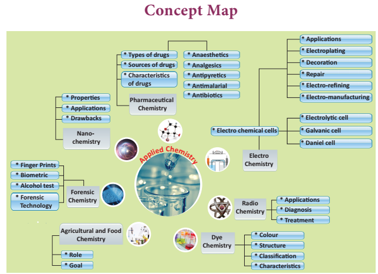
ICT CORNER Applied Chemistry
Experiment with radioactive elements to know about its half-life
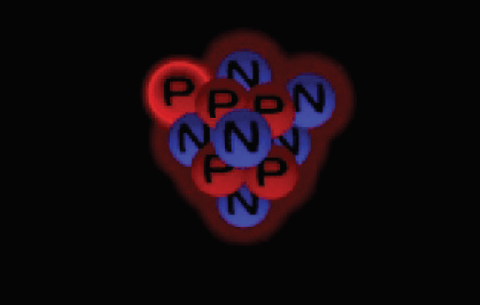
Steps
Use the given URL to open the simulation page and allow the “javascript” to play, if asks. Read the given description on how to perform the half-life simulation.
Click the “Years Passed” button to increase the years by 1000 and press “Count the Remaining Atom” to know how much of the atoms have become “Daughter atoms”.
Use the “Table/Graph” button situated below the description to record your observations.
Press the “video” button to view the process of degradation of radioactive atoms and its calculation
Radioactive Atoms Half-Life
URL: http://www.glencoe.com/sites/common_assets/science/virtual_labs/E18/E18.html

After completing this lesson, students will be able to:
understand the classification of animal kingdom.
identify and study the different groups of animals.
list out the general characteristics of animals based on grades of organization, types of symmetry, coelom and various body activity.
recognize that binomial classification has Latin and Greek words.
identify the first name as genus and second name as species.
recall the salient features of each phylum.
The variety of living organisms surrounding us is incomprehensible. Nearly 1.5 million species of organism which have been described are different from one another. The uniqueness is due to the diversity in the life forms whether it is microbes, plants or animals. Every organism exhibits variation in their external appearance, internal structure and behavior, mode of living etc. This versatile nature among the living animals forms the basis of diversity. The diversity among the living organisms can be studied in an effective way by arranging animals in an orderly and systematic manner. The study of various organisms would be difficult without a suitable method of classification.
The method of arranging organism into groups on the basis of similarities and differences is called classification. Taxonomy is the science of classification which makes the study of wide variety of organisms easier. It helps us to understand the relationship among different group of animals. The first systematic approach to the classification of living organisms was made by a Swedish botanist, Carolus Linnaeus. He generated the standard system for naming organisms in terms of genus, species and more extensive groupings using Latin terms.
Classification is the ordering of organism into groups on the basis of their similarities, dissimilarities and relationships. The five kingdom classification are Monera, Protista, Fungai, Plantae and Animalia. These groups are formed based on cell structure, mode of nutrition, body organization and reproduction. On the basis of hierarchy of classification, the organisms are separated into smaller and smaller groups which form the basic unit of classification.
Species: It is the lowest taxonomic category. For example, the large Indian parakeet Bracket OPEN Psittacula eupatra bracket closed and the green parrot Bracket OPEN Psittacula krameribracket closed are two different species of birds. They belong to different species eupatra and krameri and cannot interbreed.
Genus: It is a group of closely related species which constitute the next higher category called genus. For example, the Indian wolf Bracket OPEN Canis pallipes bracket closed and the Indian jackal Bracket OPEN Canis aure sbracket closed are placed in the same genus Canis.
Family: A group of genera with several common characters form a family. For example, leopard, tiger and cat share some common characteristics and belong to the larger cat family Felidae.
Order: A number of related families having common characters are placed in an order. Monkeys, baboons, apes and Man although belong to different families, are placed in the same order Primates. Since all these animals possess some common features, they are placed in the same order.
Class: Related or similar orders together form a class. The orders of different animals like those of rabbit, rat, bats, whales, chimpanzee and human share some common features such as the presence of skin and mammary glands. Hence, they are placed in class Mammalia.
Phylum: Classes which are related with one another constitute a phylum. The classes of different animals like mammals, birds, reptiles, frogs and fishes constitute Phylum Chordata which have a notochord or back bone.
Kingdom: It is the highest category and the largest division to which microorganisms, plants and animals belong to. Each kingdom is fundamentally different from one another, but has the same fundamental characteristics in all organisms grouped under that Kingdom.
The taxa of living organisms are in a hierarchy of categories as follows.
Kingdom
Phylum
Class
Order
Family
Genus
Species
We can divide the Animal kingdom based on the level of organization Bracket OPEN arrangement of cells bracket closed, body symmetry, germ layers and nature of seelam.
Level of organization: Animals are grouped as unicellular or multicellular based on cell, tissue, organ and organ system level of organization
Symmetry: It is a plane of arrangement of body parts. Radial symmetry and bilateral symmetry are the two types of symmetry. In radial symmetry the body parts are arranged around the central axis. If the animal is cut through the central axis in any direction, it can be divided into similar halves. Example Hydra, jelly fish and star fish. In bilateral symmetry, the body parts are arranged along a central axis. If the animal is cut through the central axis, we get two identical halves Example Frog.
Figure 17.1 Radial and Bilateral Symmetry image was given below

Germ layers Germ layers are formed during the development of an embryo. These layers give rise to different organs, as the embryo becomes an adult.
Organisms with two germ layers, the ectoderm and the endoderm are called

diploblastic animals. Example Hydra. Organisms with three germ layers, ectoderm, mesoderm and endoderm are called triploblastic animals. Example Rabbit
seelam: It is a fluid-filled body cavity. It separates the digestive tract from the body wall. A true body cavity or seelam is one that is located within the mesoderm. Based on the nature of the seelam, animals are divided into 3 groups.
1. Aseelomates do not have a body cavity Example Tapeworm.
2. Pseudoseelomates have a false body cavity Example Roundworm.
3. seelomates or Euseelomates have a true seelam Example Earthworm, Frog.
Animal Kingdom is further divided into two groups based on the presence or absence of notochord as below.
1. Invertebrata
2. car data Procardata and Vertebrata
Animals which do not possess notochord are called as Invertebrates or Non cardates. Animals which possess notochord or backbone are called as cardates. You have already studied the characters of single celled protozoans.
BOX ITEM OPEN
Notochord is a rod like structure formed on the mid-dorsal side of the body during embryonic development. Except primitive forms in which the notochord persists throughout life in all other animals it is replaced by a backbone. BOX ITEM ENDS
Figure 17.2 Types of seelam image was given below


Carolus Linnaeus introduced the method of naming the animals with two names known as binomial nomenclature. The first name is called genus and the first letter of genus is denoted in capital and the second one is the species name denoted in small letter. The binomial names of some common animals are as follows.
Common name Binomial name table was given below
Amoeba |
Amoeba proteus |
Hydra |
Hydra vulgaris |
Tapeworm |
Taenia solium |
Roundworm |
Ascaris lumbricoides |
Earthworm |
Lampito mauritii/ Perionyxexcavatus |
Leech |
Hirudinaria granulosa |
Cockroach |
Periplaneta americana |
Snail |
Pila globosa |
Starfish |
Asterias rubens |
Frog |
Rana hexadactyla |
Walllizard |
Podarcis muralis |
Crow |
Corvus splendens |
Peacock |
Pavo cristatus |
Dog |
Canis familiaris |
Cat |
Felis felis |
Tiger |
Panthera tigris |
Man |
Homo sapiens |
These are multicellular, non-motile aquatic organisms, commonly called as sponges. They exhibit cellular grade of organization. Body is perforated with many pores called ostia. Water enters into the body through ostia and leads to a canal system. It circulates water throughout the body and carries food, oxygen. The body wall contains spicules, which form the skeletal framework. Reproduction is by both asexual and sexual methods. Example - Euplectella, Sycon.


Euplectella Sycon
Figure 17.3 Pore bearers
seelenterata are aquatic organisms, mostly marine and few fresh water forms. They are multicellular, radially symmetrical animals, with tissue grade of organization. Body wall is diploblastic with two layers. An outer ectoderm and inner endoderm are separated by noncellular jelly like substance called mesoglea. It has a central gastrovascular cavity called seelenteron with mouth surrounded by short tentacles. The tentacles bear stinging cells called cnidoblast or nematocyst.
Figure 17 4 jelly fish image was given below

Many coelenterates exhibit polymorphism, which is the variation in the structure and function of the individuals of the same species. They reproduce both asexually and sexually. Example Hydra, Jellyfish.
They are bilaterally symmetrical, triploblastic, acoelomate Bracket OPEN without body cavity bracket closed animals. Most of them are parasitic in nature. Suckers and hooks help the animal to attach itself to the body of the host. Excretion occurs by specialized cells called flame cells. These worms are hermaphrodites having both male and female reproductive organs in a single individual. Example Liverfluke, Tapeworm.
Figure 17.5 Flat worms image was given below


Liverfluke Tapeworm
Aschelminthes are bilaterally symmetrical, triploblastic animals. The body cavity is a pseudocoelom. They exist as free-living soil forms or as parasites. The body is round and pointed at both the ends. It is unsegmented and covered by thin cuticle. Sexes are separate. The most common diseases caused by nematodes in human beings are elephantiasis and ascariasis. Example Ascaris, Wuchereria Figure 17.6 Round worms image was given below


These are bilaterally symmetrical, triploblastic, first true coelomate animals with organ-system grade of organization. Body is externally divided into segments called metameres joined by ring like structures called annuli. It is covered by moist thin cuticle. Setae and parapodia are locomotor organs. Sexes may be separate or united Bracket OPEN hermaphroditesbracket closed. Example Nereis, Earthworm, Leech.
Figure 17.7 Segmented worms image was given below


Earth worm Leech
Arthropoda is the largest phylum of the animal kingdom. They are bilaterally symmetrical, triploblastic and coelomate animals. The body is divisible into head, thorax and abdomen. Each thorasic segment bears paired jointed legs. Exoskeleton is made of chitin and is shed periodically as the animal grows. The casting off and regrowing of exoskeleton is called moulting.
Body cavity is filled with haemolymph Bracket OPEN blood bracket closed. The blood does not flow in blood vessels and circulates throughout the body Bracket OPEN open circulatory system bracket closed. Respiration is through body surface, gills or tracheae Bracket OPEN air tubes bracket closed. Excretion occurs by malphigian tubules or green glands. Sexes are separate. Example, Prawn, Crab, Cockroach, Millipede, Centipedes, Spider, Scorpion.
Figure 17.8 Animals with jointed legs image was given below


Centipede Millipede
BOX ITEM OPEN
Centipede means ‘hundred legs’. But most species have only 30 pairs. Millipedes have two pairs of legs on each segment. This name means ‘thousand legs’. But, most millipedes have only about a hundred.BOX ITEM ENDS
BOX ITEM OPEN
Identify the following pictures of Arthropods.

BOX ITEM ENDS
They are diversified group of animals living in marine, fresh water and terrestrial habitats. Body is bilaterally symmetrical, soft and without segmentation. It is divided into head, muscular foot and visceral mass. The foot helps in locomotion. The entire body is covered with fold of thin skin called mantle, which secretes outer hard calcareous shell. Respiration is through gills Bracket OPEN ctenidia bracket closed or lungs or both. Sexes are separate with larval stages during development. Example Garden snail, Octopus.
Figure 17.9 Garden Snail Image was given below

Octopus is the only invertebrate that is capable of emotion, empathy, cognitive function, self awareness, personality and even relationships with humans. Some speculate that without humans, octopus would eventually take our place as the dominate life form on earth.
Box item image was given

box item ends
They are exclusively free-living marine animals. These are triploblastic and true coelomates with organ-system grade of organization. Adult animals are radially symmetrical but larvae remain bilaterally symmetrical. A unique feature is the presence of fluid filled water vascular system. Locomotion occurs by tube feet. Body wall is covered with spiny hard calcareous ossicles. Example Star fish, Sea urchin.
Figure 17.10 Spiny Skinned Animals image was given below

 Star Fish Sea Urchin
Star Fish Sea Urchin
Hemichordates are marine organisms with soft, vermiform and unsegmented body. They are bilaterally symmetrical, coelomate animals with non-chordate and chordate features. They have gill slits but do not have notochord. They are ciliary feeders and mostly remain as tubiculous forms. Example Balanoglossus Bracket OPEN Acorn worms bracket closed.

Figure 17.11 Balanoglossus
Cardates are characterized by the presence of notochord, dorsal nerve cord and paired gill pouches. Notochord is a long rod like support along the back of the animal separating the gut and nervous tissue. All cardates are triploblastic and coelomate animals. Phylum Cardata is divided into two groups: Procardata and Vertebrata.
The prochordates are considered as the forerunners of vertebrates. Based on the nature of the notochord, procardata is classified into subphylum Urocardata and subphylum Cephalocardata.
Notochord is present only in the tail region of free-living larva. Adults are sessile forms and mostly degenerate. The body is covered with a tunic or test. Example Ascidian
Figure 17.12 Ascidian image was given below

Cephalocardates are small fish like marine cardates with unpaired dorsal fins. The notochord extends throughout the entire length of the body. Example Amphioxus
Figure 17.13 Amphioxus image was given below

This group is characterized by the presence of vertebral column or backbone. Notochord in an embryonic stage gets replaced by the vertebral column, which forms the chief skeletal axis of the body. Vertebrata are grouped into six classes.
Cyclostomes are jawless vertebrates Bracket OPEN mouth not bounded by jaws bracket closed. Body is elongated and eel like. They have circular mouth. Skin is slimy and scaleless. They are ectoparasites of fishes. Example Hagfish.
Figure 17.14 Lamprey image was given below

Fishes are poikilothermic Bracket OPEN cold-blooded bracket closed, aquatic vertebrates with jaws. The streamlined body is divisible into head, trunk and tail. Locomotion is by paired and median fins. Their body is covered with scales. Respiration is through gills. The heart is two chambered with an auricle and a ventricle. There are two main types of fishes.
Bracket OPEN 1 bracket closed Cartilaginous fishes, with skeleton made of cartilages Example Sharks, Skates.
Bracket OPEN 2 bracket closed Bony fishes with skeleton made of bones Example Carps, Mullets.
Figure 17.15 Shark image was given below

Box item OPEN
The smallest vertebrate, Philippine goby/dwarf pygmy goby is a tropical species fish found in brackish water and mangrove areas in south East Asia, measuring only 10 mm in length.

BOX ITEM ENDS
These are the first four legged Bracket OPEN tetrapods bracket closed vertebrates with dual adaptation to live in both land and water. The body is divisible into head and trunk. Their skin is moist and have mucus glands. Respiration is through gills, lungs, skin or buccopharynx. The heart is three chambered with two auricles and one ventricle. Eggs are laid in water. The tadpole larva, transforms into an adult. Example Frog, Toad.
Box item open
The Chinese giant salamander Andrias davidians is the largest amphibian in the world. Its length is about five feet and eleven inches. It weighs about 65 kg, found in Central and South China. box item ends

These vertebrates are fully adapted to live on land. Their body is covered with horny epidermal scales. Respiration is through lungs. The heart is three chambered with an exemption of crocodiles, which have four-chambered heart. Most of the reptiles lay their eggs with tough outer shell Example Calotes, Lizard, Snake, Tortoise, Turtle.
Figure 17.16 Calotes image was given below

Birds are homeothermic Bracket OPEN warm blooded bracket closed animals with several adaptations to fly. The spindle or boat shaped body is divisible into head, neck, trunk and tail. The body is covered with feathers. Forelimbs are modified into wings for flight. Hindlimbs are adapted for walking, perching or swimming. The respiration is through lungs, which have air sacs. Bones are filled with air Bracket OPEN pneumatic bones bracket closed, which reduces the body weight. They lay large yolk laden eggs. They are covered by hard calcareous shell. Example Parrot, Crow, Eagle, Pigeon, Ostrich .
Figure 17.17 Pigeon image was given below

Box item open
More to Know

State bird of Tamil Nadu
Common Emerald dove. Bracket OPEN Chalcophaps indica bracket closed box item ends
Mammals are warm-blooded animals. The skin is covered with hairs. It also bears sweat and sebaceous Bracket OPEN oil bracket closed glands. The body is divisible into head, neck, trunk and tail. Females have mammary glands, which secrete milk for feeding the young ones. The external ears or pinnae is present. Heart is four chambered and they breathe through lungs. Except egg laying mammals Bracket OPEN Platypus, and Spiny ant eater bracket closed, all other mammals give birth to their young ones Bracket OPEN viviparous bracket closed. Placenta is the unique characteristic feature of mammals.Example Rat, Rabbit, Man.
Classification of Phylum Chordata image was given below

Figure 17.18 Rabbit image was given below

Box item open

The gigantic Blue whale which is 35 meters long and 120 tons in weight is the biggest vertebrate animal. Box item ends
Classification is the ordering of organism into groups on the basis of their similarities, dissimilarities and relationships.
Animals are grouped as unicellular or multicellular based on cell, tissue, organ and organ system level of organization.
In radial symmetry the body parts are arranged around the central axis.
In bilateral symmetry, the body parts are arranged along a central axis.
seelam is a fluid-filled body cavity. It separates the digestive tract from the body wall. Animals which do not possess notochord structure are called as Invertebrates or Non- cardates.
Animals which possess notochord or backbone are called as Cardates.
The pro cardates are considered as the forerunner of vertebrates.
Aseelomates Animals which do not have a body cavity.
Amphibian Cold-blooded vertebrate animal of a class that comprises the frogs, toads, newts, salamanders.
Annelida Phylum that comprises the segmented worms which include earthworms and leeches.
Aves Vertebrates which comprises the birds.
seelomates Animals which have a true seelam Example Earthworm, Frog.
Classification Arrangement of groups of animals, the members of which have one or more characteristics in common.
Mammals Warm-blooded vertebrate animals that possess hairs, mammary glands and feed their young ones.
Pseudoseelomates False body cavity which is not bounded by true epithelial lining. Example Roundworm
Toads Anurans with smooth skin than that of frogs, terrestrial and leap rather than jump

1. Find the group having only marine members.
Bracket OPEN a bracket closed Mollusca Bracket OPEN b bracket closed seelenterata Bracket OPEN c bracket closed Echinodermata Bracket OPEN d bracket closed Porifera
2. Mesoglea is present in
Bracket OPEN a bracket closed Porifera Bracket OPEN b bracket closed Seelenterata Bracket OPEN c bracket closed Annelida Bracket OPEN d bracket closed Arthropoda
3. Which one of the following pairs is not a poikilothermic animal question mark
Bracket OPEN a bracket closed Fishes and Amphibians Bracket OPEN b bracket closed Amphibians and Aves
Bracket OPEN c bracket closed Aves and Mammals Bracket OPEN d bracket closed Reptiles and Mammals
4. Identify the animal having four chambered heart.
Bracket OPEN a bracket closed Lizard Bracket OPEN b bracket closed Snake Bracket OPEN c bracket closed Crocodile Bracket OPEN d bracket closed Calotes
5. The animal without skull is
Bracket OPEN a bracket closed Acrania Bracket OPEN b bracket closed Acephalia Bracket OPEN c bracket closed Apteria Bracket OPEN d bracket closed Aseelomate
6. Hermaphrodite organisms are
Bracket OPEN a bracket closed Hydra, Tape worm, Earthworm, Amphioxus
Bracket OPEN b bracket closed Hydra, Tape worm, Earthworm, Ascidian
Bracket OPEN c bracket closed Hydra, Tape worm, Earthworm, Balanoglossus
Bracket OPEN d bracket closed Hydra, Tape worm, Ascaris, Earthworm
7. Poikilothermic organisms are
Bracket OPEN a bracket closed Fish, Frog, Lizard, Man
Bracket OPEN b bracket closed Fish, Frog, Lizard, Cow
Bracket OPEN c bracket closed Fish, Frog, Lizard, Snake
Bracket OPEN d bracket closed Fish, Frog, Lizard, Crow
8. Air sacs and Pneumatic bones are seen in
Bracket OPEN a bracket closed fish Bracket OPEN b bracket closed frog Bracket OPEN c bracket closed bird Bracket OPEN d bracket closed bat
9. Excretory organ of tape worm is
Bracket OPEN a bracket closed flame cells Bracket OPEN b bracket closed nephridia Bracket OPEN c bracket closed body surface Bracket OPEN d bracket closed solenocytes
10. Water vascular system is found in
Bracket OPEN a bracket closed Hydra Bracket OPEN b bracket closed Earthworm Bracket OPEN c bracket closed Star fish Bracket OPEN d bracket closed Ascaris
1. The skeletal framework of Porifera is Dash
2. Ctenidia are respiratory organs in Dash
3. Skates are Dash fishes.
4. The larvae of an amphibian is Dash
5. Dash are jawless vertebrates.
6. Dash is the unique characteristic feature of mammal.
7. Spiny anteater is an example for Dash mammal.
1. Canal system is seen in coelenterates.
2. Hermaphrodite animals have both male and female sex organs.
3. Trachea are the respiratory organ of Annelida.
4. Bipinnaria is the larva of Mollusca.
5. Balanoglossus is a ciliary feeder.
6. Fishes have two chambered heart.
7. Skin of reptilians are smooth and moist.
8. Wings of birds are the modified forelimbs.
9. Female mammals have mammary glands.
PHYLUM EXAMPLES
Bracket OPEN A bracket closed seelenterata Bracket OPEN 1 bracket closed Snail
Bracket OPEN B bracket closed Platyhelminthes Bracket OPEN 2 bracket closed Starfish
Bracket OPEN C bracket closed Echinodermata Bracket OPEN 3 bracket closed Tapeworm
Bracket OPEN D bracket closed Mollusca Bracket OPEN 4 bracket closed Hydra
1. Define taxonomy.
2. What is nematocyst question mark
3. Why coelenterates are called diploblastic animals question mark
4. List the respiratory organs of amphibians.
5. How does locomotion take place in starfish question mark
6. Are jellyfish and starfish similar to fishes question mark If no justify the answer.
7. Why are frogs said to be amphibians question mark
1. Give an account on phylum Annelida.
2. Differentiate between flat worms and round worms question mark
3. Outline the flow charts of Phylum Cardata.
4. List five characteristic features of fishes.
5. Comment on the aquatic and terrestrial habits of amphibians.
6. How are the limbs of the birds adapted for avian life question mark
1. Describe the characteristic features of different Procardates.
2. Give an account on phylum Arthropoda.
1. Manual of Zoology Vol. 1. Part 1. Bracket OPEN Invertebrata bracket closed, M. Ekambaranatha Ayyar and T.N. Ananthakrishnan, Reprint 2003. S. Viswanathan Bracket OPEN Printers and Publishers bracket closed Pvt. Ltd Chennai.
2. Manual of Zoology Vol. 1. Part. 2. Bracket OPEN Invertebrata bracket closed, M. Ekambaranatha Ayyar and T.N. Ananthakrishnan, Reprint 2003. S. Viswanathan Bracket OPEN Printers and Publishers bracket closed Pvt. Ltd Chennai.
3. Manual of Zoology Vol. 2. Chordata M. Ekambaranatha Ayyar and T.N. Ananthakrishnan, Reprint 2003. S. Viswanathan Bracket OPEN Printers and Publishers bracket closed Private. Limited Chennai.
INTERNET RESOURCES
http://home.pcisys.net/~dlblanc/taxonomy. html
http://can-do.com/uci/lessons 98/Invertebrates.html
http://www.student.loretto.org/zoology/ chordates.html
Animal Kingdom
It includes Chordates and Invertebrates. Chordate includes Procardate and Vertebrate


After completing this lesson, students will be able:
know the different types of tissues and their morphology.
identify how tissues are organized in specific patterns to form organs.
understand how tissues perform life activities in plants and animals.
gain knowledge about the structural organisation of tissues.
get familiarized with the process, types and significance of cell division.
Unicellular organisms like bacteria and protozoans are made of single cells. On the other hand, multicellular organisms, like higher plants and animals, are composed of millions of different types of cells that are grouped into different levels of organization. Multicellular organisms have specialized cells, tissues, organs and organ systems that perform specific functions.
Group of cells positioned and designed to perform a particular function is called a tissue. An organ is a structure made up of a collection of tissues that carry out specialized functions. For example, in plants the root, stem and leaves are organs, whereas xylem and phloem are tissues. Similarly in animals stomach, for example, is an organ that consists of tissues made of epithelial cells, gland cells and muscle cells. In this chapter, you will learn about different types of plant and animal tissues and how they are modified to coordinate life activities.
In general, plant tissues are classified into two types namely:
1. Meristems or Meristematic tissues.
2. Permanent tissues
The term 'meristem' is derived from the greek word Meristos’ which means divisible or having cell division activity. Meristematic tissues are group of immature cells that are capable of undergoing cell division. In plants, meristem is found in zones where growth can take place. Example: apex of stem, root, leaf primordia, vascular cambium, cork cambium, etc.,
A bracket closed They are living cells.
B bracket closed Cells are small, oval, polygonal or round in shape.
C bracket closed They are thin walled with dense cytoplasm, large nuclei and small vacuoles.
D bracket closed They undergo mitotic cell division.
E bracket closed They do not store food materials.
On the basis of their position in the plant, meristems are of three types: Apical meristem, Intercalary meristem and Lateral meristem.
Figure 18.1 Longitudinal section of shoot apex showing location of meristems and young leaves. Image was given below

Apical meristem: These are found at the apices or growing points of root and shoot and bring about increase in length.
Intercalary meristem: It lies between the region of permanent tissues and is part of primary meristem. It is found either at the base of leaf Bracket OPEN Example pinus bracket closed or at the base of internodes Bracket OPEN Example grasses bracket closed.
Lateral Meristem: These are arranged parallel and causes the thickness of the plant part.
B. Functions Meristems are actively dividing tissues of the plant, that are responsible for primary Bracket OPEN elongation bracket closed and secondary Bracket OPEN thickness bracket closed growth of the plant.
Permanent tissues are those in which, growth has stopped either completely or for the time being. At times, they become meristematic partially or wholly. Permanent tissues are of two types, namely: simple tissue and complex tissue.
Simple tissues are homogeneous tissues composed of structurally and functionally similar cells. Example, Parenchyma, Collenchyma and Sclerenchyma.
Parenchyma: Parenchyma are simple permanent tissues composed of living cells. Parenchyma cells are thin walled, oval, rounded or polygonal in shape with well developed spaces among them. In aquatic plants, parenchyma possesses intercellular air spaces, and is named as Aerenchyma. When exposed to light, parenchyma cells may develop chloroplasts and are known as Chlorenchyma.
Figure 18.2 Types of Parenchyma image was given below


Parenchyma may store water in many succulent and xerophytic plants. It also serves the functions of storage of food reserves, absorption, buoyancy, secretion etc.,
Box item open
In potato, parenchyma vacuoles are filled with starch. In apple, parenchyma stores sugar
box item ends
Collenchyma: Collenchyma is a living tissue found beneath the epidermis. Cells are elongated with unevenly thickened walls Cells have rectangular oblique or tapering ends and persistent protoplast. They possess thick primary non-lignified walls. They provide mechanical support for growing organs.
Figure 18.3 Collenchyma image was given below

Sclerenchyma:
Sclerenchyma consists of thick walled cells which are often lignified. Sclerenchyma cells are dead and do not possess living protoplasts at maturity. Sclerenchyma cells are grouped into fibres and sclereids.
Fibres are elongated sclerenchymatous cells, usually with pointed ends. Their walls are lignified. Fibres are abundantly found in many plants. The average length of fibres is 1 to 3 mm, however in plants like Linum usitatissimum Bracket OPEN flax bracket closed, Cannabis sativa Bracket OPEN hemp bracket closed and Corchorus capsularis Bracket OPEN jute bracket closed, fibres are extensively longer, ranging from 20 mm to 550 mm.
Sclereids are widely distributed in plant body. They are usually broad, may occur in single or in groups. Sclereids are isodiametric, with liginified walls. Pits are prominent and seen along the walls. Lumen is filled with wall materials. Sclereids are also common in fruits and seeds.
18.4 Sclerenchyma Bracket OPEN a bracket closed Fibres, Bracket OPEN b bracket closed Sclereids image was given below


Complex tissues are made of more than one type of cells that work together as a unit. Complex tissues consist of parenchyma and sclerenchyma cells. However, collenchymatous cells are not present in such tissues. Common examples are xylem and phloem.
Xylem is a conducting tissue which conducts water, mineral nutrients upward from root to leaves. Xylem gives mechanical support to the plant body. Xylem is composed of: Bracket OPEN 1 bracket closed xylem tracheids Bracket OPEN 2 bracket closed xylem fibres Bracket OPEN 3 bracket closed xylem vessels and Bracket OPEN 4 bracket closed xylem parenchyma.
Xylem tracheids: These are elongated or tube-like dead cells with hard, thick and lignified walls. Their ends are tapering, blunt or chisel-like and devoid of protoplast. They have large lumen without any content. Their function is conduction of water and providing mechanical support to the plant
Figure 18.5 A. xylem longitudinal section B. xylem transverse section image was given below

Xylem fibres: These cells are elongated, lignified and pointed at both the ends. Xylem fibres provide mechanical support to the plant.
Xylem vessels: These are long cylindrical, tube like structures with lignified walls and wide central lumen. These cells are dead as these do not have protoplast. They are arranged in longitudinal series in which the partitioned walls Bracket OPEN transverse walls bracket closed are perforated, and so the entire structure looks-like a water pipe. Their main function is to transport of water and also to provide mechanical strength.
Xylem parenchyma: These are living and thin walled cells. The main function of xylem parenchyma is to store starch and fatty substances.
Figure 18.6 Longitudinal section of Phloem tissue image was given below

Phloem is a complex tissue and consists of the following elements: Sieve elements, Companion cells, Phloem fibres, and Phloem parenchyma.
Sieve elements: The conducting elements of phloem are collectively called as Sieve elements. Sieve tubes are elongated, tube-like slender cells placed end to end. The transverse walls at the ends are perforated and are known as sieve plates. The main function of sieve tubes is translocation of food, from leaves to the storage organs of the plants.
Companion cells: These are elongated cells attached to the lateral wall of the sieve tubes. A companion cell may be equal in length to the accompanying sieve tube element or the mother cell may be divided transversely forming a series of companion cells.
Phloem parenchyma: The phloem parenchyma are living cells which have cytoplasm and nucleus. Their function is to store food materials.
Table 18.1 Differences between Xylem and Phloem was given below
Xylem |
Phloem |
Conducts water and minerals. |
Conducts organic solutes or food materials. |
Conduction is mostly unidirectional That is, from roots to apical parts of the plant. |
Conduction may be bidirectional from leaves to storage organs and growing parts or from storage organs to growing parts of plants. |
Conducting channels are tracheids and vessels. |
Conducting channels are sieve tubes. |
Component of xylem include tracheid vessels, xylem parenchyma and xylem fibres. |
Components are sieve elements, companion cells, phloem parenchyma and phloem fibres. |
Phloem fibers: Sclerenchymatous cells associated with primary and secondary phloem are commonly called phloem fibers. These cells are elongated, lignified and provide mechanical strength to the plant body
Table 18.2 Differences between Meristematic tissue and Permanent tissue.was given below
Meristematic tissue |
Permanent tissue |
Cell wall is thin and elastic. |
Cell wall is thick. |
Component cells are small,spherical or polygonal and undifferentiated. |
Component cells are large, differentiated with different shapes. |
Cytoplasm is dense, and vacuoles are nearly absent. |
Usually large central vacuole is present in living permanent cells. |
Intercellular spaces absent. |
Intercellular spaces present. |
Nucleus is large and prominent. |
Nucleus is less conspicuous. |
Cells grow and divide regularly. |
Cells do not normally divide. |
Provides mechanical support and elasticity to the plant body. |
Provides only mechanical support. |
An assemblage of one or more types of specialized cells held together with extracellular material constitute the tissue. The study of tissues is known as Histology.
Simple tissue: A group of cells that are similar in origin, form, structure and work together to perform a specific function.
Compound tissue: A group of cells different in their structure and function but co-ordinate to perform a specific function
Animal tissues can be grouped into four basic types on the basis of their structure and functions.
a. Epithelial tissue. b. Connective tissue
c. Muscular tissue d. Nervous tissue
It is the simplest tissue composed of one or more layers of cells covering the external surface of the body and internal organs. The cells are arranged very close to each other with less extracellular material. Epithelial cells lie on a non-cellular basement membrane. The epithelial tissue generally lacks blood vessels. The epithelium is separated by the underlying connective tissue which provides it with nutrients. There are two types of epithelial tissues. Simple epithelium is composed of single layer of cells resting on a basement membrane. Compound epithelium is composed of several layers of cells. Only the cells of the deepest layer rest on the basement membrane.
1. The skin which forms the outer covering of the body protects the underlying cells from drying, injury and microbial infections.
2. They help in absorption of water and nutrients.
3. They are involved in elimination of waste products.
4. Some epithelial tissues perform secretory function Bracket OPEN Secretion of sweat, saliva, mucus and enzymes bracket closed.
It is formed of single layer of cells. It forms a lining for the body cavities and ducts. Simple epithelium is further divided into following types.
Figure 18.7 Squamous Epithelium image was given below

Squamous Epithelium: It is made up of thin, flat cells with prominent nuclei. These cells have irregular boundaries and bind with neighbouring cells. The squamous epithelium is also known as pavement membrane, which form delicate lining of the buccal cavity, alveoli of lungs, proximal tubule of kidneys and covering of the skin and tongue. It protects the body from mechanical injury, drying and invasion of germs.
Cuboidal Epithelium: It is composed of single layer of cubical cells. The nucleus is round and lies in the centre. This tissue is present in the thyroid vesicles, salivary glands, sweat glands and exocrine pancreas. It is also found in the intestine and tubular part of the nephron Bracket OPEN kidney tubules bracket closed as microvilli that increase the absorptive surface area. Their main function is secretion and absorption.
Figure 18.8 Cuboidal Epithelium image was given below

Columnar Epithelium: It is composed of a single layer of slender, elongated and pillar like cells. Their nuclei are located at the base. It is found lining the stomach, gall bladder, bile duct, small intestine, colon, oviducts and also forms the mucous membrane. They are mainly involved in secretion and absorption.
Figure 18.9 Columnar Epithelium image was given below

Ciliated Epithelium: Certain columnar cells bear numerous delicate hair like out growths called cilia and are called ciliated epithelium. Their function is to move particles or mucus in a specific direction over the epithelium. It is seen in the trachea of wind-pipe, bronchioles of respiratory tract, kidney tubules and fallopian tubes of oviducts.
Figure 18.10 Ciliated Epithelium image was given below

Glandular Epithelium: Epithelial cells are often modified to form specialized gland cells which secrete chemical substances at the epithelial surface. This lines the gastric glands, pancreatic tubules and intestinal glands.
Figure 18.11 Glandular epithelium image was given below

It consists of more than one layer of cells and gives a stratified appearance. Hence, they are also known as stratified epithelium. The main function of this epithelium is to give protection to the underlying tissues against mechanical and chemical stress. They also cover the dry surface of the skin, the moist surface of the buccal cavity and pharynx.
Box item open
Epithelial tissue in the skin functions as a water-proof membrane.
Box item ends
Figure 18.12 Compound Epithelium image was given below

Box item open
Rinse your mouth with water. Using a tooth pick or ice-cream stick, scrap superficial cells from inner side of the cheek and spread it on a clean glass slide. Dry the glass slide with the scrap cells taken from the inner side of cheek. Add two drops of methylene blue stain. Identify the cells under low and high power of the microscope. box item ends
It is one of the most abundant and widely distributed tissue. It provides structural frame work and gives support to different tissues forming organs. It prevents the organs from getting displaced by body movements.
The components of the connective tissue are the intercellular substance known as the matrix, connective tissue cells and fibres. Connective tissue is classified as follows:
Connective tissue proper Bracket OPEN Areolar and Adipose tissue bracket closed
Supportive connective tissue Bracket OPEN Cartilage and Bone bracket closed
Dense connective tissue Bracket OPEN Tendons and Ligaments bracket closed
Fluid connective tissue Bracket OPEN Blood and Lymph bracket closed
Figure 18.13 Areolar tissue image was given below

Connective tissue proper consist of collagen fibres, elastin fibres and fibroblast cells.
Areolar tissue: It has cells and fibres loosely arranged in a semi-fluid ground substance called matrix. It takes the form of fine threads crossing each other in every direction leaving small spaces called areolae. It joins skin to muscles, fills space inside organs and is found around muscles, blood vessels and nerves. It helps in repair of tissues after injury and fixes skin to underlying muscles.
Adipose Tissue: Adipose tissue is the aggregation of fat cells or adipocytes, spherical or oval in shape. It serves as fat reservoir.
Figure 18.14 Adipose tissue image was given below

They are found in subcutaneous tissue, between internal organs around the heart and kidneys. They act as shock absorbers around the kidneys and eye balls. They also regulate the body temperature by acting as insulator.
The supporting or skeletal connective tissues forms the endoskeleton of the vertebrate body which protect various organs and help in locomotion. The supportive tissues include cartilage and bone.
Cartilage: They are soft, semi-rigid, flexible and are less vascular in nature. The matrix is composed of large cartilage cells called chondrocytes. These cells are present in fluid filled spaces known as lacunae.
Cartilage is present in the tip of the nose, external ear, end of long bones, trachea and larynx. It provides support and flexibility to the body parts.
Figure 18.15 Cartilage image was given below

Bone It is solid, rigid and strong, non-flexible skeletal connective tissue. The matrix of the bone is rich in calcium salts and collagen fibres which gives the bone its strength. The matrix of the bone is in the form of concentric rings called lamellae. The bone cells present in lacunae are called osteocytes. They communicate with each other by a network of fine canals called canaliculi. The hollow cavities of spaces are called marrow cavities filled with bone marrow. They provide shape and structural framework to the body. Bones support and protect soft tissues and organs.
Figure 18.16 Transverse Section of Bone image was given below

3. Dense Connective Tissue:
It is a fibrous connective tissue densely packed with fibres and fibroblasts. It is the principal component of tendons and ligaments.
Tendons: They are cord like, strong, structures that join skeletal muscles to bones. Tendons have great strength and limited flexibility. They consist of parallel bundles of collagen fibres, between which are present rows of fibroblasts.
Figure 18.17 Tendon image was given below

Ligaments: They are highly elastic structures and have great strength which connect bones to bones. They contain very little matrix. They strengthen the joints and allow normal movement.
Figure 18.18 Ligament image was given below

Box item open
Sprain is caused by excessive pulling Bracket OPEN stretching bracket closed of ligament box item ends
4. Fluid connective tissue:
The blood and the lymph are the fluid connective tissues which link different parts of the body. The cells of the connective tissue are loosely spaced and are embedded in an intercellular matrix.
a. Blood

Blood contains corpuscles which are red blood cells Bracket OPEN erythrocytes bracket closed, white blood cells Bracket OPEN leucocytes bracket closed and platelets. In this fluid connective tissue, blood cells are present in a fluid matrix called plasma. The plasma contains inorganic salts and organic substances. It is a main circulating fluid that helps in the transport of nutrient substances.
Red blood corpuscles Bracket OPEN Erythrocytes bracket closed: The red blood corpuscles are circular, biconcave disc-like cells and lack nucleus when mature Bracket OPEN mammalian RBC bracket closed. They contain a respiratory pigment called haemoglobin which is involved in the transport of oxygen to tissues.
White blood corpuscles Bracket OPEN Leucocytes bracket closed: They are larger in size, contain distinct nucleus and are colourless. They are capable of amoeboid movement and play an important role in body’s defense mechanism. They engulf or destroy foreign bodies. WBC’s are of two types: Granulocytes and Agranulocytes. Granulocytes have irregular shaped nuclei and cytoplasmic granules. They include the neutrophils, basophils and eosinophils. Agranulocytes lack cytoplasmic granules and include the lymphocytes and monocytes.
Blood platelets: They are minute, anucleated, fragile fragments of giant bone marrow called mega karyocytes. They play an important role in blood clotting mechanism.
Figure 18.19 Blood cells image was given below

b. Lymph
Lymph is a colourless fluid filtered out of the blood capillaries. It consists of plasma and white blood cells. It mainly helps in the exchange of materials between blood and tissue fluids.
Muscular tissues are made of muscle cells and form the major part of contractile tissue. They are composed of numerous myofibrils. Each muscle is made up of many long cylindrical fibres arranged parallel to one another.
According to their structure, location and functions there are three main types of muscles: Skeletal muscle Bracket OPEN or bracket closed striated muscle, Smooth muscle Bracket OPEN or bracket closed non-striated muscle and Cardiac muscle.
Skeletal muscle: These muscles are attached to the bones and are responsible for the body movements and are called skeletal muscles. They work under our control and are also known as voluntary muscles. The muscle fibres are elongated, cylindrical, unbranched with alternating dark and light bands, giving them the striped or striated appearance. They possess many nuclei Bracket OPEN multinucleate bracket closed. For example they occur in the biceps and triceps of arms and undergo rapid contraction.
Smooth muscle: These muscles are spindle shaped with broad middle part and tapering ends. There is a single centrally located nucleus Bracket OPEN uninucleate bracket closed. These fibrils do not bear any stripes or striations and hence are called non-striated. They are not under the control of our will and so are called involuntary muscles. The walls of the internal organs such as the blood vessels, gastric glands, intestinal villi and urinary bladder contain this type of smooth muscle.
Cardiac muscle: It is a special contractile tissue present in the heart. The muscle fibres are cylindrical, branched and uninucleate. The branches join to form a network called as intercalated disc which are unique distinguishing features of the cardiac muscles. The contraction of cardiac muscle is involuntary and rhythmic.
Figure 18.19 Muscle tissue image was given below

Nervous tissue comprises of the nerve cells or neurons. They are the longest cells of the body. Neurons are the structural and functional units of the nervous tissue. The elongated and slender processes of the neurons are the nerve fibres. Each neuron consists of a cell body or cyton with nucleus and cytoplasm. The dendrons are short and highly branched protoplasmic processes of cyton. The axon is a single, long fibre like process that develops from the cyton and ends up with fine terminal branches.
Figure 18.20 Neuron image was given below

Box item open
Age of our body cells
Cells of the eye lens, nerve cells of cerebral cortex and most muscle cells last a life time but once dead are not replaced.
Epithelial cells lining the gut last only about 5 days.
Duration of cell replacement
Skin cells- about every 2 weeks.
Bone cells- about every 10 years.
Liver cells- about every 300 to 500 days.
Red blood cells last for about 120 days and are replaced. box item ends
They have the ability to receive stimuli from within or outside the body and send signals to different parts of the body.
Box item open
Nerve cells do not undergo cell division due to the absence of centrioles, but they are developed from glial cells by neurogenesis
box item ends
Are you aware that all living organisms start their life from a single cell question mark You may wonder how a single cell then goes to form such a large organism. All cells reproduce by division and division of cells into daughter cells is called cell division.
The three types of cell division that occur in animal cells are:
1. Amitosis - Direct Division
2. Mitosis - Indirect Division
3. Meiosis - Reduction Division
It is the simplest mode of cell division and it occurs in unicellular animals, ageing cells and in foetal membranes. During amitosis, nucleus elongates first, and a constriction appears in it which deepens and divides the nucleus into two. Followed by this cytoplasm divides resulting in the formation of two daughter cells.
Figure 18.21 Amitosis image was given below

It was first discovered by Fleming in 1879. In this cell division one parent cell divides into two identical daughter cells, each with a nucleus having the same amount of DNA same number of chromosomes and genes as the parent cells. It is also called as equational division.
Figure 18.22 Events of Mitosis image was given below

Mitosis consists of two events, they are:
1. Karyokinesis 2. Cytokinesis
Interphase: It is the resting phase of the nucleus. It is the interval between two successive cell divisions. The cell prepares itself for the next cell division.
The division of the nucleus into two daughter nuclei is called Karyokinesis. It consists of four phases. They are: Prophase, Metaphase, Anaphase and Telophase.
Prophase Bracket OPEN pro-first bracket closed: During this stage chromosomes become short and thick and are clearly visible inside the nucleus. Centrosome splits into centrioles and occupy opposite poles of the cell. Each centriole is surrounded by aster rays. Spindle fibres appear between the two centrioles. Nuclear membrane and nucleolus disappear gradually.
Metaphase Bracket OPEN meta – after bracket closed: The duplicated chromosomes arrange on the equatorial plane and form the metaphase plate. Each chromosome gets attached to a spindle fibre by its centromere. The centromere of each chromosome divides into two each being associated with a chromatid.
Anaphase Bracket OPEN ana – up, back bracket closed: The centromeres attaching the two chromatids divide and the two daughter chromatids of each chromosome separate and migrate towards the two opposite poles.
Telophase Bracket OPEN tele – end bracket closed: Each chromatid Bracket OPEN or bracket closed daughter chromosome lengthens, becomes thinner and turns into a network of chromatin threads. Spindle fibres breakdown and disappear. Nuclear membrane and nucleolus reappear in each daughter nucleus.
The division of the cytoplasm into two daughter cells by constriction of the cell membrane is called cytokinesis.
Figure 18.23 Cytokinesis image was given below

1. This equational division results in the production of diploid daughter cells Bracket OPEN 2 n bracket closed with equal distribution of genetic material Bracket OPEN DNA bracket closed.
2. In multicellular organisms growth, organ development and increase in body size are accomplished through the process of mitosis
3. Mitosis helps in repair of damaged and wounded tissues by renewal of the lost cells.
The term meiosis was coined by Farmer in 1905. It is the kind of cell division that produces the sex cells or the gametes. It is also called reduction division because the chromosome number is reduced to haploid Bracket OPEN n bracket closed from diploid Bracket OPEN 2n bracket closed. Meiosis produces four daughter cells from a parent cell.
Meiosis consists of two divisions. They are:
Heterotypic Division or First Meiotic Division
Homotypic Division or Second Meiotic Division
It divides the diploid cell into two haploid cells. The daughter cells resulting from this division are different from the parent cell in the chromosome number Bracket OPEN Heterotypic bracket closed. This consists of 5 stages:
a. Prophase 1 b. Metaphase 1
c. Anaphase 1 d. Telophase 1
e. Cytokinesis 1
Prophase 1 takes a longer duration and is sub divided into five stages. They are: Leptotene, Zygotene, Pachytene, Diplotene and Diakinesis.
Leptotene: The chromosomes become uncoiled and assume long thread like structures and take up a specific orientation inside the nucleus. They form a bouquet stage.
Zygotene Bracket OPEN Zygon-adjoining bracket closed: Two homologous chromosomes approach each other and begin to pair. Pairing of homologous chromosomes is called as synapsis.
Pachytene Bracket OPEN Pachus-thick bracket closed: The chromosomes are visible as long paired twisted threads. The pairs so formed are called bivalents. Each bivalent now contains four chromatids Bracket OPEN tetrad stage bracket closed
Homologous chromosomes of each pair begin to separate. They do not completely separate, but remain attached together at one or more points by X- shaped arrangements known as chiasmata. The chromatids break at these points and the broken segments may be interchanged Bracket OPEN crossing over bracket closed. As a result, the genetic recombination takes place.
Diplotene: Each individual chromosome of each bivalent begins to split longitudinally into two similar chromatids. The homologous chromosomes repel each other and separate. Chiasmata begin to move along the length of the chromosome from the centromere towards the end resulting in terminalization.
Diakinesis: The paired chromosomes are shortened and thickened. The nuclear membrane and nucleolus begin to disappear. Spindle fibres make their appearance.
The chromosomes move towards the equator and finally they orient themselves on the equator. The two chromatids of each chromosome do not separate. The centromere does not divide.
Each homologous chromosome with its two chromatids and undivided centromere move towards the opposite poles of the cell. This stage of the chromosome is called Diad.
The haploid number of chromosomes after reaching their respective poles become uncoiled and elongated. The nuclear membrane and the nucleolus reappear and thus two daughter nuclei are formed.
Figure 18.24 Events of Meiosis image was given below

The cytoplasmic division occurs and two haploid cells are formed.
In this division, the two haploid cells formed during first meiotic division divide into four haploid cells. The daughter cells are similar to parent cell in the chromosome number Bracket OPEN Homotypic bracket closed. It consists of five stages.
a. Prophase – 2 b. Metaphase – 2
c. Anaphase – 2 d. Telophase – 2
e. Cytokinesis – 2
The centriole divides into two, each one moves to opposite poles. Asters and spindle fibres appear. Nuclear membrane and nucleolus disappear.
The chromosomes get arranged on the equator. Two chromatids are separated.
The separated chromatids become daughter chromosomes and move to opposite poles.
The daughter chromosomes are centered. The nuclear membrane and the nucleolus appear.
Two cells are formed from each haploid daughter cell, resulting in the formation of four cells with haploid number of chromosomes.
The constant number of chromosomes in a given species is maintained by meiotic division.
Genetic valiation is produced due to crossing over within the species which is transmitted from one generation to next generation
Table 18.3 Differences between Mitosis and Meiosis was given below
Mitosis |
Meiosis |
Occurs in somatic cells. |
Occurs in reproductive cells. |
Involved in growth and occurs continuously throughout life. |
Involved in gamete formation only during the reproductively active age. |
Consists of single division. |
Consists of two divisions. |
Two diploid daughter cells are formed. |
Four haploid daughter cells are formed. |
The chromosome number in the daughter cell is similar to the parent cell Bracket OPEN 2 n bracket closed. |
The chromosome number in the daughter cell is just half Bracket OPEN n bracket closed of the parent cell. |
Identical daughter cells are formed. |
Daughter cells are not similar to the parent cell and are randomly assorted. |
In general plant tissues are classified into two types namely Meristems or Meristematic tissues and Permanent tissues.
Permanent tissues are of two types: simple tissue and complex tissue.
Simple tissues are homogeneous-composed of structurally and functionally similar cells. Example, Parenchyma, Collenchyma and Sclerenchyma.
Complex tissues are made of more than one type of cells that work together as a unit. They are Xylem and Phloem
Animal tissues can be grouped into four basic types on the basis of their structure and functions. Epithelial tissue, Connective tissue, Muscular tissue and Nervous tissue.
Simple epithelium formed of single layer of cells is divided into following types. They are squamous epithelium cuboidal epithelium, columnar epithelium, ciliated epithelium and glandular epithelium
Compound Epithelium consists of more than one layer of cells and gives a stratified appearance.
The three types of cell division that occur in animal cells are Amitosis, Mitosis and Meiosis.
Bivalent Homologous chromosomes before their duplication in meiosis.
Centromere kinetochore or primary constriction.
Chiasma
Point of contact and interchange between chromatids of two homologous chromosomes.
Chromatids
Two identical longitudinal halves of a chromosome which share a common centromere with a sister chromatid.
Diploid Cell having two complete sets of chromosomes.
Haploid Cell having a single complete set of chromosome.
Interphase Resting phase of the cell between two cell divisions.
Isodiametric Having equal diameter of cells or other structures.
Osteocytes Bone cells present between the lamellae in fluid filled spaces called lacunae.
Synapsis Pairing of homologous chromosomes during meiosis.
Tetrad
Four haploid cells arising from meiosis formed from four associated chromatids during synapsis.
1. The tissue composed of living thin walled polyhedral cell is
a. parenchyma b. pollenchyma c. pclerenchyma d. None of above
2. The fibres consists of
a. parenchyma b. sclerenchyma c. collenchyma d. None of above
3. Companion cells are closely associated with
a. sieve elements b. vessel elements c. trichomes d. guard cells.
4. Which of the following is a complex tissue question mark
a. Parenchyma b. Collenchyma c. Xylem d. Sclerenchyma
5. Aerenchyma is found in
a. epiphytes b. hydrophytes c. halophytes d. xerophytes
6. Smooth muscles occur in
a. uterus b artery c. vein d. All of the above
7. Nerve cell does not contains
a. axon b. nerve endings c. tendons d. dendrites
Sclereids |
Chlorenchyma |
Chloroplast |
Sclerenchyma |
Simple tissue |
Collenchyma |
Companion cell |
Xylem |
Trachieds |
Phloem |
1. dash tissues provide mechanical support to organs.
2. Parenchyma, collenchyma, Sclerenchyma are dash type of tissue.
3. dash and dash are complex tissues.
4. Epithelial cells with cilia are found in dash of our body.
5. Lining of small intestine is made up of dash
1. Epithelial tissue is protective tissue in animal body.
2. Bone and cartilage are two types of areolar connective tissues.
3. Parenchyma is a simple tissue.
4. Phloem is made up of tracheids.
5. Vessels are found in collenchyma.
1. What are intercalary meristems question mark How do they differ from other meristems question mark
2. What is complex tissue question mark Name the various kinds of complex tissues.
3. Mention the most abundant muscular tissue found in our body.State its function.
4. What is skeletal connective tissue question mark How is it helpful in the functioning of our body question mark
5. Why should gametes be produced by meiosis during sexual reproduction question mark
6. In which stage of mitosis the chromosomes align in an equatorial plate question mark How question mark
1. What are permanent tissues question mark Describe the different types of simple permanent tissues.
2. Write about the elements of Xylem.
3. List out the differences between mitosis and meiosis.
1. What is the consequence that occur if all blood platelets are removed from the blood question mark
2. Which are not true cells in the blood question mark Why question mark
1. Pandey B.P. -Plant Anatomy. S.Chand and Company Ltd, New Delhi.
2. Verma P.S. and Agarwal V.K. -Cytology. S.Chand and Company Ltd, New Delhi.
https://www.britannica.com/science
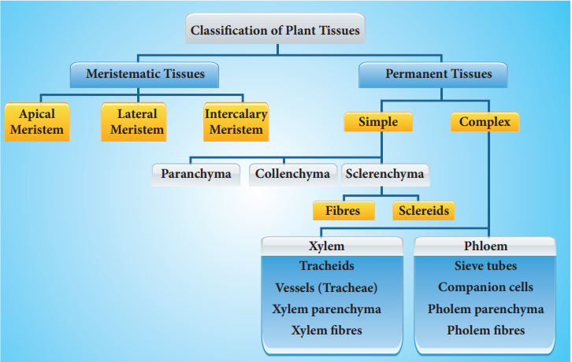
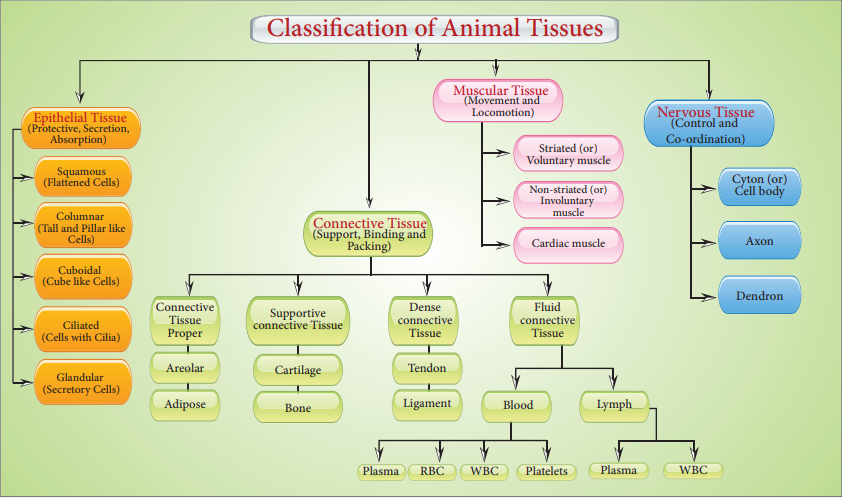
ICT CORNER Tissues and Organs
Explore this activity to know about the various types of tissues
Step 1: Copy and paste the link given below or type the URL in the browser. Allow ‘Adobe Flash Player’ to run in the system.
Step 2: Then choose an organ from the list to know about the tissues that are in a particular organ.
Step 3: Keep selecting the tissues by clicking the ‘Use this’ option, if you need that particular tissue for that organ.
Step 4: Once you finish selecting the tissues you will find a pop-up called ‘Happy with this choice.’ Click on it to know whether your choice is correct or you should try again. In this way you can build different organs.
Browse in the link:
URL: https://www.centreofthecell.org/learn-play/games/build-an-organ/

After completing this lesson, students will be able to:
know that plants too have certain autonomic movements.
understand different types of movement in plants.
differentiate tropic movement from nastic movement.
gain knowledge on transpiration.
understand that plants produce their food through the process of photosynthesis.
understand the process of transpiration.
Animals move in search of food, shelter and for reproduction. Do plants show such movement question mark Have you observed the leaves of Mimosa pudica Bracket OPEN touch-me-not plant bracket closed closes on touching, whereas Helianthus annuus Bracket OPEN sunflower bracket closed follows the path of the sun from dawn to dusk, Bracket OPEN from east to west bracket closed. These movements are triggered by an external stimuli. Unlike animals, plants do not move on their own from one place to another, but can move their body parts for getting sunlight, water and nutrients. They are sensitive to external factors like light, gravity, temperature etc. In this lesson, we will study about various movements in plants, photosynthesis and transpiration.
Tropism is a unidirectional movement of a whole or part of a plant towards the direction of stimuli.
Based on the nature of stimuli, tropism can be classified as follows.
Phototropism: Movement of a plant part towards light. Example shoot of a plant.
Geotropism: Movement of a plant in response to gravity. Example root of a plant.
Hydrotropism: Movement of a plant or part of a plant towards water. Example root of a plant.
Thigmotropism: Movement of a plant part due to touch. Example climbing vines.
Chemotropism: Movement of a part of plant in response to chemicals. Example growth of a pollen tube in response to sugar present on the stigma.
Tropism is generally termed positive if growth is towards the signal and negative if it is away from the signal. Shoot of a plant moves towards the light, the roots move away. Thus the shoots are positively phototropic.


Figure 19.1 Positive phototropism Bracket OPEN Negatively geotropic bracket closed
Usually shoot system of a plant is positively phototropic and negatively geotropic and root system is negatively phototropic and positively geotropic.
Figure 19.2 Negative phototropism image.was given below

Bracket OPEN Positively geotropic bracket closed
Some halophytes produce negatively geotropic roots Bracket OPEN Example Rhizophora bracket closed. These roots turn 180 degree upright for respiration.
Image was given below

Nastic movements are non-directional response of a plant or part of a plant to stimulus. Based on the nature of stimuli, nastic movements are classified as Photonasty and Thigmonasty .
Photonasty: Movement of a part of a plant in response to light. Example Taraxacum officinale, blooms in morning and closes in the evening. Similarly, Ipomea alba Bracket OPEN Moon flower bracket closed, opens in the night and closes during the day.
Figure 19.3 Photonasty in Moon flower Image was given below.

Thigmonasty: Movement of a part of plant in response to touch. Example Mimosa pudica, folds leaves and droops when touched. It is also known as Seismonasty.
Figure 19.4 Thigmonasty in Mimosa pudica image was given below

Box item OPEN
Take a glass trough and fill it with sand. Keep a flower pot containing water, plugged at the bottom at the centre of the glass trough. Place some soaked pea or bean seeds around the pot in the sand. What do you observe after 6 or 7 days question mark Record your observation. box item ends

BOX ITEM OPEN
Take pea seeds soaked in water overnight. Wait for the pea seeds to germinate. Once the seedling has grown put it in a box with an opening for light on one side. After few hours, you can clearly see how the stem has bent and grown towards the light. Box item ends
Box item OPEN
The Venus Flytrap Bracket OPEN Dionaea muscipula bracket closed presents a spectacular example of thigmonasty. It exhibits one of the fastest known nastic movement.

Box item ends
Table 19.1 Differences between Tropic and Nastic movements table was given below
Tropic movements |
Nastic movements |
Unidirectional response to the stimulus. |
Non-directional response to the stimulus. |
Growth dependent movements. |
Growth independent movements. |
More or less permanent and irreversible. |
Temporary and reversible. |
Found in all plants. |
Found only in a few specialized plants. |
Slow action. |
Immediate action. |
Thermonasty: Movement of part of a plant is associated with change in temperature. Example Tulip flowers bloom as the temperature increases.
Figure 19.5 Thermonasty in Tulip image was given below

‘Photo’ means ‘light’ and ‘synthesis’ means ‘to build’. Thus photosynthesis literally means ‘building up with the help of light’. During this process, the light energy is converted into chemical energy. Green plants are autotrophic in their mode of nutrition because they prepare their food materials through a process called photosynthesis. The overall equation of photosynthesis can be given as below:
6 C O2 plus 12 H 2O Bracket OPEN Carbon dioxide and Water bracket closed in the presence of Sunlight and Chlorophyll gives C6H12O6 plus 6H2O plus 6O2 Bracket OPEN Glucose and Water and Oxygen gas bracket closed
BOX ITEM OPEN
Do the insects also trap solar energy question mark Tel Aviv University Scientists have found out that Vespa orientalis Bracket OPEN Oriental Hornets bracket closed have similar capabilities to trap solar energy. They have a yellow patch on its abdomen and an unusual cuticle structure which is a stack of 30 layers thick. The cuticle does not contain chlorophyll but it contains the yellow light sensitive pigment called xanthopterin. This works as a light harvesting molecule transforming light energy into electrical energy. Box item ends
The end product of photosynthesis is glucose which will be converted into starch and stored in the plant body. Plants take in carbon dioxide for photosynthesis; but for its living, plants also need oxygen to carry on cellular respiration.
Box item open
Pluck a variegated leaf from Coleus plant kept in sunlight. Destarch it by keeping in dark room for 24 hours. Draw the picture of this leaf and mark the patches of cholorphyll on the leaf. Immerse the leaf in boiling water followed by alcohol and test it for starch using iodine solution.Record your observation.
Image was given below

Box item ends
Box item open
Place a potted plant in a dark room for about 2 days to destarch its leaves. Cover one of its leaves with the thin strip of black paper as shown in the picture. make sure that the leaf is covered on both sides. Keep the potted plant in bright sunlight for 4 to 6 hours. Pluck the selected covered leaf and remove the black paper. Immerse the leaf in boiling water for a few minutes and then in alcohol to remove chlorophyll. Test the leaf now with iodine solution for the presence of starch. The covered part of the leaf does not turn blue-black whereas the uncovered part of the leaf turns blue-black colour. Why are the changes in colour noted in the covered and uncovered part of the leaf question mark
Image was given below

Box item ends
These activities show that certain things are necessary for photosynthesis. They are:
1. Chlorophyll Green pigment in leaves
2. Water
3. Carbon dioxide Bracket OPEN from air bracket closed
4. Sun light
The loss of water in the form of water vapour from the leaf of the plant body is called as transpiration. The leaves have tiny, microscopic pores called stomata. Water evaporates through these stomata. Each stomata is surrounded by guard cells. These guard cells help in regulating the rate of transpiration by opening and closing of stomata.
Figure 19.6 Structure of Stomata Image was given below

There are three types of transpiration:
Stomatal transpiration: Loss of water from plants through stomata. It accounts for 90 to 95 percent of the water transpired from leaves.
Cuticular transpiration: Loss of water in plants through the cuticle.
Lenticular transpiration: Loss of water from plants as vapour through the lenticels. The lenticels are tiny openings that protrude from the barks in woody stems and twigs as well as in other plant organs.
But transpiration is necessary for the following reasons.
1. It creates a pull in leaf and stem.
2. It creates an absorption force in roots.
3. It is necessary for continuous supply of minerals.
4. It regulates the temperature of the plant.
Box item open
Take a plastic bag and tie it over a leaf and place the plant in light. You can see water condensing inside the plastic bag. The water is let out by the leaves. Why does this occur question mark
image was given below

Box item ends
How does the plant get air question mark The leaves have minute pores called stomata through which the exchange of air takes place. These minute pores can be seen through a microscope. Air exchange takes place continuously through the stomata. Plants exchange gases Bracket OPEN C O2 to O2 bracket closed continuously through these stomata. You will study more about these physiological process in your higher classes.
1. Growth movement whose direction is determined by the direction of the stimulus is called Tropism.
2. Non-directional, response of a plant part to stimulus is called nastic movement.
3. The process by which plants prepare their food material is called photosynthesis.
4. The loss of water in the form of water vapour from the aerial parts of the plant body is called transpiration.
5. Stomata are minute opening on the leaves.
Phototropism Unidirectional movement of a plant part to light stimulus.
Geotropism Response of a plant part to gravity stimulus.
Hydrotropism Response of a plant part to water stimulus.
Thigmotropism Response of a plant part to touch stimulus.
Chemotropism Response of a plant part to chemical stimulus.
Thigmonasty Non-directional movement of a plant part in response to touch of an stimulus.
Photonasty Non-directional movement of a plant part in response to light stimulus

1. The tropic movement that helps the climbing vines to find a suitable support is dash
a. Phototropism b. Geotropism c. Thigmotropism d. Chemotropism
2. The chemical reaction occurs during photosynthesis is dash
a. C O2 is reduced and water is oxidized
b. water is reduced and C O2 is oxidized
c. both C O2 and water are oxidized
d. both C O2 and water are produced
3. The bending of root of a plant in response to water is called dash
a. Thigmonasty b. Phototropism c. Hydrotropism d. Photonasty
4. A growing seedling is kept in the dark room. A burning candle is placed near it for a few days. The tip part of the seedling bends towards the burning candle. This is an example of dash
A bracket closed Chemotropism b bracket closed Geotropism c bracket closed Phototropism d bracket closed Thigmotropism
5. The root of the plant is dash
1 bracket closed positively phototropic but negatively geotropic
2 bracket closed positively geotropic but negatively phototropic
3 bracket closed negatively phototropic but positively hydrotropic
4 bracket closed negatively hydrotropic but positively phototropic
A bracket closed Bracket OPEN 1 bracket closed and Bracket OPEN 2 bracket closed b bracket closed Bracket OPEN 2 bracket closed and Bracket OPEN 3bracket closed c bracket closed Bracket OPEN 3 bracket closed and Bracket OPEN 4 bracket closed d bracket closed Bracket OPEN 1 bracket closed and Bracket OPEN 4 bracket closed
6. The non-directional movement of a plant part in response to temperature is called dash
A bracket closed Thermotropism b bracket closed Thermonasty c bracket closed Chemotropism d bracket closed Thigmonasty
7. Chlorophyll in a leaf is required for dash
A bracket closed photosynthesis b bracket closed tropic movement c bracket closed transpiration d bracket closed nastic movement
8. Transpiration takes place through dash
A bracket closed fruit b bracket closed seed c bracket closed flower d bracket closed stomata
1. The shoot system grows upward in response to dash
2. dash is positively hydrotropic as well as positively geotropic.
3. The green pigment present in the plant is dash
4. The solar tracking of sunflower in accordance with the path of sun is due to dash
5. The response of a plant part towards gravity is dash
6. Plants take in carbon di oxide for photosynthesis but need dash for their living
Column A Column B
Column A Roots growing downwards into soil. Column B Positive phototropism
Column A Shoots growing towards the light. Column B Negative geotropism
Column A Shoots growing upward. Column B Negative phototropism
Column A Roots growing downwards away from light. Column B Positive geotropism
1. The response of a part of plant to the chemical stimulus is called phototropism.
2. Shoot is positively phototropic and negatively geotropic.
3. When the weather is hot, water evaporates lesser which is due to opening of stomata.
4. Photosynthesis produces glucose and carbon dioxide.
5. Photosynthesis is important in releasing oxygen to keep the atmosphere in balance.
6. Plants lose water when the stomata on leaves are closed.
1. What is nastic movement question mark
2. Name the plant part
A bracket closed Which bends in the direction of gravity but away from the light.
B bracket closed Which bends towards light but away from the force of gravity.
3. Differentiate phototropism from photonasty.
4. Photosynthesis converts energy X into energy Y.
A bracket closed What are X and Y question mark
B bracket closed Green plants are autotrophic in their mode of nutrition. Why question mark
5. Define transpiration.
6. Name the cell that surrounds the stoma.
1. Give the technical terms for the following:
A bracket closed Growth dependent movement in plants.
B bracket closed Growth independent movement in plants.
2. Explain the movement seen in Pneumatophores of Avicennia.
3. Fill in the blanks:
An equation was given below

4. What is chlorophyll question mark
5. Name the part of plant which shows positive geotropism. Why question mark
6. What is the difference between movement of flower in sunflower plant and closing of the
leaves in the Mimosa pudica question mark
7. Suppose you have a rose plant growing in a pot, how will you demonstrate transpiration in it question mark
8. Mention the differences between stomatal and lenticular transpiration
9. To which directional stimuli do Bracket OPEN a bracket closed roots respond Bracket OPEN b bracket closed shoots respond question mark
1. Differentiate between tropic and nastic movements
2. How will you differentiate the different types of transpiration question mark
1. There are 3 plants A, B and C. The flowers of A open their petals in bright light during the day but closes when it gets dark at night. On the other hand, the flowers of plant B open their petals at night but closes during the day when there is bright light. The leaves of plant C fold up and droop when touched with fingers or any other solid object.
A bracket closed Name the phenomenon shown by the flowers of plant A and B.
B bracket closed Name one plant each which behaves like the flowers of plant A and B.
C bracket closed Name the phenomenon exhibited by the leaves of plant C.
D bracket closed Name the plant which behaves like the leaves of plant 'C' question mark
2. Imagine that student A studied the importance of certain factors in photosynthesis. He took a potted plant and kept it in dark for 24 hours. In the early hours of the next morning, he covered one of the leaves with dark paper in the centre only. Then he placed the plant in sunlight for a few hours and tested the leaf which was covered with black paper for starch.
A bracket closed What aspect of photosynthesis was being investigated question mark
B bracket closed Why was the plant kept in the dark before the experiment question mark
C bracket closed How will you prove that starch is present in the leaves question mark
D bracket closed Name the raw materials needed for photosynthesis.
1. Devlin and Witham, 1986. Plant Physiology, 1st edition
2. B.P. Pandey 2003 Modern Practical Botany Vol. II.
3. V.K. Jain 2003 Plant physiology.
http://www.biology.arizona.edu/default.html
Plant Movements


After completing this lesson, student will be able to:
define the terms digestion, excretion and reproduction.
understand the various parts of the alimentary canal and the process of digestion.
understand the role of enzymes in the process of digestion.
know the organs involved in the process of excretion.
understand the role of skin in excretion.
understand the parts and functions of excretory system.
learn the functions of male and female human reproductive system
Living organisms are evolved from the simplest form to complex level of organization. Cells are the basic fundamental units of an organism. These are grouped to form tissues, the tissues into organs and the organs form the organ systems forming an entire organism. The different organs and organ systems of an organism function by depending on one another with harmonious coordination. When we ride a bicycle, our muscular system and skeletal system work together to move our arms for steering and legs for pedalling. Our nervous system directs our arms and legs to work. Simultaneously, respiratory, digestive and circulatory systems work to provide energy to the muscles. All the systems work together in coordination to maintain the body in a homeostatic condition of an organism.
Organ and organ systems have appeared first in the Phylum platyhelminthes and continues till mammals. Similar groups of cells form tissues like muscle tissue, nervous tissue, etc. Tissues are organised to form organs like heart, brain, etc. Two or more organs together form organ systems and perform common functions like digestion, circulation, nerve impulse transmission in coordination via digestive system, circulatory system, nervous system respectively. Division of labour is found among the various organ systems.
In this chapter we shall learn about the structure and functions of various organ systems like digestive system, excretory system and reproductive system in human beings.
Table 20.1 Organ Systems in Animals
Organ Systems |
Organs |
Functions |
Integumentary system |
Skin and skin glands |
Protection, Excretion, etc. |
Skeletal system |
Skull, Vertebral column, Sternum, Girdles and Limbs |
Give support, shape and form to the body. |
Muscular system |
Muscle fibres |
Contraction and relaxation resulting movement. |
Nervous system |
Brain, spinal cord and nerves. |
Conduction of nerve impulse. |
Circulatory system |
Heart, blood and blood vessels |
Transportation of respiratory gases, nutritive substances and waste products. |
Respiratory system |
Respiratory tract and Lungs |
Breathing |
Digestive system |
Digestive tract and digestive glands |
Digestion, Absorption, Egestion |
Excretory system |
Kidneys, ureters urinary bladder and urethra. |
Elimination of nitrogenous waste products. |
Reproductive system |
Testes and ovary |
Gamete formation and development of secondary sexual characters. |
Sensory system |
Eyes nose ears tongue and skin |
Sight smell hearing taste and touch. |
Endocrine system |
Pituitary, Thyroid, Parathyroid, Adrenals, Pancreas, Pineal body, Thymus, Reproductive glands, etc. |
Co-ordinates the functions of all organ systems. |
The food we eat contain not only simple substances like vitamins and minerals but also complex substances such as carbohydrates, proteins and fats. The body cannot use these complex substances unless they are converted into simple substances. The five stages of nutrition process include ingestion, digestion, absorption, assimilation and egestion.
The process of nutrition begins with intake of food, called ingestion. The breakdown of large complex insoluble food molecules into small, simpler soluble and diffusible particles by the action of digestive enzymes is called digestion. Parts of the body concerned with the digestion of food form the digestive system.
Figure 20.1 Parts of human digestive system Image was given below

The digestive system consists of two sets of organs. They are as follows:
Alimentary canal Bracket OPEN digestive tract/gastrointestinal tract bracket closed: It is a passage starting from the mouth and ending with the anus.
Digestive glands: Glands associated with the alimentary canal are the salivary glands, gastric glands, pancreas, liver and intestinal glands.
Alimentary canal is a muscular coiled, tubular structure. It consists of mouth, buccal cavity, pharynx, oesophagus, stomach, small intestine Bracket OPEN consisting of duodenum, jejunum and ileum bracket closed, large intestine Bracket OPEN consisting of caecum, colon and rectum bracket closed and anus.
Mouth: The mouth leads into the buccal cavity. It is bound by two soft, movable upper and lower lips. The buccal cavity is a large space bound above by the palate Bracket OPEN which separates the wind pipe and food tube bracket closed, below by the throat and on the sides by the jaws. The jaws bear teeth.
Teeth: Teeth are hard structures meant for holding, cutting, grinding and crushing the food. In human beings two sets of teeth Bracket OPEN Diphyodont bracket closed are developed in their life time. The first appearing set of 20 teeth called temporary or milk teeth are replaced by the second set of thirty two permanent teeth, sixteen in each jaw. Each tooth has a root fitted in the gum Bracket OPEN Theocodont bracket closed. Permanent teeth are of four types Bracket OPEN Heterodont bracket closed, according to their structure and function namely incisors, canines, premolars and molars.
Table 20.2 Types of teeth and their functions table was given below
Types of teeth |
Number of teeth |
Functions |
Incisors |
8 |
Cutting and biting |
Canines |
4 |
Tearing and piercing |
Premolars |
8 |
Crushing and grinding |
Molars |
12 |
Crushing, grinding and mastication |
Dental formula represents the number of different type of teeth present in each half of a jaw Bracket OPEN upper and lower jaw bracket closed. The types of teeth are denoted as incisors Bracket OPEN I bracket closed, canine Bracket OPEN c bracket closed, premolars Bracket OPEN p m bracket closed and molars Bracket OPEN m bracket closed. The dental formula is presented as:
For Milk teeth in each half of upper and lower jaw:
2,1,2 divided by 2,1,2 = 10 into 2 = 20
For Permanent teeth in each half of upper and lower jaw:
2,1,2,3 divided by 2,1,2,3 = 16 into 2 = 32
Figure 20.2 Different kinds of teeth image was given below

Box item open
Look at the pictures given below and answer the questions that follow:

1. Are the teeth of animals similar to ours question mark
2. How is the shape of their teeth related to their food habit question mark box item ends
Salivary glands: Three pairs of salivary glands are present in the mouth cavity. They are: parotid glands, sublingual glands and submaxillary or submandibular glands
a. Parotid glands are the largest salivary glands, which lie in the cheeks in front of the ears Bracket OPEN in Greek Par near otid ear bracket closed.
b. Sublingual glands are the smallest glands and lie beneath the tongue.
c. Submaxillary or Submandibular glands lie at the angles of the lower jaw.
Figure 20.3 Salivary glands image was given below

The salivary glands secrete a viscous fluid called saliva, approximately 1.5 liters per day. It digests starch by the action of the enzyme ptyalin Bracket OPEN amylase bracket closed in the saliva which converts starch Bracket OPEN polysaccharide bracket closed into maltose Bracket OPEN disaccharide bracket closed. Saliva also contain an antibacterial enzyme called lysozyme.
Tongue: The tongue is a muscular, sensory organ which helps in mixing the food with the saliva. The taste buds on the tongue help to recognize the taste of food. The masticated food in the buccal cavity becomes a bolus which is rolled by the tongue and passed through pharynx into the oesophagus by swallowing. During swallowing, the epiglottis Bracket OPEN a muscular flap-like structure at the tip of the glottis, beginning of trachea bracket closed closes and prevents the food from entering into trachea Bracket OPEN wind pipe bracket closed.
Pharynx: The pharynx is a membrane lined cavity behind the nose and mouth, connecting them to the oesophagus. It serves as a pathway for the movement of food from mouth to oesophagus.
Oesophagus:
Oesophagus or the food pipe is a muscular-membranous canal about 22 cm in length. It conducts food from pharynx to the stomach by peristalsis Bracket OPEN wave-like movement bracket closed produced by the rhythmic contraction and relaxation of the muscular walls of alimentary canal.
Stomach: The stomach is a wide J-shaped muscular organ located between oesophagus and the small intestine. The gastric glands present in the inner walls of the stomach secrete gastric juice. The gastric juice is colourless, highly acidic, containing mucus, hydrochloric acid and enzymes rennin Bracket OPEN in infants bracket closed and pepsin.
Inactive pepsinogen is converted to active pepsin which acts on the proteins in the ingested food. Hydrochloric acid kills the bacteria swallowed along with food and makes the medium acidic while the mucus protects the wall of the stomach. The action of the gastric juice and churning of food in the stomach convert the bolus into a semi digested food called chyme. The chyme moves to the intestine slowly through the pylorus.
Box item open
Rennin: Causes curdling of milk protein caesin and increases digestion of proteins.
Renin: Converts angiotensinogen to angiotensin and regulate the absorption of water and Na plus from glomerular filtrate. Box item ends
Small intestine: The small intestine is the longest part of the alimentary canal, which is a long coiled tube measuring about 5 to 7 m. It comprises three parts- duodenum, jejunum and ileum.
a. Duodenum is C-shaped and receives the bile duct Bracket OPEN from liver bracket closed and pancreatic duct Bracket OPEN from pancreas bracket closed.
b. Jejunum is the middle part of the small intestine. It is a short region of the small intestine. The secretion of the small intestine is intestinal juice which contains the enzymes like sucrase, maltase, lactase and lipase.
c. Ileum forms the lower part of the small intestine and opens into the large intestine. Ileum is the longest part of the small intestine. It contains minute finger like projections called villi Bracket OPEN one millimeter in length bracket closed where absorption of food takes place. They are approximately 4 million in number. Internally, each villus contains fine blood capillaries and lacteal tubes,
The small intestine serves both for digestion and absorption. It receives the bile from liver and the pancreatic juice from pancreas in the duodenum. The intestinal glands secrete the intestinal juices.
Box item open
William Beaumont Bracket OPEN 1785-1853 bracket closed

William Beaumont was a surgeon who was known as the ‘Father of Gastric Physiology’. Based on his observations he concluded that the stomach’s strong hydrochloric acid played a key role in digestion. Box item ends
It is the largest digestive gland of the body which is reddish brown in colour. It is divided into two main lobes, right and left lobes. The right lobe is larger than the left lobe. On the under surface of the liver, gall bladder is present. The liver cells secrete bile which is temporarily stored in the gall bladder. Bile is released into small intestine when food enters in it. It has bile salts Bracket OPEN sodium glycolate and sodium tauraglycolate bracket closed and bile pigments Bracket OPEN bilirubin and biliviridin bracket closed. Bile salts help in the digestion of fats by bringing about their emulsification Bracket OPEN conversion of large fat droplets into small ones bracket closed.
Controls blood sugar and amino acid levels.
Synthesizes foetal red blood cells.
Produces fibrinogen and prothrombin, used for clotting of blood.
Destroys red blood cells.
Stores iron, copper, vitamins A and D
Produces heparin Bracket OPEN an anticoagulant bracket closed.
Excretes toxic and metallic poisons.
Detoxifies substances including drugs and alcohol.
Pancreas: It is a lobed, leaf shaped gland situated between the stomach and duodenum. Pancreas acts both as an exocrine gland and as an endocrine gland. The exocrine part of the pancreatic gland secretes pancreatic juice which contains three enzymes- lipase, trypsin and amylase which acts on fats, proteins and starch respectively. The gland’s upper surface bears the islets of Langerhans which have endocrine cells and secrete hormones in which alpha Bracket OPEN alpha bracket closed cells secrete glucagon and β Bracket OPEN beta bracket closed cells secrete insulin.
Figure 20.4 Bile duct and Pancreatic duct opening into duodenum image was given below

The intestinal glands secrete intestinal juice called succus entericus which contains enzymes like maltase, lactase, sucrase and lipase which act in an alkaline medium. From the duodenum the food is slowly moved down to ileum, where the digested food gets absorbed
a. Absorption of food: Absorption is the process by which nutrients obtained after digestion are absorbed by villi and circulated throughout the body by blood and lymph and supplied to all body cells according to their requirements.
b. Assimilation of food: Assimilation means the incorporation of the absorbed food materials into the tissue cells as their internal and homogenous component. The final products of fat digestion Bracket OPEN fatty acids and glycerol bracket closed are again converted into fats and excess fats are stored in adipose tissue. The excess sugars are converted into a complex polysaccharide, glycogen in the liver. The amino acids are utilized to synthesize different proteins required for the body.
The small intestine is about 5 m long and is the longest part of the digestive system. The large intestine is a thicker tube, but is about 1.5 m long. Box item ends
Large intestine: The unabsorbed and undigested food is passed into the large intestine. It extends from the ileum to the anus. It is about 1.5 meters in length. It has three parts- caecum, colon and rectum.
The caecum is a small blind pouch like structure situated at the junction of the small and large intestine. From its blind end a finger – like structure called vermiform appendix arises. It is a vestigeal Bracket OPEN functionless bracket closed organ in human beings
The colon is much broader than ileum. It passes up the abdomen on the right Bracket OPEN ascending colon bracket closed, crosses to the left just below the stomach Bracket OPEN transverse colon bracket closed and down on the left side Bracket OPEN descending colon bracket closed. The rectum is the last part which opens into the anus. It is kept closed by a ring of muscles called anal sphincter which opens when passing stools.
The undigested or unassimilated portion of the ingested food material is thrown out from the body through the anal aperture as faecal matter. This is known as egestion or defaecation.
Box item open
Construct a model of the human digestive system using simple materials like funnel, pipe, cellotape and clean bag. Label its parts and write which parts help in the various steps of digestion.box item ends
Table 20.3 Chart showing the Digestive Enzymes
Digestive glands |
Enzymes |
Substrate Bracket OPEN nutrient bracket closed |
Products of digestion |
Salivary glands |
Ptyalin Bracket OPEN Salivary amylase bracket closed |
Starch |
Maltose |
Gastric glands |
Pepsin |
Proteins |
Peptones |
Rennin Bracket OPEN in infants bracket closed |
Milk protein or caseinogen |
Curdles milk to produce casein protein |
|
Pancreas |
Pancreatic amylase |
Starch |
Maltose |
Trypsin |
Proteins and peptones |
Peptides and amino acids |
|
Chymotrypsin |
Protein |
Proteoses, Peptones, Polypeptide, tri and dipepetides |
|
Pancreatic lipase |
Emulsified fats |
Fatty acids and Glycerol |
|
Intestinal glands |
Maltase |
Maltose |
Glucose and Glucose |
Lactase |
Lactose |
Glucose and Galactose |
|
Sucrase |
Sucrose |
Glucose and Fructose |
|
Lipase |
Fats |
Fatty acids and Glycerol |
Image was given below

20.2 Human Excretory System
Metabolic activities continuously take place in living cells. All metabolic products produced by the biochemical reactions are not utilized by the body because certain nitrogenous toxic waste substances are also produced. They are called excretory products. In human beings urea is the major excretory product. The tissues and organs associated with the removal of waste products constitute the excretory system.
The human excretory system consists of a pair of kidney which produce the urine, a pair of ureters which conduct the urine from kidneys to the urinary bladder, where urine is stored temporarily and urethra through which the urine is voided by bladder contractions.
If the waste products are accumulated and not eliminated, they become harmful and poisonous to the body. Hence, excretion plays an important role in maintaining the homeostatic condition of the body.
Some of the excretory organs other than kidneys are skin Bracket OPEN removes small amounts of water, urea and salts in the form of sweat bracket closed and lungs Bracket OPEN eliminate carbon-dioxide and water vapour through exhaling bracket closed.
Figure 20.5 Excretory system image was given below

Skin is the outer most covering of the body. It stretches all over the body in the form of a layer. It accounts for 15 percent of an adult’s human body weight. There are many structures and glands derived from the skin. It eliminates metabolic wastes through perspiration.
The human body functions normally at a temperature of about 37 degree C. When it gets hot sweat glands start secreting sweat, which contains water with small amounts of other chemicals like ammonia, urea, lactic acid and salts Bracket OPEN mainly sodium chloride bracket closed. The sweat passes through the pores in the skin and gets evaporated.
Kidneys are bean-shaped organs reddish brown in colour. The kidneys lie on either side of the vertebral column in the abdominal cavity attached to the dorsal body wall. The right kidney is placed lower than the left kidney as the liver takes up much space on the right side. Each kidney is about 11 cm long, 5 cm wide and 3 cm thick. The kidney is covered by a layer of fibrous connective tissue, the renal capsules, adipose capsule and a fibrous membrane.
Internally the kidney consists of an outer dark region, the cortex and an inner lighter region, the medulla. Both of these regions contain uriniferous tubules or nephrons. The medulla consists of multitubular conical masses called the medullary pyramids or renal pyramids whose bases are adjacent to cortex. On the inner concave side of each kidney, a notch called hilum is present through which blood vessels and nerves enter in and the urine leaves through the Ureter.
Ureters: Ureters are thin muscular tubes emerging out from the hilum. Urine enters the ureter from the renal pelvis and is conducted along the ureter by peristaltic movements of its walls. The ureters carry urine from kidney to urinary bladder.
Urinary bladder:Urinary bladder is a sac-like structure, which lies in the pelvic cavity of the abdomen. It stores urine temporarily.
Urethra: Urethra is a membranous tube, which conducts urine to the exterior. The urethral sphincters keep the urethra closed and opens only at the time of micturition Bracket OPEN urination bracket closed.

Figure 20.6 Longitudinal section of human kidney

1. Maintains the fluid and electrolytes balance in our body.
2. Regulates acid-base balance of blood.
3. Maintains the osmotic pressure in blood and tissues.
4. Helps to retain the important plasma constituents like glucose and amino acids.
Each kidney consists of more than one million nephrons. Nephrons or uriniferous tubules are structural and functional units of the kidneys. Each nephron consists of Renal corpuscle or Malphigian corpuscle and renal tubule. The renal corpuscle consists of a cup-shaped structure called Bowman’s capsule containing a bunch of capillaries called glomerulus. Blood enters the glomerular capillaries through afferent arterioles and leaves out through efferent arterioles. The Bowman’s capsule continues as the renal tubule which consists of three regions proximal convoluted tubule, U-shaped hair pin loop, the loop of Henle and the distal convoluted tubule. The distal convoluted tubule opens into the collecting tubule. The nitrogenous wastes are drained into renal pelvis which leads to ureters and stored in the urinary bladder. Urine is expelled out through the urethra.
The process of urine formation includes the following three stages.
Glomerular filtration:Urine formation begins with the filtration of blood through epithelial walls of the glomerulus and Bowman’s capsule. The filtrate is called as the glomerular filtrate. Both essential and non-essential substances present in the blood are filtered.
Tubular reabsorption: The filtrate in the proximal tubule consists of essential substances such as glucose, amino acids, vitamins, sodium, potassium, bicarbonates and water that are reabsorbed into the blood by a process of selective reabsorption.
Tubular secretion: Substances such as H plus or K plus ions are secreted into the tubule. This tubular filtrate is finally known as urine, which is hypertonic in man. Finally the urine passes into collecting ducts to the pelvis and through the ureter into the urinary bladder. When the urinary bladder is full the urine is expelled out through the urethra. This process is called micturition. A healthy person excretes one to two litres of urine per day.
Figure 20.7 Structure of Nephron Image was given below

Box item open
Two healthy kidneys contain a total of about 2 million nephrons, which filter about 170-180 litres of blood per day. The kidneys reabsorb and redistribute 99 percent of the blood volume and only 1 percent of the blood filtered becomes urine. box item ends
Dialysis or Artificial kidney :When kidneys lose their filtering efficiency, excessive amount of fluid and toxic waste accumulate in the body. This condition is known as kidney Bracket OPEN renal bracket closed failure. For this, an artificial kidney is used to filter the blood of the patient. The patient is said to be put on dialysis and the process of purifying blood by an artificial kidney is called haemodialysis. When renal failure cannot be treated by drug or dialysis, the patients are advised for kidney transplantation.
Box item open
In 1954, Joseph E.Murray and his colleagues at Peter Bent Brigham Hospital in Boston, USA performed first succesful kidney transplant between Ronald and Richard Herrick who were identical twins. The recepient Richard Herrick died after 8 years of transplantation. box item ends
Image was given below

The capacity to reproduce is one of the most important characteristics of living beings.There is a distinct sexual dimorphism in human beings That is, , males are visibly different from females in physical build up, external genital organs and secondary sexual characters.
The reproductive systems of male and female consist of many organs which are distinguished as primary and secondary sex organs.
The primary sex organs are gonads, which produce gametes Bracket OPEN sex cells bracket closed and secrete sex hormones. The secondary sex organs include the genital ducts and glands which help in the transportation of gametes and enable the reproductive process. The reproductive organs become functional after attaining sexual maturity. In males, sexual maturity is attained at the age of 13-14 years. In females, it is attained at the age of 11-13 years. This age is known as the age of puberty. During sexual maturity, hormonal changes take place in males and females and secondary sexual characters are developed under the influence of these hormones.
Human male reproductive system consists of testes Bracket OPEN primary sex organs bracket closed, scrotum, vas deferens, urethra, penis and accessory glands.
Testes: A pair of testes lies outside the abdominal cavity of the male. These testes are the male gonads, which produce male gametes Bracket OPEN sperms bracket closed and male sex hormone Bracket OPEN Testosterone bracket closed. Along the inner side of each testis lies a mass of coiled tubules called epididymis. The Sertoli cells of the testes provide nourishment to the developing sperms.
Scrotum: The scrotum is a loose pouch-like sac of skin which is divided internally into right and left scrotal sacs by muscular partition. The two testes lie in the respective scrotal sacs. It also contains many nerves and blood vessels. The scrotum acts as a thermoregulator organ and provides an optimum temperature for the formation of sperms. The sperms develop at a temperature of 1 to 3 degree C lower than the normal body temperature.
Vas deferens: It is a straight tube which carries the sperms to the seminal vesicles. The sperms are stored in the seminal plasma of seminal vesicle, which is rich in fructose, calcium and enzymes. Fructose is a source of energy for the sperm. The vas deferens along with seminal vesicles opens into ejaculatory duct which expels the sperm and its secretions from seminal vesicles into the urethra.
Urethra: It is contained inside the penis and conveys the sperms from the vas deferens which pass through the urethral opening. The accessory glands associated with the male reproductive system consist of seminal vesicles, prostate gland and Cowper’s glands. The secretions of these glands form seminal fluid and mixes with the sperm to form semen. This fluid provides nutrition and helps in the transport of sperms.
Figure 20.8 Male reproductive system image was given below

Box item open
The sperm is the smallest cell in the male body. A normal male produces more than 500 billion sperm cells in his life time. The process of formation of sperms is known as spermatogenesis. Box item ends
The female reproductive system consists of ovaries Bracket OPEN primary sex organs bracket closed, oviducts, uterus and vagina.
Ovaries: A pair of almond-shaped ovaries is located in the lower part of abdominal cavity near the kidneys in female. The ovaries are the female gonads, which produce female gametes Bracket OPEN eggs or ova bracket closed and secrete female sex hormones Bracket OPEN Oestrogen and Progesterone bracket closed.A mature ovary contains a large number of ova in different stages of development.
Fallopian tubes Bracket OPEN Oviducts bracket closed: These are paired tubes originating from uterus, one on either side. The terminal part of fallopian tube is funnel-shaped with finger-like projections called fimbriae lying near the ovary. The fimbriae pick up the ovum released from ovary and push it into the fallopian tube.
Uterus: Uterus is a pear-shaped muscular, hollow structure present in the pelvic cavity. It lies between urinary bladder and rectum.Development of foetus occurs inside the uterus. The narrower lower part of uterus is called cervix, which leads into vagina.
Vagina: The uterus narrows down into a hollow muscular tube called vagina. It connects cervix and the external genitalia. It receives the sperms, acts as birth canal during child birth Bracket OPEN parturition bracket closed.
Figure 20.9 Female reproductive system image was given below

Box item open
More to Know
An ovum is the largest human cell. The process of formation of ova is known as oogenesis box item ends
All the organ systems work together in coordination to maintain the body in a homeostatic condition of an organism.
Alimentary canal consists of mouth, buccal cavity, pharynx, oesophagus, stomach, small intestine Bracket OPEN consisting of duodenum, jejunum and ileum bracket closed, large intestine Bracket OPEN consisting of caecum, colon and rectum bracket closed and anus.
The five stages of nutrition process include ingestion, digestion, absorption, assimilation and egestion.
The small intestine serves both for digestion and absorption.
The human excretory system consists of a pair of kidney, which produce the urine.
The process of urine formation includes the following three stages: Glomerular filtration, tubular reabsorption and tubular secretion.
The reproductive organ of male is testis and female is ovary which are distinguished as primary sex organs.
Emulsification Conversion of large fat droplets into smaller ones.
Enzymes Substances produced by living organisms which acts as a catalyst to bring about specific biochemical reactions.
Homeostasis Tendency of the body to seek and maintain a balance condition or equilibrium within its internal environment.
Mastication Bracket OPEN Chewing bracket closed Process by which food is crushed and ground by teeth.
Metabolism Sum total of all chemical and energy changes taking place in an organism.
Osmoregulation Maintenance of constant osmotic pressure in the fluids of an organism by the control of water and salt concentration.
Regurgitation Act of bringing swallowed food back into the mouth.
Toxic substance Substances that can be poisonous or cause health effects to living organisms.

1. Which of the following is not a salivary gland question mark
a. Sublingual b. Lachrymal c. Submaxillary d. Parotid
2. Stomach of human beings mainly digests dash
a. carbohydrates b. proteins c. fat d. sucrose
3. To prevent the entry of food into the trachea, the opening is guarded by dash
a. epiglottis b. glottis c. hard palate d. soft palate
4. Bile helps in the digestion of dash
a. proteins b. sugar c. fats d. carbohydrates
5. The structural and functional unit of the kidney is dash
a. villi b. liver c. nephron d. ureter
6. Which one of the following substance is not a constituent of sweat question mark
a. Urea b. Protein c. Water d. Salt
7. The common passage meant for transporting urine and sperms in male is dash
a. ureter b. urethra c. vas deferens d. scrotum
8. Which of the following is not a part of female reproductive system question mark
a. Ovary b. Uterus c. Testes d. Fallopian tube
1. The opening of the stomach into the intestine is called dash
2. The muscular and sensory organ which helps in mixing the food with saliva is dash
3. Bile, secreted by liver is stored temporarily in dash
4.The longest part of alimentary canal is dash
5. The human body functions normally at a temperature of about dash
6. The largest cell in the human body of a female is dash
1. Nitric acid in the stomach kills microorganisms in the food.
2. During digestion, proteins are broken down into amino acids.
3. Glomerular filtrate consists of many substances like amino acids, vitamins, hormones, salts, glucose and other essential substances.
4. Match the following
Organ |
Elimination |
Skin |
a.Urine |
Lungs |
b. Sweat |
Intestine |
c. Carbon dioxide |
Kidneys |
d. Undigested food |
a. Excretion and Secretion
b. Absorption and Assimilation
c. Ingestion and Egestion
d. Diphyodont and Heterodont
e. Incisors and Canines
1. How is the small intestine designed to absorb digested food question mark
2. Why do we sweat question mark
3. Mention any two vital functions of human kidney.
4. What is micturition question mark
5. Name the types of teeth present in an adult human being. Mention the functions of
each.
6. Explain the structure of nephron.
1. Describe the alimentary canal of man
2. Explain the structure of kidney and the steps involved in the formation of urine
Mark the correct answer as:
a. If both Assertion and Reason are true and Reason is the correct explanation of Assertion.
b. If both Assertion and Reason are true but Reason is not the correct explanation of Assertion.
c. If Assertion is true but Reason is false.
d. If both Assertion and Reason are false.
1. Assertion: Urea is excreted out through the kidneys. Reason: Urea is a toxic substance.
2. Assertion: In both the sexes gonads perform dual function. Reason: Gonads are also called primary sex organs.
1. If pepsin is lacking in gastric juice, then which event in the stomach will be affected question mark
a. digestion of starch into sugars.
b. breaking of proteins into peptides.
c. digestion of nucleic acids.
d. breaking of fats into glycerol and fatty acids.
2. Name the blood vessel that Bracket OPEN a bracket closed enter malphigian capsule and Bracket OPEN b bracket closed leaves malphigian capsule.
3. Why do you think that urine analysis is an important part of medical diagnosis question mark
4. Why your doctor advises you to drink plenty of water question mark
5. Can you guess why there are sweat glands on the palm of our hands and the soles of our feet question mark

1 |
2 |
3 |
4 |
5 |
a. Fallopian tube |
Oviduct |
Uterus |
Cervix |
Vagina |
b. Oviduct |
Cervix |
Vagina |
Ovary |
Vas deferens |
c. Ovary |
Oviduct |
Uterus |
Vagina |
Cervix |
d. Fallopian tube |
Ovary |
Cervix |
Uterus |
Vagina |
Verma P.S and Agarwal, V.K. Animal Physiology, S. Chand and Company, New Delhi
https://www.britannica.com/science/humandigestive-system
https://biologydictionary.net/excretory-system/
https://www.britannica.com/science/humanreproductive-system

ICT CORNER Human digestive system
This activity enables to explore the functions of every part in the digestive system
Image was given below

Steps
Type the URL link given below in the browser or scan the QR code. You can view “the digestive system”.
Click the go to interactive mode to explore the functions of each part you want to learn.
Every part and its function can be learnt by clicking that particular part that we want to learn.

Also you can see the process of digestion by clicking go to animation mode.
Browse in the link:
URL: http://highered.mheducation.com/sites/0072495855/student_view0/chapter26/animation__organs_of_digestion.html

After completing this lesson, students will be able to:
understand the classification of nutrients.
list the sources, functions and deficiency disorders of vitamins and minerals.
gain knowledge about different methods of food preservation.
identify the adulterants in food.
explain the role of different food quality certifying agents of our country.
Food is the basic necessity of life. Food is defined as any substance of either plant or animal origin consumed to provide nutritional support for an organism. It contains essential nutrients that provide energy, helps in normal growth and development, repair the worn out tissues and protect the body from diseases.
Food contamination with microorganisms is a major source of illness either in the form of infections or poisoning. Food safety is becoming a major concern these days. Adulteration of foodstuffs is commonly practiced in India by traders. Food is contaminated or adulterated from production to consumption for financial gain. The normal physiological functions of a consumer are affected due to either addition of a deleterious substance or the removal of a vital component. Food laws have come into existence to maintain the quality of food produced in our country. Let us study about them in detail.
Nutrients are classified into the following major groups as given below.
Carbohydrates
Proteins
Fats
Vitamins
Minerals
Carbohydrates are organic compounds composed of carbon, hydrogen and oxygen. Carbohydrate is an essential nutrient which provides the chief source of energy to the body. Glucose, sucrose, lactose, starch, cellulose are examples for carbohydrates.
Carbohydrates are classified as monosaccharide Bracket OPEN Glucose bracket closed, disaccharide Bracket OPEN Sucrose bracket closed and polysaccharide Bracket OPEN Cellulose bracket closed. The classification is based on the number of sugar molecules present in each group.
Proteins are the essential nutrients and also the building blocks of the body. They are essential for growth and repair of body cells and tissues. Proteins are made of amino acids.
Essential amino acids are those that cannot be biosynthesized by the body and must be obtained from the diet. The nine essential amino acids are phenylalanine, valine, threonine, tryptophan, methionine, leucine, isoleucine, lysine and histidine.
Fat in the diet provides energy. They maintain cell structures and are involved in metabolic functions.
Essential fatty acids cannot be synthesized in the body and are provided through diet. Essential fatty acids required in human nutrition are omega fatty acids.

Vitamins are the vital nutrients, required in minute quantities to perform specific physiological and biochemical functions.
BOX ITEM OPEN
Dr Funk introduced the term vitamin. Vitamin A was given the first letter of the alphabet, as it was the first vitamin discovered. BOX ITEM ENDS
BOX ITEM OPEN
Human skin can synthesize Vitamin D when exposed to sunlight Bracket OPEN especially early morning bracket closed. When the sun rays falls on the skin dehydrocholesterol is converted into Vitamin D. Hence, Vitamin D is called as Sunshine vitamin. Vitamin D improves bone strength by helping body to absorb calcium. BOX ITEM ENDS
Minerals are inorganic substances required as an essential nutrient by organisms to perform various biological functions necessary for life. They are the constituents of teeth, bones, tissues, blood, muscle and nerve cells.
The macro minerals required by the human body are calcium, phosphorus, potassium, sodium and magnesium. The microminerals required by the human body also called trace elements are sulfur, iron, chlorine, cobalt, copper, zinc, manganese, molybdenum, iodine and selenium.
Absence of certain nutrients in our daily diet over a long period of time leads to deficiency diseases. This condition is referred as Malnutrition. Deficiency of proteins and energy leads to severe conditions like: Kwashiorkar and Marasmus.
Table 21.1 Dietary sources of major foodstuffs was given below
Major food stuffs |
Dietary sources |
Daily requirements Bracket OPENgramsbracket closed |
Carbohydrates |
Honey, sugarcane, fruits, wholegrains starchy vegetables, rice |
150 to 200 |
Proteins |
Legumes, pulses, nuts, soya bean, green leafy vegetables, fish, poultry products, egg, milk and dairy products |
40 |
Fats |
Egg yolk, saturated oil meat |
35 |
Table 21.2 Vitamins-Dietary sources, Deficiency disorders and Symptoms was given below
Vitamins |
Sources |
Deficiency disorders |
Symptoms |
Fat Soluble Vitamins |
|||
Vitamin A |
Carrot Papaya, leafy vegetables, fish liver oil egg yolk, liver, dairy products |
Xerophthalmia Nyctalopia Bracket OPEN Night blindness bracket closed |
Dryness of Cornea Unable to see in the night Bracket OPEN dim light bracket closed Scaly skin |
Vitamin D |
Egg, liver, diary products, Fish, synthesized by the skin in sunlight |
Rickets Bracket OPEN in children bracket closed |
Bow legs, defective ribs, development of pigeon chest |
Vitamin E |
Whole wheat, meat, vegetable, oil, milk |
Sterility in rat, Reproductive abnormalities |
Sterility |
Vitamin K |
Leafy vegetables, soyabeans, milk |
Blood clotting is prevented |
Excessive bleeding due to delayed blood clotting |
Water soluble Vitamins |
|||
Vitamin B1 |
Whole grains, yeast, eggs, liver, sprouted pulses |
Beriberi |
Degenerative changes in the nerves, muscles become weak, paralysis |
Vitamin B2 |
Milk, eggs liver, green vegetables, whole grains |
Ariboflavinosis Bracket OPEN Cheilosis bracket closed |
Irritation in eyes, dry skin, inflammation of lip fissures in the corners of the mouth |
Vitamin B3 |
Milk, eggs, Liver, lean meat, ground nuts, bran |
Pellagra |
Inflammation of skin, loss of memory, diarrhoea |
Vitamin B6 |
Meat, fish, eggs, germs of grains and cereals, rice polishings |
Dermatitis |
Scaly skin, nervous disorders |
Vitamin B12 |
Milk, meat liver, |
Pernicious anaemia |
Decrease in red blood cell production, degeneration of spinal cord |
Vitamin C |
Leafy vegetables, sprouts, citrus fruits like goose berry Bracket OPEN Amla bracket closed, lemon, orange |
Scurvy |
Swollen and bleeding gums, delay in healing of wounds, teeth and bones malformed |
Table 21.3 Minerals - Dietary sources, Functions and Deficiency disorders was given below
Minerals |
Sources |
Functions |
Deficiency disorders |
Macronutrients |
|||
Calcium |
Dairy products, beans, cabbage, eggs, fish |
Constituent of bones and enamel of teeth, clotting of blood and controls muscle contraction. |
Bone deformities, poor skeletal growth, osteoporosis in adults. |
Sodium |
Common salt |
Maintains fluid balance and involved in neurotransmission. |
Muscular cramps, nerve impulses do not get transmitted. |
Potassium |
Banana, sweet potato, nuts, whole grains, citrus fruits |
Regulates nerve and muscle activity. |
Muscular fatigue, nerve impulses do not get transmitted. |
Micronutrients |
|||
Iron |
Spinach, dates, greens, broccoli, whole cereals, nuts, fish, liver |
Important component of haemoglobin. |
Anaemia |
Iodine |
Milk, Seafood, Iodised salt |
Formation of thyroid hormones. |
Goitre |
Kwashiorkar: It is a condition of severe protein deficiency. It affects children between 1 to 5 years of age, whose diet mainly consists of carbohydrates but lack in proteins.
Marasmus: It usually affects infants below the age of one year when the diet is poor in carbohydrates, fats and proteins.
Figure 21.1 Malnutrition Kwashiorkar and Marasmus image was given below


Food spoilage is an undesirable change in the normal state of food and is not suitable for human consumption. Poor personal hygiene may allow pathogenic microorganisms to cause food spoilage. Signs of food spoilage include a changes in appearance, colour texture, odour and taste. Factors responsible for Food Spoilage are given below.
Internal factors: It includes enzymatic activities and moisture content of the food.
External factors: It includes adulterants in food, contaminated utensils and equipment, unhygienic cooking area and lack of storage facilities.
Food preservation is the process of prevention of food from decay or spoilage, by storing in a condition fit for future use. Food is preserved to:
increase the shelf life of food
retain the colour, texture, flavour and nutritive value
increase food supply
decrease wastage of food
The various method of food preservation are explained below.
Drying: Drying is the process of preservation of food by removal of water/moisture content in the food. It can be done either by sun-drying, Bracket OPEN Example cereals, fish bracket closed or vacuum drying Bracket OPEN Example milk powder, cheese powder bracket closed or hot air drying Bracket OPEN Example grapes, dry fruits, potato flakes bracket closed. Drying inhibits the growth of microorganism such as bacteria, yeasts and moulds.
Smoking: In this process, food products like meat and fish are exposed to smoke. The drying action of the smoke tends to preserve the food.
Irradiation: Food irradiation is the process of exposing food to optimum levels of ionizing radiations like x-rays, gamma rays or UV rays to kill harmful bacteria and pests and to preserve its freshness.
Cold storage: It is a process of storing the perishable foods such as vegetables, fruits and fruit products, milk and milk products etc. at low temperature. Preserving the food products at low temperature slows down the biological and chemical reactions and prevents its spoilage.
Freezing: Freezing is one of the widely used methods of food preservation. This process involves storing the food below 0 degree Celsius at which microorganisms cannot grow, chemical reactions are reduced and metabolic reactions are also delayed.
Pasteurization: Pasteurization is a process of heat treatment of liquid food products. Example For preservation of milk and beverages. This process also involves boiling of milk to a temperature of 63 degree Celsius for about 30 minutes and suddenly cooling to destroy the microbes present in the milk.
Box item OPEN
Bananas are best stored at room temperature. When it is kept in a refrigerator, the enzyme responsible for ripening becomes inactive. In addition, the enzyme responsible for browning and cell damage becomes more active thereby causing the skin colour change from yellow to dark brown. BOX ITEM ENDS
Canning: In this method of food preservation, most vegetables, fruits, meat and dairy products, fruit juices and some ready-to-eat foods are processed and stored in a clean, steamed air tight containers under pressure and then sealed. It is then subjected to high temperature and cooled to destroy all microbes.
Food can be preserved by adding natural and synthetic preservatives.
A. Natural preservatives
Some naturally available materials like salt, sugar and oil are used as food preservatives.
Addition of salt: It is one of the oldest methods of preserving food. Addition of salt removes the moisture content in the food by the process of osmosis. This prevents the growth of bacteria and reduces the activity of microbial enzymes. Meat, fish, gooseberry, lemon and raw mangoes are preserved by salting. Salt is also used as a preservative in pickles, canned foods etc.
Addition of sugar: Sugar/Honey is added as a preservative to increase the shelf life of fruits and fruit products like jams, jellies, squash, etc. The hygroscopic nature of sugar/honey helps in reducing the water content of food and also minimizing the process of oxidation in fruits.
Addition of oil: Addition of oil in pickles prevents the contact of air with food. Hence microorganisms cannot grow and spoil the food.
Synthetic food preservatives like sodium benzoate, citric acid, vinegar, sodium meta bisulphate and potassium bisulphate are added to food products like sauces, jams, jellies, packed foods and ready- to eat foods. These preservatives delay the microbial growth and keep the food safe for long duration.
Box item OPEN
October 16th is World Food Day. It emphasizes on food safety and avoiding food wastage. BOX ITEM ENDS
Adulteration is defined as the addition or subtraction of any substance to or from food, so that the natural composition and the quality of food substance is affected. Adulterant is any material which is used for the purpose of adulteration.
Some of the commonly adulterated foods are milk and milk products, cereals, pulses, coffee powder, tea powder, turmeric powder, saffron, confectionary, non-alcoholic beverages, spices, edible oils, meat, poultry products etc. The adulterants in food can be classified in three categories:
1. Natural adulterants
2. Incidental/unintentionally added adulterants
3. Intentionally added adulterants
Natural adulterants are those chemicals or organic compounds that are naturally present in food. Example toxic substances in certain poisonous mushrooms, Prussic acid in seeds of apples and cherry, marine toxins, fish oil poisoning, environmental contaminants
These types of adulterants are added unknowingly due to ignorance or carelessness during food handling and packaging. It includes:
a. Pesticide residues
b. Droppings of rodents, insects, rodent bites and larva in food during its storage
c. Microbial contamination due to the presence of pathogens like Escherichia coli, Salmonella in fruits, vegetables, ready-to-eat meat and poultry products
These adulterants are added intentionally for financial gain and have serious impact on the health of the consumers. These types of adulterants include:
a. Additives and preservatives like vinegar, citric acid, sodium bicarbonate Bracket OPEN baking soda bracket closed, hydrogen peroxide in milk, modified food starch, food flavours, synthetic preservatives and artificial sweeteners.
b. Chemicals like calcium carbide to ripen bananas and mangoes.
c. Non certified food colours containing chemicals like metallic lead are used to give colours to vegetables like green leafy vegetables, bitter gourd, green peas etc. These colours are added to give a fresh look to the vegetables.
Image was given below

d. Edible synthetic wax like shellac or carnauba wax is coated on fruits like apple, pear to give a shining appearance.
Consumption of these adulterated foods may lead to serious health effects like fever, diarrhoea, nausea, vomiting, gastrointestinal disorders, asthma, allergy, neurological disorder, skin allergies, immune suppression, kidney and liver failure, colon cancer and even birth defects.
The government always ensures that pure and safe food is made available to the consumers. In 1954, the Indian Government enacted the Food Law known as Prevention of Food Adulteration Act and the Prevention of Food Adulteration Rules in 1955 with the objective of ensuring pure and wholesome food to the consumers and protect them from fraudulent trade practices.
Minimum standards of quality for food and strict hygienic conditions for its sale are clearly outlined in the Act.
Box item OPEN
A slogan From farm to plate, make food safe was raised on World Health Day Bracket OPEN 7th April 2015bracket closed to promote and improve food safety. Box item ends

ISI, AGMARK, FPO, FCI and other health departments enforce minimum standards for the consumer products. FCI Bracket OPEN Food Corporation of India bracket closed was set up in the year 1965 with the following objectives:
Effective price support operations for safeguarding the interest of farmers.
Distributing food grains throughout the country.
Maintaining satisfactory levels of operational and buffer stock of food grains to ensure national security.
Regulate the market price to provide food grains to consumers at reliable price.
Box item open
Let each of the student bring any food packet Bracket OPEN jam, juice, pickle, bread, biscuit, etc bracket closed. Note down the details like name of the product, manufacturer’s details, contents/ ingredients, net weight, Maximum Retail Price Bracket OPEN MRP bracket closed, date of manufacture, date of expiry/usage from the date of manufacture and standardized marks Bracket OPEN ISI, AGMARK or FPO bracket closed printed on the label for each of the item. What is the aim of such practice question mark box item ends
Food Control Agencies- Their Standardized Mark and Role in Food Safety
|
ISI Bracket OPEN Indian Standards Institution bracket closed Known as Bureau of Indian Standard Bracket OPEN BIS bracket closed |
Certifies industrial products like electrical appliances like switches, wiring cables, water heater, electric motor, kitchen appliances etc. |
|
AGMARK Bracket OPEN Agricultural Marking bracket closed |
Certifies agricultural and livestock products like cereals, essential oils, pulses, honey, butter etc. |
|
FPO Bracket OPEN Fruit Process Order bracket closed |
Certifies the fruit products like juices jams sauce canned fruits and vegetables pickles etc. |
|
Food Safety and Standards Authority of India |
Responsible for protecting and promoting the public health through regulation and supervision of food safety |
Box item open
Some simple techniques used to detect adulterants at home
1. Milk: Place a drop of milk on a slanting polished surface. Pure milk flows slowly leaving a trail behind while the milk adulterated with water will flow fast without leaving a trail.
2. Honey: Dip a cotton wick in honey and light it with a match stick. Pure honey burns while adulterated honey with sugar solution gives a cracking sound.
3. Sugar: Dissolve sugar in water. If chalk powder is added as an adulterant, it will settle down.
4. Coffee powder: Sprinkle a few pinches of coffee powder in a glass of water. Coffee powder floats. If it is adulterated with tamarind powder it settles down.
5. Food grains: They have visible adulterants like marble, sand grit, stones, etc. These are removed by sorting, hand picking, washing etc. box item ends
Food is necessary for normal growth and development of living organisms.
Prolonged deficiency of certain nutrients cause deficiency diseases leading to malnutrition.
Drying smoking, irradiation, refrigeration, freezing, pasteurization and canning are some of the methods of food preservation.
Adulterants are undesirable substances added to the food against the Food Safety Standards.
Prevention of Food Adulteration Act, 1954 laid down the minimum standards for consumer products.
Fatigue Extreme tiredness due to mental or physical illness.
Hygroscopic The property of absorbing moisture from the air.
Muscular cramps Sudden and involuntary contractions of one or more muscles.
Nutrients Substance that provide nourishment for normal growth and development.
Nerve impulse Electric signals that travels along a nerve fibre.
Nourishment Food that you need to grow and stay healthy.
Osteoporosis A diseases which weakens the bones and makes it brittle.
Paralysis Loss of muscle function in any part of our body which can be either temporary or permanent.
Shelf life Time for which a food can be kept fresh.
Toxins Any poisonous substance produced by bacteria, animals or plants.

1. The nutrient required in trace amounts to accomplish various body functions is dash
A bracket closed carbohydrate b bracket closed protein c bracket closed vitamin d bracket closed fat
2. The physician who discovered that scurvy can be cured by ingestion of citrus fruits is dash
A bracket closed James Lind b bracket closed Louis Pasteur c bracket closed Charles Darwin d bracket closed Isaac Newton
3. The sprouting of onion and potatoes can be delayed by the process of dash
A bracket closed freezing b bracket closed irradiation c bracket closed salting d bracket closed canning
4. Food and Adulteration Act was enforced by Government of India in the year dash
A bracket closed 1964 b bracket closed 1954 c bracket closed 1950 d bracket closed 1963
5. An internal factor responsible for spoilage of food is dash
A bracket closed wax coating b bracket closed contaminated utensils
C bracket closed moisture content in food d bracket closed synthetic preservatives
2. The process of affecting the natural composition and the quality of food substance is known as dash
3. Vitamin D is called as dash vitamin as it can be synthesised by the body from the rays of sunlight.
4. Dehydration is based on the principle of removal of dash
5. Food should not be purchased beyond the date of dash
6.AGMARK is used to certify dash and dash products in India.
1. Iron is required for the proper functioning of thyroid gland.
2. Vitamins are required in large quantities for normal functioning of the body -
3. Vitamin C is a water soluble vitamin
4. Lack of adequate fats in diet may result in low body weight
5. ISI mark is mandatory to certify agricultural products.
Column A Column B
1. Calcium a. Muscular fatigue
2. Sodium b. Anaemia
3. Potassium c. Osteoporosis
4. Iron d. Goitre
5. Iodine
e. Muscular cramps
Vitamins |
Dietary Source |
Deficiency Disease |
calciferol |
BLANK |
Rickets |
BLANK |
Papaya |
Night blindness |
Ascorbic acid |
BLANK |
BLANK |
BLANK |
Whole grains |
Beriberi |
1. ISI dash
2. FPO dash
3. AGMARK dash
4. FCI dash
5. F S S A I dash
Direction: In the following question, a statement of a Assertion is given and a corresponding Reason is given just below it. Of the statements given below, mark the correct answer as:
a. If both Assertion and Reason are true and the Reason is the correct explanation of Assertion
b. If both Assertion and Reason are true but Reason is not the correct explanation of Assertion
c. If Assertion is true but Reason is false
d. If both Assertion and Reason is false
1. Assertion: Haemoglobin contains iron.
Reason: Iron deficiency leads to anaemia
2. Assertion: AGMARK is a quality control agency
Reason: ISI is a symbol of quality
a. Salt is added as a preservative in pickles dash
b. We should not eat food items beyond the expiry date dash
c. Deficiency of calcium in diet leads to poor skeletal growth dash
1. Differentiate
A bracket closed Kwashiorkar from Marasmus
B bracket closed Macronutrients from Micronutrients
2. Why salt is used as preservative in food question mark
3. What is an adulterant question mark
4. Name any two naturally occuring toxic substances in food.
5. What factors are required for the absorption of Vitamin D from the food by the body question mark
6. Write any one function of the following minerals
A bracket closed Calcium b bracket closed Sodium c bracket closed Iron d bracket closed Iodine
7. Explain any two methods of food preservation.
8. What are the effects of consuming adulterated food question mark
1. How are vitamins useful to us question mark Tabulate the sources, deficiency diseases and symptoms of fat soluble vitamins
2. Explain the role of food control agencies in India.
Image was given below

A bracket closed Name the process involved in the given picture.
B bracket closed Which diary food is preserved by this process question mark
C bracket closed What is the temperature required for the above process question mark
2. The doctor advices an adolescent girl who is suffering from anaemia to include more of leafy vegetables and dates in her diet. Why so
3. Sanjana wants to buy a jam bottle in a grocery shop. What are the things she should observe on the label before purchasing it question mark
1. Swaminathan M 1995: “Food and Nutrition”, The Bangalore Printing and publishing co ltd., Vol 1, Second Edition, Bangalore.
2. Srilakshmi 1997: “Food Science”, New Age International Bracket OPEN P bracket closed Ltd, Publishers, Pune.
3. Mudambi .R. Sumathi and Rajagpal M.V 1983, “Foods and Nutrition”, Willey Eastern Limited Second Edition, New Delhi.
4. Shubhangini A. Joshi, 1992 “Nutrition and Dietetics” Tata Mc Grow- Hill publishing Company Limited, New Delhi.
5. Srilakshmi. B – “Nutrition Science”, V Edn, New Age International Bracket OPENPbracket closed Limited Publishers, Chennai
6. Thangam.E.Philip 1965: Modern Cookery, Orient Longman, 2 edition. Vol 2, Bombay.
http://en.wikipedia.org is greater than wiki is greater than food preservation
https://en.m.wikipedia.org/wiki/louispasteur
www.fao.org is greater than fao-who-codexalimentarius
Concept map

ICT CORNER Deficiency Diseases
Steps

1. Type the following URL in the browser or scan the QR code from your mobile.
2. A home of ICMR opens, Select Nutri Guide you can find various nutrients like Vitamins, Minerals Proteins.
3. Now Click on the Vitamins and you can find different types of Vitamins.
4. Click on any Vitamins button and a new screen will open with Vitamin chart with Biochemical, RDA, Dietary Sources Signs and Symptoms.
URL: http://218.248.6.39/nutritionatlas/home.php

After completing this lesson, students will be able to
identify different groups of bacteria based on their shape and structure.
categorize types of viruses.
know the role of microbes in agriculture, food industries and medicine.
gain knowledge on modes of infection and disease transmission.
describe the spectrum of diseases on the basis of the causative agents.
know disease control and preventive measures.
Microbiology Bracket OPEN greek words: mikros small bios life bearing, logy- study bracket closed, is a branch of biology that deals with living organisms of microscopic size, which include bacteria, fungai, algayae, protozoa and viruses. Microbes are found in habitats like terrestrial, aquatic, atmospheric or in living hosts. Some of them survive in extreme environments like hot springs, ice sheets, water bodies with high salt content and low oxygen, and in arid places with limited water availability.
Some of the microorganisms are beneficial to us and they are used in the preparation of curd, bread, cheese, alcohol, vaccines and vitamins, while some others are harmful causing diseases to plants and animals including human being. This lesson will explore the beneficial and harmful effects of microbes in relation to welfare of human kind.
Microorganisms differ from each other in size, morphology, habitat, metabolism and several other features. Microbes may be unicellular Bracket OPEN Bacteria bracket closed, multicellular Bracket OPEN Fungai bracket closed, acellular Bracket OPEN not composed of cells-Virus bracket closed. Types of microbes include bacteria, viruses, fungai, microscopic algayae and protists.
Bacteria are microscopic, single celled prokaryotic organisms without nucleus and other cell organelles. Although majority of bacterial species exist as single celled forms, some appear to be filaments of loosely joined cells. The size varies from less than 1 to 10 MEW m in length and 0.2 to 1 MEW m micro meter in width. Bacteria may be motile or non-motile. Special structures called flagella are found on the cell surfaces for motility
Figure 22.1 Structure of a bacterial cell image was given below

Based on the shapes, bacteria are grouped as:
1. Spherical shaped bacteria called as cocci Bracket OPEN or coccus for a single cell bracket closed.
2. Rod shaped bacteria called as bacilli Bracket OPEN or bacillus for a single cell bracket closed.
3. Spiral shaped bacteria called as spirilla Bracket OPEN or spirillum for single cell bracket closed.
Figure 22.2 Shapes of bacteria image was given below

Box item open
DO YOU KNOW
Antonie Van Leeuwenhoek, the first microbiologist designed his own microscope. In 1674, he took plaque from his own teeth and observed it under the microscope. He was astonished to see many tiny organisms moving around, which was otherwise invisible to naked eyes. Box item ends
Bacterial cell has cell membrane, covered by strong rigid cell wall. In some bacteria, outside the cell wall there is an additional slimy protective layer called capsule made up of polysaccharides. The plasma membrane encloses the cytoplasm, incipient nucleus Bracket OPEN nucleoid bracket closed, ribosomes and DNA which serve as genetic material. Ribosomes are the site of protein synthesis. They lack membrane bound organelles. In addition to this, a small extra chromosomal circular DNA called plasmid is found in the cytoplasm.
The term ‘virus’ in Latin means ‘venom’ or ‘poisonous fluid’. Viruses are non-cellular, self replicating parasites. They are made up of a protein that covers a central nucleic acid molecule, either RNA or DNA. The amount of protein varies from 60 percent to 95 percent and the rest is nucleic acid. Nucleic acid is either DNA Bracket OPEN T4 bacteriophage bracket closed or RNA Bracket OPEN Tobacco mosaic virus, TMV bracket closed
A simple virus particle is often called a virion. They grow and multiply only in living cells. They are the smallest among the infective agents varying over a wide range from 18-400 nm Bracket OPEN nanometre bracket closed. They can live in plants, animals, human being and even bacteria. They can be easily transmitted from one host to another.
Viruses exhibit both living and non-living characters.
Living characters of viruses
1. They have the nucleic acid Bracket OPENDNA or RNA bracket closed That is, , the genetic material that can replicate.
2. They can multiply in the living cells of the host.
3. They can attack specific hosts.
Non-living characters of viruses
1. Viruses remain as inert material outside their hosts.
2. They are devoid of cell membrane and cell wall. Viruses are devoid of cellular
organelles like ribosomes, mitochondria, etc.
Box item open
The protein free pathogenic RNA of virus is Viroids. They are found in plant cells and cause disease in plants. box item ends
Viruses are categorised as given below:
Plant virus: Virus that infect plants. Example Tobacco mosaic virus, Cauliflower mosaic virus, Potato virus.
Figure 22.3 Tobacco mosaic virus image was given below


Animal virus: Virus that infect animals.Example Adenovirus, Retrovirus Bracket OPEN HIV bracket closed, Influenza virus, Polio virus.
Figure 22.4 Animal virus Image was given below


Bacteriophages: Virus that infect bacterial cells. Example T4 bacteriophage.
Figure 22.5 T4 bacteriophage image was given below


They lack chlorophyll, hence depend on living or dead host for their nutritional needs. Fungai living on living hosts are called parasites, and those living on dead organic matter are called saprophytes. The body of the fungus is called thallus.
Single celled yeast ranges from 1 to 5 MEW m in width. They are spherical in shape. Flagella are absent and hence they are non-motile. In the case of multicellular forms, thallus is called mycelium. Mycelium is a complex of several thin filaments called hyphae Bracket OPEN singular: Hypha bracket closed
Each hypha is 5 to 10 MEW m wide. They are tube like structures filled with protoplasm and cellular organelles. Cell wall is made up of cellulose or chitin. Cytoplasm contains small vacuoles filled with cell sap, nucleus, mitochondria, golgi body, ribosomes, and endoplasmic reticulum. Food material is stored in the form of glycogen or oil globules.
They reproduce vegetatively Bracket OPEN binary fission, budding and fragmentation bracket closed, asexually Bracket OPEN spore formation-conidia bracket closed and sexually Bracket OPEN male and female gametangium are called antheridium and oogonium bracket closed.
Figure 22.6 Structure of fungai image was given below


The term 'prion' was coined by Stanley B. Prusiner in 1982. Prions are viral particles which contain only proteins. They do not contain nucleic acid. They are infectious and smaller than viruses. Prions are found in neurons and are rod shaped. Prions induce changes in normal proteins. This results in the degeneration of nervous tissue.
Figure 22.7 Normal Bracket OPEN A bracket closed and Abnormal Bracket OPEN B bracket closed prion protein image was given below


Micro organisms contribute to human welfare in many ways. In this section we will study about the diversified usefulness of microbes.
Microbes play an important role in agriculture as biocontrol agents and biofertilizers. Microbes play a vital role in the cycling of elements like carbon, nitrogen, oxygen, sulphur and phosphorus. These are called biological scavangers.
Microbes as biofertilizers: Microorganisms which enrich the soil with nutrients are called as biofertilizers. Bacteria, cyanobacteria and fungi are the main sources of biofertilizers. Nitrogen is one of the main source of plant nutrients. Atmospheric nitrogen has to be converted to available form of nitrogen. This is done by microbes either in free living conditions or by having symbiotic relationship with the plants. Example Azotobacter, Nitrosomonas Nostoc Bracket OPEN free living bracket closed, symbiotic microbes like Rhizobium, Frankia.
Box item open
Take the root nodules of any pulse or leguminous plant available in your locality. Wash it
thoroughly with water. Crush the nodules on a clean glass slide. Add a drop of distilled water to the crushed material on the glass slide. Observe the preparation under compound microscope. Box item ends
Microbes as biocontrol agents: Microorganisms used for controlling harmful or pathogenic organisms and pests of plants are called as biocontrol agents Bracket OPEN Biopesticides bracket closed. Bacillus thuringiensis Bracket OPEN Bt bracket closed is a species of bacteria that produces a protein called as ‘cry’ protein. This protein is toxic to the insect larva and kills them. Spores of B.thuringiensis are available in sachets, which are dissolved in water and sprayed on plants infected with insect larva.
Microorganisms play an important role in the production of wide variety of valuable products for the welfare of human beings.
Production of fermented beverages: Beverages like wine are produced by fermentation of grape fruits by Saccharomyces cerevisiae.
Curing of coffee beans, tea leaves and tobacco leaves: Beans of coffee and cocoa, leaves of tea and tobacco are fermented by the bacteria Bacillus megaterium. This gives the special aroma.
Production of curd: Lactobacillus sp. converts milk to curd.
Production of organic acids, enzymes and vitamins: Oxalic acid, acetic acid and citric acid are produced by fungus Aspergillus niger. Enzymes like lipases, invertase, proteases, and glucose oxidase are derived from microbes. Yeasts are rich source of vitamin-B complex.
Antibiotics: These are metabolic products of microorganisms, which in very low concentration are inhibitory or detrimental to other microbes. In 1929, Alexander Fleming produced the first antibiotic pencillin. In human beings antibiotics are used to control infectious diseases like cholera, diptheria, pneumonia, typhoid, etc
Table 22.1 Antibiotics produced by micro organisms table was given below
Class of Microoganisms |
Type of Microorganism |
Antibiotic Produced |
Bacteria |
Streptomyces griseus |
Streptomycin |
Streptomyces erythreus |
Erythromycin |
|
Bacillus subtilis |
Bacitracin |
|
Fungi |
Penicillium notatum |
Penicillin |
Cephalosporium acremonium |
Cephalosporin |
Vaccines: These are prepared by killing or making the microbes inactive Bracket OPEN attenuated bracket closed. These inactive microbes are unable to cause disease, but stimulate the body to produce antibodies against the antigen in the microbes.
Table 22.2 Vaccines produced against diseases was given below
Type of Vaccine |
Name of the Vaccine |
Disease |
Live attenuated |
MMR |
Measles, Mumps and Rubella |
BCG Bracket OPEN Bacillus Calmette Guerin bracket closed |
Tuberculosis |
|
Inactivated Bracket OPEN Killed antigen bracket closed |
Inactivated polio Virus Bracket OPEN IPV bracket closed |
Polio |
Subunit Vaccines Bracket OPEN Purified antigens bracket closed |
Hepatitis B Vaccine |
Hepatitis B |
Toxoid Bracket OPEN In activated antigen bracket closed |
Tetanus toxoid Bracket OPEN TT bracket closed |
Tetanus |
Diphtheria toxoid |
Diphtheria |
Disease Bracket OPEN dis = against; ease = comfort bracket closed can be defined as an impairment or malfunctioning of the normal state of the living organism that disturbs or modifies the performance of vital functions of the body. Disease can be categorized based on:
1. The extent of occurrence Bracket OPEN endemic, epidemic, pandemic or sporadic bracket closed.
2. Whether infectious or non-infectious.
3. Types of pathogen – whether caused by bacterial, viral, fungal or protozoan infections.
4. Transmitting agent – whether air borne, water borne or vector borne.
Box item open
World Health Day – 7th April
World Malaria Day – 25th April
World AIDS Day – 1st December World Anti -Tuberculosis Day – 24th March
box item ends
Endemic: Disease which is found in a certain geographical area affecting a fewer number of people Bracket OPEN low incidence bracket closed. Example Occurrence of goitre in Sub-Himalayan regions.
Epidemic: Disease which breaks out and affects large number of people in a particular geographical region and spreads at the same time. Example Influenza.
Pandemic: Disease which is widely distributed on a global scale. Example Acquired Immuno deficiency Syndrome Bracket OPEN AIDS bracket closed.
Sporadic: Disease which occur occasionally. Example Malaria and Cholera.
Infectious diseases are communicable diseases. They are caused by external factors like pathogenic organisms Bracket OPEN bacteria, virus, vectors, parasites bracket closed invading the body and causing diseases. Example Influenza, Tuberculosis, Chickenpox, Cholera, Pneumonia, Malaria, etc
Non-infectious diseases are non-communicable diseases. They are caused by internal factors like malfunctioning of organs, genetic causes, hormonal imbalance and immune system defect. Example Diabetes, Coronary heart diseases, Obesity, Cancer, Goitre, etc
The disease causing microbes enter the body through different means. An infection develops when these pathogens enter the human body through contaminated air, water, food, soil, physical contact, sexual contact and through infected animals. They may be organ specific or tissue specific within our body where microbes reside.
Reservoir of infection refers to the specific environment in which the pathogens can thrive well and multiply without causing diseases. Example Water, soil and animal population
The interval between infection and first appearance of the diseases is called incubation period. It may vary from few hours to several days.
Infection is the entry, development or multiplication of an infectious agent in the human body or animals.
Pathogens cause disease in two ways. They are tissue damage and toxin secretion.
Tissue Damage: Many pathogens destroy the tissues or organs of the body causing morphological and functional damage. For example, bacterium of pulmonary tuberculosis damages the cells of the lungs, and virus causing hepatitis destroys liver tissue.
Toxin Secretion: Many pathogens secrete poisonous substances called toxins which cause tissue damage leading to diseases.
Let us now study about the causative organism, mode of infection, occurrence, symptoms and preventive measures of a few airborne, waterborne, vector borne and sexually transmitted diseases.
Box item open
Robert Koch Bracket OPEN Father of Bacteriology bracket closed is the first German physician to study how pathogens cause diseases. In 1876, he showed that the disease called anthrax of sheep was due to Bacillus anthracis which exist in pastures in the form of protective spores. Box item ends
Human beings inhale atmospheric air. Due to continuous inhalation of contaminated air the chances for airborne microorganisms to find a host and cause infection are higher.
Most of the respiratory tract infections are acquired by inhaling air containing the pathogen that are transmitted through droplets caused by cough or sneeze, dust and spores.
Airborne diseases are caused by bacteria and viruses. A few air borne diseases and their modes of transmission are given in the table below.
Table 22.3 Airborne diseases caused by virus was given below
Disease |
Causative Organism |
Mode of Transmission |
Tissue/ Organ Affected |
Symptoms |
Common Cold |
Rhino virus |
Droplet infection |
Upper respiratory tract Bracket OPEN Inflammation of nasal chamber bracket closed |
Fever, cough, running nose, sneezing and headache |
Influenza |
Myxovirus |
Droplet Infection |
Respiratory tract, Bracket OPEN Inflammation of nasal mucosa, pharynx bracket closed |
Fever, body pain, cough, sore throat, nasal discharge, respiratory congestion |
Measles |
Rubeola virus |
Droplet infection, droplet nuclei and direct contact with infected person |
Respiratory tract |
Eruption of small red spots or rashes in skin, cough, sneezing, redness of eye Bracket OPEN conjunctiva bracket closed, pneumonia, bronchitis |
Mumps |
Myxovirus parotidis |
Droplet infection, droplet nuclei and direct contact with infected person |
Upper respiratory tract |
Enlargement of parotid gland, movement of jaw becomes difficult |
Chicken Pox |
Varicella zoster virus |
Droplet infection, droplet nuclei and direct contact with infected person |
Respiratory tract |
Eruptions of the skin, fever and uneasiness |
Table 22.4 Airborne diseases caused by bacteria was given below
Disease |
Causative Organism |
Mode of Transmission |
Tissue/ Organ Affected |
Symptoms |
Tuberculosis |
Mycobacterium tuberculosis |
Droplet infection from sputum of infected persons |
Lungs |
Persistent cough, chest pain loss of weight and appetite |
Diphtheria |
Cornye bacterium diphtheriae |
Droplet infection, droplet nuclei |
Upper Respiratory tract Bracket OPEN nose, throat bracket closed |
Fever, sore throat, choking of air passage |
Whooping Cough |
Bordetalla pertussis |
Droplet infection, direct contact with infected person |
Respiratory tract |
Mild fever, severe cough ending in whoop Bracket OPEN loud crowing inspiration bracket closed |
Microbes present in the contaminated water cause various infectious diseases. Some of the water borne diseases are cholera, typhoid, infectious hepatitis, poliomyelitis, diarrhoea, etc. The most common waterborne diseases and their causative microbial agents, symptoms of these diseases and preventive measure are given in the tables below .
Table 22.5 Waterborne diseases caused by virus was given below
Disease |
Causative Organism |
Mode of Transmission |
Tissue/Organ Affected |
Symptoms |
Preventive and Control Measures |
Poliomyelitis |
Polio virus |
Droplet infection sputum discharge, secretion from nose, throat, contaminated water food and milk |
Central nervous system |
Paralysis of limbs |
Salk’s vaccine or Oral Polio Vaccine Bracket OPEN OPV bracket closed is administered |
Hepatitis A or Infectious Hepatitis |
Hepatitis A virus Bracket OPEN HAV bracket closed |
Contaminated water, food and oral route |
Inflammation of liver |
Nausea, anorexia, acute fever and jaundice |
Prevention of food contamination, drinking chlorinated boiled water, personal hygiene |
Acute Diarrhoea |
Rotavirus |
Contaminated water, food and oral route |
Intestine |
Vomiting, fever, watery stools with mucus |
Proper sanitation and hygiene |
Table 22.6 Waterborne diseases caused by bacteria was given below
Disease |
Causative Organism |
Mode of Transmission |
Tissue/ Organ Affected |
Symptoms |
Preventive and Control Measures |
Cholera Bracket OPEN Acute diarrhoeal disease bracket closed |
Vibrio cholerae |
Contaminated food, water, oral route and through houseflies |
Intestinal tract |
Acute diarrhoea with rice watery stools, vomiting, muscular cramps, nausea and dehydration |
Hygienic sanitary condition, intake of Oral Rehydration Solution Bracket OPEN ORS bracket closed |
Typhoid Bracket OPEN Enteric fever bracket closed |
Salmonella typhi |
Food and water contaminated with faeces of infected person and through houseflies |
Small intestine |
High fever, weakness, abdominal pain, headache, loss of appetite, rashes on chest and upper abdomen |
Preventing contamination of food by flies and dust, improvement of basic sanitation, treatment with antibiotic drugs |
Vector is an agent that acts as an intermediate carrier of the pathogen. Many insects and animals act as vectors. Diseases transmitted by vectors are called vector borne diseases. These vectors can transfer infecting agents from an infected person to another healthy person. Some of the insect vector borne diseases are Malaria, Filaria, Chikungunya, Dengue, and the diseases which are transmitted through animals are Bird flu and Swine flu.
Malaria continues to be one of the major health problems of developing countries. Malaria is caused by protozoan parasite Plasmodium. Four species of Plasmodium namely, P.vivax, P.malariae, P.falciparum and P.ovale cause malaria. Malaria caused by Plasmodium falciparum is malignant and fatal. Approximately 300 million people around the world get infected with Malaria every year.
It spreads through the bite of an insect vector, the female Anopheles mosquito which feeds on human blood and usually lasts less than 10 days. A person affected by malaria will show symptoms of headache, nausea, muscular pain, chillness and shivering, followed by rapid rise in temperature. Fever subsides with profuse sweating. Use of Quinine drugs kills the stages of malaria parasite.
Box item open

Sir Ronald Ross, an Indian born British doctor, is famous for his work concerning malaria. He worked in the Indian Medical Service for 25 years. He identified the developing stages of malarial parasite in the gastrointestinal tract of mosquito and proved that malaria was transmitted by mosquito. In 1902, he received the Nobel Prize for Physiology or Medicine for his work on the transmission of malaria. box item ends
Chikungunya is caused by virus. It is transmitted in humans by the bite of infected Aedes aegypti mosquito during the day time. It causes severe and persistent joint pain, body rashes, headache and fever. Joint pains can last for a very long time.
Incubation period of the virus is usually 2-12 days. Chillness, high fever, vomiting, nausea, headache, persistent joint pain and difficulty in walking are the common symptoms associated with this disease. The joints get inflamed and the person finds it difficult to walk. Paracetamol is given to relieve pain and reduce fever.

Dengue is known as break bone fever. The name break bone fever was given due to the cause of intense joint and muscle pain. Dengue fever is caused by virus. It is transmitted by Aedes aegypti mosquito.
Incubation period of the virus is usually 5 to 6 days. Onset of high fever, severe headache, muscle and joint pain, rashes, haemorrhage, fall in blood platelet count are the symptoms associated with this disease. Vomiting and abdominal pain, difficulty in breathing, minute spots on the skin signifying bleeding within the skin are also associated with dengue fever. Paracetamol is given to reduce fever and body ache. Complete rest and increased intake of fluid is essential.
Figure 22.8 Dengue Image was given below

Box item open
An extraction of tender leaves of papaya and herbal drink Nilavembu Kudineer is given to dengue patients. It is known to increase the blood platelet count. Bracket OPEN Source: AYUSH bracket closed box item ends
Box item open
Observe the mosquitoes that are active during the day time. Catch them using an insect net and observe their body and legs. What do you observe question mark. Why are cases of Dengue reported in large numbers during post-monsoon season question mark box item ends
Filariasis is a major health problem in India. This disease is caused by nematode worm Wuchereria bancrofti. The adult worms are usually found in the lymphatic system of man. It is transmitted by the bite of infected Culex mosquito.
Incubation period of filarial worm is 8-16 months and the symptoms include acute infection, fever and inflammation in lymph glands. In chronic infection the main feature is elephantiasis which affects the legs, scrotum and the arms.
Prevention of mosquito bites by using mosquito nets, mosquito screens, mosquito repellents and ointments.
Elimination of breeding places by providing adequate sanitation, underground waste water disposable system and drainage of stagnant water.
Collection of water in any uncovered container such as water tank, pots, flower pots discarded tyres should be avoided.
Control of mosquito larvae by spraying oil on stagnated water bodies.
Adult mosquitoes can be killed by spraying insecticides.
Application of citronella oil or eucalyptus oil on the exposed skin.
Swine Flu first originated from pigs. It is caused by virus that affects pigs and has started infecting humans. The virus spreads through air. It affects the respiratory system.
Influeuza virus H1N1 has been identified as the cause of this disease. It is transmitted from person to person by inhalation or ingestion of droplets containing virus from people sneezing or coughing. Fever, cough, nasal secretion, fatigue, headache, sore throat, rashes in the body, body ache or pain, chills, nausea, vomiting and diarrhoea, and shortness of breath are the symptoms associated with the disease.
Administration of nasal spray vaccine.
Avoiding close contact with a person suffering from flu.
Intake of water and fruit juices will help prevent dehydration.
Plenty of rest will help the body to fight infection.
Always wash hands and practice good hygiene.
Box item open
Swine flu first surfaced in April 2009 and affected millions of people. Then in June 2009 it was declared a pandemic by the World Health Organization Bracket OPEN WHO bracket closed. In 2015, India reportedly had over 31,000 people infected and 1,900 resulting deaths. box item ends
Avian influenza is a contagious bird disease caused by viruses. Birds that can carry and spread avian influenza virus include poultry Bracket OPEN chickens, turkeys or ducks bracket closed, wild birds and pet birds.
It is caused by Influenza Virus H5N1. The incubation period of the virus is 2-7 days. People who have close contact with infected birds or surfaces that have been contaminated by the bird’s secretion from mouth, eyes, mucus, nasal secretion or droppings Bracket OPEN bird faeces bracket closed transmit this disease.
Fever, cough, sore throat, running nose, muscle and body aches, fatigue, headache, redness of eyes Bracket OPEN conjunctivitis bracket closed and difficulty in breathing are the symptoms of this disease.
Figure 22.9 Transmission of Avian influenza virus image was given below

Avoiding open air markets where infected birds are sold.
Avoiding contact with infected birds or consumption of infected poultry.
Proper cleaning and cooking of poultry. Box item ends
Box item open
The avian influenza virus A Bracket OPEN H5N1 bracket closed emerged in 1996. It was first identified in Southern China and Hong Kong. H5N1 was first discovered in humans in 1997 by World Health Organisation. First outbreak was in December 2003. Box item ends
Some pathogens are transmitted by sexual contact from one partner to another and not by casual physical contact. A few sexually transmitted diseases are AIDS, Gonorrhea, Genital warts, Genital herpes and Syphilis.
Acquired Immunodeficiency Syndrome Bracket OPEN AIDS bracket closed is caused by retrovirus Bracket OPEN RNA virus bracket closed known as Human Immunodeficiency Virus Bracket OPEN HIV bracket closed. The virus attacks the white blood cells or lymphocytes and weakens the body’s immunity or self defence mechanism.
It is transmitted through sexual contact Bracket OPEN from infected person to a healthy person bracket closed, blood contact Bracket OPEN transfusion of unscreened blood bracket closed, by surgical equipments Bracket OPEN infected needles and syringes bracket closed, maternal – foetal transmission Bracket OPEN from infected mother to the foetus bracket closed.
Weight loss, prolonged fever, sweating at night, chronic diarrhoea are some of the important symptoms.
Figure 22.10 Structure of HIV image was given below

Disposable syringes and needles should be used.
Protected and safe sexual contact.
Screening of blood before blood transfusion.
Avoid sharing shaving blades/razors.
People should be educated about AIDS transmission.
Box item open
DO YOU KNOW
HIV was first recognised in Hatai Bracket OPEN USA bracket closed in 1981. In India the first confirmed evidence of AIDS infection was reported in April 1986 from Tamil Nadu. The AIDS vaccine RV 144 trial was conducted in Thailand in 2003 and reports were presented in 2011. Box item ends
It occurs due to infection of hepatitis-B virus Bracket OPEN HBV bracket closed. The virus damages the liver cells causing acute inflammation and cirrhosis of liver.
It is transferred from infected mother to their babies or by sexual contact. It is also transmitted by contact with infected person’s secretions such as saliva, sweat, tears, breast milk and blood.
Symptoms observed are fever, loss of appetite, nausea vomiting, yellowness of eyes and skin, light coloured stools, itching of skin, headache and joint pain.
Screening of blood donors before blood donation can prevent the transmission.
Injection of drugs to be prevented.
Having safe and protected sex.
Sharing of razors should be avoided.
The hepatitis B vaccine offers excellent protection against HBV. The vaccine is safe and highly effective.
Some of the other sexually transmitted diseases caused by bacteria and virus are discussed in Table 22.7.
Immunization is a process of developing resistance to infections by administration of antigens or antibodies. Inoculation of vaccines into the body to prevent diseases is called as vaccination.
One effective way of controlling the spread of infection is to strengthen the host defenses. This is accomplished by immunization, which is one of the cost effective weapon of modern medicine.
When a large proportion of a community is immunized against a disease, the rest of the people in the community are benefited because the disease does not spread.
Vaccines are preparation of living or killed microorganisms or their products used for prevention or treatment of diseases. Vaccines are of two types: Live vaccines and Killed vaccines
Live Vaccines: They are prepared from living organisms. The pathogen is weakened and administered. Example BCG vaccine, oral polio vaccine.
Table 22.7 Sexually transmitted diseases was given below
Infectious agent |
Disease |
Causative Organism |
Mode of Transmission |
Tissue/ Organ Affected |
Symptoms |
Bacteria |
Gonorrhoea |
Neisseria gonorrhoea |
Sexual contact |
Urethra is affected |
Discharge from genital openings, pain during urination |
Syphilis |
Treponema pallidum |
Sexual contact |
Minute abrasion on the skin or mucosa, of genital area |
Ulceration on genitals, skin eruption |
|
Virus |
Genital Herpes |
Herpes Simplex Virus |
Sexual contact ,entry through mucous membrane of genital region |
Genital organs of male and female individuals |
Painful blisters in mouth, lips, face and genital region |
Genital Warts |
Human Papilloma virus |
Sexual contact Bracket OPEN skin to skin bracket closed |
Genital areas of male and female individuals |
Vaginal discharge, itching, bleeding and burning |
Box item open
The process of vaccination was introduced by Edward Jenner. According to the World Health Organisation Bracket OPEN WHO bracket closed, Jennerian vaccination has eliminated small pox totally from the human population. box item ends
Killed Vaccines: Microorganisms Bracket OPEN bacteria or virus bracket closed killed by heat or chemicals are called killed or inactivated vaccines. They require a primary dose followed by a subsequent booster dose. Example Typhoid vaccine, cholera vaccine, pertussis vaccine.
Box item open
Know your Scientist

Louis Pasteur is an 18th century French chemist and microbiologist. He coined the term vaccine. Pasteur developed vaccine against chicken pox, cholera, anthrax, etc. box item ends
The World Health Organization in the year 1970 has given a schedule of immunization for children. This schedule is carried out in almost all countries. Table 22.8 gives the schedule of vaccination procedures followed in India.
BCG Bracket OPEN Bacillus Calmette Guerin bracket closed: This was prepared by two French workers Calmette and Guerin Bracket OPEN 1908-1921 bracket closed. The bacilli are weakened and used for immunization against tuberculosis.
DPT Bracket OPEN Triple Vaccine bracket closed: It is a combined vaccine for protection against Dipetheria, Pertussis Bracket OPEN whooping cough bracket closed and Tetanus.
MMR: Mumps, Measles, Rubella vaccine gives protection against viral infections.
DT: It is a dual antigen or combined antigen. It gives protection from Diphtheria and Tetanus.
TT Bracket OPEN Tetanus Toxoid bracket closed: Toxin of Tetanus bacteria.
TAB: Combined vaccine for typhoid, paratyphi A and paratyphi B.
Table 22.8 Immunization Schedule was given below
Age Vaccine Dosage |
New born BCG 1st dose |
15 days Oral Polio 1st dose |
6th week DPT and Polio 1st dose |
10th week DPT and Polio 1st dose |
14th week DPT and Polio 1st dose |
9 to 12 months Measles 1st dose |
18 to 24months DPT and Polio 1st dose |
15 months 2 years MMR 1st dose |
2 to 3 years TAB 2 doses at 1 month gap |
4 to 6 years DT and Polio 2nd booster |
10th year TT and TAB 1st dose |
16th year TT and TAB 2nd booster |
Box item open
Activity 3
Recently in 2018, Nipah virus was in the headlines of the daily newspaper. Collect the following information. What is Nipah virus question mark How it gets transmitted question mark Mention the preventive measures taken by the Government to check the disease. box item ends
Bacteria are single celled prokaryotic organisms, without a well defined nucleus Bracket OPEN nucleoid bracket closed and other cell organelles. The genetic material is DNA.
Viruses are small microscopic infectious agents that can multiply only inside the living cells.
Fungi are group of eukaryotic heterotrophs which are either single celled Bracket OPEN Yeast bracket closed or multicellular Bracket OPEN Penicillium, Agaricus bracket closed.
Microorganisms which enrich the soil with nutrients are called as biofertilizers.
Most of the respiratory tract infections are acquired by inhaling air containing the pathogen that are transmitted through droplets caused by cough or sneeze, dust and spores.
Some of the air borne diseases are tuberculosis, whooping cough, diphtheria, chicken pox, mumps, measles and influenza.
Infectious diseases that can spread through water are diarrhoea, dysentery, cholera, typhoid, hepatitis and poliomyelitis.
Diseases transmitted by vectors are called vector borne diseases. Some of them are malaria, filaria, chikungunya and dengue.
Diseases transmitted by animal to man are swine flu and bird flu.
Sexually transmitted diseases such as gonorrhea, genital warts, genital herpes, syphilis, AIDS are transmitted from one person to another by close physical contact.
Antibiotics Substances that kill or prevent the growth of microorganisms.
Biofertilizer Microorganisms which enrich the soil with nutrients.
Biopesticides Agents which control insect pests in natural way without causing harm to the environment.
Flagella Lash-like appendage protruding from the cell body of bacterial cell. Immunisation Process by which the body produces antibodies against the specific vaccine when administered.
Pathogen A biological agent that causes disease to its host. Example bacteria virus etc.
Prions Viral particles which contain only protein. They do not contain nucleic acid.
Vaccines Preparation of antigenic proteins of pathogens Bracket OPEN weakened or killed bracket closed which on inoculation into a healthy person provides temporary / permanent immunity against a particular disease.
1. Which of the following is transmitted through air question mark
a. Tuberculosis b. Meningitis c. Typhoid d. Cholera
2. One of the means of indirect transmission of a disease is
a. sneezing b. coughing c. vectors d. droplet infection
3. Diptheria affects the
a. lungs b. throat c. blood d. liver
4. The primary organ infected during tuberculosis is
a. bone marrow b. intestine c. spleen d. lungs
5. Microbes that generally enter the body through nose are likely to affect
a. gut
b. lungs
c. liver
d. lymph nodes
6. The organ affected by jaundice is
a. liver
b. lungs
c. kidney
d. brain
7. Poliomyelitis virus enters the body through
a. skin b. mouth and nose c. ears d. eye
1. dash break down organic matter and animal waste into ammonia.
2. Typhoid fever is caused by dash
3. H1N1 virus causes dash
4. dash is a vector of viral disease dengue.
5. dash vaccine gives considerable protection against tuberculosis.
6. Cholera is caused by dash and malaria is caused by dash
1. O R S
2. HIV
3.DPT
4.WHO
5. BCG
1 bracket closed AIDS, Retrovirus, Lymphocytes, BCG,
2 bracket closed Bacterial disease, Rabies, Cholera, Common cold and Influenza.
1. Rhizobium, associated with root nodules of leguminous plants fixes atmospheric nitrogen.
2. Non- infectious diseases remain confined to the person who develops the disease and do not spread to others.
3. The process of vaccination was developed by Jenner.
4. Hepatitis B is more dangerous than Hepatitis A.
Swine flu |
Human Papilloma virus |
Genital warts |
Human Immunodeficiency Virus |
AIDS |
Mycobacterium |
Tuberculosis |
Influeuza virus H1N1 |
1. Pathogen
2. Bacteriophages
3. Vaccines
4. Prions
1. Distinguish between Virion and Viroid.
2. Name the vector of the malarial parasite. Mention the species of malarial parasite which cause malignant and fatal malaria.
3. What is triple antigen question mark Mention the disease which can be prevented by using the antigen.
4. Name the chronic diseases associated with respiratory system.
5. Name the organism causing diarrhoeal disease and give one precaution against it.
6. Name two common mosquitoes and the diseases they transmit.
1. Give an account of classification of bacteria based on the shape.
2. Describe the role of microbes in agriculture and industries.
3. Explain the various types of viruses with examples.
4. Suggest the immunization schedule for a new born baby till 12 months of age. Why it is necessary to follow the schedule question mark
Mark the correct statement as.
A bracket closed If both A and R are true and R is correct explanation of A.
B bracket closed If both A and R are true but R is not the correct explanation of A.
C bracket closed If A is true but R is false.
D bracket closed If both A and R are false.
1. Assertion: Chicken pox is a disease indicated by scars and marks in the body.
Reason: Chicken pox causes rashes on face and further spreads throughout the body.
2. Assertion: Dengue can be treated by intake of antibiotics.
Reason: Antibiotics blocks the multiplication of viruses
1. Suggest precautionary measures you can take in your school to reduce the incidence of infectious disease.
2. Tejas suffered from typhoid while, Sachin suffered from tuberculosis. Which disease could have caused more damage and why question mark
1.Michael. J Pelczar, Chan E.C.S. and Noel R Krieg, Microbiology, 5th edition, Mc Graw Hill Education Pvt Ltd.
2. Willey, Sherwood and Wollverton, Prescott's Microbiology, 8th edition, Mc Graw Hill Education Pvt Ltd.
3. Ananthanarayan R. and Jayaram Paniker C.K. Text of Microbiology, 10th edition, Universities Press.
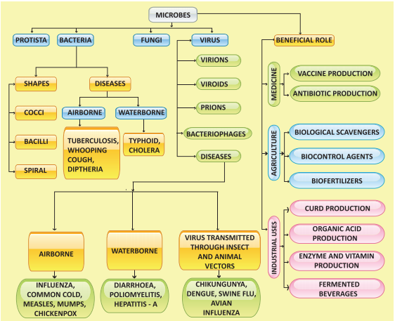
ICT CORNER Microbes
Steps
Type the following URL to reach “Cells Alive” home page and select “Start the Animation”.
Place the pointer on the “Bacteria Cell Model” to view the parts of the cell, or click the parts given below the animation to highlight it on the diagram.
Click the highlighted parts to get a brief description about it.
Click the “Speaker Icon” on the bottom of the animation to read the description for you.
Cells alive: URL: https://www.cellsalive.com/cells/bactcell.htm or Scan the QR Code.

After completing this lesson, students will be able to
know about horticulture and floriculture.
classify biomanures and know their importance.
differentiate between hydroponics, aquaponics and aeroponics.
know the importance of dairy farming and cattle breeds.
gain knowledge on the aspects of aquaculture and pisciculture.
gain awareness on vermicomposting methods and the benefits of vermicompost.
identify the commercial products obtained from apiculture
The gift of nature is almost unlimited and thus a variety of useful products are obtained from plants. Economic uses of plants are varied and therefore the scope for improvement and their cultivation is immense. Floriculture and horticulture have gained considerable public attraction. In recent scenario more emphasis is given to the progress of economic aspects of zoology like aquaculture Bracket OPEN culture of fish, prawn, crabs, pearl and edible oysters bracket closed, vermiculture, apiculture and dairy farming which are gaining more importance as animal-based farming due to their economic and commercial values. Animal farming has now become an agro based entrepreneurship and is beneficial to rural farmers. We will study about them elaborately in this lesson.
Horticulture is a branch of agriculture that deals with cultivation of fruits, vegetables, and ornamental plants. The word horticulture is derived from the latin words 'hortus' meaning garden and 'colere' meaning to cultivate. Horticulture is both a science and an art of growing plants with improved growth, quality, yield, and with resistance to diseases, insects, stress etc. There are four main classes of horticulture: Bracket OPEN I bracket closed Pomology Bracket OPEN fruit farming bracket closed, Bracket OPEN ii bracket closed Olericulture Bracket OPEN vegetable farming bracket closed, Bracket OPEN iii bracket closed Floriculture Bracket OPEN flower farming bracket closed, Bracket OPEN iv bracket closed Landscape gardening.
The term pomology is derived from the latin word ‘pomum’ means fruit and ‘logy’ means study. It deals with development, enhancement of fruit quality, cultivation techniques, regulation of production periods and reduction of production cost of fruits.
Olericulture is the science of growing vegetables. Vegetable farming can be classified into: 1bracket closed Kitchen or Nutrition gardening 2bracket closed Commercial gardening 3bracket closed Vegetable forcing.
Kitchen gardening: Kitchen gardening is growing of vegetables in small scale at household. Example Beans, Cabbage, Lady's finger, Tomato, Brinjal, Carrot, Spinach etc.
Figure 23.1 Kitchen gardening Image was given below

Box item open

Government of Tamil Nadu has launched Ulavan Bracket OPEN farmer bracket closed mobile application. It can be used by farmers to gather information on farm subsidies, farm equipments, crop insurance and weather conditions. It also provides information on available stock of seeds and fertilizers in local government and private stores. box item ends
Commercial gardening: It is the production of vegetables in large scale to be sold in markets
Figure 23.2 Commercial gardening image was given below
 .
.
Box item open
Discuss in your class room about the importance of crop insurance to farmers. Box item ends
Vegetable forcing It is the method of growing vegetables in buildings, green houses, cold farms or under other artificial growing conditions. It is the most intensive type of vegetable growing. Example Cabbage, Tomato, Brinjal etc.
Figure 23.3 Vegetable forcing image was given below

Green House or Poly House: It is a framed structure covered with transparent material to grow crops under partially or fully controlled environmental conditions to get optimum growth and productivity. It is the fastest growing sector in the agriculture worldwide.

Figure 23.4 Green House
1. Disease-free plants can be produced continuously.
2. Water requirement of crops is very less.
3. Yield is very high compared to outdoor cultivation.
4. Limited pesticide is needed.
5. It protects plants from uncertain weather.
Floriculture is the art of cultivation of flowering and ornamental plants in garden for beauty or floristry. It is concerned with growing traditional flowers, cut flowers, bedding plants, foliage potted plants, arboriculture trees, turf grass for beautification and value added products like essential oils, pharmaceutical and nutraceutical compounds. Examples: Geraniums Bracket OPEN Pelargonium bracket closed, Busy lizzies Bracket OPEN Impatiens bracket closed, Chrysanthemum and Petunia.
Figure 23.5 Flower Farming image was given below

Box item open
It is an agricultural crops insurance scheme of Indian government. Under this scheme the central government provides insurance cover and financial assistance to farmers. It was launched on 18th February 2016. Box item ends
1. Flowers are used for decoration purpose.
2. They are also used for personal needs and, religious and ceremonial offerings.
3. They impart colour and beauty to the garden.
4. They increase country’s economy.
Landscape horticulture is the study of designing and constructing landscapes in homes, business firms and public areas to imitate natural scenery
Figure 23.6 Landscape gardening image was given below

Organic manures are predominantly derived from plant debris, animal faeces and microbes. They make the soil fertile by adding nutrients like nitrogen. Few of them are listed below.
It consists of faeces and urine from livestocks like cattle, horses, pigs, sheep, chickens, turkeys, rabbits, etc. Manures from different animals have different qualities and different applications.
Farmyard manure: It is a mixture of cattle dung, urine, litter material and other dairy wastes. On an average well decomposed farm yard manure contains 0.5 percent Nitrogen, 0.2 percent available phosphate and 0.5 percent available potash.
Sheep and Goat manure It contains higher nutrients than farm yard manure. It contains 3 percent Nitrogen, 1 percent phosphorus pentoxide and 2 percent potassium oxide.
Compost is a soil conditioner as well as a fertilizer, that is rich in nutrients. It is produced by natural decomposition of organic matter such as crop residues, animal wastes, food wastes, industrial and municipal wastes by microorganisms under controlled conditions.
Green manure is obtained by collection and decomposition of green leaves, twigs of trees, field bunds etc. Green manure improves soil structure, increases water holding capacity and decreases soil loss by erosion. It also helps in reclamation of alkaline soils and reduces weed proliferation. It is a manure obtained from undecomposed green material derived from leguminous plants Example Sunhemp Bracket OPEN Crotolaria juncea bracket closed, Dhaincha Bracket OPEN Sesbania aculeate bracket closed, Sesbania Bracket OPEN Sesbania speciose bracket closed.
Biofertilizers are substances that contain living microorganisms which, when applied to seeds, plant surfaces, or soil, colonize the rhizosphere or the interior of the plant and promote growth by increasing the supply or availability of primary nutrients to the host plant.
Rhizobium: Rhizobium is a soil bacterium that colonize the roots of leguminous plants to form root nodules. The bacteria fix atmospheric nitrogen and convert them to ammonia.
Figure 23.7 Rhizobium biofertilizer image was given below

Azospirillum: Azospirillum bacteria has the ability to use atmospheric nitrogen and transport this nutrient to the crop plants. It is inoculated on maize, barley, oats and sorghum crops. It increases productivity of cereals by 5 to 20 percent of millets by 30 percent and fodder by over 50 percent .
Figure 23.8 Azospirillum biofertilizer image was given below

Azotobacter: Application of Azotobacter bacteria has been found to increase yield of wheat, rice, maize and sorghum. Apart from nitrogen fixation, these organisms are capable of producing antifungal and antibacterial compounds.
Figure 23.9 Mycorrhizae biofertilizer image was given below

Mycorrhizae: These fungi have symbiotic association with the roots of vascular plants. They increase the uptake of phosphorus. Example Citrus, Papaya.
Azolla:Azolla is a free floating, aquatic fern found on water surfaces having a cyanobacterial symbiotic association with Anabaena. It is a live floating nitrogen factory using energy from photosynthesis to fix atmospheric nitrogen.
Figure 23.10 Azolla biofertilizers image was given below

Box item open
Tamil Nadu Government has recently launched 'Biofertiliser Scheme'. It is aimed at better management of natural farming and helps to boost and maintain soil fertility. Box item ends
The history of medicinal plants is as old as the history of human beings. Most medicines are obtained either directly or indirectly from plants. All the major system of medicines such as Ayur veda, Yoga, Unani, Siddha, Homeopathy Bracket OPEN AYUSH bracket closed use drugs obtained from plants and animals. These drugs from medicinal plants are called secondary metabolites. Plants produce primary metabolites for their own living Example carbohydrates, amino acids etc., and secondary metabolites for protection, competition and species interaction. Example alkaloids, terpenoids, flavonoids etc. Phytochemistry is the study of phytochemicals which are chemical substances derived from various parts of the plant. Few plant derived drugs are described in Bracket OPEN Table 23.1bracket closed.
Collect at least five medicinal plants from your locality. Identify the plant and try to find out its medicinal value. Box item ends
Table 23.1 Drugs derived from Medicinal plants table was given below
Serial Number |
Tamil Name |
Botanical Name |
Drug |
Parts used |
Disease cured |
1 |
Katrazhai |
Aloe vera |
Anthraquinones |
Leaves |
Heal wounds, Skin disease, Cancer, Psoriasis |
2 |
Tulsi |
Ocimum sanctum |
Essential oil |
Leaves |
Cold, Fever, Skin disease |
3 |
Nannari |
Hemidesmus indicus |
Terpene |
Roots |
Bacterial infections, Diarrhoea |
4 |
Nilavembu |
Andrographis paniculata |
Terpenoids |
All parts |
Dengue fever, Diabetes, Chikungunya |
5 |
Vetpalai |
Wrightia tinctoria |
Flavonoids |
Latex, Leaves |
Psoriasis, Diarrhoea, Swellings |
6 |
Cinchona maram |
Cinchona officinalis |
Quinine |
Bark |
Malaria, Pneumonia |
7 |
Chivan Amalpodi Bracket OPEN Sarpagandha bracket closed |
Rauwolfia serpentina |
Reserpine |
Root |
Blood pressure, Antidote for Snake bite |
8 |
Thaila maram |
Eucalyptus globulus |
Essential oil |
Leaves |
Fever, Headache |
9 |
Pappali |
Carica papaya |
Papain |
Leaf, Seed |
Dengue |
10 |
Nithya kalyani |
Catharanthus roseus |
Alkaloids |
All parts |
Leukemia, Cancer |
Box item open
The Council of Scientific and Industrial Research Bracket OPEN CSIR bracket closed and National Botanical Research Institute Bracket OPEN NBRI bracket closed and Central Institute for Medicinal and Aromatic Plants Bracket OPEN CIMAP bracket closed have jointly launched India’s first anti diabetic ayurvedic drug BGR -34 Bracket OPEN BGR-Blood Glucose Regulator bracket closed. It contains 34 identified active phytoconstituents from herbal resources. It works by controlling blood sugar levels Box item ends
Mushroom cultivation is a technology of growing mushrooms using plant, animal and industrial waste. In short it is wealth out of waste technology. This technology has gained importance worldwide because of its dietary fibres and protein value. Mushroom is a fungai belonging to basidiomycetes. It is rich in proteins, fibres, vitamins and minerals. There are more than 3000 types of mushrooms. Example Button mushroom Bracket OPEN Agaricus bisporus bracket closed, Oyster mushroom Bracket OPEN Pleurotus species.bracket closed, Paddy straw mushroom Bracket OPEN Volvariella volvacea bracket closed. The cultivation takes one to three months. Major stages of mushroom cultivation are explained below
Composting: Compost is prepared by mixing paddy straw with number of organic materials like cow dung and inorganic fertilizers. It is kept at about 50°C for one week.
Spawning: Spawn is the mushroom seed. It is prepared by growing fungal mycelium in grains under sterile conditions. Spawn is sown on compost.
Casing: Compost is covered with a thin layer of soil. It gives support to the growing mushroom, provides humidity and helps regulate the temperature
Pinning: Mycelium starts to form little bud, which will develop into mushroom. Those little white buds are called pins.
Harvesting: Mushroom grow better in 15° C to 23°C. They grow 3 cm in a week which is the normal size for harvesting. In the third week the first flush mushroom can be harvested
Fig 23.11 Mushrooms was given below

Preservation: Discolouration, weight and flavour loss are the main problems during harvesting of mushrooms. The following methods are used to increase their life.
Bracket OPEN 1 bracket closed Freezing Bracket OPEN 2 bracket closed Drying Bracket OPEN 3 bracket closed Canning Bracket OPEN 4 bracket closed Vacuum Cooling
Bracket OPEN 5 bracket closed Gamma radiation and storing at 15 degree C.
Hydroponics is the method of growing plants without soil, using mineral nutrient solutions in water. The containers are made of glass, metal or plastic. They range in size from small pots for individual plants to huge tank for large scale growing. It was demonstrated by a German Botanist Julius Von Sachs in 1980. Hydroponics is successfully employed for the commercial production of seedless cucumber and tomato. Plants are suspended with their roots submerged in water that contain plant nutrients. The roots absorb water and nutrients, but do not perform the anchoring function. Therefore, the plants must be mechanically supported from above.
Bracket OPEN 1 bracket closed Conservation of water and nutrients.
Bracket OPEN 2 bracket closed Controlled plant growth.
Bracket OPEN 3 bracket closed In deserts and Arctic regions hydroponics can be an effective alternative method.
Figure 23.12 Hydroponics image was given below

The aeroponic system is the high-tech type of hydroponic gardening. The growth medium in this type is primarily air. The roots hang in the air and are misted with nutrient solution. The misting is usually done for every few minutes, as roots will dry out rapidly if the misting cycles are interrupted. A timer controls the nutrient pump much like other types of hydroponic systems, except that the aeroponic system needs a short cycle timer that runs the pump for a few seconds every couple of minutes.
Figure 23.13 Aeroponics image was given below


Aquaponics is a system of a combination of conventional aquaculture with hydroponics in a symbiotic environment, in which plants are fed with the aquatic animals’ excreta or wastes. These wastes are broken down by nitrifying bacteria initially into nitrites and later into nitrates that are utilized by the plants as their nutrients. Thus, the wastes are utilized and water is recirculated back to the aquaculture system.
Aquaponics consists of two main parts, aquaculture- for raising aquatic animals like fish and hydroponics-for raising plants. Green leafy vegetables like chinese cabbage, lettuce, basil, coriander, parsley, spinach and vegetables like tomatoes, capsicum, chillies, bell peppers, sweet potato, cauliflower, broccoli and egg plant can be grown in aquaponics.
Figure 23.14 Aquaponics Image was given below

Dairy farming involves rising of cattle for milk production. It involves the proper maintenance of cattle, along with collection and processing of milk and milk products which are useful to man. Dairying is the production and marketing of milk and its products.
The Indian cattle include cows and buffaloes. They are domesticated for milk, meat, leather and transportation. They belong to two different species, Bos indicus Bracket OPEN Indian cows and bulls bracket closed and Bos bubalis Bracket OPEN buffaloes bracket closed. These cattle animals are reared for milk and farm labour. They are classified into three types: Dairy breeds, Draught Bracket OPEN or bracket closed Draft breeds, Dual purpose breeds.
a. Dairy breeds: Dairy animals are domesticated for obtaining milk. The cows Bracket OPEN milk producing females bracket closed are high milk yielders Bracket OPEN milch animals bracket closed. The dairy breeds are: a bracket closed Indigenous breeds b bracket closed Exotic breeds.
Indigenous breeds are native of India. They include Sahiwal, Red Sindhi, Deoni and Gir. These cattle are well built with strong limbs, prominent hump and loose skin. Milk production depends on the duration of the lactation period Bracket OPEN the period of milk production after the birth of a calf bracket closed. These local breed animals show excellent resistant to diseases.
Exotic breeds Bracket OPEN Bos Taurus bracket closed are imported from foreign countries. They include Jersey, Brown Swiss and Holstein-Friesian etc. These foreign breeds are selected for long lactation periods.
b. Draught Bracket OPEN or bracket closed Draft breeds: They are used for agricultural work, such as tilling, irrigation and carting. These include Amritmahal, Kangayam, Umbla chery, Malvi, Siri and Hallikar breeds. Bullocks are good draft animals while the cows are poor milk yielders.
c. Dual purpose breeds: The cows of these breeds provide milk and the bulls are useful for farm work. In India these breeds are favoured by farmers. They include Haryana, Ongole, Kankrej and Tharparkar.
Box item open
Kangayam: It originated in Kangayam and is observed in Dharapuram, Perundurai, Erode, Bhavani and part of Gobichettipalayam taluk of Erode and Coimbatore district.
Puli kulam: This breed is commonly seen in Cumbum valley of Madurai district in Tamil Nadu. It is also known as Jalli kattu madu, They are mainly used for penning in the field and useful for ploughing. Box item ends
Figure 23.15 Cattle breeds was given below

The food requirement for cattle should support healthy life of the animal and milk producing requirement. The feed for dairy cattle is broadly classified into two: Roughages and Concentrates
Roughage is a coarse and fibrous fodder. It consists of succulent feed Bracket OPEN cultivated grass, fodder and root crops bracket closed and dry fodder Bracket OPEN hay, straw and chaff bracket closed.
Concentrates are low in fibre and contain high level of carbohydrates, protein and other nutrients. A variety of raw materials such as solam Bracket OPEN jowar bracket closed, kambu Bracket OPEN pearl millet bracket closed, ragi Bracket OPEN finger millet bracket closed, rice bran, wheat bran, cotton seed cake, mustard cake, linseed cake, groundnut cake, mango seed, neem cake and yellu Bracket OPEN sesame bracket closed cake can be used to make concentrate feed. They should also be fed on green fodder Bracket OPEN maize, lucerne, berseem, millet, and elephant grass bracket closed.
Dairy cattle need balanced rations containing all nutrients in proportional amounts and food additives which contain minerals, vitamins, antibiotics and hormones to promote the growth of animals, good yield of milk and to protect them from diseases. The daily average feed ratio of a milking cow is:
Bracket OPEN 1 bracket closed 15-25 kg of roughage Bracket OPEN dry grass and green fodder bracket closed
Bracket OPEN 2 bracket closed 4-5 kg of grain mixture
Bracket OPEN 3 bracket closed 100 to 150 litres of water
Box item open
Dr. Verghese Kurein, was the founder of National Dairy Development Board Bracket OPEN NDDB bracket closed and was called the Architect of India’s Modern Dairy Industry and the Father of White Revolution. NDDB designed and implemented the world’s largest dairy development programme called OPERATION FLOOD.
Improved breeding techniques in cattle have tremendously increased the production of new breeds with high capacities.
Intensive Cattle Development Programme: It is based on cross breeding of indigenous cows with exotic Bracket OPEN European bracket closed breeds to increase milk production. New methods and modern equipments are made available for machine milking of cows.
Operation Flood Programme: It is based on dairy commodity aid to increase milk supply in urban areas.
Aquaculture is the rearing of economically important aquatic organisms like fishes, prawns, shrimps, crabs, lobsters, edible oysters, pearl oysters and seaweeds under controlled and confined environmental conditions using advanced technologies.
Aquaculture is classified into:
1. Freshwater aquaculture
2. Marine water aquaculture Bracket OPEN Mariculture bracket closed
Freshwater aquaculture: The rearing of aquatic organisms in freshwater is called freshwater aquaculture. Culture of organisms is carried out in pond, river, dam, lake and cold water. These freshwater resources remain within the land. Tilapia, carps Bracket OPEN Catla, Rohu, Mrigal bracket closed, catfishes, and air breathing fishes are cultured in freshwater.
Box item open
Tamil Nadu is a leading state endowed with rich fishery resources from Marine, Inland and Coastal Aquaculture. The marine fisheries potential of the state is estimated at 0.719 million tonnes. The inland fishery resources have a potential to yield 4.5 lakh metric tonnes of fishes. Tamilnadu ranks sixth among the maritime states in coastal farming. Box item ends
Marine water aquaculture: The cultivation of aquatic organisms is in sea water. This is also referred as Mariculture or Sea farming. Culture of organisms is carried out along the sea coast Bracket OPEN inshore area bracket closed and in deep sea. Organisms like shrimps Bracket OPEN marine prawns bracket closed, pearl oysters, edible oysters, mussels and fin fishes like salmons, sea bass, milk fishes and mullets are cultured in marine water.
Aquaculture has become the fastest growing food producing sector to meet the demands of food and nutrition to the growing population through increased production from aquatic food resources. It aims at blue revolution. It is a major source of export and foreign exchange earnings for the country. It generates employment through fish farming in rural and under developed area.
Pesiculture or Fish culture is the process of breeding and rearing of fishes in ponds, reservoirs Bracket OPEN dams bracket closed, lakes, rivers and paddy fields. It is the farming of economically important fishes under controlled conditions.
Extensive fish culture: Culture of fishes in large areas with low stocking density and natural feeding.
Intensive fish culture: Culture of fishes in small areas with high stocking density and providing artificial feed to increase production.
Box item open
The Central Marine Fisheries Research Institute Bracket OPEN CMFRI bracket closed was established by the Government of India in 1947 at Cochin, Kerala State. Its main focus is on marine fisheries landings, research on taxonomy and bioeconomic characteristics of marine organisms.
The Central Institute of Brackish Water Aquaculture Bracket OPEN CIBA bracket closed was established in 1987 with its headquarters at Chennai. The objective of CIBA is management of sustainable culture system for fin fish and shell fish in brackish water. CIBA assists small aquafarmers in fin fish and shrimp farming by providing sustainable modern technologies box item ends
Monoculture: It is the culture of single type of fish in a water body. It is also called mono species culture.
Polyculture: It is the culture of more than one type of fish in a water body. It is also called composite fish culture.
Integrated fish farming: It is the culture of fishes along with agricultural crops or animal husbandry farming. Rearing of fish along with paddy, poultry, cattle, pig and ducks.
Fish farm requires different types of pond for the various developmental stages of fish growth. They are given below:
Breeding pond: Healthy and sexually mature male and female fishes are collected and introduced in this pond for breeding. The eggs released by the female are fertilized by the sperm and fertilized eggs float in water as frothy mass.
Hatching pits: The fertilized eggs are transferred to hatching pits or hatching hapas for hatching.
Nursery ponds: The hatchlings are transferred from hatching pits after 2 to 7 days. The hatchlings grow into fry and are cultured in these ponds for about 60 days with proper feeding till they reach 2 - 2.5 cm in length.
Rearing ponds: Rearing ponds are used to culture the fry. The fish fry are transferred from nursery pond to rearing ponds and are maintained for about three months till they reach 10 to 15 cm in length. In these rearing ponds the fry develops into fingerlings.
Stocking pond: The stocking pond is also called as culture pond or production pond. These ponds are used to rear fingerlings upto the marketable size.
Freshwater cultivable fishes: Indian major carps Bracket OPEN Kendai bracket closed – Catla, Rohu, Mrigal, catfishes Bracket OPEN Keluthi bracket closed, Murrels Bracket OPEN Veral bracket closed and Tilapia Bracket OPEN Jilebi kendai bracket closed are cultured in freshwater.
Marine water cultivable fishes: Sea bass Bracket OPEN Koduva bracket closed, Grey mullet Bracket OPEN Madavai bracket closed and Chanos chanos Bracket OPEN Milk fish bracket closed are the fishes cultured in marine water.
Cultivable freshwater and marine food fishes are highly nutritious, rich source of animal proteins and are easily digestible. They are rich in essential amino acids such as lysine and methionine, polyunsaturated fatty acid Bracket OPEN PUFA bracket closed, minerals like calcium, phosphorus, iron, sodium, potassium and magnesium. Fat soluble vitamins A, D and water soluble B-complex vitamins like pyridoxine, cyanocobalamine and niacin.
Box item open
Visit a fish farm near your locality and collect information about the following: a bracket closed Different types of pond you see. B bracket closed Different varieties of fishes in the pond. C bracket closed Type of feed and their ingredients used to prepare feed. Box item ends
Figure 23.16 Freshwater and Marine water fishes image was given below

One of the most economically important shell fish resources of India are prawns. They are of great demand both in the local and international market. Due to their great taste, they are a cherished delicacy to be served as food. In view of their popularity and marketing avenues in foreign countries there is a need for developing advanced technology and intensify prawn culture in India.
A number of species of prawns of different sizes are found distributed in water resources. Only those prawns which are good in size, weight, available in plenty and easily cultivable are commonly selected for prawn culture on commercial basis
The rearing of marine penaied prawn is called marine prawn culture or shrimp culture. Penaeus indicus and Penaeus monodon are cultured in marine water.
Figure 23.17 Marine water prawn image was given below

The rearing of freshwater prawn is called freshwater prawn culture. Macrobrachium rosenbergii and Macrobrachium malcomsonii are cultured in freshwater.
Figure 23.18 Freshwater prawn image was given below

The methods employed for prawn culture are:
a. Seed collection and hatchery method
b. Paddy cum prawn culture method
Seed collection and hatchery method
The larvae and juveniles obtained by collection from natural resources Bracket OPEN estuaries, and backwaters bracket closed or by hatchery methods Bracket OPEN controlled breeding bracket closed. They are reared and grown into adults.
Figure 23.19 Post larvae Bracket OPEN Prawn seed bracket closed image was given below

It is also called Pokkali culture. It is the oldest and traditional method of prawn culture practiced in Kerala. The low lying paddy fields along the coastal areas serve as suitable grounds for prawn culture. Prawns are cultured in these fields after the harvest of paddy.
Figure 23.20 Paddy cum prawn/fish culture image was given below

The awareness of organic matter and concept of sustainable agriculture is gaining importance among our farmers in the recent years to produce good quality crops. Maintenance of soil organic matter is very important for sustainable productivity and this is attained by vermitechnology.
Vermiculture involves the artificial rearing or cultivation of earthworms and using them for the production of compost from natural organic wastes.
The earthworms used for vermicompost production are Perionyx excavatus Bracket OPEN Indian blueworm bracket closed, Eisenia fetida Bracket OPEN Red worms bracket closed, Eudrilus eugeniae Bracket OPEN African night crawler bracket closed.

It is an important component of organic farming which can convert bio-wastes into nutrient rich organic manure by using earthworms. It feeds on the organic wastes and excrete it in digested form known as castings. The compost is generally called vermicompost.
Figure 23.21 Earthworm species for vermicomposting Image was given below

Vermicompost is the excreta Bracket OPEN worm castings bracket closed which is a fine, granular organic matter formed by the decomposition of organic materials by the earthworm. It is an ideal fertilizer for the soil.
Vermicomposting Materials
Biologically degradable organic wastes are used as potential organic resources for vermicomposting. They are:
Agricultural wastes Bracket OPEN crop residue, vegetables waste, sugarcane trash bracket closed
Crop residues Bracket OPEN rice straw, tea wastes, cereal and pulse residues, rice husk, tobacco wastes, coir wastes bracket closed
Leaf litter
Fruit and vegetable wastes
Animal wastes Bracket OPEN cattle dung, poultry droppings, pig slurry, goat and sheep droppings bracket closed
Biogas slurry
It is the rearing of earthworms in a container or bin. The container is half filled with bedding materials such as shredded cardboard, leaves, paddy husk, chopped straw, saw dust and manure. Small quantity of soil and sand is added to provide necessary grit for the worms. The bedding material should be moistened by adding water that enables free movements of the worms. The worms are gently placed and spread evenly on the bedding.
Organic wastes Bracket OPEN kitchen wastes, vegetable and fruit wastes bracket closed are added which are fed by the earthworms. The bin is covered with coconut leaves or gunny bags to conserve moisture, provide darkness and keep out of pests. After a period of 60 days the wastes are completely
transformed into nutrient rich materials that are excreted by earthworms known as worm castings. These castings are harvested and used as organic manure.
Figure 23.22 Vermicomposting bin image was given below

Box item open
Prepare vermicompost from organic waste materials present in your school surroundings and garden. The above activity can be done in a circular container/ bin and kept in shady place with optimal temperature and light. box item ends
Vermicompost is dark brown in colour and similar to farmyard manure in colour and appearance.
It is a rich source of nutrients essential for plant growth. It makes the soil fertile.
It improves the water holding capacity and helps to prevent soil erosion.
It contains valuable vitamins, enzymes and growth regulator substances for increasing growth, vigour and yield of plants.
It enhances decomposition of organic matter in soil.
Vermicompost is free from pathogens and toxic elements.
Vermicompost is rich in beneficial microflora.
Apiculture is the rearing of honey bee for honey. It is also called Bee keeping. It is a profitable rural based industry. Honey bees are domesticated by farmers to produce honey.
There are three types of individuals in an honey bee colony namely the queen bee, the drones and the worker bees.
Queen Bee: The queen is the largest member and the fertile female of the colony. They are formed from fertile eggs. The queen is responsible for laying eggs in a colony.
Drones: They are the fertile males. They develop from unfertilized eggs. They are larger than the workers and smaller than the queens. Their main function is to fertilize the eggs produced by the queen.
Worker Bees: They are sterile female bees and are the smallest members of the colony. Their function is to collect honey, look after the young ones, clean the comb, defend the hive and maintain the temperature of the bee hive.
Figure 23.23 Types of Honey bee image was given below

Indigenous varieties
1bracket closed Apis dorsata Bracket OPEN Rock bee or Wild bee bracket closed
2bracket closed Apis florea Bracket OPEN Little bee bracket closed
3bracket closed Apis indica Bracket OPEN Indian bee bracket closed
Exotic varieties
1bracket closed Apis mellifera Bracket OPEN Italian bee bracket closed
2bracket closed Apis adamsoni Bracket OPEN African bee bracket closed
The comb of the bees is formed mainly by the secretion of the wax glands present in the abdomen of the worker bee. A comb is a vertical sheet of wax with double layer of hexagonal cells.
Formation of Honey: The honey bees suck the nectar from various flowers. The nectar passes to the honey sac. In the honey sac, sucrose present in the nectar mixes with acidic secretion and by enzymatic action it is converted into honey which is stored in the special chambers of the hive.
Quality of honey depends upon the flowers available to the bees for nectar and pollen collection.
Honey bees are used in the production of honey and bee wax. Other useful products obtained from honey bees are bee pollen, royal jelly, propolis and bee venom.
Honey: Honey is a sweet, viscous, edible natural food product. Dextrose and sucrose gives sweet taste to the honey. It also contains amino acids, B-complex vitamins, ascorbic acid, and minerals Formic acid is a preservative in honey. Invertase is an enzyme present in honey.
Honey has an antiseptic and antibacterial property. It is a blood purifier.
It helps in building up of haemoglobin content in the blood.
It is used in Ayurvedic and Una ni system of medicines.
It prevents cough, cold, fever and relieves sore throat.
It is a remedy for ulcers of tongue, stomach and intestine.
It enhances digestion and appetite.
Box item open
Honey bee visits 50 to 100 flowers during a collection trip.
Average bee will make only 1 by 12th of a teaspoon of honey in its lifetime.
One kilogram of honey contains 3200 calories and is an energy rich food. Box item ends
Horticulture, is a branch of agriculture that deals with cultivation of fruits, vegetables, and ornamental plants.
The organic manures are predominantly derived from plant debris, animal faeces, microbes. They make the soil fertile.
Mushroom cultivation is a technology of growing mushrooms using plant, animal and industrial waste.
Hydroponics is the method of growing plants without soil, using mineral nutrient solutions in water.
The aeroponic system is high-tech type of hydroponic gardening and the growth medium is primarily air.
Dairy farming involves raising of cattle for milk production.
Aquaculture is the rearing of economically important aquatic organisms like fishes, prawns, shrimps, crabs, lobsters, edible oysters, pearl oysters and sea weeds under controlled and confined environmental conditions using advanced technologies.
Pesiculture or fish culture is the process of breeding and rearing of fishes in ponds, reservoirs Bracket OPEN dams bracket closed, lakes, rivers and paddy fields.
Vermiculture involves the artificial rearing or cultivation of earthworms and using them for the production of compost from natural organic wastes.
Aquaponics Combination of conventional aquaculture with hydroponics in a symbiotic environment in which plants are fed with the aquatic animals’ excreta or wastes.
Compost Soil conditioner, fertilizer, natural pesticide, a decomposed organic matter which is rich in nutrients.
Floriculture Production of ornamental plants.
Green manure Undecomposed green material derived mostly from leguminous plants.
Hydroponics Soil less growing system in which plants grow in water.
Mariculture Culture of fishes and other aquatic organism in marine water near the sea coast.
Nectar Sweet viscous secretion secreted by the flower of plants.
Olericulture Production of vegetables.
Pisciculture Culture and rearing of fishes under controlled conditions.
Polyculture Culture of more than one species of fish in a pond.
Pomology Production of fruits.
Vermicompost Vermicompost is the excreta of earthworm.
Vermicomposting Earthworms degrade organic waste materials into useful product which can be used as a nutrient rich fertilizer.
Vermiculture Artificial rearing or cultivation of earthworms for the production of
vermicompost.

1. The production and management of fish is called
a. Pisciculture b. Sericulture c. Aquaculture d. Monoculture
2. Which one of the following is not an exotic breed of cow question mark
a. Jersey b. Holstein-Friesan c. Sahiwal d. Brown Swiss
3. Which one of the following is an Italian species of honey bee question mark
a. apis mellifera
b. Apis dorsata
c. Apis florae
d. Apis cerana
4. Which one of the following is not an Indian major carp question mark
a. Rohu b. Catla c. Mrigal d. Singhara
5. Drones in the honey bee colony are formed from
a. unfertilized egg b. fertilized egg c. parthenogenesis d. both b and c
6. Which of the following is an high milk yielding variety of cow question mark
a. Holstein- Friesan b. Dorset c. Sahiwal d. Red Sindhi
7. Which Indian variety of honey bee is commonly used for apiculture question mark
a. Apis dorsata b. Apis florea c. Apis mellifera d. Apis indica
8. dash is the method of growing plants without soil.
A bracket closed Horticulture b bracket closed Hydroponics c bracket closed Pomology d bracket closed None of these
9. The symbiotic association of fungi and vascular plants is
A bracket closed Lichen b bracket closed Rhizobium c bracket closed Mycorhizae d bracket closed Azotobacter
10. The plant body of mushroom is
A bracket closed Spawn b bracket closed Mycelium c bracket closed Leaf d bracket closed All of these
1. Quinine drug is obtained from dash
2. Carica papaya leaf can cure dash disease.
3. Vermicompost is a type of soil made by dash and microorganisms.
4. dash refers to the culture of prawns, pearl and edible oysters.
5. The largest member in a honey bee hive is the dash
6. dash is a preservative in honey.
7. dash is the method of culturing different variety of fish in a water body.
1. Mycorrhiza is an algayae.
2. Milch animals are used in agriculture and transport.
3. Apis florea is a rock bee.
4. Ongole is an exotic breed of cattle.
5. Sheep manure contains high nutrients than farm yard manure.
Column A |
Column B |
Lobsters |
Marine fish |
Catla |
Pearl |
Sea bass |
Shell fish |
Oysters |
Paddy |
Pokkali |
Fin fish |
Pleurotus sps |
Psoriosis |
Sarpagandha |
Oyster mushroom |
Olericulture |
Reserpine |
Wrighta tinctoria |
Vegetable farming |
a. Exotic breed and Indigenous breed
b. Pollen and Nectar
c. Shrimp and Prawn
d. Farmyard manure and Sheep manure
1. What are secondary metabolites question mark
2. What are the types of vegetable garden question mark
3. Mention any two mushroom preservation methods.
4. Enumerate the advantages of vermicompost over chemical fertiliser.
5. What are the species of earthworm used for vermiculture question mark
6. List the medicinal importance of honey
1. Enumerate the advantage of hydroponics.
2. Define Mushroom culture. Explain the mushroom cultivation methods
3. What are the sources of organic resources for vermicomposting question mark
4. Give an account of different types of fish ponds used for rearing fishes.
5. Classify the different breeds of the cattle with suitable examples.
1. Biomanuring plays an important role in agriculture. Justify
2. Each bee hive consists of hexagonal cells. Name the material in which the cell is formed and mention the significance of the hexagonal cells.
1. Jawaid Ahsan and Subhas Prasad Sinha A Hand Book on Economic Zoology, S.Chand and Company , New Delhi
2. Sharma O.P. Economic Botany Tata Mc Graw Publishing Co Limited
3. Ismail, S.A. The Earthworm Book, Other India Press, Goa
http:// www.biology.online.org
www.biology discussion.com
www.nios.ac.in.textbook.com


After completing this lesson, students will be able to
relate different aspects of environmental science.
describe biogeochemical cycles.
analyse the impacts of human activities on water cycle, nitrogen cycle and carbon cycle.
correlate the adaptations of plants with the habitat.
explain the adaptations of bat and earthworm.
explain recycling of water its methods and importance .
discuss the importance of water conservation and water recycling methods.
“Nature has the power to refresh and renew” Helen Keller
Elements of nature continuously undergo changes and transformations. Environmental protection provides holistic knowledge about natural processes, effects of human intervention and solutions to overcome environmental problems. Environmental issues such as pollution, global warming, ozone layer depletion, acid rain, deforestation, landslide, drought and desertification have gained major focus across the world. Natural resources are recycled over and over again on earth for continued availabilty. At the same time, it also reminds us of our responsibility to reduce and restrain our activities that will affect the natural processes.
Living organisms adjust themselves according to their habitat and changes in the ecosystem. All living organisms develop certain morphological, anatomical, physiological and reproductive adaptations which help them to survive better and to withstand environmental conditions.
This lesson deals with bio-geo-chemical cycles, adaptations by the plants and animals, water conservation and recycling of water.
Biosphere is the part of the earth where life exists. All resources of biosphere can be grouped into two major categories namely:
Bracket OPEN 1 bracket closed Biotic or living factors which include plants, animals and all other living organisms.
Bracket OPEN 2 bracket closed Abiotic or non-living factors which include all factors like temperature, pressure, water, soil, air and sunlight which affect the ability of organisms to survive and reproduce.
There is a constant interaction between biotic and abiotic components in the biosphere and that makes the biosphere a dynamic and stable system. Cyclic flow of nutrients between non-living and living factors of the environment are termed as bio-geo-chemical cycles. Some of the important biogeochemical cycles are:
1. Water cycle 2. Nitrogen cycle 3. Carbon cycle
Water cycle or hydrological cycle is the continuous movement of water on earth. In this process, water moves from one reservoir to another by processes such as evaporation, sublimation, transpiration, condensation, precipitation, surface runoff and infiltration, during which water converts itself to various forms like liquid, solid and vapour Bracket OPEN Figure 24.1bracket closed.
Evaporation: Evaporation is a type of vaporization, where liquid is converted to gas before reaching its boiling point. Water evaporates from the surface of the earth and water bodies such as the oceans, seas, lakes, ponds and rivers.
Sublimation: Sublimation is conversion of solid to gas, without passing through the intermediate liquid phase. Ice sheets and ice caps from north and south poles, and icecaps on mountains, get converted into water vapour directly, without converting into liquid.
Transpiration: Transpiration is the process by which plants release water vapour into the atmosphere through sto ma ta in leaves and stems.
Condensation: Condensation is the changing of gas phase into liquid phase and is the reverse of vaporisation. At higher altitudes, the temperature is low. The water vapour present there condenses to form very tiny particles of water droplets. These particles come close together to form clouds and fog.
Precipitation: Due to change in wind or temperature, clouds combine to make bigger droplets, and pour down as precipitation Bracket OPEN rain bracket closed. Precipitation includes drizzle, rain, snow and hail.
Run off As the water pours down, it runs over the surface of earth. Runoff water combines to form channels, rivers, lakes and ends up into seas and oceans.
Infiltration: Some of the precipitated water moves deep into the soil. Then it moves down and increases the ground water level.
Percolation: Some of the precipitated water flows through soil and porous or fractured rock.
Infiltration and percolation are two related but different processes describing the movement of water through soil.
Major human activities affecting the water cycle on land are urbanisation, dumping of plastic waste on land and into water, polluting water bodies and deforestation.
Figure 24.1 Water cycle Image was given below

Box item open
Take a small container and place it in the middle of the large bowl. Fill water in the large container and cover it with plastic wrap. Fasten the plastic wrap around the rim of the large container with the rubber band. Place a stone on the top of the plastic wrap. Keep this under sun for few hours. Record your observation . box item ends
Nitrogen is the important nutrient needed for the survival of all living organisms. It is an essential component of proteins, DNA and chlorophyll. Atmosphere is a rich source of nitrogen and contains about 78 percent nitrogen. Plants and animals cannot utilize atmospheric nitrogen. They can use it only if it is in the form of ammonia, amino acids or nitrates
Processes involved in nitrogen cycle are explained below
Figure 24.2 Nitrogen cycle image was given below

Nitrogen fixation: Nitrogen fixation is the conversion of atmospheric nitrogen, which is in inert form, to reactive compounds available to living organisms. This conversion is done by a number of bacteria and blue green algae Bracket OPEN Cyanobacteria bracket closed. Leguminous plants like pea and beans have a symbiotic relationship with nitrogen fixing bacteria Rhizobium. Rhizobium occur in the root nodules of leguminous plants and fixes nitrogenous compounds.
Nitrogen assimilation: Plants absorb nitrate ions and use them for making organic matter like proteins and nucleic acids. Herbivorous animals convert plant proteins into animal proteins. Carnivorous animals synthesize proteins from their food.
Ammonification: The process of decomposition of nitrogenous waste by putrefying bacteria and fungi into ammonium compounds is called ammonification. Animal proteins are excreted in the form of urea, uric acid or ammonia. The putrefying bacteria and fungi decompose these animal proteins, dead animals and plants into ammonium compounds.
Nitrification: The ammonium compounds formed by ammonification process are oxidised to soluble nitrates. This process of nitrate formation is known as nitrification. The bacteria responsible for nitrification are called as nitrifying bacteria.
Table 24.1 Microorganisms involved in nitrogen cycle was given below
Role played in nitrogen cycle |
Name of the microorganisms |
Nitrogen fixation |
Azotobacter Bracket OPEN in soil bracket closed Rhizobium Bracket OPEN in root nodules bracket closed Blue green algae- Nostoc |
Ammonification |
Putrefying bacteria, Fungi |
Nitrification |
Nitrifying bacteria |
Denitrification |
Denitrifying bacteria Pseudomonas |
Denitrification: Free living soil bacteria such as Pseudomonas sp. reduce nitrate ions of soil into gaseous nitrogen which enters the atmosphere.
Burning fossil fuels, application of nitrogen based fertilizers and other activities can increase the amount of biologically available nitrogen in an ecosystem. Nitrogen applied to agricultural fields enters rivers and marine systems. It alters the biodiversity, changes the food web structure and destroys the general habitat.
Carbon occurs in various forms on earth. Charcoal, diamond and graphite are elemental forms of carbon. Combined forms of carbon include carbon monoxide, carbon dioxide and carbonate salts. All living organisms are made up of carbon containing molecules like proteins and nucleic acids. The atmospheric carbon dioxide enters into the plants through the process of photosynthesis to form carbohydrates. From plants, it is passed on to herbivores and carnivores. During respiration, plants and animals release carbon into atmosphere in the form of carbon dioxide. Carbon dioxide is also returned to the atmosphere through decomposition of dead organic matter, burning fossil fuels and volcanic activities.
Figure 24.3 Carbon cycle image was given below

More carbon moves into the atmosphere due to burning of fossil fuels and deforestation. Most of the carbon in atmosphere is in the form of carbon dioxide. Carbon dioxide is a greenhouse gas. By increasing the amount of carbon dioxide, earth becomes warmer. This leads to greenhouse effect and global warming.

Any feature of an organism or its part that enables it to exist under conditions of its habitat is called adaptation. On the basis of water availability, plants have been classified as:
Bracket OPEN 1 bracket closed Hydrophytes
Bracket OPEN 2 bracket closed Xerophytes
Bracket OPEN 3 bracket closed Meesophytes
Plants growing in or near water are called hydrophytes. Hydrophytes may be free floating or submerged plants living in lakes, ponds, shallow water, marshy lands and marine habitat. Hydrophytes face certain challenges in their habitat. They are:
1bracket closed Availability of more water than needed.
Bracket OPEN 2 bracket closed Water current may damage the plant body.
Bracket OPEN 3 bracket closed Water levels may change regularly.
Bracket OPEN 4 bracket closed Maintain buoyancy in water.
1. Roots are poorly developed as in Hydrilla or absent as in Wolffia.
2. Plant body is greatly reduced as in Lemna.
3. Submerged leaves are narrow or finely divided. Example Hydrilla.
Figure 24.4 Hydrophytes Image was given below

4. Floating leaves have long leaf stalks to enable the leaves move up and down in response to changes in water level. Example Lotus.
5. Air chambers provide buoyancy and mechanical support to plants as in Eichhornia. Bracket OPEN swollen and spongy petiole bracket closed.
Plants that grow in dry habitat are called xerophytes. These plants develop special structural and physiological characteristics to meet the following conditions:
1. To absorb as much water as they can get from the surroundings.
2. To retain water in their organs for very long time.
3. To reduce the transpiration rate.
4. To reduce consumption of water.

Figure 24.5 xerophytes
1. They have well developed roots. Roots grow very deep and reach the layers where water is available as in Calotropis.
2. They store water in succulent water storing parenchymatous tissues. Example Opuntia, Aloe vera. 3. They have small sized leaves with waxy coating. Example Acacia. In some plants, leaves are modified into spines. Example Opuntia.
4. Some of the Xerophytes complete their life cycle within a very short period when sufficient moisture is available
Meesophytes are common land plants which grow in situations that are neither too wet nor too dry. They do not need any extreme adaptations.
1. The roots of meesophytes are well developed and are provided with root caps.
2. The stem is generally straight and branched.
3. The leaves are generally broad and thin.
4. The presence of waxy cuticle in leaves traps the moisture and lessens water loss.
5. Leaves have stomata which close in extreme heat and wind to prevent transpiration.
Animals can adapt themselves according to their habitat. Temperature and light are forms of energy which influence various stages of life activities such as growth, metabolism, reproduction, movement, distribution and behaviour. Animals develop special features or behaviour patterns to escape from extreme conditions of temperature and light. In this context, let us study about the adaptive features of bat and earthworm.
Bats are the only mammals that can fly. Mostly, bats live in caves. Apart from caves, bats also live in trees, hollowed logs and rock crevices. They are extremely important to humans as they reduce insect population and help to pollinate plants. Adaptations of bat in relation to their habitat are explained below.
Bats are active at night. This is a useful adaptation for them, as flight requires a lot of energy during day. Their thin, black wing membrane Bracket OPEN Patagium bracket closed may cause excessive heat absorption during the day. This may lead to dehydration.
Forelimbs are modified serve wings. Tail supports and controls movements during flight. Muscles are well developed and highly powerful and achieve in beating of wings. Tendons of hind limbs provide a tight grasp when the animals are suspended upside down at rest.
Hibernation is a state of inactivity in which the body temperature drops with a lowered metabolic rate during winter. Bats are warm blooded animals but unlike other mammals, they let their internal temperature reduce when they are resting. They go to a state of decreased activity to conserve energy.

Bats use a remarkable high-frequency system called echolocation. Bats give out high-frequency sounds Bracket OPEN ultrasonic sounds bracket closed. These sounds are reflected back from its prey and perceived by the ear. Bats use these echoes to locate and identify the prey
Figure 24.6 Bats Image was given below

It is commonly found in soil, feeding on live and dead organic matter. Earthworm plays a vital role in maintaining soil fertility. It facilitates aeration, water infiltration and producing organic matter to increase crop growth. Some of the adaptations of earthworm are:
The earthworm has a cylindrical, elongated and segmented body. This helps them to live in narrow burrows underground and for easy penetration into the soil.
Mucus covers the skin which does not allow soil particles to stick to it. Moist skin helps in oxygenation of blood.
Its body is flexible having circular and longitudinal muscles which help in movement and subsoil burrowing. Each segment on the lower surface of the body has number of setae. They help the earthworm to move through the soil and provide anchor in the burrows.
When the soil becomes too hot or dry, earthworms become inactive and undergo a process called aestivation. Earthworm moves deeper into the soil. It secretes mucus and lowers their metabolic rate in order to reduce water loss. They remain dormant until conditions become favourable. They come out of their burrow during rainy season.
Earthworms are sensitive to light. It has no eyes but can sense light through light sensitive cells Bracket OPEN Photoreceptors bracket closed present in their skin. They react negatively to bright light Bracket OPEN Photophobic bracket closed. It remains in its burrow during the day to avoid light.
Box item open
Earthworms are referred as ‘Farmer’s friend’. After digesting organic matter, earthworms excrete a nutrient-rich waste product called castings which is used as Vermicompost. Box item ends
Water conservation is the preservation, control and management of water resources. It also includes activities to protect the hydrosphere and to meet the current and future human demand.
It creates more efficient use of the water resources.
It ensures that we have enough usable water.
It helps in decreasing water pollution.
It helps in increasing energy saving.
Water conservation measures that can be taken by industries are:
using dry cooling systems.
if water is used as cooling agent, reusing the water for irrigation or other purposes.
Agricultural water is often lost due to leaks in canals, run off and evaporation. Some of the water conserving methods are:
using lined or covered canals that reduce loss of water and evaporation.
using improved techniques such as sprinklers and drip irrigation.
encouraging the development of crops that require less water and are drought resistant.
mulching of soil in vegetable cultivation and in horticulture.
Box item open
World Water Day on 22nd March every year, is about focusing attention on the importance of water. box item ends
All of us have the responsibility to conserve water. We can conserve water by the following activities:
Using a bucket of water to take bath than taking a shower.
Using low flow taps.
Using recycled water for lawns.
Repairing the leaks in the taps.
Recycling or reusing water wherever it is possible.
Bracket OPEN 1 bracket closed Rain water harvesting.
Bracket OPEN 2 bracket closed Improved irrigation techniques.
Bracket OPEN 3 bracket closed Active use of traditional water harvesting structures.
Bracket OPEN 4 bracket closed Minimising domestic water consumption.
Bracket OPEN 5 bracket closed Awareness on water conservation.
Bracket OPEN 6 bracket closed Construction of farm ponds.
Bracket OPEN 7 bracket closed Recycling of water.
Farm ponds are used as one of the strategies to support water conservation. Much of the rainfall runs off the ground. The run off not only causes loss of water but also washes away precious top soil. Farm ponds help the farmers to store water and to use it for irrigation.
Figure 24.7 Farm pond image was given below

Farm pond is a dugout structure with definite shape and size. They have proper inlet and outlet structures for collecting the surface runoff flowing from the farm area. The stored water is used for irrigation.
The advantages of farm ponds are:
They provide water to growing crops, without waiting for rainfall.
They provide water for irrigation, even when there is no rain.
They reduce soil erosion.
They recharge ground water.
They improve drainage.
The excavated soil can be used to enrich soil in fields and levelling lands.
They promote fish rearing.
They provide water for domestic purposes and livestock.
Water recycling, apart from rain water harvesting, is also one of the key strategies to conserve water. Water recycling is reusing treated wastewater for beneficial purposes such as agricultural and landscape irrigation, industrial processes, flushing in toilets and ground water recharge.
Conventional waste water treatment consists of a combination of physical, chemical and biological processes which remove solids, organic matter and nutrients from waste water. The waste water treatment involves the following stages:
Primary treatment involves temporary holding of the wastewater in a tank. The heavy solids get settled at the bottom while oil, grease and lighter solids float over the surface. The settled and floating materials are removed. The remaining liquid undergoes secondary treatment.
Secondary treatment is used to remove the biodegradable dissolved organic matter. This is performed in the presence of oxygen by aerobic microorganisms Bracket OPEN Biological oxidation bracket closed. The microorganisms must be separated from treated water waste by sedimentation. After separating the sediments of biological solids, the remaining liquid is discharged for tertiary treatment.
Tertiary or advanced treatment is the final step of sewage treatment. It involves removal of inorganic constituents such as nitrogen, phosphorus and microorganisms. The fine colloidal particles in the sewage water are precipitated by adding chemical coagulants like alum or ferric sulphate
Inlet - sewage water
downward arrow mark
Primary treatment Bracket OPEN physical bracket closed
-Sedimentation Bracket OPEN heavy solids bracket closed
- Floatation Bracket OPEN oil, grease, lighter solids bracket closed
- Filtration
downward arrow mark
Secondary treatment Bracket OPEN biological bracket closed
- Biological oxidation Bracket OPEN biodegradable dissolved organic matter bracket closed
Sedimentation Bracket OPEN biological solids bracket closed
Filtration
Downward arrow mark
Tertiary treatment Bracket OPEN physio-chemical bracket closed
- Bracket OPEN nitrogen, phosphorus, suspended solids, heavy metals bracket closed
- Disinfection Bracket OPEN chlorination 5-15mg/l bracket closed
Downward arrow mark
Outlet- recycled water
Agriculture
Landscape
Public parks
Cooling water for power plants and oil refineries
Toilet flushing
Dust control
Construction activities
IUCN is an international organization working in the field of nature conservation and sustainable use of natural resources. IUCN is the global authority on the status of the natural world and the measures needed to safeguard it.
The vision of IUCN is ‘A just world that values and conserves nature’.
The mission of IUCN is to influence, encourage and assist societies throughout the world to conserve the integrity and diversity of nature and to ensure that any use of natural resources is equitable and ecologically sustainable.
The organization is best known to the wider public for compiling and publishing the IUCN red list of threatened species, which assesses the conservation status of species worldwide. India, a mega diverse country with only 2.4 percent of world’s land area, accounts for 7-8 percent of all recorded species. It includes over 45,000 species of plants and 91,000 species of animals. The country’s diverse physical features and climatic conditions have resulted in a variety of ecosystems such as forests, wetlands, grasslands, desert, coastal and marine ecosystems. Four of 34 globally identified biodiversity hotspots are found in India. They are:
The Himalayas
The Western ghats
The North-East
The Nicobar islands
India became state member of IUCN in 1969, through the Ministry of Environment Forest and Climate change Bracket OPEN MoEFCC bracket closed.
Figure 24.8 Red list categories of IUCN image was given below

IUCN was founded on 5th October 1948 at Gland, Switzerland
Figure 24.9 Animals in Red List image was given below

Cyclic flow of nutrients between non-living environment and living organisms are termed as biogeochemical cycles.
The ammonium compounds formed by ammonification process is oxidised to soluble nitrates. The process of nitrate formation is known as nitrification.
Hydrophytes may be free floating or submerged plants living in lakes, ponds, shallow water, marshy lands and marine habitat.
Plants that grow in dry habitat are called xerophytes.
Mesophytes are common land plants which grow in situations that are neither too wet nor too dry.
Animals develop special features or behaviour patterns to escape from the extreme conditions of temperature and light.
Farm pond is a dugout structure with definite shape and size for collecting the surface runoff flowing from the area around the farm.
Water recycling is reusing treated wastewater for beneficial purposes
IUCN is the global authority on the status of the natural world and the measures needed to safeguard it.
Aestivation State of inactivity and a lowered metabolic rate in animals, during summer.
Assimilation Conversion of nutrients into usable form that is incorporated into the tissues and organs.
Buoyancy Capacity to remain a float in liquid or gas.
Echo location Use of sound waves and their echoes to determine the location of objects.
Hibernation State of inactivity and a lowered metabolic rate in animals, during winter.
Infiltration Process by which water on the ground surface enters the soil.
Precipitation Product of condensation of atmospheric water vapour that falls on earth.
Setae Hair-like locomotory structure, present in each segment of an earthworm.
Stomata Minute pores in the epidermis of leaves which facilitate gaseous exchange and transpiration.
Sublimation Conversion of solid state into vapour state without going through a liquid state.

1. Choose the correct answer.
1. All the factors of biosphere which affect the ability of organisms to survive and reproduce are called as dash
a. biological factors b. abiotic factors c. biotic factors d. physical factors
2. The ice sheets from the north and south poles and the icecaps on the mountains, get converted into water vapour through the process of dash
a. evaporation b. condensation c. sublimation d. infiltration
3. The atmospheric carbon dioxide enters into the plants through the process of dash
a. photosynthesis b. assimilation c. respiration d. decomposition
4. Increased amount of dash in the atmosphere, results in greenhouse effect and global warming
a. carbon monoxide b. sulphur dioxide c. nitrogen dioxide d. carbon dioxide
Microorganism |
Role Played |
Nitrosomonas |
Nitrogen fixation |
Azotobacter |
Ammonification |
Pseudomonas species |
Nitrification |
Putrefying bacteria |
Denitrification |
1. Nitrogen is a greenhouse gas.
2. Poorly developed root is an adaptation of mesophytes.
3. Bats are the only mammals that can fly.
4. Earthworms use the remarkable high frequency system called echoes.
5. Aestivation is an adaptation to overcome cold condition.
1. Roots grow very deep and reach the layers where water is available. Which type of plants develops the above adaptation question mark Why question mark
2. Why streamlined bodies and presence of setae is considered as adaptations of earthworm question mark
3. Echolocation is the adaptation of bats. Is this correct question mark
1. What are the two factors of biosphere question mark
2. How do human activities affect nitrogen cycle question mark
3. What is adaptation question mark
4. What are the challenges faced by hydrophytes in their habitat question mark
5. Why is it important to conserve water question mark
6. List some of the ways in which you could save water in your home and school.
7. What are the uses of recycled water question mark
8. What is IUCN question mark What is the vision of IUCN question mark
1. Describe the processes involved in the water cycle.
2. Explain carbon cycle with the help of a flow chart.
3. List out the adaptations of xerophytes.
4. How does a bat adapt itself to its habitat question mark
5. What is water recycling question mark Explain the conventional wastewater recycling treatment methods.
1. Shukla R.S and Chandel. P.S. A textbook of Plant Ecology including Ethnobotany and Soil Science.
2. Verma, P.S and Agarwal. V.K. Environmental Biology, S.Chand and Company, New Delhi.
3. Kotpal R.L Zoology- Phylum - Annelida – Rastogi Publications, Meerut.
www.sciencelearn.org
concept map

ICT CORNER Environmental Science
Steps
Type the given URL to reach “The Carbon Cycle” simulation page.

Press “Run Decade” button to observe the carbon cycle accumulating every 10 years.
Select “Curb Emission” from “lesson” tab and adjust the simulation parameters to
watch the effect of cycle.
Select “Feedback Effects” from “lesson” tab and run the cycle and analyze the carbon
accumulation result.
Carbon cycle
URL: https://www.learner.org/courses/envsci/interactives/carbon/carbon.html or Scan the QR Code.
After the completion of this lesson, students will be able to:
define presentation.
create a new presentation.
insert text box, images, audio and video files.
insert and delete a slide.
view a slide show
LibreOffice Impress is a software that is used to create a presentation with text effect, graphics, sound to make it interesting and effective for the audience. A colourful presentation containing text, photos, picture, sound and animation will amaze the viewers and make them more interested to listen to the presentation. Animation is the process of creating movement for an object. It is a user friendly application software. To start LibreOffice Impress, we can follow the steps given below:
1. Click the Start button.
2. Click All Programs.
3. Click LibreOffice Impress
4. Click LibreOffice Impress option
image was given below
A presentation is a structured delivery of information. It is a systematic display of information along with graphics, movies, sound, etc. All these are displayed together on the screen.
To create a Blank presentation, follow the given steps:
1. Click the LibreOffice Impress
2. Click the New option from the File menu.
3. Click Presentation option from the left pane.
4. Click Blank Presentation option.
image was given below
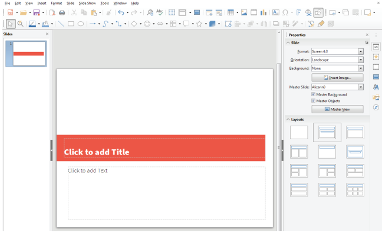
You know that a LibreOffice Impress presentation is a combination of many slides. You can create additional slides. These slides, when displayed in sequence, form a presentation. So, in order to prepare a presentation, we have to prepare its slides first.
When you create a Blank Presentation, a slide appears on the screen with two placeholders.
1. Click inside a placeholder to enter text. The cursor appears.
2. Type the text. After you finish typing the text, click outside the placeholder
image was given below
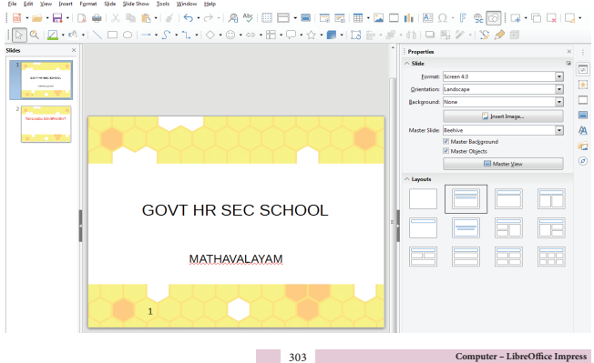
To insert a new slide in a presentation, follow the given steps:
1. Click the Slide Menu.
2. Click New Slide from slides menu.
3. Choose the layout you want. For example, Blank, the new slide is inserted. Similarly, you can add many slides in a presentation.
image was given below
To Insert a Picture in a slide, choose insert - is greater than Image or click the Insert image icon from the Standard Toolbar.
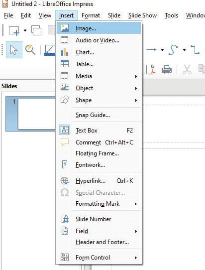
Text box is used to add text anywhere on your slide.
To add the text, follow the given steps:
1. Select the slide where you want to add a Text Box.
2. Click the Insert Menu.
3. Click Text Box from the Text group.
4. Drag to draw a textbox where you want to add text.
5. Type whatever you want using the keyboard and click anywhere outside the text box.
image was given below
You can insert audio video files to a slide to make your presentation more interesting. By default, LibreOffice provides audio and video clips that you can add to the presentation.
To insert an audio and video from the gallery, follow these steps.
1. Open the slide
2. Click insert menu then click audio/video option. Insert audio/video dialog box appears.
3. Locate and select the audio or video file to insert in the slide.
image was given below
Slide transitions are the effects that take place when one slide gives way to the next one in the presentation, like Roll down from top or Fly in from left. They add dynamic flair to a slideshow, smoothing the transition between slides.
Click view menu and then press slide transition option.
Now you can select any one of the transitions Bracket OPEN or bracket closed you can choose Slide transition option from the Side bar setting
image was given below
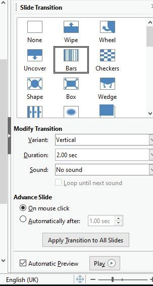
Slide animations are similar to transitions, but they are applied to individual elements in a single slide: title, chart, shape, or individual bullet point.
Select the slide and the object Bracket OPEN text box, image bracket closed you want to apply the animation effect to. In the Sidebar, select Custom Animation icon to open the Custom Animation section. Select the animation effect types from one of the tabbed pages on the Custom Animation dialog.
image was given below
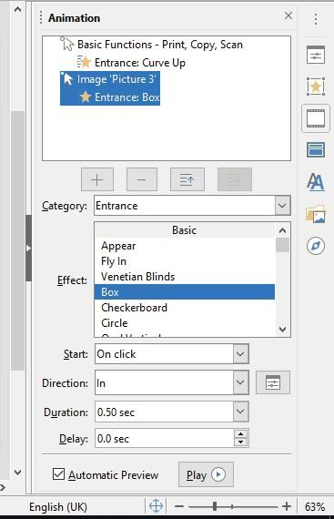
To delete a Slide, follow the given steps:
1. Select the slide you want to delete.
2. Click the Slide Menu.
3. Click Delete from the Slides menu. The slide gets deleted.
image was given below
To save a presentation, follow the given steps:
1. Click the File Menu.
2. Click the Save option. The Save As dialog box appears.
3. Type the file name.
4. Click the Save button.
To have a look at how the actual presentation looks is called viewing a slide show.
To view a slide show, follow the given steps:
1. Click the Slide Show tab on the Ribbon.
2. Click From Beginning from the Start Slide Show group.
You can also press F5 Key on the Keyboard to start the slide show from the first slide . You see your slides on full screen. Click your mouse each time to see the next slide
image was given below
To close a presentation, follow the given steps:
1. Click File Menu.
2. Click Close option from the list.
If the current file is unsaved, LibreOffice Impress displays a dialog box asking you to choose whether or not to save your file.
Select Yes, if you wish to save the file or No, if you do not wish to save the file. You can choose Cancel, to return to your presentation without saving it.
To open an existing presentation, follow the given steps:
1. Click the File Menu.
2. Click the Open option. The open dialog box appears.
3. Select the file to be opened.
4. Click the Open button.
You can also open your file directly by clicking its name from the Recent Documents list.
To Close LibreOffice Impress, follow the given steps:
1. Click the File Menu.
2. Click Exit LibreOffice Impress
1. dash is a structured delivery of information.
a. Slide Show b. Page c. WordArt d. Presentation
2. The slides are grouped together in a sequence to form dash
a. slide show b. sharts c. page d. messages
3. A presentation consists of many dash
a. pages b. slides c. placeholders d. messages
4. which key should be pressed to run a slide show question mark
a. F1 b. Tab c. F5 d. F2
5. dash is used to insert attractive text in the slide.
a. Slide Show b. Word Art c. Text d. Header and Footer
1. What is LibreOffice Impress question mark
2. What is a Presentation question mark
3. What is a Slide question mark
4. Write the steps to view a Slide Show.
Create a presentation on Festivals of Tamil Nadu. Save it with suitable name.
Serial Number |
Name of the Experiment |
Time |
Month |
Serial Number 1. |
To find the diameter of a spherical body |
40 minutes |
June |
Serial Number 2. |
To find the thickness of given iron nail |
40 minutes |
October |
Serial Number 3. |
Melting point of wax |
40 minutes |
January |
Serial Number 4. |
Measurement of volume of liquids |
40 minutes |
July |
Serial Number 5. |
Identification of adaptations in animals |
40 minutes |
August |
Serial Number 6. |
Identification of plant and animal tissues |
40 minutes |
August |
Serial Number 7. |
To detect the adulterants in food samples |
40 minutes |
November |
Serial Number 8. |
Identification of microbes |
40 minutes |
November |
Serial Number 9. |
Economic biology |
40 minutes |
February |
Serial Number 10. |
Identification of adaptations in plants |
40 minutes |
February |

To determine the diameter of a spherical body using Vernier Caliper.
Vernier Caliper, given spherical body Bracket OPEN cricket ball bracket closed.
Bracket OPEN 1 bracket closed Least count Bracket OPEN LC bracket closed =1 Main scale division minus 1 Vernier scale division
LC = 1mm minus 0.9 mm
LC = 0.1 mm Bracket OPEN or bracket closed 0.01 cm
Bracket OPEN 2 bracket closed Diameter of the spherical object Bracket OPEN d bracket closed = M.S.R. plus Bracket OPEN VC into LC bracket closed plus or minus ZC cm where, MSR - Main Scale Reading VC - Vernier Coincide LC - Least Count. Bracket OPEN 0.01 cm bracket closed ZC - Zero Correction.
Find the least count of the Vernier caliper.
Find the zero correction of the Vernier caliper.
Fix the object firmly in between the two lower jaws of the Vernier.
Measure the main scale reading and the Vernier scale coincidence.
Repeat the experiment by placing the jaws of the Vernier at different position of the object.
Using the formula find the diameter of the object.
Least Count Bracket OPEN LC bracket closed: 0.01 cm
Zero Correction Bracket OPEN ZC bracket closed: dash
Serial Number |
Main Scale Reading Bracket OPEN MSR bracket closed cm |
Vernier coincidence Bracket OPEN VC bracket closed |
Diameter of object d = M.S.R. plus Bracket OPEN VC into LC bracket closed plus or minus ZC Bracket OPEN cm bracket closed |
1 |
|
|
|
2 |
|
|
|
3 |
|
|
|
|
|
|
|
|
|
|
|
Average dash cm
Result: The diameter of the given spherical object Bracket OPEN Cricket ball bracket closed is dash cm

To find the thickness of the given iron nail.
Screw gauge and iron nail
Bracket OPEN 1 bracket closed Least Count Bracket OPEN LC bracket closed = Pitch scale Reading divided by number of division in the Head scale
Bracket OPEN 2 bracket closed Thickness Bracket OPEN t bracket closed = Pitch scale Reading Bracket OPEN PSR bracket closed plus
Head scale coincidence Bracket OPEN HSC bracket closed into Least Count Bracket OPEN LC bracket closed] plus or minus zero correction
t = PSR plus Bracket OPEN HSC into LC bracket closed plus or minus ZC
Bracket OPEN1bracket closed If positive error is 5 points, for zero correction, subtract 5 points.
t= PSR plus Bracket OPEN HSC into LC bracket closed minus ZC
t= PSR plus Bracket OPENHSC into LC bracket closed minus 5
Bracket OPEN2bracket closed If negative error is 95 points, for zero correction add 5 points Bracket OPEN 100 minus 95 =5bracket closed.
T = PSR plus Bracket OPEN HSC into LC bracket closed plus ZC t = PSR plus Bracket OPEN HSC into LC bracket closed plus 5
Bracket OPEN3bracket closed If no correction is needed, t = PSR plus Bracket OPEN HSC into 0.01bracket closed plus or minus 0
The Least count of screw gauge is 0.01 mm.
The zero error is to be found when the two faces of the screw gauge touch each other.
Then place the iron nail between the two faces of the screw gauge. The pitch scale reading Bracket OPEN PSR bracket closed and head scale coincidence Bracket OPEN HSC bracket closed are to be noted.
Repeat the process by placing other parts of the iron nail in the screw gauge.
Tabulate the readings.
Zero correction: Least count: 0.01 mm
Serial Number |
Pitch Scale Reading PSR Bracket OPEN mm bracket closed |
Head Scale Coincidence Bracket OPEN HSC bracket closed |
Thickness of the iron nail t = PSR plus Bracket OPENH S C × LC bracket closed ± ZC Bracket OPEN mm bracket closed |
1 |
|
|
|
2 |
|
|
|
3 |
|
|
|
Average: dash cm
Result: The diameter Bracket OPEN Thickness bracket closed of the iron nail is dash mm.
To determine the melting point of wax using cooling curve.
The determination of melting point is based on latent heat which is the amount of heat required to change a unit mass Bracket OPEN 1gm bracket closed of a substance from one state to another state without changing its temperature.
Beaker, burner, thermometer, boiling tube, retort stand and clamp wire gauze, tripod stand, candle wax, stop watch, bowl of sand.
Procedure:
Melt the wax in a warm water bath.
When the wax is melted entirely, remove it from the bath, dry it and then bury it in sand.
Record the temperature each 30 seconds while the liquid is being converted to solid.
At the same time watch for constant temperature at which liquid and solid are present.
Melting point of wax = Constant Temperature over a period of time

Observation and Tabulation:
Serial number |
Time Bracket OPEN Second bracket closed |
Temperature |
|
|
|
|
|
|
|
|
|
The temperature at the point M denotes the melting point of wax
Suggestion: With the help of ICT corner, the teacher can show the live video of the experiment of melting point of wax using the link www.kau.edu.sa

To measure the volume of given colourless and coloured liquids.
Pipette Bracket OPEN 20 ml bracket closed, sample liquids and beakers
Take a 20 ml pipette. Wash it thoroughly with water and then rinse it with the given liquid. Insert the lower end of the pipette into the given liquid and suck the solution slowly till the solution rises well above the circular mark on the stem. Take the pipette out of the mouth and quickly close it with the fore finger. Take the pipette out the liquid and keep it such a way that the circular mark on the stem is at the level of the eyes. Now slowly release the fore finger to let the liquid drop out until the lower meniscus touches the circular mark on the stem. Now the liquid in the pipette is exactly 20ml. This can be transferred to an empty beaker by removing the fore finger.
Tabulation
Serial.Number |
Name of the liquid |
Colour of the liquid |
Nature of the meniscus |
Volume of the liquid |
Serial.Number 1 |
|
|
|
|
Serial.Number 2 |
|
|
|
|
Serial.Number 3 |
|
|
|
|
Report: Exactly 20 ml of various liquids are measured using a standard 20 ml pipette
Note:
1. Keeping the circular mark on the stem of the pipette above or below the level of the eyes will lead to error.
2. When coloured liquids are measured, the upper meniscus should be taken into account.
3. Never suck strong acids or strong alkalis using a pipette.

To identify the given vertebrate animals and list out the adaptations seen in them.
1. Pisces Bracket OPEN Fish bracket closed, 2. Amphibian Bracket OPEN Frog bracket closed, 3. Reptile Bracket OPEN Calotes bracket closed, 4. Aves Bracket OPEN Dove bracket closed, 5. Mammal Bracket OPEN Rat bracket closed
The following adaptations are noted.
Serial Number |
Name of the animal |
Habitat |
Body structure |
Body covering |
Locomotory organs |
1 |
Fish |
|
|
|
|
2 |
Frog |
|
|
|
|
3 |
Calotes |
|
|
|
|
4. |
Dove |
|
|
|
|
5. |
Rat |
|
|
|
|

To identify the structural features of plant and animal tissues from permanent prepared slides.
Identify the given plant and animal tissues.
A bracket closed Simple tissues- parenchyma, collenchyma, sclerenchyma
B bracket closed Complex tissues-xylem and phloem
C bracket closed Epithelial tissue- columnar epithelium, ciliated epithelium
D bracket closed Connective tissue- section of bone
E bracket closed Muscle tissue- skeletal muscle, smooth and cardiac muscle
F bracket closed Nerve tissue
Draw a labelled sketch and write the location and function of the tissues observed.

To detect the adulterants in the given samples.
Beakers, glass bowl, spoon and match box.
Given samples: pepper Bracket OPEN A bracket closed, honey Bracket OPEN B bracket closed, sugar Bracket OPEN C bracket closed, chilli powder Bracket OPEN D bracket closed, green peas Bracket OPEN E bracket closed and tea powder Bracket OPEN F bracket closed
Take 5 beakers with water and label it as A, B, C, D, E.
Take samples A, B, C, D, E and add water to the respective beaker.
Observe the changes in each beaker.
Record your observations.
Observation:
Serial Number |
Sample |
Observation |
Indication |
Serial Number 1. |
A |
|
|
Serial Number 2. |
B |
|
|
Serial Number 3. |
C |
|
|
Serial Number 4. |
D |
|
|
Serial Number 5. |
E |
|
|
Serial Number 6 |
F |
|
|

To identify the different types of microbes Bracket OPEN Bacteria and Virus bracket closed.
To observe and identify the following microbes with the help of photograph / picture/ permanent slide using a compound microscope/model/biovisual chart.
a. Escherichia coli
b. Vibrio cholerae
c. Lactobacillus
d. Retrovirus Bracket OPEN HIV bracket closed
a. Draw a neat labelled diagram.
b. Write the shape of the bacteria and virus observed.
c. Mention the structural details of the bacteria and virus.
d. Indicate its microbial importance/disease caused.

To identify the plants and animals of economic importance.
To observe the following using specimen/photograph/picture/model.
a. Biofertilizer – Rhizobium
b. Medicinal plants – Nilavembu, Aloe vera
c. Mushroom - Agaricus bisporus
d. Indigenous cattle breed - Umblachery
e. Indian major carp - Catla catla
f. Type of Honey bees - Queen bee, Worker bee
a. Draw a neat labelled sketch
b. Write its economic importance

To identify the given plant specimen and list out its adaptations
1. Mesophytic plant – Tomato or Brinjal plant
2. Xerophytic plant – Opuntia
3. Aquatic plant – Eichhornia sp
4. Insectivorous plant – Nepenthes
The given plants are identified and the following adaptations are noted.
1.
2.
3.
4.
5.
Absorption - உட்கவர்தல், உறிஞ்சுதல்
Abundant Elements - அதிகஅளவு காணப்படும் தனிமம்
Acceleration - முடுக்கம்
Adipose tissue - நிணத்திசு. இரத்தச்சவ்வு, கொழுப்பிழையம்
Adulteration - கலப்படம்
Aestivation - கோடைகாலஉறக்கம்
Alkalis - எரிகாரங்கள்
Allotropes - புறவேற்றுமை வடிவம்
Alloys - உலோகக்கலவைகள்
Alternating current – மாறு மின்னோட்டம்
Amorphous - படிக வடிவமற்ற
Animals - விலங்குகள்
Anion - எதிர்மின் அயனி
Aquaregia –இராஜதிராவகம்
Asteroid - சிறுகோள்கள்
Atomic number - அணு எண்
Atomic Structure – அணு அமைப்பு
Autotrophic - தற்சார்பு
Bell jar – மணி ஜாடி
Bilateral Symmetry - இருபக்கச்சமச்சீர்
Biogeochemical Cycle - உயிர் புவி வேதியியல் சுழற்சி
Biological Oxidation - உயிரியியல்ஆக்ஸிசனேற்றம்
Buccal cavity - வாய்க்குழி
Canning - கலனடைத்தல்
Cardiac muscle - இதயத்தசை
Cartilage - குருத்தெலும்பு
Catalys - கிரியா ஊக்கி Bracket OPEN வினையை வேகப்படுத்தும் தனிமம் bracket closed
Catenation - சுய சகப்பிணைப்பு
Cation - நேர்மின் அயனி
Centrifugal force - மையவிலக்குவிசை
Centripetal force - மையநோக்குவிசை
Chemical bond –வேதிப்பிணைப்பு
Chemotherapy - வேதியசிகிச்சைமுறை
seelom - உடற்குழி
Colloidal solution - கூழ்ம கரைசல்
Complex tissue - கூட்டுத்திசு
Compound epithelium - கூட்டுபுறப்படலம்
Compounds - சேர்மம்
Computer - கணினி
Connective Tissue - இணைப்புத்திசு, இணைப்பிழையம்
Coordinate covalent bond - ஈதல் சகபிணைப்பு
Covalent bond - சகபிணைப்பு
Crystallization - படிகமாதல்
Deformation - உருக்குலைவு
Dental Formula – பற்சூத்திரம்
Dialysis – கூழ்மப்பிரிப்பு
Diploblastic – ஈரடுக்கு
Direct current - நேர்மின்னோட்டம்
Displacement - இடப்பெயர்ச்சி
Distillation - வடிகட்டுதல்
Ductile - கம்பியாக நீட்டக்கூடிய
Echolocation - எதிரொளியிடம்
Ectoderm - புறஅடுக்கு
Electric cell - மின்கலம்
Electric circuit - மின்சுற்று
Electric energy - மின்னாற்றல்
Electrical resistance - மின்தடை
Electrochemical Cell - மின்வேதிக்கலம்
Electrode - மின்வாய்
Electrolyte - மின்பகுதிரவம்
Electromagnet - மின்காந்தம்
Electrostatic - நிலைமின்னியல்
Elements - தனிமம்
Endangered species - அழிவின் விளிம்பில் உள்ள சிற்றினங்கள்
Endoderm - அகஅடுக்கு
Equator - பூமத்தியரேகை
Excretion - கழிவுநீக்கம்
Fixed resistor - நிலையான மின்தடை
Flame cell - சுடர்செல்
Force - விசை
Forensic Chemistry - தடய வேதியியல்
Fossil water - புதைபடிவநீர்
Frequency - அதிர்வெண்
Fuse - மின்னுருகுஇழை
Generator - மின்னியற்றி
Genus - பேரினம்
Geotropism - புவிநாட்டம்
Glomerular filtration - குளாமருலர் வடிகட்டுதல்
Heterogeneous - பலபடித்தான தன்மை
Heterotrophic - பிறசார்பு
Hibernation - குளிர்காலஉறக்கம்
Homoeothermic Animal - வெப்பஇரத்தவிலங்கு
Homogenous - ஒருபடித்தான தன்மை
Hydrophytes - நீர்வாழ்த்தாவரங்கள்
Hydrotropism - நீர்நாட்டம்
Immunization - நோய்த்தடுப்பு
Inert gases / Noble gases - அரியவாயு / மந்தவாயு
Inner Transition Elements - உள்இடைநிலைத்தனிமம்
Input - உள்ளீட்டகம்
Internal energy - அகஆற்றல்
Iron filings - இரும்புத் துகள்கள்
IUPAC - தூய மற்றும் பயன்பாட்டு வேதியலுக்கான சர்வதேசக்கழகம்
Kingdom - உலகம்
Lamp Black - விளக்குகரி
Latent heat - உள்ளுறைவெப்பம்
Least count - மீச்சிற்றளவு
Levitate - மிதத்தல்
Ligament - தசைநாண், தசைநார்
Longitudinal waves - நெட்டலைகள்
Malleable - தகடாகும் தன்மையுடைய
Mantle - மேன்டல்உறை
Mass number - நிறைஎண்
Meiosis - குன்றல்பிரிவு, ஒடுக்கற்பிரிவு
Melting - உருகுதல்
Mesoglea - நடுஅடுக்கு
Metalloids - உலோகப்போலிகள்
Meteorological - வானிலைஆய்வு
Mixture - கலவை
Momentum - உந்தம்
Motion – இயக்கம்
Nocturnal - இரவில்இயங்கும்
Non polar solvant - முனைவற்ற கரைப்பான்
Notochord - முதுகுநாண்
Nucleus - அணுஉட்கரு
Octaves - எண்மம்
Octet rule - எண்மவிதி
Olericulture - காய்கறி மற்றும் உணவுத் தாவரங்களை வளர்த்தல்
Operculum - செவுள் மூடி
Optical fibers - ஒளிஇழை
Orbital Velocity - சுற்றியக்கத் திசைவேகம்
Order - வரிசை
Output - வெளியீட்டகம்
Oxidation - ஆக்ஸிஜனேற்றம்
Oxidation number - ஆக்ஸிஜனேற்ற எண்
Pasteurization - பாஸ்டர் பதனம் / பாஸ்டிரைசேஷன்
Penetrate - ஊடுருவுதல்
Permanent Tissues - நிலைத்த திசுக்கள்
Pharmacology - மருந்தியல்
Phloem - புளுயம் Bracket OPEN பட்டையம் bracket closed
Photosynthesis - ஒளிச்சேர்க்கை
Phototropism - ஒளிநாட்டம்
Phylum - தொகுதி
Piston - உந்துதண்டு
Plane mirror - சமதளஆடி
Planet - கோள்
Plants - தாவரங்கள்
Poikilothermic Animal - குளிர் இரத்த விலங்கு
Polymorphism - பல்லுருவமைப்பு
Potential difference Bracket OPEN Voltage bracket closed – மின்னழுத்த வேறுபாடு
Preservatives - பதப்படுத்திகள்
Pressure - அழுத்தம்
Propagation - பரவுதல்
Pump - இறைப்பான்
Radial Symmetry - ஆரசமச்சீர்
Radiation - கதிரியக்கம்
Radioactive decay - கதிரியக்க சிதைவு
Radiocarbon dating - கதிரியக்க கார்பன் வயதுக்கணிப்பு
Radiochemistry - கதிரியக்க வேதியியல்
Range of hearing - செவியுணர் நெடுக்கம்
Rarefactions - தளர்ச்சிகள்
Real and virtual image - மெய் மற்றும் மாயபிம்பம்
Reflection of sound - ஒலி எதிரொளித்தல்
Refraction - ஒளி விலகல்
Remote control - தொலையுணர்வி
Resin code - ரெசின் Bracket OPEN பிசின் bracket closed கோடு
Resistor - மின்தடையம்
Reverberation –எதிர்முழக்கம்
Rheostat - மின்தடை மாற்றி
Space Station - விண்வெளிநிலையம்
Species - சிற்றினம்
Specific latent heat - தன்உள்ளுறை வெப்பம்
Spherical mirrors - கோளக ஆடிகள்
Stomata - இலைத்துளை
Sub phylum - துணைத்தொகுதி
Surface - மேற்பரப்பு
Symbiotic Microbes - கூட்டுயிர் நுண்ணுயிர்கள்
Taxonomy - வகைப்பாடு
Tendons - தசைநாண் Bracket OPEN நாண்bracket closed
Tetravalency - நான்கு இணைதிறன்
Therapy - சிகிச்சை
Time period - அலைவுக் காலம்
Total internal reflection - முழு அக எதிரொளிப்பு
Toxic – நஞ்சு
Transmitting - கடத்தி
Transpiration - நீராவிப்போக்கு
Transverse waves - குறுக்கலைகள்
Triads – மும்மை
Trough - அகடு
Tubular reabsorption - குழாய் வழித்திரும்ப உறிஞ்சுதல்
Ultrasonics - மீயொலி
Underactive - குறைந்த அளவு வினைபுரியும் தன்மை கொண்ட
Uniform motion - சீரான இயக்கம்
Universe - பிரபஞ்சம் / அண்டம்
Vaccination - தடுப்பான்கள் / அம்மை குத்துதல்
Valance Electrons - இணை திறன் கொண்ட எலக்ட்ரான்கள்
Valence – இணைதிறன்
Variable resistor - மாறுமின்தடை
Vase - குவளை, திறந்தகொள்கலன்
Velocity - திசைவேகம்
Vermiculture - மண்புழு வளர்பியல்
Vulnerable species - பாதிப்புக்குள்ளான சிற்றினங்கள்
Xerophytes - வறண்டநிலத்தாவரங்கள்
Xylem - சைலம் Bracket OPEN மரவியம்bracket closed
Zero error - சுழிப்பிழை
Zero Valence - சுழிஇணைதிறன்
Doctor T.V. Venkateswaran, Scientist,
Department of Science and Technology,
Vigyanaprasar, Delhi.
Doctor. Dinakar, Associate Professor,
Madura College of Arts and Science, Madurai.
Doctor. Udhra D, Assistant. Professor,
Department of physics, D.G.Vyshnava College, Chennai.
Margarette David Raj, Principal,
Bakthavatchalam Vidyasharam, Chennai
Thirumathi. Vijayalakshmi Srivatsan,
Principal Bracket OPEN Retired bracket closed, Ps. Senior Secondary School, Chennai-4
List of Authors and Reviewers
Doctor. Sultan Ahmed Ismail, Scientist,
Eco Science Research Foundation, Chennai.
Doctor. Rita John, Professor and Head,
Department of Theoretical Physics,
University of Madras, Chennai.
Doctor. C.V Chitti Babu, Associate Professor,
Department of Botany, Presidency College, Chennai.
Doctor. T.S. Subha, Associate Professor and Head,
Department of Botany, Bharathi Women’s College, Chennai.
Doctor. N. Sarojini, Assistant Professor,
Department of Zoology, Bharathi Women’s College, Chennai.
Doctor. R. Sugaraj Samuel, Assistant Professor,
Department of Physics, The New College, Chennai.
Doctor. G. Ramesh, Assistant Professor,
Post Graduate and Research Department of Chemistry,
Doctor. Ambedkar Government Arts College, Chennai.
Boopathi Rajendran, Deputy Director,
Directorate of Elementary Education, Chennai.
Doctor N. Radha Krishnan, Associate Professor,
Department of Botany, University of Madras, Chennai.
Doctor. K. Chinthanaiyalan, Bachelor of teacher Assistant.,
GHS, Periyar Nagar Nandambakkam, Kancheepuram.
Doctor. R. Saravanan Assistant. Professor,
PG and Research Department of Zoology,
Doctor. Ambedkar Govt Arts College, Chennai.
Doctor. S.K. Geetha, Assistant. Professor,
PG and Research Department of Physics,
Government. Arts College for Men, Chennai.
Doctor. P. Priya, Assistant Professor,
PG and Research Department of Zoology,
Pachaiyappa’s College, Chennai.
Doctor Kanakachalam, Assistant Professor
Government Arts College, Erode.
Doctor. R. Asir Julius Assistant Professor,
SCERT, Chennai.
G. Dhavamani Maheswari, Senior Lecturer
DIET, Tirur, Tiruvallur District.
N. Rajendran, Lecturer,
District Institute of Education and training Kizhapazhuvur, Ariyalur.
V. Jagathratchagan, Headmaster,
Government Higher Secondary School Naduveerapattu, Cuddalore.
Snehalatha Dawson, Headmistress M Bracket OPEN Retired bracket closed,
Dovetton Corrie Bracket OPEN G bracket closed Higher Secondary School, Chennai.
R. Vendhan, Post Graduate Teacher Government Boys Higher Secondary School, Krishnagiri.
S. Ravisankar, Post Graduate Teacher., SRM Higher Secondary School, Ambattur, Chennai.
T. John Prince, Post Graduate Teacher.
NLC Government Higher Secondary School, Block-2, Neyveli, Cuddalore.
S. Geetha, Post Graduate Teacher., Jawahar Higher Secondary School, Ashok Nagar, Chennai.
J. Nagarajan, Post Graduate Teacher Government Higher Secondary School, Kadampuliyur, Cuddalore.
A. Sreekumari, Post Graduate Teacher GK Shetty Hindu Vidhayalaya Municipal Higher Secondary School Adhambakkam, Kanchipuram.
S. Selvabharath, Post Graduate Teacher,Municipality Government Higher Secondary School Mettupalayam.
K. Mohana Chandran, Post Graduate Teacher, Ellen Sharma
Memorial Municipal Higher Secondary School Sozhinganallur, Kanchipuram.
M. Sujatha, Post Graduate Teacher, MGHSS, Thiruvannamalai.
R. Thilaikarasi, Post Graduate Teacher, GK Shetty Hindu Vidhayalaya MHSS,
Adhambakkam, Kanchipuram.
P. Jeyaraj, Post Graduate Teacher, Government Higher Secondary School Munsirai, Kanyakumari.
Doctor. K. Chinthanaiyalan Bachelor of teacher Assistant
Government High School Periyar Nagar Nandambakkam, Kancheepuram.
T. Yuvaraj, Lecturer, District Institute of Education and training Chennai.
P. Nirmala Devi, Bachelor of teacher Assistant.,
Government High School, Kalaiyur, Ramnad.
A. Satheeshkumar Bachelor of teacher Assistant
Government Higher Secondary School, Rajendranagar, Theni.
C. Rajasekar Bachelor of teacher Assistant.,
Government Girls Higher Secondary School, Kundrathur, Kancheepuram.
P. Kalaiselvan Bachelor of teacher Assistant
Thiruvalluvar Higher Secondary School Gudiyaththam, Vellore.
M.S. Shanthi, Bachelor of teacher Assistant.Government Girls Higher Secondary.School, Ashok Nagar, Chennai.
S. Sujatha, Academic Coordinator,
Alpha International School, Sembakkam, Chennai.
K.A. Sharmila Bachelor of teacher Assistant,
Lady Sivaswamy Ayyar Government Higher Secondary.School Mylapore, Chennai.
R. Ramyadevi Bachelor of teacher Assistant.,
Government Higher Secondary School Medavakkam, Kancheepuram.
B. Leo Bachelor of teacher Assistant Government High School R.N. Pudur, Erode
Santhosh J.C. Vinobah Bachelor of teacher Assistant.Government High School, Thachur,
Kanniyakumari
N. Caroline Joseph, Dovetton Corrie Bracket OPEN G bracket closed Higher Secondary School ,Chennai.
S. Sujatha Bachelor of teacher Assistant. Miyasi Municipal Higher Secondary School Chennai.
S.C. Selvathangam Bachelor of teacher Assistant
GHS, Mannivakkam, Kanchipuram
F. Davin Lalitha Mary,
Christ the King Municipal Higher Secondary School, East Tambaram, Chennai.
M.G. Elango, Government Higher Secondary School, Pandhalkudi, Virudunagar.
K.V. Durga, Government Higher Secondary School, Ayyankarkulam.
Ribhu Vohra,
WasteLess, Auroville, Puducherry
Content Readers
Doctor Mazher Sulthana, Professor, Bracket OPEN Retired bracket closed
Department. of Zoology, Presidency College, Chennai.
C. Joseph Prabagar, Assistant Professor,
Department of Physics, Loyola College, Chennai.
Doctor P. Arulmozhichelvan, Associate Professor and Head,
Pachayappa’s College, Chennai.
Doctor S. N. Balasubramanian, Associate Professor.,
Presidency College, Chennai.
Doctor V. Sivamadhavi, Associate Professor.
Bharathi women’s College, Chennai.
Doctor M. Pazhanisamy, Associate Professor.
Govt. Arts College, Nandanam, Chennai.
Doctor G. Diraviam, Associate Professor
Govt. Arts College, Nandanam, Chennai.
Doctor S. Seshadri, Assistant Professor
Doctor Ambedkar Government Arts College, Chennai.
Doctor S. Sreedevi, Assistant Professor
Bharathi Women’s College, Chennai.
Doctor Shameem, Deputy Director, SCERT, Chennai.
Doctor G. Muthuraman, Assistant Professor
Presidency College, Chennai.
Doctor S. Abdul Khader, Assistant Professor
Presidency College, Chennai.
Doctor R. Rajeswari Assistant Professor
Quaid-E-Millath Government. Arts College, Chennai.
Doctor N. Afsar, Assistant Professor Government Arts College, Ponneri.
Doctor G. Rajalakshmi, Assistant Professor
Bharathi Women’s College, Chennai.
Doctor S. George, Assistant Professor Govt. Arts College, Ponneri.
D. Arnold Robinson, Assistant Professor,
Meston College of Education, Chennai.
Doctor S. Devashankar, Assistant Professor
Government Arts College, Ponneri.
Mrs. Malathi, VP,
CSI Bain MHSS, Kilpauk, Chennai.
P. Kamalee, Lecturer District institute of education and training Thiruvannamalai.
C. Anbarasan, Lecturer District institute of education and training Salem.
B. Uthayakumar, Lecturer District institute of education and training Salem.
P. Maheshwari, Chief Educational Office Kanchipuram.
M. Palanichami, Head master
Government Higher Secondary School, Krishnarayapuram, Karur.
Doctor S. Ravi Kasi Venkataraman, Post Graduate Teacher
Government Higher Secondary School, Semmancheri, Chennai.
N. Mahesh Kumar, Post Graduate Teacher,
District Coordinator, Chief Educational Officer Office, Namakkal.
S. Thiyagarajan, Post Graduate Teacher, Government Higher Secondary School, Thirumalpur, Vellore.
Doctor S. Shankar, Post Graduate Teacher,
Government Higher Secondary School, Thiruputkuzhi, Kanchipuram.
Doctor N V S. Sarojini Krishna, Post Graduate Teacher,
Government Higher Secondary School, Palur, Kanchipuram.
G Shanthi Post Graduate Teacher,
Government Higher Secondary School, Singadivakkam, Kanchipuram.
A. Prabhakaran, Post Graduate Teacher,
SRS MHSS, Ambature, Chennai.
T. Subbiah, Post Graduate Teacher,
Government Girls Higher Secondary School, Achirapakkam, Kanchipuram.
N. Thamarai Kannan, Post Graduate Teacher,
Government Higher Secondary School, GGNHSS, Tambaram. Chennai.
A. Guru Prasad, Lecturer,
Kaliyanpoondi, Kanchipuram.
K. Ramesh, Bachelor of Teacher Government High School Esur, Kanchipuram.
Ms. V. Prithimala, CSI BAIN Municipal Higher Secondary School Kilpauk, Chennai.
V. Jayalakshmi, Bachelor of Teacher Government Higher Secondary School Arumbakkam, Chennai.
Subject Expert and Coordinator
Doctor K. Chinthanaiyalan, Bachelor of Teacher Assistant.
Government High School, Periyar Nagar, Nandambakkam, Kancheepuram.
Subject In-Charge
Doctor Vanitha Daniel, Principal,
District Institute of Education and Training Kurukathi, Nagapattinam.
S. Lakshmi Bachelor of Teacher Assistant Government Girls Higher Secondary School Manalurpet, Villlupuram.
Career Guidance
Doctor T. Sankara Saravanan, Deputy Director,
Tamilnadu Textbook and Educational services Corporation,
Chennai.
R. Ravi kumar, Lecturer, District institute of education and training Chennai.
S. Shyamala, Bachelor of Teacher Assistant
Adhi Dravidar Welfare High School, Puliyanthope, Chennai.
A. Ajay, S.G.T., Panchayath Union Middle School Nanthimangalam,
Kumaratchi Block, Cuddalore.
R. Jagannathan, Secondary grade Assistant PUMS Ganesapuram Polur,
Thiruvannamalai.
A. Devi Jesintha, Bachelor of Teacher Assistant.
Government High School N.M. Kovil, Vellore.
J.F. Paul Edwin Roy, Panchayat Union Middle School Rakkipatti, Salem.
N. Jagan Bachelor of Teacher Assistant
Government Boys Higher Secondary School Uthiramerur, Kanchipuram.
J.F. Paul Edwin Roy, PUMS, Rakkipatti, Salem.
M. Janakiraman Bachelor of Teacher Assistant
Panchayat Union Middle School Mattayambatti, Salem.
Art and Design Team
Layout
Gopinath Ragupathi, Yogesh B,
A. Adison Raj, Selvakumar Manickam
Illustration
Gopu Rasuvel, Muthu Kumar R, Sasikumar K
In-House
Rajesh Thangappan, Manohar Radhakrishnan
Kamatchi Balan Arumugam
Wrapper Design
Kathir Arumugam
Co-ordination
Ramesh Munisamy
Typist
A. Sabiah Banu, M. Sathya, A. Kavitha
This book has been printed on 80 G.S.M.
Elegant Maplitho paper.
Printed by offset at: Vimala Note book, Madurai, 625001.